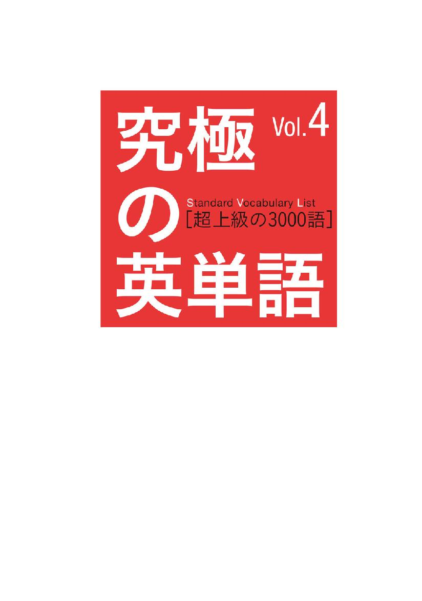
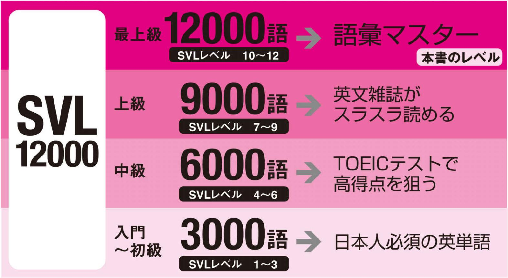
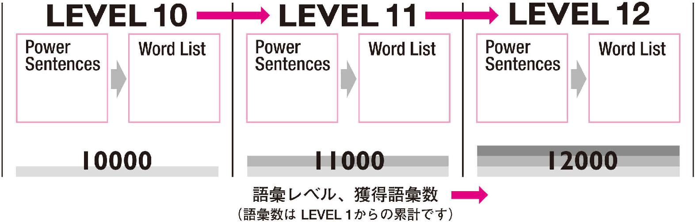

| 究極の英単語 SVL Vol.4 超上級の3000語 | |
| アルク英語出版編集部 | |
| (2007) | |

参照項目から元の箇所に戻るには、お使いのビューワーの仕様に従ってください。または一旦目次を表示し、戻りたい箇所の近くの見出しをタップして戻ってください。
Foreword
は じ め に
日本人が覚えるべき「使える英単語」がここに
『究極の英単語SVL』は、アルクが編集した「標準語彙水準12000」（Standard Vocabulary List［略称SVL12000］）をベースにした、全く新しいタイプの英単語帳です。
SVL12000は、過去30年間にわたり多数の学習教材・書籍に携わってきたアルクが、これまでに蓄積した膨大な英文データや先行資料をもとに、日本人の英語学習者にとって有用な英語語彙1万2000語を選び出し、ネイティブスピーカーの使用頻度や難易度を考慮して12のレベルに区分した、これまでに類を見ない段階別学習語彙リストです。
本書はSVL12000にリストアップされた語彙を本当に使いこなせるようにするために、使い方がよく分かる例文やフレーズ、文法面や発音面での注意事項などをふんだんに盛り込みました。
本書は読者の皆様の単語学習スタイルを、単なる暗記から使える語彙の蓄積に変えます。
□
本書の特徴
1
ネイティブも舌を巻く語彙力の完成語彙マスターになる3000語！

標準語彙水準12000（略称：SVL12000）は日本人英語学習者にとって最も有用な英単語を全12段階にレベル分けした語彙リストです。本書にはSVL12000の超上級レベルに相当するLEVEL10～LEVEL12の単語3000語を完全収録しました。
Vol.1～3とこの3000語を合わせれば、TOEICテストや英検に出題される語彙をほぼカバーし、英文雑誌が余裕で読みこなせるレベルの語彙も習得できます。ネイティブスピーカーも思わずうなる、語彙マスターと呼ぶにふさわしい語彙力の完成です。
2
難しい語が覚えやすくなる「早分かり語源講座」付き！
語彙マスターを目指す巻だけあって、Vol. 4にはかなり難易度の高い語彙がたくさん含まれています。そこで、それらの語彙をできるだけ楽に覚えて、ずっと記憶に留めるために、「語源」を活用しましょう。語源を押さえることで、つづりから単語の意味が類推でき、記憶保持も簡単になります。本文の学習に進む前に、ぜひ、このコーナーに目を通しましょう。
3
「例文」と「単語リスト」をあわせて効率のよい学習！
本書は各レベルとも、Power Sentences（例文）とWord List（単語リスト）という２つのコーナーで構成されています。それぞれ、ネイティブスピーカーが実際によく使う文やフレーズなど、その単語の実際の使用例を多数掲載しました。
Power Sentences
SVL12000の単語を多数含んだ「単語の使い方がよく分かる例文」です。初めて覚える動詞１つに対しPower Sentenceが必ず１つ用意されています。動詞に密接に関係するその他の品詞も一緒に覚えていくことができます。
Word List
同レベル内でPower Sentences中に含まれなかった単語を品詞ごとにリストアップしました。動詞以外の品詞の単語を主な使い方とともに掲載しています。
本書が推奨する学習方法
シンプルに「本書の最初から順に覚えていく」学習をお勧めします。Power Sentencesには、学習中のレベル以上の単語が登場しません。初めて登場する単語には必ず解説が付くので、段階的に無理なく単語を覚えることができます。また、学習を進めていくと、以前登場した重要単語がしばしばPower Sentencesに再登場します。繰り返し触れることで記憶の定着を図ることができます。
無理なく語彙数とレベルをUP！

Power Sentencesの使い方
Power Sentencesでは、動詞を中心に、ほかの品詞の単語も効率よく覚えることができます。
■動詞のタイプ
動詞をその働きや傾向から「状態・存在」「コミュニケーション」「動作」「行為」「知覚・思考」の５つのタイプに分けました。動詞をイメージで分けることで、記憶しやすくなっています。
■Power Sentences 重要動詞を含んだ例文です。3レベル合計637の例文が本書に収録されています。
１つの例文で、同じレベルの複数の単語を一度に覚えることができるので、効率的です。また、ここでは学習中のレベル以上の単語は使用していません。初めて出てきた単語には必ず解説が付きます。学習を進めていくうち、今まで解説された単語が例文中に再登場する可能性もあります。本当に覚えているかどうか、自然な流れでチェックすることができます。
■見出し語
Power Sentencesに含まれる単語と発音記号です。文の中心となる動詞は背景が灰色になっています。また、数字は見出し語の通し番号です。全3000語中、何語覚えたかの目安にしてください。
■解説
各見出し語の意味を詳しく紹介しています。同じ単語で、品詞違いの意味がある場合は、それも掲載していますので、参考にしてください。動詞に関しては文型や活用、頻出表現など、たくさんの情報を盛り込みました。（各記号の見方はこちらを参照）
■TOEIC対策例文
TOEIC®テストに頻出の単語には、対策用例文がついています。その単語がよく出るTOEICのPartと、実際どのように使われるのかをここで確かめることができます。（TOEIC対策例文には本書のレベル以上、またはSVLにない単語も使われることがあります）
■使える★フレーズ
Power Sentences中に出てきた特に覚えておきたい熟語表現や慣用表現、複数の見出し語が組み合わさってできる表現などを取り上げました。日常的に使うフレーズが多いので、覚えておくと必ず役に立ちます。
Word Listの使い方
動詞以外の品詞で、Power Sentencesに登場しなかった単語がその主な使い方とともに、品詞ごとに掲載されています。
■品詞
単語は品詞別に分かれています。ある単語が実際に使われるとき、主にどの品詞として使われているのかを意識して覚えていきましょう。
■単語のカテゴリー
名詞と形容詞については、単語をカテゴリー別にまとめて並べました。▼マークのある個所から下は、同じカテゴリーの単語が続くことを意味します。単語が使われるシーンを想像しやすくなるので、記憶する際の助けとなります。
■見出し語
単語と発音記号です。Power Sentencesと同様、通し番号とチェックボックスが用意されています。
■解説
見出し語の意味をそれぞれここで詳しく解説しています。メインの意味以外にも、その他の品詞としての意味をここでチェックできます。（各記号の見方はこちらを参照）
■使い方
その単語は実際どういったフレーズや文でよく使われるのかをここで紹介しています。その単語の意味をただ暗記するだけでなく、他の単語とのつながりや関係を一緒に覚えることで「使える英単語」を身に付けることができます。
■TOEIC対策例文
Power Sentences 同様、TOEIC®テスト頻出単語にはpart表示と対策例文がついています。
本書に登場する単語と例文の音声はCD-ROMで販売されています。
『究極の英単語[12000語]音声CD-ROM』￥3,000（税抜価格）
（本シリーズVol.1～Vol.4に掲載の全12000単語・2184例文を収録）
音声ダウンロード版もあります。
iTunes Store、amisoft、MORA、楽天などのダウンロードサイトよりお求めください。
※各ダウンロードサイトにより、音声の形式、再生可能なプレイヤーが異なりますので事前にご確認ください。
□
Icons
「究極の英単語」シリーズで使用する記号の説明
品 詞 の 記 号
be...be 動詞
自...自動詞
他...他動詞
名...名詞
形...形容詞
副...副詞
代...代名詞
冠...冠詞
前...前置詞
接...接続詞
助...助動詞
 ...疑問代名詞
...疑問代名詞
...疑問副詞
間...間投詞
※同じつづりでも、語源の違いにより複数の意味がある場合は、①②......という数字をふって区別できるようにしました。
品 詞 以 外 の 記 号
活...活用
特殊な変化をする動詞の活用です。
複...複数形
特殊な変化をする名詞の複数形です。また、不可算名詞（数えられない名詞）もここで記しました。ただし「不可算」という記述がなくても、使われる意味次第で不可算扱いとなる単語もあります。
型...文型
その動詞がとることのできる文型で、ネイティブの使用頻度が高いものを記述しています。
Ex...文型の例文
SVC、SVOO、SVOCの文型をとることのできる一般動詞の例文です。
Power Sentences が上記３つの文型のうちいずれかに該当している場合は、その文型の例文の記載はありません。
頻...頻出表現
その動詞を使った言い回しや熟語で、ネイティブがよく使うものを記述しました。"call ... up"（...に電話をかける）とある場合は"call up..."に置き換え可能です。ただし ... が代名詞の場合は、"call ... up"の形しかとれません。（例："call him up"は可、"call up him"は不可）
！...注意点
発音、アクセント、文型、文法等、その単語に関して注意事項がある場合はこのマークで表します。
※解説、使い方での（米）（または［米］）はアメリカ英語、（英）（または［英］）はイギリス英語での意味を表します。
Word Origins
語彙マスターを目指す人のための
難語早分かり重要語源36
レベル10〜12には、語彙マスターになるための難語がいっぱいです。
そこで、これらの難語を楽に身に付けるべく、「語源」を活用しましょう。
難語攻略に欠かせない36の語源を厳選しました！
単語の右下の数字は、12レベルの見出し語の通し番号に対応しています。
【例】
［語源］press
ラテン語のpressare ＝to press 「圧する」という意味
↓
この語源（語根、接尾辞、接頭辞）のイメージを知っていると、以下の単語の意味が類推できたり、覚えやすくなったりします。
compress
com- （共に）＋press→「圧縮する」
depressde- （下に）＋press ＝ 圧し下げる→「気を滅入らせる」
expressex- （外に）＋press ＝ 外に押し出す→「表現する」
impressim- （...の上に） ＋press ＝ 心の上に押し付ける→「感銘を与える」
では、代表的な語源を見ていきましょう。
アルファベット順に並んでいます。→
［接頭辞］
1.ambi- 「両方の...、周囲の...」
「両方の...、周囲の...」の意の語を作る
ambiguity（7700）
ambi- ＋gu （動かす）＋-ity（名詞語尾）→「あいまいさ、不明確さ、多義性」
ambiguous（7448）
ambi- ＋guous （導く）→「あいまいな、紛らわしい」
ambition（3470）
ambi- ＋tion （動き回ること［名詞語尾］）→「野心、大望」
ambivalent（10834）
ambi- ＋ （equi）valent （等しい）→「相反［矛盾］する感情を持つ」
unambiguous（9904）
un- （非）＋ambi- ＋guous （導く）→「あいまいでない、明白な」
［接頭辞］
2.cardi- 「心臓」
「心臓」の意の語を作る
cardiac（10527）
cardi- ＋-ac （形容詞語尾）→「心臓の、心臓病の」
cardiovascular（10015）
cardi(o)- ＋vascular （血管の）→「心臓血管の、循環器の」
［語根］
3.cede 「行く」
ラテン語でcedere（行く）から
accede（11007）
ac- （...に）＋cede→「（地位・職に）就く、加盟する、同意する」
antecedent（11910）
ante- （前に）＋cede ＋-ent（形容詞語尾）→「先の、前の、先行する」
precede（6065）
pre- （先に）＋cede→「...の前に置く、...に先行する」
precedence（11734）
pre- （先に）＋cede ＋-ence（名詞語尾）→「上位［優先］であること」
recede（7059）
re- （後ろに）＋cede→「後退する、退く」
secede（10498）
se- （離れて）＋cede→「脱退する、分離する」
［接尾辞］
4.-cide 「...殺し、...を殺すもの」
「...殺し、...を殺すもの」の意の名詞を作る
homicide（10401）
homi （人）＋-cide→「殺人（罪）、殺人行為」
insecticide（11038）
insect(i) （虫）＋-cide→「殺虫（剤）」
suicide（4243）
sui （自分の）＋-cide→「自殺（的）行為、自滅、自殺者」
［語根］
5.claim 「叫ぶ」
ラテン語でclamare（叫ぶ）から
acclaim（9154）
ac- （...に）＋claim→「...を称賛する、...を歓迎する」
claimant（11155）
claim ＋-ant （...する人）→「原告」
reclaim（9412）
re- （元へ）＋claim→「...を取り戻す」
［語根］
6.clude 「閉じる」
ラテン語でclaudere（閉じる）から
conclude（3395）
con- （共に）＋clude→「...と結論を出す、...の結末をつける」
include（1063）
in- （中に）＋clude→「...を含む、...を含める」
preclude（9397）
pre- （前で）＋clude→「...を妨げる、...を不可能にする」
seclude（11117）
se- （離れて）＋clude→「（人）を引きこもらせる、...を隔離する」
secluded（11088）
se- （離れて）＋clude ＋-d （過去分詞）→「人里離れた、人目につかない」
［語根］
7.cord 「心」
ラテン語でcor（心）から
accord（3588）
ac- （...に）＋cord→「一致、調和、協定」
concord（9668）
con- （共に）＋cord→「一致、調和、友好関係」
concordance（11618）
con- （共に）＋cord ＋-ance （名詞語尾）→「用語索引、一致、調和」
cordial（6478）
cord ＋-ial （形容詞語尾）→「誠心誠意の、心のこもった」
［語根］
8.cur 「走る」、cursor 「走者」
ラテン語でcurrere（走る）、またはcursor（走者）から
concur（9165）
con- （共に）＋cur→「同意見である、意見が一致する」
cursory（11971）
cursor ＋-y （形容詞語尾）→「大まかな、ぞんざいな」
incursion（11014）
in- （中に）＋cur ＋-sion （名詞語尾）→「（突然の）侵入、襲撃」
precursor（10657）
pre- （前に）＋cursor→「先駆者、前任者」
recurrent（9382）
re- （再び）＋cur ＋-ent （形容詞語尾）→「頻発する、再発する」
［語根］
9.dic 、dict 「宣言する」「言う」
ラテン語でdicare（宣言する）、またはラテン語でdicere（言う）から
abdicate（11005）
ab- （離れて）＋dic ＋-ate（動詞語尾）→「退位する、辞任する」
diction（11157）
dic ＋-tion （名詞語尾）→「言葉づかい、言い回し」
indict（9363）
in- （中へ）＋dict→「...を起訴する、...を非難する」
indictment（9331）
in- （中へ）＋dict ＋-ment（名詞語尾）→「起訴、告発、非難」
［語根］
10.fer 「運ぶ」
ラテン語でferre（運ぶ）から
circumference（11742）
circum- （...の周囲に）＋fer ＋-ence （名詞語尾）→「円周、周囲、外周」
defer（9036）
de- （遠くへ）＋fer→「...を延期する、...を延ばす」
deference（10600）
de- （遠くへ）＋fer ＋-ence （名詞語尾）→「服従、尊敬、敬意」
proffer（10197）
pro- （前に）＋of- （...の方へ）＋fer→「...を申し出る、...を提供する」
reference（3638）
re- （元へ）＋fer ＋-ence （名詞語尾）→「言及、参照、参考文献」
［語根］
11.form 「形作る」
ラテン語のformare （形作る）から
informant（10399）
in- （［心の］中に）＋form ＋-ant（...する人）→「情報提供者」
performing（9494）
per- （完全に）＋form ＋-ing （現在分詞）→「舞台の、演技の」
［語根］
12.ject 「投げる」
ラテン語でjacere（投げる）から
abject（11958）
ab- （離れて）＋ject→「ひどい、悲惨な、惨めな」
dejected（11377）
de- （下へ）＋ject ＋-ed （過去分詞）→「しょげている、意気消沈した」
eject（9328）
e- （外へ）＋ject→「...を追い出す、...を取り出す」
objectionable（9868）
ob- （...に対して）＋ject ＋-ion （名詞語尾）＋-able （...できる）→「異議のある、不快な」
projectile（11783）
pro- （前に）＋ject ＋-ile （形容詞語尾）→「発射される；投射物」
projector（9317）
pro- （前に）＋ject ＋-or （...する物）→「投影機、投光器」
［語根］
13.lect 「選ぶ、集める」
ラテン語のlegere（選ぶ、集める）から
neglectful（9929）
neg- （否定）＋lect ＋-ful（形容詞語尾）→「不注意な、無関心な」
reelect（9415）
re- （再び）＋e- （外へ）＋lect→「...を再選する」
［接尾辞］
14.-logy 「...学」
「...学」の意の名詞を作る
chronology（11512）
chrono （年代、時）＋-logy→「年代記、年表、年代学」
genealogy（10653）
genea （人種、家族、世代）＋-logy→「系図学、家系図、家系、血統」
methodology（9161）
method （方法）＋-(o)logy→「方法論、手順、方法学」
pathology（10528）
patho （病気）＋-logy→「病理、病状、病理学」
physiology（11579）
physio （天然、生理）＋-logy→「生理学、生理（機能）」
terminology（11239）
termin （用語）＋-(o)logy→「専門用語、術語」
theology（9101）
theo （神）＋-logy→「神学（体系）、宗教学」
［語根］
15.nounce 「報ずる、知らせる」
ラテン語でnuntiare（報ずる、知らせる）から
announce（1113）
an- （...に）＋nounce→「...を発表する、...を公表する」
denounce（8102）
de- （下に）＋nounce→「...を（公然と）非難する、...を告発する」
pronounced（10129）
pro- （前に）＋nounce ＋-d （過去分詞）→「顕著な、明白な」
renounce（8399）
re- （元に）＋nounce→「...を断念する、...を放棄する」
［接頭辞］
16.omni- 「すべての...、全...」
「すべての...、全...」の意の語を作る
omnipotent（11815）
omni- ＋potent （能力のある）→「全能の、絶大な力［影響力］をもつ」
omniscient（11816）
omni- ＋scient （知っている）→「全知の」
omnivorous（11979）
omni- ＋vorous （...を食とする）→「何でも食べる、雑食性の」
［接尾辞］
17.-osis 「...症、...病、（病的）状態」
「...症、...病、（病的）状態」などの意の名詞を作る
hypnosis（11084）
hypn （催眠）＋-osis→「催眠状態、催眠術」
neurosis（11083）
neuro （神経）＋-(o)sis→「神経症、ノイローゼ」
tuberculosis（10593）
tubercul （結核）＋-osis→「結核」
［接尾辞］
18.para- 「...を超えた、...の側に、並んで、異常、擬似的」
「...を超えた、...の側に、並んで、異常、擬似的」などの意の語を作る
paradigm（9528）
para- ＋digm （示す）→「パラダイム、理論的枠組、模範、語形変化（表）」
paralysis（9578）
para- ＋lysis （緩める）→「まひ、まひ状態」
parameter（9744）
para- ＋meter （計器）→「媒介変数、パラメーター」
paramount（9325）
para- ＋mount （山）→「最高（位）の、主要な、卓越した」
paranoia（10505）
para- ＋noia （心）→「偏執症、被害妄想」
［語根］
19.part 「部分」「分ける」
ラテン語でpars（部分）、partire（分ける）から
depart（3251）
de- （離れて）＋part→「出発する、外れる」
department（881）
de- （離れて）＋part ＋-ment （名詞語尾）→「部、課、部門、省、学部」
impart（10432）
im- （...に）＋part ＝ 分けて中に入れる→「...を与える、...を添える」
particularity（9637）
part ＋-(i)cul(e)（＊指小辞）＋-ar（形容詞語尾）＋-ity （名詞語尾）→「特質、特徴、独自性」
＊指小辞：「小さい」「かわいい」などの意を表す接尾辞
［語根］
20.pass 「歩み」
ラテン語でpassus（歩み）から
impasse（10497）
im- （否定）＋pass(e)→「行き詰まり、袋小路」
passbook（11701）
pass ＋-book （記録、本）→「銀行通帳、預金通帳」
surpass（6083）
sur- （上に）＋pass→「...を上回る、...に勝る」
trespass（9458）
tres- （越えて）＋pass→「不法侵入する、無断で立ち入る」
［語根］
21.pel 「押す、追い立てる、たたく」
ラテン語でpellere（押す、追い立てる、たたく）から
dispel（9319）
dis- （分離して）＋pel→「...を追い払う、...を一掃する」
impel（11505）
im- （...に）＋pel→「（人）を駆り立てる、...を強いる」
repellent（11868）
re- （元に、逆らって）＋pel ＋-(l)ent （形容詞語尾）→「嫌悪感を起こさせる」
［語根］
22.pend 「掛ける、重さを計る」
ラテン語でpendere（掛ける、重さを計る）から
impending（9356）
im- （上に）＋pend ＋-ing（現在分詞）→「（危険などが）差し迫った、切迫した」
interdependent（9820）
inter- （相互に）＋de- （下に）＋pend ＋-ent （形容詞語尾）→「相互依存の」
pendant（9031）
pend ＋-ant （物）→「ペンダント、下げ飾り」
pendulum（9372）
ラテン語のpendulum （ぶら下がった）→「（時計などの）振り子、動向」
perpendicular（11804）
per-（完全に）＋pend ＋-(i)cul(e)（指小辞）＋-ar（形容詞語尾）→「垂直の、直立した」
suspender（9215）
sus- （下に）＋pend ＋-er （...する物）→「ズボンつり、ガーター」
［接尾辞］
23.-phobia 「...恐怖症、病的嫌悪」
「...恐怖症、病的嫌悪」の意の名詞を作る
claustrophobia（11493）
claustro （閉じられた所）＋-phobia→「閉所恐怖症」
xenophobia（11586）
xeno （客、外国人）＋-phobia→「外国人嫌い、外国人恐怖症」
［語根］
24.port 「運ぶ」「港」「門」
ラテン語のportare（運ぶ）、portus（港）、portam（門）から
deport（10037）
de- （下に、離れて）＋port （運ぶ）→「（外国人）を国外に追放する」
deportation（10042）
de- （下に、離れて）＋port （運ぶ） ＋-ation（名詞語尾）→「国外追放、輸送、移送」
opportune（9905）
op-（近く）＋port(une) （港）＝（船が）港の近くにある→「適切な、適当な、好都合な」
portal（10073）
port （門）＋-al（形容詞語尾）→「門、入り口」
purport（9179）
pur- （前へ）＋port （門）→「...だと称する、...と主張する」
［語根］
25.pose 「置く」
ラテン語のponere（置く）から
compose（4234）
com- （共に）＋pose→「...を作曲する、...を構成する、...から成る」
depose（10040）
de- （離れて、下へ）＋pose→「（人）を免職にする、...を（高位から）退ける」
expose（3272）
ex- （外に）＋pose→「...をさらす、...を陳列する、...を暴露する」
impose（3280）
im- （上に）＋pose→「...を課する、...を押しつける」
［語根］
26.press 「圧する」
ラテン語でpressare（圧する）から
compression（9667）
com- （共に）＋press ＋-ion （名詞語尾）→「圧縮（状態）、圧搾、要約」
express（1157）
ex- （外へ）＋press→「（感情・考え）を言葉で表現する」
expressly（9993）
ex- （外へ）＋press ＋-ly （副詞語尾）→「はっきりと、明確に」
oppress（6370）
op- （...に対して）＋press→「...を抑圧する、...を圧迫する」
suppress（5319）
sup- （下に）＋press→「...の活動をやめさせる、...を鎮圧する」
［語根］
27.rupt 「破れる」
ラテン語でrumpere（破れる）から
disrupt（7296）
dis- （分かれて）＋rupt→「...を中断させる、...を混乱させる」
erupt（8027）
e- （外へ）＋rupt→「噴火する、噴出する」
interrupt（2097）
inter- （間に）＋rupt→「...の仕事をさえぎる、...を妨げる」
rupture（10133）
rupt ＋-ure （名詞語尾）→「破裂、決裂、断交」
［語根］
28.scribe、script 「書く」
ラテン語のscribere（書く）から。scriptum はscribere の過去分詞形
circumscribe（11345）
circum- （周囲）＋scribe→「...の周辺に線を引く、...を制限する」
describe（1142）
de- （下に）＋scribe→「...を記述［説明］する、...の特徴を述べる」
inscribe（11241）
in- （...の上に）＋scribe→「（言葉など）を刻む、...を銘記する」
manuscript（5308）
manu- （手）＋script→「原稿、手書き（のもの）」
proscribe（11432）
pro- （前に）＋scribe→「...を法律で禁止する、（人）を排斥する」
［語根］
29.sign 「印を付ける」「印」
ラテン語のsignare（印を付ける）、signum（印）から
assign（4220）
as- （...に）＋sign→「...を割り当てる、...を任命する」
consign（9303）
con- （共に）＋sign→「（人）を追いやる、...を渡す、...を託す」
consignment（11448）
con- （共に）＋sign ＋-ment （名詞語尾）→「委託（販売）、委託販売品」
resign（4386）
re- （再び）＋sign→「辞任する、辞職する」
［語根］
30.sist 「立てる、立つ」
ラテン語のsistere（立てる、立つ）から
assist（1116）
as- （側に）＋sist→「...を助ける、...を手伝う」
insist（2095）
in- （上に）＋sist→「...を強く主張する、...を強く要求する」
resist（3354）
re- （元に、逆らって）＋sist→「...に耐える、...に抵抗する」
subsistence（11678）
sub- （下に）＋sist ＋-ence （名詞語尾）→「必要最低限の生活、生存」
［語根］
31.tain 「保つ」
ラテン語のtenere（保つ）から
abstain（9288）
abs- （離れて、...から）＋tain ＝ 好きなものから離れて保つ→「控える、慎む」
contain（1013）
con- （一緒に）＋tain→「...を含む、...を含有する」
containment（10571）
con- （一緒に）＋tain ＋-ment （名詞語尾）→「抑制、束縛、封じ込め」
maintain（2027）
main- （手）＋tain ＝ 手に保つ→「...を維持する、...を主張する」
pertain（9112）
per- （完全に）＋tain→「関係する、関係がある、適用される」
［語根］
32.tend 「伸びる、伸ばす、張る」
ラテン語のtendere（伸びる、伸ばす、張る）から
contend（6293）
con- （共に）＋tend ＝ 共に伸ばし・張り合う→「争う、戦う」
contender（9478）
con- （共に）＋tend ＋-er （...する人）→「競争者、ライバル」
extend（3022）
ex- （外へ）＋tend→「...を延長する、...を引き伸ばす」
intend（1490）
in- （中に）＋tend ＝ 中に手を伸ばす→「...するつもりである、...を意図する」
［語根］
33.test 「証言する」「証人」
ラテン語のtesta（土製の焼いたつぼ）から。試金石に使った
attest（8090）
at- （...に）＋test→「証明する、証言する」
detest（11494）
de- （非難）＋test ＝ 悪く証言する→「...をひどく嫌う、...を憎む」
protest（2274）
pro- （［人の］前に）＋test ＝ 人前で反証する→「抗議する、言明する」
testimonial（10815）
test(imonium) （証拠）＋-al （名詞・形容詞語尾）→「証明の、謝恩の、証言の」
［語根］
34.tract 「引く、寄る」
ラテン語のtrahere（引く、寄る）から
attract（2194）
at- （...の方に）＋tract→「...を引きつける、（注意など）を引く」
detract（11043）
de- （離れて）＋tract→「（価値・名声などを）損なう、減じる」
extraction（9573）
ex- （外に）＋tract ＋-ion（名詞語尾）→「抽出（物）、抜歯、採掘、エキス」
retract（11180）
re- （後へ）＋tract→「（前言など）を撤回する、...を取り消す」
tract（9420）
tract （trahere の過去分詞形tractus から）→「（陸などの）広がり、地域、土地、器官系」
［語根］
35.vent 「来る」
ラテン語のvenire（来る）から
advent（9129）
ad- （...に）＋vent→「出現、到来、開始」
circumvent（10376）
circum- （周囲）＋vent→「...を巧みに逃れる、...を回る」
convent（10433）
con- （共に）＋vent ＝ 集まっている所→「修道院、修道会」
invent（2262）
in- （...の上に）＋vent ＝ 出くわす→「...を考案する、...を生み出す」
［語根］
36.vert 「回る、変える、向く」
ラテン語のvertere（回る、変える、向く）から
convertible（9880）
con- （強意）＋vert ＋-ible （...できる）→「変換できる、（車が）コンバーチブル型の」
extrovert（11187）
extro- （領域外に）＋vert→「外向性の人」
inadvertent（11854）
in- （不）＋ad- （...に）＋vert ＋-ent （形容詞語尾）→「うっかりした、不注意な、偶然の」
inadvertently（9457）
in- （不）＋ad- （...に）＋vert ＋-ent （形容詞語尾）＋-ly （副詞語尾）→「不注意に、軽率に」
invert（9235）
in- （中に）＋vert→「...を逆さまにする、...をひっくり返す」
pervert（9392）
per- （間違った）＋vert ＝ 間違った方を向く→「...をゆがめる、...をそらす」
revert（9127）
re- （元に）＋vert→「戻る、再び始める、再発する」
subvert（10128）
sub- （下から）＋vert→「（政府・体制）を転覆させる」
Start!→
LEVEL
Power Sentences
状態・存在
Theirtactics backfired and they suffered acatastrophic defeat.
戦術が裏目に出て彼らは壊滅的な敗北を喫した。
□ 9001
tactic
[tǽktik]
名（通常tacticsで）戦術、戦法、作戦
□ 9002
backfire
[bǽkfàiər]
自（計画などが）裏目に出る、（エンジン・車が）さか火を起こす
型 SV
名 バックファイア、さか火、逆効果
□ 9003
catastrophic
[kæ̀təstrɑ́fik]
形壊滅的な、大異変の、最悪の
Thisenigmatic phenomenon hasbaffled scientists for many years.
この謎めいた現象は長年科学者の頭を悩ませてきた。
□ 9004
enigmatic
[ènigmǽtik]
形謎めいた、謎のような、不可解な
□ 9005
baffle
[bǽfl]
他（人）をまごつかせる、...を悩ませる、（計画など）をくじく
型 SVO
Thedenim company has beenbeset bysluggish sales.
そのデニム会社は売り上げ不振に悩んでいる。
□ 9006
denim
[dénim]
名デニム、（denimsで）ジーンズ
□ 9007
beset
[bisét]
他...を悩ませる、...を包囲攻撃する、...を取り囲む
活 beset / beset
型 SVO
□ 9008
sluggish
[slʌ́giʃ]
形のろい、不振の、怠惰な、活気のない
Thedrummer of the popular group wasbesieged byardent fans.
その人気グループのドラマーは熱烈なファンに取り囲まれた。
□ 9009
drummer
[drʌ́mər]
名ドラマー、ドラム奏者、泥棒
□ 9010
besiege
[bisíːdʒ]
他...を取り囲む、...を包囲する、...に（質問などを）浴びせる
型 SVO
頻 ・besiege ... with inquiries（...を質問攻めにする）
□ 9011
ardent
[ɑ́ːrdnt]
形熱烈な、熱狂的な、熱心な（通常限定用法）
The politician shook hands with his oldadversary tobolster his image.
その政治家はイメージアップのために旧敵と握手した。
□ 9012
adversary
[ǽdvərsèri]
名敵、敵対者、（競争）相手
□ 9013
bolster
[bóulstər]
他...を強化する、...を鼓舞する、...を支持する
型 SVO
頻 ・bolster one's confidence（自信を高める）
名 長枕
使える★フレーズ shake hands with ...（...と握手する）
Thislocust iscategorized as anendangered species.
このバッタは絶滅危惧種に分類される。
□ 9014
locust
[lóukəst]
名バッタ、イナゴ、セミ
□ 9015
categorize
[kǽtəgəràiz]
他...を分類する
型 SVO
頻 ・categorize ... according to 〜（...を〜に従って分類する）
□ 9016
endangered
[indéindʒərd]
形絶滅寸前の、（絶滅の）危険にさらされた
使える★フレーズ endangered species（絶滅危惧種）
Severalclans coexist peacefully in thismulticultural region.
この多文化地域では複数の氏族が平和的に共存している。
□ 9017
clan
[klǽn]
名氏族、一族、大家族、仲間
□ 9018
coexist
[kòuigzíst]
自共存する、同時に存在する
型 SV
頻 ・coexist with ...（...と共存する）
□ 9019
multicultural
[mʌ̀ltikʌ́ltʃərəl]
形多種族文化の、多文化的な
In theaftermath of politicalturbulence in that country, UNpeacekeeping operations wereconstrained.
その国の政治的混乱の結果、国連の平和維持活動は制限された。
□ 9020
aftermath
[ǽftərmæ̀θ]
名（戦争・事件などの）余波、結果、後遺症
□ 9021
turbulence
[tə́ːrbjuləns]
名（社会的）混乱、動乱、大荒れ、乱気流
複不可算
↑TOEIC part 4 頻出!
Please keep your seat belt fastened at all times in case of unexpected turbulence.
突然の気流の乱れに備えて、シートベルトは常にお締めください。
□ 9022
peacekeeping
[píːskìːpiŋ]
形平和維持（活動）の（限定用法）
□ 9023
constrain
[kənstréin]
他...を制限する、...を拘束する、...を抑制する
型 SVO
頻 ・constrain oneself（自制する）
■UN（国際連合）
Anaggregate of one billion dollars was spent tocounteract coastalerosion.
海岸の浸食を阻止するために合計10億ドルが費やされた。
□ 9024
aggregate
[ǽgrigət]
名合計、総計、集合体
他 ...を集める、...を合計する[ǽgrigèit]
自 集まる、（aggregate to ... で）合計で...になる[ǽgrigèit]
□ 9025
counteract
[kàuntərǽkt]
他（反作用で）...を阻止する、...を中和する、...を無効にする
型 SVO
□ 9026
erosion
[iróuʒən]
名浸食、衰え、低下
The call for democracyculminated in thedemise of the communistbloc.
民主化への要求はついに共産圏の崩壊を招いた。
□ 9027
culminate
[kʌ́lmənèit]
自結果的に（...に）なる、（...で）最高点に達する
他...を締めくくる
型 SV、SVO
頻 ・culminate in ...（...で最高点に達する）
□ 9028
demise
[dimáiz]
名崩壊、消滅、死去
□ 9029
bloc
[blɑ́k]
名連合、圏、ブロック
Achic pendant dangled from her neck.
彼女の首からしゃれたペンダントがぶら下がっていた。
□ 9030
chic
[ʃíːk]
形しゃれた、粋な、あか抜けた
□ 9031
pendant
[péndənt]
名ペンダント、下げ飾り
□ 9032
dangle
[dǽŋgl]
自（物が）ぶら下がる、（人を）追い回す
他...をぶら下げる、...を見せびらかす
型 SV、SVO
頻 ・dangle money in front of ...（...の前で金を見せびらかす）
The kingdeceased immediately after hiscoronation.
その王は戴冠式の直後に死去した。
□ 9033
decease
[disíːs]
自死亡する、死去する
型 SV
名 死亡、死去
□ 9034
coronation
[kɔ̀ːrənéiʃən]
名戴冠式、即位
Theinauguration wasdeferred for anindefinite period.
就任式は無期限に延期された。
□ 9035
inauguration
[inɔ̀ːgjuréiʃən]
名就任（式）、発会、開業、除幕（式）
□ 9036
defer
[difə́ːr]
他...を延期する、...を延ばす
型 SVO
頻 ・defer paying a bill（請求書の支払いを延ばす）
□ 9037
indefinite
[indéfənit]
形無期限の、不明確な、不定の
This lotiondeflects ultraviolet rays and protects your skin fromsunburn.
このローションは紫外線を屈折させ、お肌を日焼けから守ります。
□ 9038
deflect
[diflékt]
他...をそらす、...を屈折させる
自それる、屈折する
型 SV、SVO
頻 ・deflect criticism（批判をそらす）
□ 9039
ultraviolet
[ʌ̀ltrəváiəlit]
形紫外（線）の、紫外線を用いた（通常限定用法）
名 紫外線（ultraviolet rays）
□ 9040
sunburn
[sʌ́nbə̀ːrn]
名日焼け
複不可算
他 ...を日焼けさせる
自 日焼けする
使える★フレーズ protect ... from 〜（...を〜から守る）
He wasdisabled in agymnastics accident.
彼は体育中の事故で身体障害者になった。
□ 9041
disable
[diséibl]
他（人）を身体障害者にする、...を無力にする
型 SVO
頻 ・disable an alarm system（警戒システムを無力にする）
□ 9042
gymnastics
[dʒimnǽstiks]
名体育、（器械）体操、知的訓練
複不可算
The spaceshuttle disintegrated on its return to Earth.
スペースシャトルは地球への帰路でばらばらに分解した。
□ 9043
shuttle
[ʃʌ́tl]
名定期往復便、シャトル
他 ...を左右に動かす
自 左右に動く
□ 9044
disintegrate
[disíntəgrèit]
自分解する、崩壊する
他...を分解する、...を崩壊させる
型 SV、SVO
頻 ・disintegrate into ...（崩れて...になる）
Thebrewer diversified its productlineup to gain afoothold in the market.
そのビール会社は市場に足掛かりを得るため製品のラインアップを多様化した。
□ 9045
brewer
[brúːər]
名ビール醸造者［会社］
□ 9046
diversify
[divə́ːrsəfài]
他...を多様化する、...を多角的にする
自多様化する、多角化する
型 SV、SVO
□ 9047
lineup
[láinʌ̀p]
名顔触れ、ラインアップ、陣容、面通し
□ 9048
foothold
[fúthòuld]
名足掛かり、足場
The number of people who visit thisgraveyard hasdwindled over the years.
年を経るうちに、この墓地を訪れる人の数は次第に減ってきた。
□ 9049
graveyard
[gréivjɑ̀ːrd]
名（共同）墓地、廃棄物置場
□ 9050
dwindle
[dwíndl]
自だんだん少なく［小さく］なる、縮まる、衰える
型 SV
頻 ・dwindle away to nothing（だんだん減ってなくなる）
Theexposition encompasses a wide range of electric goods from more than 50 countries.
展示会は50カ国以上からの広い範囲の電気製品を網羅している。
□ 9051
exposition
[èkspəzíʃən]
名展示会、博覧会、解説、説明
□ 9052
encompass
[inkʌ́mpəs]
他...を含む、...を包み込む、...を網羅する
型 SVO
頻 ・encompass the city（都市を包囲する）
A strong sense ofnostalgia engulfed me.
強い郷愁が私を包み込んだ。
□ 9053
nostalgia
[nɑstǽldʒə]
名郷愁、ノスタルジア、追憶
複不可算
□ 9054
engulf
[ingʌ́lf]
他（恐怖などが）（人）を包み込む、（戦争などが）...を飲み込む、...を巻き込む
型 SVO
頻 ・be engulfed in flames（炎に包まれる）
Thevolley of fire ended and a moment of silenceensued.
一斉射撃が終わり、一瞬の静寂が訪れた。
□ 9055
volley
[vɑ́li]
名一斉射撃、（悪口・質問などの）連発、（テニスなどの）ボレー
他 ...を一斉に射撃する、（球）をボレーで打ち返す
自 （銃弾などが）一斉に発射される、ボレーをする
□ 9056
ensue
[insúː]
自続いて起こる、結果として起こる、続く
型 SV
頻 ・ensue from ...（...に続いて起こる）
Thetermination of his employmententailed proving that he was guilty of apenal offense.
彼の解雇は結果的に彼が刑法上の罪を犯したことの証明となった。
□ 9057
termination
[tə̀ːrmənéiʃən]
名終了、結末、解雇
□ 9058
entail
[intéil]
他...を伴う、（論理的必然として）...を含意する、...を必要とする
型 SVO
□ 9059
penal
[píːnl]
形刑の、刑法の、刑罰の、処罰されるべき（通常限定用法）
We mustequalize the humidity in theshowcase.
ショーケースの中の湿度は均一にしなければならない。
□ 9060
equalize
[íːkwəlàiz]
他...を均一にする、...を等しくする、...を対等にする
型 SVO
□ 9061
showcase
[ʃóukèis]
名陳列用ガラス箱、展示、好見本
他 ...を陳列する
In hisinaugural address, the president said it wasimperative toeradicate terrorism.
大統領は就任演説で、テロを全滅させることが必須だと語った。
□ 9062
inaugural
[inɔ́ːgjurəl]
形就任（式）の、開会の（限定用法）
名 就任演説
□ 9063
imperative
[impérətiv]
形必須の、避けられない、緊急の、命令的な
名 緊急になすべきこと、義務、命令
□ 9064
eradicate
[irǽdəkèit]
他...を全滅させる、...を根絶する、（汚れ・染みなど）を取る
型 SVO
頻 ・eradicate weeds（除草する）
・eradicate AIDS（エイズを撲滅する）
It isplausible that, over the centuries, rainfall haseroded thesandstone.
何世紀にもわたる雨だれがその砂岩を浸食したというのはもっともである。
□ 9065
plausible
[plɔ́ːzəbl]
形もっともらしい、妥当な、納得のいく
□ 9066
erode
[iróud]
他...を浸食する、...を腐食する、...をむしばむ
自侵食される、腐食する、むしばまれる
型 SV、SVO
頻 ・erode someone's reputation（［人の］名声を損なう）
□ 9067
sandstone
[sǽndstòun]
名砂岩
複不可算
使える★フレーズ it is plausible that ...（...ということはもっともだ）
Heexemplifies what you expect ahaughty bureaucrat to be.
彼はあなたが思っている横柄な官僚のお手本である。
□ 9068
exemplify
[igzémpləfài]
他...のよい例となる、...を例証する、...を実証する
型 SVO
□ 9069
haughty
[hɔ́ːti]
形横柄な、高慢な（通常限定用法）
□ 9070
bureaucrat
[bjúərəkræ̀t]
名官僚（主義者）、役人
Theresin flared up andvile fumes filled the air.
樹脂がぱっと燃え上がり非常に嫌なにおいが辺りに立ち込めた。
□ 9071
resin
[rézin]
名（合成）樹脂、松やに
□ 9072
flare
[flɛ́ər]
自（炎などが）ぱっと燃え上がる、ゆらゆらと燃える、（怒りなどが）燃え上がる、（病気などが）悪化する
型 SV
名 照明装置、（突然の）ゆらめく炎、（flaresで）らっぱズボン
□ 9073
vile
[váil]
形非常に嫌な、実に不快な、下劣な
□ 9074
fume
[fjúːm]
名におい、ガス、煙
Theneon lights on thebillboard flickered on and off.
広告板のネオンライトがちかちかとついたり消えたりした。
□ 9075
neon
[níːɑn]
名ネオン、ネオン灯（neon light [lamp]）
□ 9076
billboard
[bílbɔ̀ːrd]
名掲示板、広告板
□ 9077
flicker
[flíkər]
自（光などが）明滅する、ゆらゆら揺れる、（物が）ぴくぴく動く
型 SV
名 明滅する光、ゆらめく炎
Several officials wereimplicated in thedisgraceful scandal.
数名の役人がその不名誉なスキャンダルに関与していた。
□ 9078
implicate
[ímplikèit]
他（人）を（犯罪などに）巻き込む、...を関与させる
型 SVO
頻 ・be implicated in the plot（陰謀に関与している）
□ 9079
disgraceful
[disgréisfəl]
形恥ずかしい、不名誉な
He wasinaugurated as president for a secondconsecutive term.
彼は2期続けて大統領に就任した。
□ 9080
inaugurate
[inɔ́ːgjurèit]
他（人）を就任させる、...の落成式を行う、（時代）の始まりとなる、（事業など）を開始する
型 SVO
□ 9081
consecutive
[kənsékjutiv]
形連続した、（論理の）一貫した、（文法で）結果を表す
↑TOEIC part 5,6 頻出!
Employees who are absent because of illness for more than four consecutive days must provide a signed physician's statement.
病気で5日以上連続して欠勤する者は、医師の署名付診断書を提出しなければならない。
Failure to submit required documentation willinvalidate the applicant'sentitlement to therebate.
必要な書類を提出しないと、申請者の還付を受ける資格は無効となる。
□ 9082
invalidate
[invǽlədèit]
他...を無効にする、...の法的効力をなくす
型 SVO
□ 9083
entitlement
[intáitlmənt]
名資格、権利、（通常entitlementsで）特典
□ 9084
rebate
[ríːbeit]
名還付、払い戻し、割引
Ablunder jeopardized theirundercover investigation.
一つの失敗が彼らの秘密捜査を危うくした。
□ 9085
blunder
[blʌ́ndər]
名大失敗、誤り、不覚
自 大失敗する、うろうろする
□ 9086
jeopardize
[dʒépərdàiz]
他...を危うくする、...を危険にさらす
型 SVO
頻 ・jeopardize one's fortune（財産を危険にさらす）
□ 9087
undercover
[ʌ̀ndərkʌ́vər]
形秘密の、秘密で行われた［行う］、スパイの（通常限定用法）
An economic recovery isunderway, but some industries arelagging behind.
景気回復が進行中だが、いくつかの業界は遅れている。
□ 9088
underway
[ʌ̀ndərwéi]
形進行中で、航行中で（叙述用法）
□ 9089
lag
[lǽg]
自遅れる、立ち遅れる
型 SV
頻 ・lag behind ...（...に遅れる）
・lag in ...（...の点で遅れる）
名 遅延、遅滞
使える★フレーズ an economic recovery（景気回復）
The country gave upprotectionism andliberalized trade.
その国は保護貿易政策を放棄し貿易を自由化した。
□ 9090
protectionism
[prətékʃənìzm]
名保護貿易政策、保護主義
複不可算
□ 9091
liberalize
[líbərəlàiz]
他...を自由主義化する、...を緩和する、...を寛大にする
自自由主義化する、緩和する、寛大になる
型 SV、SVO
Beads ofperspiration moistened the painter'ssmock.
汗の玉が画家のスモックを湿らせた。
□ 9092
bead
[bíːd]
名ビーズ、じゅず玉、（汗などの）玉
□ 9093
perspiration
[pə̀ːrspəréiʃən]
名汗、発汗（作用）
複不可算
□ 9094
moisten
[mɔ́isn]
他...を湿らせる、...をぬらす
自湿る、ぬれる
型 SV、SVO
頻 ・moisten one's lips（唇をなめて湿らせる）
□ 9095
smock
[smɑ́k]
名上っ張り、スモック
Diabetesnecessitates strictdietary control.
糖尿病は厳しい食事制限を必要とする。
□ 9096
necessitate
[nəsésətèit]
他...を必要とする
型 SVO
頻 ・necessitate doing（...することを必要とする）
□ 9097
dietary
[dáiətèri]
形食事の、食物の、食事療法の（限定用法）
The eruptionobliterated large areas ofpredominantly indigenous vegetation.
噴火は大部分が固有の植生だった広大な土地を消し去った。
□ 9098
obliterate
[əblítərèit]
他...を消し去る、...を取り除く
型 SVO
頻 ・obliterate the memory of ...（...の記憶を消し去る）
□ 9099
predominantly
[pridɑ́mənəntli]
副大部分は、主に
□ 9100
indigenous
[indídʒənəs]
形固有の、原産の、現地の、生まれながらの
He studiedtheology in college and wasordained as avicar after graduation.
彼は大学で神学を学び、卒業後司教代理に任命された。
□ 9101
theology
[θiɑ́lədʒi]
名神学（体系）、宗教学
□ 9102
ordain
[ɔːrdéin]
他（人）を任命する、...を定める、...を規定する
型 SVO
頻 ・be ordained as ...（...に任命される）
・ordain that ...（...であると規定する）
□ 9103
vicar
[víkər]
名司教［教皇］代理、代理人
使える★フレーズ after graduation（卒業後）
The benefits of this program to itsbeneficiaries outweigh its costs.
このプログラムの恩恵を受ける人が得る利益はそのコストを上回っている。
□ 9104
beneficiary
[bènəfíʃièri]
名受益者、利益を受ける人
□ 9105
outweigh
[àutwéi]
他...に勝る、...より重い
型 SVO
Hospitals wereoverrun withinfluenza patients.
病院はインフルエンザ患者で溢れ返っていた。
□ 9106
overrun
[òuvərrʌ́n]
他...を覆う、...に群がる、...を越える、...を圧倒する
活 overran / overrun
型 SVO
頻 ・be overrun with ...（...で覆われる）
・overrun the time（時間を超過する）
□ 9107
influenza
[ìnfluénzə]
名インフルエンザ、流感
複不可算
Thebeastly heat ofmidsummer parched the soil.
真夏の猛烈な暑さが土地を干上がらせた。
□ 9108
beastly
[bíːstli]
形嫌な、ひどい、獣のような、残忍な
副 ひどく、いやに
□ 9109
midsummer
[mídsʌ́mər]
名真夏、盛夏
複不可算
形 真夏の
□ 9110
parch
[pɑ́ːrtʃ]
他（太陽・風などが）...をからからに乾かす
型 SVO
頻 ・parch the field（畑を干上がらせる）
The technicaljargon pertains tobiochemistry.
その専門用語は生化学に関係するものです。
□ 9111
jargon
[dʒɑ́ːrgən]
名専門用語、（特定の集団の）用語
複不可算
□ 9112
pertain
[pərtéin]
自関係する、関係がある、適用される
型 SV
頻 ・pertain to ...（...に関係がある）
□ 9113
biochemistry
[bàioukéməstri]
名生化学
複不可算
He pulled awry face when hisstunning shotrebounded off the post.
素晴らしいシュートがポストに当たってはね返ったとき、彼は苦い顔をした。
□ 9114
wry
[rái]
形（顔が）しかめっ面の、皮肉たっぷりの（限定用法）
□ 9115
stunning
[stʌ́niŋ]
形素晴らしい、びっくりさせる、美しい（通常限定用法）
□ 9116
rebound
[ribáund]
自はね返る、反響する、立ち直る
型 SV
頻 ・rebound on ...（...にはね返る）
・rebound from ...（...から立ち直る）
名 はね返り、反響、立ち直り[ríːbàund]
This program aims torehabilitate people addicted tonarcotics.
このプログラムは麻薬中毒の人々を社会復帰させることを目標としている。
□ 9117
rehabilitate
[rìːhəbílətèit]
他（人）を社会復帰させる、（人）にリハビリを施す、...を回復する
型 SVO
頻 ・rehabilitate an old building（古い建物を修復する）
□ 9118
narcotic
[nɑːrkɑ́tik]
名麻薬、麻酔薬、睡眠薬
形 麻薬の、麻酔の、催眠性の
Thevenerable count wasrelegated to the rank ofcommoner for someunaccountable reason.
その尊敬すべき伯爵は不可解な理由で平民の地位に格下げされた。
□ 9119
venerable
[vénərəbl]
形尊敬すべき、立派な、由緒ある、昔からある
□ 9120
relegate
[réləgèit]
他...を格下げする、...を追いやる、...を降格する
型 SVO
頻 ・relegate a team（チームを降格する）
・be relegated to ...（...に追いやられる）
□ 9121
commoner
[kɑ́mənər]
名平民、庶民、一般人
□ 9122
unaccountable
[ʌ̀nəkáuntəbl]
形説明できない、不可解な、奇妙な、責任がない
Theusher finallyrelented and let us into thevenue.
案内係はようやく折れて私たちを会場に入れてくれた。
□ 9123
usher
[ʌ́ʃər]
名案内係、門番、（結婚式の）付き添い人
他 （人）を案内する
自 先駆けとなる
↑TOEIC part 4 頻出!
If you have any questions, please ask the ushers before the reception starts.
ご質問のある方はレセプションが始まる前に案内係にお聞きください。
□ 9124
relent
[rilént]
自態度を軟化する、弱まる、やさしい気持ちになる
型 SV
頻 ・the storm relents（嵐が弱まる）
□ 9125
venue
[vénjuː]
名会場、開催地、発生地、現場
After the politicalmuddle, the countryreverted tofeudalism.
その政治的混乱の後、その国は封建主義に戻った。
□ 9126
muddle
[mʌ́dl]
名混乱（状態）、ごたごた、乱雑、当惑
□ 9127
revert
[rivə́ːrt]
自戻る、再び始まる、（病気が）再発する
型 SV
頻 ・revert to normal（正常に戻る）
・revert to the former subject（前の話題に立ち戻る）
□ 9128
feudalism
[fjúːdəlìzm]
名封建主義［制度］
複不可算
Theadvent of computersrevolutionized the world.
コンピューターの出現は世界に革命をもたらした。
□ 9129
advent
[ǽdvent]
名（the adventで）出現、到来、開始
複不可算
□ 9130
revolutionize
[rèvəlúːʃənàiz]
他...に革命をもたらす、...に大革命を起こす
型 SVO
頻 ・revolutionize science（科学に革命をもたらす）
The boy's pants weresaturated withurine.
男の子のズボンはおしっこでぐっしょりぬれていた。
□ 9131
saturate
[sǽtʃərèit]
他...をずぶぬれにする、...を満たす、（人）を没頭させる
型 SVO
頻 ・be saturated with blood（血でぐっしょりぬれる）
・be saturated with Russian literature（ロシア文学に没頭する）
・saturate the market（市場に商品を過剰供給する）
□ 9132
urine
[júərin]
名尿、小便
複不可算
Thesnowflakes shimmered like crystals.
雪片は水晶のようにかすかに光った。
□ 9133
snowflake
[snóuflèik]
名雪片、オオマツユキソウ（植物名）
□ 9134
shimmer
[ʃímər]
自かすかに光る、（光などに）ゆらめく
型 SV
頻 ・shimmer in the moonlight（月明かりの中でゆらめく）
I put somebasil into thebroth that wassimmering on the stove.
コンロでぐつぐつ煮えているスープにバジルを入れた。
□ 9135
basil
[bǽzəl]
名バジル（の葉）
複不可算
□ 9136
broth
[brɔ́ːθ]
名ブロス（肉・魚・野菜などを煮出したスープ）
複不可算
□ 9137
simmer
[símər]
自ぐつぐつ煮える、（人が）（怒りなどで）爆発しそうになる
他...をぐつぐつ煮る
型 SV、SVO
頻 ・simmer with rage（怒りで爆発しそうになる）
・simmer down（静まる、落ち着く）
Thecod spawns in the spring.
タラは春に産卵する。
□ 9138
cod
[kɑ́d]
名タラ、タラの肉
複 cod, cods
□ 9139
spawn
[spɔ́ːn]
自産む、産卵する
他...を産む、...を引き起こす
型 SV、SVO
頻 ・spawn a political crisis（政治危機を引き起こす）
名 卵、はらこ、子どもたち
Buds started tosprout on the cherry trees along thepromenade.
遊歩道沿いの桜の木が芽をつけ始めた。
□ 9140
sprout
[spráut]
自発芽する、成長し始める、急に増える
他...を発芽させる、...を成長させる、（ひげなど）をはやす
型 SV、SVO
頻 ・sprout new leaves（若葉を出す）
名 芽、芽キャベツ、もやし
□ 9141
promenade
[prɑ̀mənéid]
名散歩（道）、遊歩（道）
他 ...を散歩する、（人）を連れて歩く
自 散歩する
Thelance pierced his heart and bloodspurted from the wound.
やりが彼の心臓を貫き、傷口から血が噴き出した。
□ 9142
lance
[lǽns]
名やり、ランセット
他 ...を（やりなどで）突く、...を（ランセットで）切開する
□ 9143
spurt
[spə́ːrt]
自噴き出す、噴出する、大奮闘する、スパートをかける
型 SV
頻 ・spurt from a hole（穴から噴き出す）
名 噴出、ほとばしり、（競走などの）スパート
They want tosubdivide the land, but thelegality of doing so isquestionable.
彼らはその土地を分割したがっているが、そうするのが合法かどうか疑わしい。
□ 9144
subdivide
[sʌ̀bdiváid]
他...をさらに分割する、...を宅地に分ける
型 SVO
頻 ・subdivide ... into 〜（...を〜に再分割する）
□ 9145
legality
[ligǽləti]
名合法性、適法性、法律厳守、法的義務
□ 9146
questionable
[kwéstʃənəbl]
形疑わしい、不確かな、いかがわしい、不審な
Theglamorous allure of goldtranscends ages.
黄金の華やかな魅力は時代を超える。
□ 9147
glamorous
[glǽmərəs]
形魅力的な、華やかな、魅惑的な
□ 9148
allure
[əlúər]
名魅力、魅惑（するもの）
他 ...を魅惑する
□ 9149
transcend
[trænsénd]
他...を超える、...を超越する、...をしのぐ
型 SVO
頻 ・transcend cultural barriers（文化の壁を乗り越える）
Themelodramatic musicundercuts theauthenticity of this nearlyflawless film.
メロドラマ調の音楽が、ほとんど非の打ちどころのないこの映画の信憑性を損なっている。
□ 9150
melodramatic
[mèlədrəmǽtik]
形メロドラマの（ような）、芝居がかった
□ 9151
undercut
[ʌ̀ndəkʌ́t]
他...を損なう、...に傷をつける、...より安く売る
活 undercut / undercut
型 SVO
頻 ・undercut someone's credibility（［人の］信頼を損なう）
□ 9152
authenticity
[ɔ̀ːθentísəti]
名真実味、本物であること、信頼性、信憑性
複不可算
□ 9153
flawless
[flɔ́ːlis]
形傷のない、非の打ちどころがない、完全な
□
コミュニケーション
This novel isacclaimed as anincomparable saga.
この小説は比類ない英雄物語だと絶賛されている。
□ 9154
acclaim
[əkléim]
他...を称賛する、...を歓迎する
自拍手喝采する
型 SV、SVO
名 拍手喝采、称賛
□ 9155
incomparable
[inkɑ́mpərəbl]
形比類のない、ずば抜けた、比較できない
□ 9156
saga
[sɑ́ːgə]
名冒険談、英雄物語、大河小説（saga novel)
Thepacifist alluded to theshortcomings of theirbureaucratic methodology.
その平和主義者は、彼らの官僚的な方法論の欠点を暗に指摘した。
□ 9157
pacifist
[pǽsəfist]
名平和主義者、無抵抗主義者
形 平和主義（者）の（限定用法）
□ 9158
allude
[əlúːd]
自ほのめかす、それとなく言う
型 SV
頻 ・allude to ...（...をほのめかす）
□ 9159
shortcoming
[ʃɔ́ːrtkʌ̀miŋ]
名（通常shortcomingsで）欠点、短所
□ 9160
bureaucratic
[bjùərəkrǽtik]
形官僚的な、官僚政治の
□ 9161
methodology
[mèθədɑ́lədʒi]
名方法論、手順、方法学
"Youlousy bastard!" hebellowed.
「このうじ虫野郎」と彼はどなった。
□ 9162
lousy
[láuzi]
形ひどい、見下げ果てた、不潔な、悪質な、シラミだらけの
□ 9163
bastard
[bǽstərd]
名（無礼な）やつ、私生児、非嫡出子、偽物
□ 9164
bellow
[bélou]
他...と大声でどなる
自（牛などが）大声で鳴く、どなる、うめく
型 SV、SVO
頻 ・bellow with pain（痛みでうめく）
Iconcur with hersupposition that there is acausal relationship between the two events.
私は、2つの出来事には因果関係があるという彼女の推測と同意見である。
□ 9165
concur
[kənkə́ːr]
自同意見である、意見が一致する、同時に起こる
他...ということに同意する
型 SV、SVO
頻 ・concur that ...（...ということに同意する）
□ 9166
supposition
[sʌ̀pəzíʃən]
名仮定、想定、推測
□ 9167
causal
[kɔ́ːzəl]
形原因の、因果関係の
使える★フレーズ a causal relationship（因果関係）
My efforts toelicit acandid response from him provedfruitless.
彼から率直な反応を引き出そうという私の努力は結局無駄だった。
□ 9168
elicit
[ilísit]
他（情報・返答など）を引き出す、...を聞き出す
型 SVO
頻 ・elicit a confession from ...（...から自白を引き出す）
□ 9169
candid
[kǽndid]
形率直な、遠慮のない、気取らない
□ 9170
fruitless
[frúːtlis]
形無益な、無駄な、実りのない
Theculprit stayed at thehaunted motel tofabricate analibi.
アリバイをでっち上げるために、犯人はその幽霊の出るモーテルに泊まった。
□ 9171
culprit
[kʌ́lprit]
名（通常the culpritで）犯人、罪人、刑事被告人
□ 9172
haunted
[hɔ́ːntid]
形幽霊のよく出る、とりつかれた、おびえた
□ 9173
motel
[moutél]
名モーテル（街道沿いの簡易ホテル）
□ 9174
fabricate
[fǽbrikèit]
他（言い訳など）を作り上げる、...をでっち上げる、...を組み立てる
型 SVO
頻 ・fabricate a story（話をでっち上げる）
□ 9175
alibi
[ǽləbài]
名アリバイ、現場不在証明、（失敗などの）言い訳
Thistreatise overstates the country's politicalinstability.
この論文はその国の政治的不安定を大げさに述べている。
□ 9176
treatise
[tríːtis]
名専門書、（学術）論文
□ 9177
overstate
[òuvərstéit]
他...を大げさに述べる、...を誇張して話す
型 SVO
頻 ・cannot be overstated（非常に重要である）
□ 9178
instability
[ìnstəbíləti]
名不安定（な状態）、変わりやすさ
複不可算
This CDpurports to be adefinitive collection of theduo's greatest hits.
このCDはそのデュオの大ヒット曲を集めた決定盤だと称している。
□ 9179
purport
[pərpɔ́ːrt]
他...だと称する、...と主張する
型 SVO
頻 ・purport to be ...（...だと称する）
・purport to do（...すると主張する）
・be purported to be ...（...であると思われている）
名 趣旨、意味[pə́ːrpɔːrt]
□ 9180
definitive
[difínətiv]
形決定的な、最終的な、最も信頼のおける、限定的な（通常限定用法）
□ 9181
duo
[djúːou]
名二重唱（の二人）、二重奏（の奏者）、デュオ
■CD（CD、コンパクトディスク）
Sherambled about theplight ofdisadvantaged children.
彼女は恵まれない子どもたちの苦境についてとりとめもなく話した。
□ 9182
ramble
[rǽmbl]
自とりとめもなく話す、散歩する、（川・道が）曲がりくねっている
型 SV
頻 ・ramble about ...（...についてとりとめもなく話す）
・ramble along the street（通りを散歩する）
□ 9183
plight
[pláit]
名（悪い）状態、苦境、窮地
□ 9184
disadvantaged
[dìsədvǽntidʒd]
形恵まれない、貧しい、不利な（通常限定用法）
□
動作
Adiminutive bird of brillianthue alighted on the branch.
明るい色の小さな鳥が枝に舞い降りた。
□ 9185
diminutive
[dimínjutiv]
形小さい、小型の、かわいい
名 小さい人［物］、愛称
□ 9186
hue
[hjúː]
名色、色調、種類
□ 9187
alight
[əláit]
自（鳥などが）舞い降りる、（乗り物などから）降りる
活 alighted, alit / alighted, alit
型 SV
頻 ・alight from a train（列車から降りる）
He sufferedcerebral damage when the attackerbashed hisskull.
襲撃者が彼の頭蓋骨を強打したとき、彼は脳に損傷を負った。
□ 9188
cerebral
[səríːbrəl]
形脳の、大脳の、知性的な
□ 9189
bash
[bǽʃ]
他...を強打する、...を打ち壊す、...を激しく非難する
自激突する
型 SV、SVO
名 強打、へこみ、とても楽しいパーティー
□ 9190
skull
[skʌ́l]
名頭蓋骨、頭脳
A girl inbraids beckoned me to come closer.
お下げ髪の少女が、そばに来るよう私に手招きした。
□ 9191
braid
[bréid]
名お下げ髪、三つ編み（以上通常braidsで）、組みひも
他 ...を編む、...を結ぶ
□ 9192
beckon
[békən]
他（人）に合図する、...を差し招く
自合図する、手招きする
型 SV、SVO
Ibuffed the floor of theboutique until it wasglossy.
私はブティックの床を光沢が出るまで磨いた。
□ 9193
buff
[bʌ́f]
他...を（布などで）磨く
型 SVO
名 ファン、...狂
□ 9194
boutique
[buːtíːk]
名ブティック
□ 9195
glossy
[glɑ́si]
形光沢のある、つやつやした、もっともらしい
名 高級雑誌（glossy magazine）
The waiter wasbustling around, putting plates andcutlery on tables.
ウエーターはせわしく動き回って、皿やカトラリーをテーブルに並べていた。
□ 9196
bustle
[bʌ́sl]
自せわしく動き回る、せかせかと立ち去る
型 SV
名 活気
□ 9197
cutlery
[kʌ́tləri]
名食事用器具類、刃物類、刃物製造業
複不可算
Thefanatic chucked agrenade into the crowd and causedhavoc.
その過激論者は群衆の中に手投げ弾を放り投げ、大混乱を引き起こした。
□ 9198
fanatic
[fənǽtik]
名狂信者、過激論者、熱狂的な愛好家、マニア
□ 9199
chuck
[tʃʌ́k]
他...を投げる、...を捨てる、...をやめる
型 SVO
頻 ・chuck one's job（仕事をやめる）
□ 9200
grenade
[grinéid]
名手投げ弾、手りゅう弾（hand grenade)
□ 9201
havoc
[hǽvək]
名大混乱、大破壊、大損害
複不可算
Iclambered up the ladderrung byrung to thedusky loft.
私ははしごを一段一段よじ登って薄暗い屋根裏に行った。
□ 9202
clamber
[klǽmbər]
自よじ登る
型 SV
頻 ・clamber over a wall（壁を乗り越える）
名 よじ登ること
□ 9203
rung
[rʌ́ŋ]
名（はしごの）段、（いすの脚の）横木
□ 9204
dusky
[dʌ́ski]
形薄暗い、黒ずんだ、陰気な
□ 9205
loft
[lɔ́ːft]
名屋根裏（部屋）、（教会などの）ギャラリー
他 （球）を高く打ち上げる
Fragmentary fossils wereembedded in the layer under thegranite.
断片的な化石がその花こう岩の下の地層に埋まっていた。
□ 9206
fragmentary
[frǽgməntèri]
形断片の、破片の、断片からなる
□ 9207
embed
[imbéd]
他...を埋め込む、...をはめ込む、...を植える
型 SVO
頻 ・embed ... in one's memory（...を記憶に深くとどめる）
□ 9208
granite
[grǽnit]
名花こう岩、御影石
複不可算
Thepotter engraved dainty patterns on the plate.
陶器職人はその皿に優美な模様を刻んだ。
□ 9209
potter
[pɑ́tər]
名陶器職人、陶工
□ 9210
engrave
[ingréiv]
他...を刻む、...を彫る、...を版画で刷る
型 SVO
頻 ・be engraved in one's mind（心に刻まれている）
□ 9211
dainty
[déinti]
形優美な、上品な、おいしい、好みにうるさい
Heflicked the cigarettebutt into themug.
彼はタバコの吸い殻をマグカップの中にはじき飛ばした。
□ 9212
flick
[flík]
他...をはじき飛ばす、（テレビなど）をぱちんとつける、...を素早く動かす
自急に動く
型 SV、SVO
頻 ・flick the light off（電灯をぱちんと消す）
・flick a glance（ちらっと見る）
名 はじくこと、軽く打つこと、ビシッという音
□ 9213
butt
[bʌ́t]
名（タバコの）吸い殻、残り、切れ端、（道具の）太い方の端
□ 9214
mug
[mʌ́g]
名マグカップ、ジョッキ、顔
他 （人）を襲う
自 大げさな表情をする
He took off hissuspenders andflopped onto his bed.
彼はサスペンダーを外すとベッドに倒れ込んだ。
□ 9215
suspender
[səspéndər]
名ズボンつり、ガーター（以上はsuspendersで）、つるす人［物］
□ 9216
flop
[flɑ́p]
自倒れ込む、（音を立てて）倒れる、（計画などが）失敗する
他...をどすんと落とす
型 SV、SVO
頻 ・flop down on one's knees（がくっとひざまずく）
名 失敗
使える★フレーズ take off ...（...を脱ぐ、...を外す）
Shefumbled through her purse for herruby ring.
彼女はハンドバッグに手を入れてごそごそとルビーの指輪を探した。
□ 9217
fumble
[fʌ́mbl]
自手探りする、探し回る、しくじる
型 SV
頻 ・fumble in one's pockets（ポケットをまさぐる）
□ 9218
ruby
[rúːbi]
！ 発音注意
名ルビー、深紅色（ruby red）
They tied her up with aclothesline andgagged her withadhesive tape.
彼らは彼女を物干し用ロープで縛り上げ、粘着テープで口をふさいだ。
□ 9219
clothesline
[klóuðzlàin]
名物干し用ロープ
□ 9220
gag
[gǽg]
他...にさるぐつわをはめる、（人）の言論を抑圧する
自吐き気を催す
型 SV、SVO
頻 ・Gag me (with a spoon)!（俗語）（むかつく！最悪！）
□ 9221
adhesive
[ædhíːsiv]
形粘着性の、付着する（通常限定用法）
名 粘着性物質、接着剤、粘着テープ（adhesive tape）
The childgaped at the sight of thelarva caught in thecobweb.
その子はクモの巣に引っ掛かった幼虫の様子を口をぽかんと開けて見ていた。
□ 9222
gape
[géip]
自口をぽかんと開けて見る、（傷口・服などが）大きく裂ける
型 SV
頻 ・make people gape（人々を驚かせる）
名 （口をぽかんと開けて）見とれること、裂け目
□ 9223
larva
[lɑ́ːrvə]
名幼虫、幼生
□ 9224
cobweb
[kɑ́bwèb]
名クモの巣、（cobwebsで）（頭の中の）もやもや、混乱
使える★フレーズ at the sight of ...（...を見て）
Shegrimaced from the pain in herflank.
彼女はわき腹に痛みを感じ顔をゆがめた。
□ 9225
grimace
[gríməs]
自顔をゆがめる、しかめっ面をする
型 SV
頻 ・grimace at ...（...を見て顔をしかめる）
名 しかめっ面
□ 9226
flank
[flǽŋk]
名横腹、わき腹、側面
他 ...を側面に配置する
Hehacked a branch off thelaurel tree.
彼はその月桂樹の枝を1本たたき切った。
□ 9227
hack
[hǽk]
他...をたたき切る、（コンピューターネットワーク）に不正侵入する
自（コンピューターネットワークに）不正侵入する、ハッキングをする
型 SV、SVO
頻 ・hack ... to pieces（...を切り刻む）
・hack into computer networks（コンピューターネットワークに不正侵入する）
□ 9228
laurel
[lɔ́ːrəl]
名月桂樹、（laurelsで）月桂冠、名誉
Thewrestler heaved the boyaloft.
レスラーはその少年を高々と持ち上げた。
□ 9229
wrestler
[réslər]
名レスラー、レスリング選手
□ 9230
heave
[híːv]
他...を持ち上げる、...を放り投げる、...を動かす
自（波などが）うねる、上下する
活 heaved, hove / heaved, hove
型 SV、SVO
頻 ・heave at ...（...を強く引く）
・heave into sight（姿を現す）
・heave a sigh（安堵のため息をつく）
□ 9231
aloft
[əlɔ́ːft]
副高い所に、高々と、空中に
Weinflated theairship for ourtranscontinental flight.
私たちは大陸横断飛行のためにその飛行船を膨らませた。
□ 9232
inflate
[infléit]
他...を膨らませる、（通貨など）を膨張させる、（価格など）をつり上げる
型 SVO
頻 ・inflate a balloon（風船を膨らませる）
□ 9233
airship
[ɛ́ərʃìp]
名飛行船
□ 9234
transcontinental
[træ̀nskɑntənéntl]
形大陸横断の（通常限定用法）
Iinverted the bottle of oil to empty it out, and my hands gotgreasy.
油の瓶を逆さにして中身を空けたら、手が油で汚れた。
□ 9235
invert
[invə́ːrt]
他...を逆さまにする、...をひっくり返す、...を裏返しにする
型 SVO
頻 ・invert a glass（コップを伏せる）
□ 9236
greasy
[gríːsi]
形油で汚れた、油を塗った、油っこい、お世辞たらたらの
Heminced someprawns andclams and put them in acasserole.
彼はクルマエビと二枚貝を細かく刻んでキャセロールに入れた。
□ 9237
mince
[míns]
他...を細かく切る、...を刻む、...を細分化する
型 SVO
頻 ・mince a clove of garlic（１片のニンニクを刻む）
・minced meat（ミンチ肉）
名 ひき肉
□ 9238
prawn
[prɔ́ːn]
名クルマエビ、エビ
自 エビを捕る
□ 9239
clam
[klǽm]
名二枚貝、無口な人
自 潮干狩りをする
□ 9240
casserole
[kǽsəròul]
名キャセロール（ふた付きの蒸し焼き鍋）、蒸し焼き鍋料理
Abony old man wasprowling around theconsulate.
骨ばった老人が領事館をこそこそとうろついていた。
□ 9241
bony
[bóuni]
形（人が）骨ばった、やせた、骨の（多い）
□ 9242
prowl
[prául]
自こそこそとうろつく
他...をうろつく
型 SV、SVO
頻 ・prowl around the shops（店を見て回る）
□ 9243
consulate
[kɑ́nsələt]
名領事館、領事の職［任期］
Shescrawled the companylogo on the paper.
彼女は紙に会社のロゴをなぐり書きした。
□ 9244
scrawl
[skrɔ́ːl]
他...をぞんざいに書く、...を落書きする
型 SVO
頻 ・scrawl one's signature（署名をぞんざいに書く）
□ 9245
logo
[lóugou]
名（会社などの）ロゴ、合言葉、モットー
Hescribbled hisautograph on the book.
彼はその本にサインを走り書きした。
□ 9246
scribble
[skríbl]
他...をなぐり書きする、...を走り書きする
自落書きする
型 SV、SVO
頻 ・scribble ... on a slip of paper（紙切れに...を走り書きする）
□ 9247
autograph
[ɔ́ːtəgræ̀f]
名自筆、サイン
↑TOEIC part 2,3 頻出!
How did you get that famous singer's autograph?
あの有名な歌手のサイン、どうやって手に入れたの？
Severalducklings scurried across theasphalt.
子ガモが何羽かアスファルトを急いで横切った。
□ 9248
duckling
[dʌ́kliŋ]
名子ガモ、アヒルの子、カモの肉
□ 9249
scurry
[skə́ːri]
自急いで行く、ちょこちょこ走る
型 SV
頻 ・scurry away [by]（慌てて走り過ぎる）
□ 9250
asphalt
[ǽsfɔːlt]
名アスファルト
複不可算
The bulletsevered anartery, and he's been in acoma since then.
銃弾は動脈を切断し、以来彼は昏睡状態にある。
□ 9251
sever
[sévər]
他...を切断する、（関係など）を絶つ、...を不和にする
型 SVO
頻 ・sever power lines（送電線を切断する）
・sever all ties with one's family（家族とのつながりをすべて断つ）
□ 9252
artery
[ɑ́ːrtəri]
名動脈、（鉄道・道路などの）幹線
□ 9253
coma
[kóumə]
名昏睡（状態）
The ministershuffled to thepulpit and faced thebridal couple.
その牧師は足を引きずって説教壇まで行き、新郎新婦に向かい合った。
□ 9254
shuffle
[ʃʌ́fl]
自足を引きずって歩く、言い抜ける、シャッフルする
他...を移し替える、（人）の配置転換をする、（トランプ）を切る
型 SV、SVO
頻 ・shuffle the papers（書類を移し替える）
・shuffle the cards（トランプを切る）
□ 9255
pulpit
[púlpit]
名（教会の）説教壇
□ 9256
bridal
[bráidl]
形花嫁の、結婚の（限定用法）
名 結婚式、婚礼
Shesmeared margarine on the bread.
彼女はパンにマーガリンを塗りつけた。
□ 9257
smear
[smíər]
他...を塗りつける、...に塗りつける、...を汚す、...を中傷する
型 SVO
頻 ・smear bread with butter（パンにバターを塗りつける）
名 汚れ、染み
□ 9258
margarine
[mɑ́ːrdʒərin]
名マーガリン
複不可算
The pancake wassmothered insyrup.
ホットケーキにはシロップがたっぷりかかっていた。
□ 9259
smother
[smʌ́ðər]
他...にたっぷりかける、...を厚く包む、...を窒息させる、（感情など）を押し隠す
型 SVO
頻 ・be smothered in fog（霧に包まれている）
・smother a yawn（あくびをかみ殺す）
□ 9260
syrup
[sírəp]
名シロップ、糖みつ
複不可算
Isnuffed out the candle on themantelpiece.
私はマントルピース上のろうそくを消した。
□ 9261
snuff
[snʌ́f]
他①（ろうそくなど）を消す、...を消滅させる
②...を（鼻で）吸う、...をかぐ
自鼻から吸う、くんくんかぐ
型 SV、SVO
頻 ・snuff out a candle（ろうそくを消す）
・snuff ... out（...を殺す）
□ 9262
mantelpiece
[mǽntlpìːs]
名マントルピース、炉棚
Istoked the fire to keep it burningbriskly.
勢いよく燃え続けるよう、火に燃料をくべた。
□ 9263
stoke
[stóuk]
他...に燃料をくべる、（火・感情など）をかき立てる
自燃料をくべる、腹ごしらえをする
型 SV、SVO
頻 ・stoke fear（恐怖をかき立てる）
□ 9264
briskly
[brískli]
副活発に、元気よく、てきぱきと
Thenominee strutted onto the stage.
指名された人は気取った足取りで舞台に上がった。
□ 9265
nominee
[nɑ̀məníː]
名指名［推薦］された人、（株券などの）名義人
□ 9266
strut
[strʌ́t]
自気取って歩く、誇らしげに歩く
他（服などを）見せびらかす
型 SV、SVO
頻 ・strut one's stuff（腕前を見せびらかす）
名 気取って歩くこと
A truck in theconvoy swerved to avoid another vehicle and crashed into the median strip.
トラックの集団内の1台が別の車を避けようとして急ハンドルを切り、中央分離帯に激突した。
□ 9267
convoy
[kɑ́nvɔi]
名大型トラックの集団、護衛（隊）、船団、護送
他 ...を護送する、...を護衛する
□ 9268
swerve
[swə́ːrv]
自車のハンドルを急に切る、急にそれる、逸脱する
型 SV
頻 ・swerve from the purpose（目的からそれる）
名 それること、逸脱
He is a computermaniac and is alwaystinkering with newgadgets.
彼はコンピューターマニアで、いつも新しい装置をいじくり回している。
□ 9269
maniac
[méiniæ̀k]
名熱狂家、マニア、狂人
□ 9270
tinker
[tíŋkər]
自いじくり回す、下手に修繕する
型 SV
頻 ・tinker with ...（...をいじくり回す）
名 （渡りの）鋳掛け屋、行商人
□ 9271
gadget
[gǽdʒit]
名（便利な）機械装置、気の利いた道具、部品
使える★フレーズ a computer maniac（コンピューターマニア）
Theinfantry waded through the river and the soldiers' bodies wentnumb with cold.
歩兵隊は川を歩いて渡り、兵士たちの体は寒さでまひした。
□ 9272
infantry
[ínfəntri]
名（the infantryで）歩兵（隊）
複不可算
□ 9273
wade
[wéid]
自（水中を）歩いて渡る、苦労して進む
型 SV
頻 ・wade across a river（川を歩いて渡る）
・wade through documents（書類を時間をかけて処理する）
□ 9274
numb
[nʌ́m]
！ 発音注意
形まひしている、（寒さで）かじかんだ、呆然とした（通常叙述用法）
他 ...をまひさせる、...を無感覚にする
Shewelded the twoalloy studs together.
彼女はその2つの合金の飾りびょうを溶接した。
□ 9275
weld
[wéld]
他...を溶接する、...を結合する、...を統合する
型 SVO
頻 ・weld ... on 〜（...を〜に溶接する）
□ 9276
alloy
[ǽlɔi]
名合金、非金属、混ぜ物
他 ...を合金にする[əlɔ́i]
□ 9277
stud
[stʌ́d]
名（飾り）びょう、飾りボタン、（建物の）間柱
他 ...に飾りボタンを付ける、...にちりばめる
Hewinced as he felt a pain in hisabdomen.
彼は腹部に痛みを感じて顔をしかめた。
□ 9278
wince
[wíns]
自顔をしかめる、尻込みする、たじろぐ
型 SV
頻 ・wince with pain（苦痛に顔をしかめる）
・wince at the memory（思い出してうんざりする）
□ 9279
abdomen
[ǽbdəmən]
名腹部
複 abdomens, abdomina
使える★フレーズ feel a pain in ...（...に痛みを覚える）
Hewrenched himself out of hishideous enemy's grip.
彼は恐るべき敵から体を振りほどいた。
□ 9280
wrench
[réntʃ]
他...をねじる、...をもぎ取る、...をねんざする
自ねじれる、よじれる
型 SV、SVO、SVOC
Ex
He
wrenched
the door
open.
（彼はドアをこじ開けた）
頻 ・wrench one's neck（首の筋を違える）
名 レンチ、ねんざ、ねじること
□ 9281
hideous
[hídiəs]
形恐ろしい、ぞっとする、忌まわしい
Several police officerswrestled theinfamous fugitive to the ground.
何人かの警官がその悪名高き逃亡者を地面に組み伏せた。
□ 9282
wrestle
[résl]
他...を組み伏せる、...と取っ組み合う
自組み打ちをする、レスリングする
型 SV、SVO
頻 ・wrestle with ...（...と格闘する）
名 組み打ち、レスリング
□ 9283
infamous
[ínfəməs]
！ 発音注意
形悪名の高い、不名誉な、恥ずべき
□ 9284
fugitive
[fjúːdʒətiv]
名逃亡者、避難民、亡命者
□
行為
He ismeticulous in everything and can'tabide sloppy work.
彼は何事にも几帳面で、だらしない仕事には我慢できない。
□ 9285
meticulous
[mətíkjuləs]
形几帳面な、細かいことにこだわる、注意深い
□ 9286
abide
[əbáid]
他...を我慢する、...に耐える
自とどまる、住む
活 abode, abided / abode, abided
型 SV、SVO
頻 ・abide by ...（...を守る）
□ 9287
sloppy
[slɑ́pi]
形だらしない、不注意な、めそめそした、汚れたままの
The doctor advised him toabstain fromfatty foods and takeherbal medicine.
油っこい食べ物を控えて薬草療法を受けるよう医者は彼に忠告した。
□ 9288
abstain
[æbstéin]
自控える、慎む
型 SV
頻 ・abstain from voting（棄権する）
□ 9289
fatty
[fǽti]
形脂肪（質）の、油っこい
名 でぶ
□ 9290
herbal
[ə́ːrbəl]
形草の、草本の、薬草の（通常限定用法）
使える★フレーズ herbal medicine（薬草療法）
The manamassed acolossal fortune in themaritime industry.
その男は海運業で莫大な財産を蓄えた。
□ 9291
amass
[əmǽs]
他...を蓄える、...を蓄積する
型 SVO
□ 9292
colossal
[kəlɑ́səl]
形巨大な、莫大な、とてつもない
□ 9293
maritime
[mǽrətàim]
形海の、海事の、海運業の（通常限定用法）
Theinmate wasbaptized in prison.
その囚人は刑務所で洗礼を受けた。
□ 9294
inmate
[ínmèit]
名（刑務所の）囚人、（精神病院などの）患者、収容者
□ 9295
baptize
[bæptáiz]
他（人）に洗礼を施す、（人）を...の宗派の教徒にする、（人）に...の洗礼名を付ける
型 SVO、SVOC
Ex
They
baptized
their son
a Catholic.
（彼らは息子に洗礼を施してカトリック教徒にした）
Theversatile singerbragged about his vastrepertoire.
その多芸多才な歌手は膨大なレパートリーを自慢した。
□ 9296
versatile
[və́ːrsətl]
形多芸多才の、用途の広い、融通性のある
□ 9297
brag
[brǽg]
自自慢する
他...を自慢する
型 SV、SVO
頻 ・He bragged that he was intellectual.（彼は知的であることを自慢した）
□ 9298
repertoire
[répərtwɑ̀ːr]
名レパートリー、上演［演奏］目録
She waschristened Sara after herdeceased grandmother.
彼女は亡くなった祖母にちなんでサラという洗礼名を授かった。
□ 9299
christen
[krísn]
！ 発音注意
他（人）に洗礼を施す、（人）に洗礼を施して...と命名する
型 SVO、SVOC
Ex
We
christened
our baby
Mary.
（私たちの赤ちゃんはメアリーの洗礼名を授かった）
□ 9300
deceased
[disíːst]
形死んだ、故...
名 （the deceasedで）死者、故人
She finallycoaxed hertoddler to bed.
彼女はよちよち歩きの子どもをようやく寝かし付けた。
□ 9301
coax
[kóuks]
他...をあやす、...をおだてる、...をまるめ込む
自あやす、なだめる
型 SV、SVO
頻 ・coax ... to go（...をおだてて行かせる）
□ 9302
toddler
[tɑ́dlər]
名よちよち歩きの幼児
Theyconsigned him to prison, even though he wasguiltless.
彼は潔白だったのに、彼らは彼を刑務所に送った。
□ 9303
consign
[kənsáin]
他（人）を（...に）追いやる、...を渡す、...をしまう、...を預ける、...を託す
型 SVO
頻 ・consign a document to the drawer（書類を引き出しに押し込む）
□ 9304
guiltless
[gíltlis]
形潔白な、罪のない、経験［知識］のない
Country leadersconvened to urge theresumption of negotiations.
交渉の再開を求めるため各国の指導者たちが集まった。
□ 9305
convene
[kənvíːn]
自集まる、召集される
他...を召集する
型 SV、SVO
頻 ・convene a board（委員会を招集する）
□ 9306
resumption
[rizʌ́mpʃən]
名再開、続行、回収、回復
Lots of celebritiesconverged on the theater for thepremiere of the film.
たくさんの有名人がその映画の初上映を見るためにその劇場に集まった。
□ 9307
converge
[kənvə́ːrdʒ]
自集まる、群がる、集中する、一つにまとまる
型 SV
□ 9308
premiere
[primíər]
名初日、初演、封切り、主演女優
自 初演される
他 ...を初演する
形 初日の、初演の、主要な
Theycrucified him after three days'detention.
彼らは3日間の監禁の後、彼を十字架にはりつけにした。
□ 9309
crucify
[krúːsəfài]
他（人）を十字架にはりつけにする、...を厳しく非難する
型 SVO
□ 9310
detention
[diténʃən]
名監禁、留置、（放課後の）居残り
複不可算
The building wasdemolished, and thedebris still remains.
建物は破壊され、残骸がまだ残っている。
□ 9311
demolish
[dimɑ́liʃ]
他...を破壊する、（計画など）をくつがえす、...を廃止する
型 SVO
頻 ・demolish someone's dream（［人の］夢を打ち砕く）
□ 9312
debris
[dəbríː]
！ 発音注意
名破片、残骸、がらくた
複不可算
The country rejected UNmediation anddeployed two morebrigades at the border.
その国は国連の調停を拒否し、さらに2つの大部隊を国境に配備した。
□ 9313
mediation
[mìːdiéiʃən]
名調停、仲裁、取り次ぎ
複不可算
□ 9314
deploy
[diplɔ́i]
他（軍隊など）を配備する、...を配置する
自配備する、配置する
型 SV、SVO
□ 9315
brigade
[brigéid]
名大部隊、旅団、団体
■UN （国際連合）
Hedismantled theprojector covered withsoot and cleaned it.
彼はすすだらけのプロジェクターを分解してきれいにした。
□ 9316
dismantle
[dismǽntl]
他...を分解する、...を取り壊す、...から（設備などを）取り除く
型 SVO
□ 9317
projector
[prədʒéktər]
名投影機、投光器、プロジェクター、計画者
□ 9318
soot
[sút]
名すす
複不可算
他 ...をすすだらけにする
They tried todispel thelongstanding misconceptions about the religion.
彼らはその宗教に関する昔からの思い違いを一掃しようとした。
□ 9319
dispel
[dispél]
他...を追い払う、...を一掃する
型 SVO
頻 ・dispel one's fears（恐怖を一掃する）
□ 9320
longstanding
[lɔ̀ːŋstǽndiŋ]
形ずっと昔からの、積年の（限定用法）
□ 9321
misconception
[mìskənsépʃən]
名誤認、思い違い、勘違い
Policedispersed themigrant workers who were shoutingprovocative slogans.
挑発的なスローガンを叫ぶ移民労働者を警察が追い散らした。
□ 9322
disperse
[dispə́ːrs]
他...を（追い）散らす、（知識など）を広める、（ビラなど）をまき散らす
型 SVO
頻 ・disperse the crowd（群衆を四散させる）
□ 9323
migrant
[máigrənt]
形移住性の（限定用法）
名 渡り鳥、季節労働者、移住者
□ 9324
provocative
[prəvɑ́kətiv]
形挑発的な、物議を醸す、（人を）刺激する
It is ofparamount importance for the company toeconomize on transportation costs.
運送費を節約することがその会社には何にもまして重要である。
□ 9325
paramount
[pǽrəmàunt]
形最高（位）の、主要な、卓越した
□ 9326
economize
[ikɑ́nəmàiz]
自節約する、倹約する
他...を節約する、...を倹約する
型 SV、SVO
頻 ・economize on time（時間を節約する）
His car collided with another due to poorvisibility, and he wasejected from his car.
視界が悪いため彼の車が他の車に衝突し、彼は車から投げ出された。
□ 9327
visibility
[vìzəbíləti]
名視界、（大気の）透明度、知名度
□ 9328
eject
[idʒékt]
他...を追い出す、...を取り出す、（液体・気体など）を噴出する
自（パイロットが）緊急脱出する
型 SV、SVO
頻 ・eject a CD from the CD player（CDプレーヤーからCDを取り出す）
使える★フレーズ due to ...（...のために）
He used his politicalleverage toelude indictment.
彼は起訴を逃れるために政治的影響力を使った。
□ 9329
leverage
[lévəridʒ]
名力、影響力、てこの作用
複不可算
□ 9330
elude
[ilúːd]
他...を逃れる、...をうまく避ける、（考えなどが）（人）に理解できない
型 SVO
頻 ・elude arrest（逮捕を免れる）
□ 9331
indictment
[indáitmənt]
！ 発音注意
名起訴、告発、非難、欠陥
Out ofadoration for theclarinet player, I tried toemulate his style.
そのクラリネット奏者への崇拝から、私は彼のスタイルを見習おうとした。
□ 9332
adoration
[æ̀dəréiʃən]
名崇拝、熱愛、愛慕
複不可算
□ 9333
clarinet
[klǽrənét]
名クラリネット
□ 9334
emulate
[émjulèit]
他...を見習う、...と張り合う、...に匹敵する
型 SVO
Legislators are elected toenact new legislation incompliance with citizens' demands.
立法者は市民の要求に従い、新しい法律を制定するために選ばれる。
□ 9335
legislator
[lédʒislèitər]
名立法者、法律制定者
□ 9336
enact
[inǽkt]
他（法律）を制定する、...を立法化する、（劇）を上演する
型 SVO
頻 ・enact a bill（法案を立法化する）
□ 9337
compliance
[kəmpláiəns]
名（規則・要求などに）従うこと、法令順守、追従
He wastactful enough tofeign allegiance to theguild.
彼は如才なく組合への忠誠を装った。
□ 9338
tactful
[tǽktfəl]
形如才ない、機転の利く
□ 9339
feign
[féin]
他...を装う、...のふりをする
型 SVO
頻 ・feign illness（仮病を使う）
□ 9340
allegiance
[əlíːdʒəns]
名忠誠、忠実さ、献身
複不可算
□ 9341
guild
[gíld]
名（同業）組合、ギルド
This particularroyalist loved toflirt with women.
この王政主義者は女遊びが大好きだった。
□ 9342
royalist
[rɔ́iəlist]
名王政主義者、王党員
□ 9343
flirt
[flə́ːrt]
自浮気する、いちゃつく、（考えなどを）もてあそぶ
型 SV
頻 ・flirt with the idea of traveling abroad（海外旅行でもしようかと冗談半分に考える）
Someoneforged my signature and signed theaffidavit.
誰かが私の署名を偽造して宣誓供述書にサインした。
□ 9344
forge
[fɔ́ːrdʒ]
他...を偽造する、...をでっち上げる、（関係など）を築く、（金属製品）を鍛造する
型 SVO
頻 ・forge a document（文書を偽造する）
・forge links（きずなを結ぶ）
名 鍛冶炉、鍛冶場、鉄工所
□ 9345
affidavit
[æ̀fidéivit]
名宣誓供述書
Theyfortified thefortress by increasing the amount ofammunition.
彼らは弾薬の量を増やして要塞の守りを固くした。
□ 9346
fortify
[fɔ́ːrtəfài]
他...の防備を固める、...を強化する、...を補強する
型 SVO
頻 ・milk fortified with calcium（カルシウム強化の牛乳）
□ 9347
fortress
[fɔ́ːrtris]
名要塞（都市）、堅固な場所
□ 9348
ammunition
[æ̀mjuníʃən]
名弾薬、攻撃［防衛］手段
複不可算
Mygreyhound fractured his leg because of amishap.
私の飼っているグレーハウンドはちょっとした事故で脚を骨折した。
□ 9349
greyhound
[gréihàund]
名グレーハウンド（猟犬）、（Greyhoundで）グレーハウンドバス会社
□ 9350
fracture
[frǽktʃər]
他（骨）を折る、（物）を壊す
自折れる、骨折する、壊れる
型 SV、SVO
名 骨折、割れ目
□ 9351
mishap
[míshæp]
名不運な出来事、ちょっとした事故、災難
The search for thewreckage washampered by aferocious storm.
難破船の残骸の捜索は猛烈な嵐に妨げられた。
□ 9352
wreckage
[rékidʒ]
名（難破船の）残骸、漂流物、難破、（計画の）破たん
□ 9353
hamper
[hǽmpər]
他...を妨げる、...を阻止する
型 SVO
頻 ・be hampered by bad weather（悪天候に阻まれる）
名 束縛
□ 9354
ferocious
[fəróuʃəs]
形猛烈な、恐ろしい、凶暴な、猛烈な
Peoplehoarded food in anticipation of animpending crisis.
差し迫った危機を見越して、人々は食料をため込んだ。
□ 9355
hoard
[hɔ́ːrd]
他...を蓄える、...を貯蔵する
型 SVO
頻 ・hoard up money（金を蓄える）
名 貯蔵
□ 9356
impending
[impéndiŋ]
形（危険などが）差し迫った、切迫した（通常限定用法）
使える★フレーズ in anticipation of ...（...に備えて、...を予想して）
Thecampers huddled around the fire and had apleasurable night.
キャンパーたちはたき火の周りに集まり、楽しい夜を過ごした。
□ 9357
camper
[kǽmpər]
名キャンプする人、キャンパー、キャンピングカー
□ 9358
huddle
[hʌ́dl]
自（人が）集まる、身を寄せ合う、体を丸める、相談する、（アメフトで）ハドルを組む
他...を集める
型 SV、SVO
頻 ・huddle oneself（体を丸める）
名 群衆、集団、協議
□ 9359
pleasurable
[pléʒərəbl]
形楽しい、愉快な、快い
She isadept at poetry and canimprovise rhymes on the spot.
彼女は詩作に熟達していて、即座に即興で韻を踏むことができる。
□ 9360
adept
[ədépt]
形熟達した、熟練した、精通した（通常叙述用法）
□ 9361
improvise
[ímprəvàiz]
他...を即興で作る［歌う、演奏する］、（食事など）を間に合わせで作る
自即興で作る［歌う、演奏する］、間に合わせで作る
型 SV、SVO
頻 ・improvise a lunch（昼食を間に合わせで作る）
□ 9362
rhyme
[ráim]
名韻、同韻語
自 韻を踏む
使える★フレーズ be adept at ...（...に熟達している）
They wereindicted for wartimeatrocities.
彼らは戦時中に残虐行為を犯した罪で起訴された。
□ 9363
indict
[indáit]
！ 発音注意
他...を起訴する、...を非難する
型 SVO
頻 ・indict ... on a charge of 〜（...を〜の罪で起訴する）
□ 9364
atrocity
[ətrɑ́səti]
名残虐（行為）、非道、極悪
The wallpadding helpsinsulate your house.
その壁の詰め物は家の断熱に有効である。
□ 9365
padding
[pǽdiŋ]
名詰め物、詰めること、余計な挿入句、水増し
複不可算
□ 9366
insulate
[ínsəlèit]
他...を断熱する、...を絶縁させる、...を孤立させる
型 SVO
頻 ・insulate ... from 〜（...を〜から隔離する）
↑TOEIC part 2,3 頻出!
How much will it cost to insulate these walls?
この壁に断熱処理をするのにいくらかかるでしょうか。
The presidentinvoked international law to grantamnesty to the imprisoneddissidents.
大統領は国際法を発動し、獄中の反体制者たちに恩赦を与えた。
□ 9367
invoke
[invóuk]
他（法など）を発動する、...を引き合いに出す、...を祈願する
型 SVO
頻 ・invoke a veto（拒否権を発動する）
・invoke mercy（慈悲を請う）
□ 9368
amnesty
[ǽmnəsti]
名恩赦、大赦、特赦
□ 9369
dissident
[dísədənt]
名反体制者、批判者、意見が違う人
形 意見を異にする、異議のある
The government hasstatutory authority tolevy taxes.
政府には課税をする法的権限がある。
□ 9370
statutory
[stǽtʃutɔ̀ːri]
形法令の、法定の、制定法の（通常限定用法）
□ 9371
levy
[lévi]
他（税金）を課す、...を課税する
型 SVO
頻 ・levy a tax on ...（...に税金を課す）
名 税金の取り立て、課税、徴収
The sound of the clockpendulum lulled me to sleep.
時計の振り子の揺れる音が私を眠りに誘った。
□ 9372
pendulum
[péndʒuləm]
名（時計などの）振り子、動向、動揺するもの
□ 9373
lull
[lʌ́l]
他...を寝かし付ける、...をあやす、...を安心させる
型 SVO
頻 ・lull a child to sleep（子どもを寝かし付ける）
名 一時的な静止
The witnessmustered up his courage and walked into thecourtroom.
証人は勇気を奮い起こして法廷に入った。
□ 9374
muster
[mʌ́stər]
他（勇気など）を奮い起こす、...を召集する
自集まる、集合する
型 SV、SVO
頻 ・muster up energy（力を振り絞る）
□ 9375
courtroom
[kɔ́ːrtrùːm]
名法廷
Theuprising against the kingousted him from power.
王に対する反乱により、王は権力を取り上げられた。
□ 9376
uprising
[ʌ́pràiziŋ]
名反乱、動乱、起床、起立
□ 9377
oust
[áust]
他（人）を追い払う、（人）を立ち退かせる、...を取り上げる
型 SVO
頻 ・oust an employee from the company（社員を会社から追い出す）
・oust ... of [from] 〜（〜から...を取り上げる）
The human race isovercrowding the earth, and people are suffering from the effects ofoverpopulation.
人類は地球を埋め尽くしつつあり、人々は人口過剰の影響に苦しんでいる。
□ 9378
overcrowd
[òuvərkráud]
他...をいっぱいにし過ぎる、...を混雑させる
型 SVO
頻 ・be overcrowded with ...（...でいっぱいになる）
□ 9379
overpopulation
[òuvərpɑpjuléiʃən]
名人口過剰
Theyoverhauled thejumbo jet because of severalrecurrent problems.
頻発するいくつかのトラブルのため、彼らはそのジャンボ機を総点検した。
□ 9380
overhaul
[òuvərhɔ́ːl]
他...を徹底的に点検する、...を精査する
型 SVO
頻 ・overhaul a car（車を整備する）
名 点検整備、オーバーホール[óuvərhɔ̀ːl]
□ 9381
jumbo
[dʒʌ́mbou]
名ジャンボジェット機（jumbo jet）、巨大なもの
形 特大の、巨大な（限定用法）
□ 9382
recurrent
[rikə́ːrənt]
形頻発する、再発する、繰り返される（通常限定用法）
使える★フレーズ because of ...（...のため）
Thebarge sank because it wasoverloaded.
はしけは荷物の積み過ぎで沈んだ。
□ 9383
barge
[bɑ́ːrdʒ]
名はしけ、平底荷船、屋形船
□ 9384
overload
[òuvərlóud]
他...に荷を積み過ぎる、...に負荷を掛け過ぎる
型 SVO
頻 ・be overloaded with ...（...を積み過ぎている）
名 積み過ぎ、過負荷[óuvərlòud]
Theinsurer said I'd beenoverpaid by $1,000.
保険会社は私に1,000ドル払い過ぎたと言った。
□ 9385
insurer
[inʃúərər]
名保険業者、保険会社
□ 9386
overpay
[òuvərpéi]
他...に払い過ぎる、...を余分に払う
活 overpaid / overpaid
型 SVO
頻 ・overpay money for ...（...に対してお金を払い過ぎる）
The mayor had tooverride the decision because of severecensure from citizens.
市民からの厳しい非難を受け、市長はその決定をくつがえさざるを得なかった。
□ 9387
override
[òuvərráid]
他（考えなど）をくつがえす、...を破棄する、...に優先する
活 overrode / overridden
型 SVO
頻 ・override the veto（拒否権をくつがえす）
□ 9388
censure
[sénʃər]
名非難、酷評、不信任
他 ...を非難する、...を酷評する
Moreliquidity of money is required topep up the economy.
景気をよくするには貨幣の流動性をさらに高める必要がある。
□ 9389
liquidity
[likwídəti]
名流動性、（資産の）換金性
複不可算
□ 9390
pep
[pép]
他...を元気づける、...を活気づける
型 SVO
頻 ・pep up ...（...を元気づける）
名 元気、活気、気力
They werecrafty enough topervert his words for their own purposes.
彼らはずる賢いことに彼の言葉を自分たちの目的のためにゆがめた。
□ 9391
crafty
[krǽfti]
形悪賢い、ずる賢い
□ 9392
pervert
[pərvə́ːrt]
他...をゆがめる、...を（正しい道から）そらす、...を悪用する
型 SVO
頻 ・pervert a child（子どもを悪の道に導く）
名 変質者、変態[pə́ːrvərt]
Thepitiless soldiersplundered the village and shared theloot among themselves.
情け容赦のない兵士たちはその村を略奪し、戦利品を自分たちで分けた。
□ 9393
pitiless
[pítilis]
形情け容赦のない、無情な、無慈悲な
□ 9394
plunder
[plʌ́ndər]
他...を略奪する、...を略奪して荒らす
自略奪する
型 SV、SVO
頻 ・plunder from ...（...から略奪する）
・plunder ... of money（...から金を略奪する）
名 盗品、強奪
□ 9395
loot
[lúːt]
名戦利品、略奪品、不正利得
複不可算
Thecovenant precludes him from selling hishomestead andlivestock.
契約によって彼は家屋敷と家畜を売ることができないようになっている。
□ 9396
covenant
[kʌ́vənənt]
名契約、誓約、約款
□ 9397
preclude
[priklúːd]
他...を妨げる、...を不可能にする、...を排除する
型 SVO
頻 ・preclude ... from doing（...が〜するのを妨げる）
□ 9398
homestead
[hóumstèd]
名家屋敷、家と敷地、（建物を含む）農場
□ 9399
livestock
[láivstɑ̀k]
名家畜（類）
複不可算
We startedfundraising toprocure the money necessary for theerection of amonastery.
私たちは修道院の建設に必要なお金を調達するために資金集めを始めた。
□ 9400
fundraising
[fʌ́ndrèiziŋ]
名資金調達、基金募集
□ 9401
procure
[proukjúər]
他...を調達する、...を入手する
型 SVO、SVOO
Ex
He
procured
me
a ticket for the concert.
（彼は私にそのコンサートのチケットを入手してくれた）
頻 ・procure a ticket（チケットを入手する）
・procure votes（票を獲得する）
□ 9402
erection
[irékʃən]
名建設、直立、起立、勃起
□ 9403
monastery
[mɑ́nəstèri]
名（通常男性の）修道院、僧院
The editorprodded theanthropologist to complete thebibliography to his book.
その編集者はその人類学者に本の参考文献一覧を完成させるようせかした。
□ 9404
prod
[prɑ́d]
他...をせかす、...を駆り立てる、...をつつく
自せかす、つつく
型 SV、SVO
頻 ・prod ... into doing（...に〜するようせかす）
・prod ... with one's finger（...を指でつつく）
名 刺激、つつくこと
□ 9405
anthropologist
[æ̀nθrəpɑ́lədʒist]
名（文化）人類学者
□ 9406
bibliography
[bìbliɑ́grəfi]
名参考文献一覧表、図書目録、書誌学
Sheradiated motherly warmth.
彼女は母親らしい温かさを発していた。
□ 9407
radiate
[réidièit]
他...を発する、...を発散させる
自発する、放射状に広がる、輝く
型 SV、SVO
頻 ・radiate from ...（...から発する）
・radiate from the capital（首都から放射状に広がる）
□ 9408
motherly
[mʌ́ðərli]
形母の、母親らしい、優しい（通常限定用法）
副 母親らしく
I'll have torecharge the batteries of my digital camera before mytrek.
トレッキングに行く前にデジタルカメラの電池を充電しなければならない。
□ 9409
recharge
[rìtʃɑ́ːrdʒ]
他...を充電する、...の元気を回復させる
型 SVO
□ 9410
trek
[trék]
名（徒歩による）旅行、トレッキング
He returned a year after hisexpulsion andreclaimed his former position.
彼は除名の１年後に戻り、以前の地位を取り戻した。
□ 9411
expulsion
[ikspʌ́lʃən]
名除名、追放、排除、排せつ
□ 9412
reclaim
[rikléim]
他...を取り戻す、...を開墾する、...を埋め立てる、...を再利用する
型 SVO
頻 ・reclaim ... from 〜（〜から...を取り戻す）
・reclaim land from the sea（海を埋め立てて陸地にする）
Thefocal point of the election is whether theincumbent governor will bereelected.
選挙の焦点は、現職の知事が再選されるかどうかだ。
□ 9413
focal
[fóukəl]
形焦点の、中心的な、重要な（限定用法）
□ 9414
incumbent
[inkʌ́mbənt]
形現職の、在職の、責務である
名 現職者、在任者
□ 9415
reelect
[rìːilékt]
他...を再選する
型 SVO、SVOC
Ex
They
reelected
him
chairperson.
（彼らは彼を議長に再選した）
頻 ・reelect the mayor（市長を再選する）
・reelect her as mayor（彼女を市長に再選する）
使える★フレーズ the focal point of ...（...の焦点）
Thebrewery has recently beenrefurbished.
醸造所は最近改装された。
□ 9416
brewery
[brúːəri]
名（ビールなどの）醸造所［会社］
□ 9417
refurbish
[riːfə́ːrbiʃ]
他...を改装する、...を磨き直す、...を再び明るくする
型 SVO
頻 ・refurbish a hotel（ホテルを改装する）
The governmentrepealed the law that permitted secretsurveillance of citizens.
政府は、国民を秘密裏に監視することを認めていた法律を廃止した。
□ 9418
repeal
[ripíːl]
他...を廃止する、...を取り消す、...を破棄する
型 SVO
頻 ・repeal a law（法律を廃止する）
□ 9419
surveillance
[sərvéiləns]
名監視、監督、見張り
複不可算
They developed thetract of land andresold it at a higher price.
彼らはその広い土地を開発しより高値で転売した。
□ 9420
tract
[trǽkt]
名（陸などの）広がり、地域、土地、器官系
□ 9421
resell
[rìːsél]
他...を転売する、...を再販売する
活 resold / resold
型 SVO
頻 ・resell ... at a high price（...を高い値で転売する）
Ireset all the digital clocks in my house after theblackout.
停電の後、私は家のデジタル時計を全部セットし直した。
□ 9422
reset
[rìːsét]
他...をセットし直す、...を再起動する、...をゼロに戻す
活 reset / reset
型 SVO
頻 ・reset a PC（パソコンを再起動する）
名 再起動、リセット[ríːsèt]
□ 9423
blackout
[blǽkàut]
名停電、停止、灯火管制、記憶喪失、意識不明
After severalabortive attempts torestart my computer, I called customer service.
パソコンを再起動させようと何度か試みて失敗した後、私はカスタマーサービスに電話した。
□ 9424
abortive
[əbɔ́ːrtiv]
形不成功の、水泡に帰した、早産の、流産の
□ 9425
restart
[rìːstɑ́ːrt]
他...を再出発させる、...を再始動させる
型 SVO
頻 ・restart the peace talks（平和会談を再開する）
使える★フレーズ customer service（カスタマーサービス）
Thistherapeutic method canretard the progression ofasthma.
この治療法はぜんそくの進行を阻止することができる。
□ 9426
therapeutic
[θèrəpjúːtik]
形治療法の、治療できる、健康上の
□ 9427
retard
[ritɑ́ːrd]
他...を遅らせる、...を阻止する
型 SVO
頻 ・retard economic growth（経済成長を遅らせる）
□ 9428
asthma
[ǽzmə]
名ぜんそく
複不可算
Thepunk bandreunited for a specialgig.
そのパンクバンドは特別公演のために再結成した。
□ 9429
punk
[pʌ́ŋk]
名パンク調、パンクロック（punk rock）、不良、ちんぴら
□ 9430
reunite
[rìːjuːnáit]
自再結合する、再会する
他...を再結合させる、...を再会させる
型 SV、SVO
頻 ・be reunited with one's friend（友人と再会する）
□ 9431
gig
[gíg]
名①（ミュージシャンの）仕事、出演、演奏
②一頭立て二輪軽馬車
Themilitia sabotaged thearsenal.
市民軍は兵器庫に破壊行為を加えた。
□ 9432
militia
[milíʃə]
名市民軍、国民軍、民兵
□ 9433
sabotage
[sǽbətɑ̀ːʒ]
他...に破壊行為をする、...を妨害する、...をサボタージュする
型 SVO
頻 ・sabotage a campaign（政治活動を妨害する）
名 サボタージュ、妨害行為
□ 9434
arsenal
[ɑ́ːrsənl]
名兵器庫、兵器工場、武器
Thedevastating firescorched 10,000hectares of land.
その壊滅的な火災は1万ヘクタールの土地を焼いた。
□ 9435
devastating
[dévəstèitiŋ]
形破壊的な、壊滅的な、衝撃的な、痛烈な
□ 9436
scorch
[skɔ́ːrtʃ]
他...の表面を焼く、...を焦がす、（草木）を枯らす
自焦げる
型 SV、SVO
頻 ・scorch a shirt with a hot iron（熱いアイロンでシャツを焦がす）
名 焼け焦げ
□ 9437
hectare
[héktɛər]
名ヘクタール（面積の単位；1万平方メートル）
Iseared theveal chop on aceramic grill.
私はセラミックのグリルで子牛の切り身の表面を焼いた。
□ 9438
sear
[síər]
他...の表面を焼く、...を焦がす、...を（心に）深く焼きつける
自焼ける、焦げる
型 SV、SVO
頻 ・sear the cloth（布を焦がす）
・sear an image into one's memory（イメージを記憶に刻む）
□ 9439
veal
[víːl]
名子牛の肉、食用子牛
複不可算
□ 9440
ceramic
[sərǽmik]
形陶磁器の、セラミックの
名 （通常ceramicsで）陶磁器、セラミック
We did several experimentssimulating differentconfigurations ofions.
私たちはイオンのさまざまな配置をシミュレートするいくつかの実験を行った。
□ 9441
simulate
[símjulèit]
他...をシミュレートする、...をまねる、...のふりをする
型 SVO
頻 ・simulate conditions in space（宇宙環境をシミュレートする）
□ 9442
configuration
[kənfìgjuréiʃən]
名（部品・要素などの）配列、配置、形状、星位、星座
□ 9443
ion
[áiən]
名イオン
The lawstipulates that it ismandatory to wear a helmet when riding a motorcycle.
オートバイに乗るときはヘルメットの着用が法によって義務付けられている。
□ 9444
stipulate
[stípjulèit]
他（条件として）...を要求する、...を規定する、...を明記する
型 SVO
頻 ・stipulate that ...（...だと要求する）
□ 9445
mandatory
[mǽndətɔ̀ːri]
形命令の、義務的な、強制的な
↑TOEIC part 7 頻出!
Accident insurance is mandatory for all participants in this program.
このプログラムの参加者は傷害保険への加入が義務付けられています。
Thepolytechnic issubsidized by the local government.
その技術専門学校は自治体から助成金を支給されている。
□ 9446
polytechnic
[pɑ̀litéknik]
名技術専門学校、工芸学校、理工科学校
形 工芸教育の、理工科の
□ 9447
subsidize
[sʌ́bsədàiz]
他...に助成金を支給する、...を援助する
型 SVO
頻 ・subsidize day care facilities（老人介護施設に助成金を支給する）
We have tosurmount this crisis withoutrecourse to violent means.
私たちは暴力的手段に頼ることなくこの危機を乗り越えなければならない。
□ 9448
surmount
[sərmáunt]
他...を乗り越える、...を克服する、...の上にある
型 SVO
頻 ・surmount problems（問題を克服する）
□ 9449
recourse
[ríːkɔːrs]
名頼ること、頼みとする人［物］
使える★フレーズ violent means（暴力的手段）
Thepageant wastelevised nationwide.
その野外劇はテレビで全国放送された。
□ 9450
pageant
[pǽdʒənt]
！ 発音注意
名野外劇、美人コンテスト（beauty pageant）、（仮装）行列
□ 9451
televise
[téləvàiz]
他...をテレビ放送する
型 SVO
頻 ・televise baseball games（野球試合をテレビ放送する）
・televise ... nationwide（...を全国放送する）
He was the leader of theattempted coup totopple the government.
彼は政府の転覆をねらい未遂に終わったクーデターの指導者だった。
□ 9452
attempted
[ətémptid]
形未遂の（限定用法）
□ 9453
topple
[tɑ́pl]
他...を（ぐらつかせて）倒す、...を転覆する
自ぐらつく、倒れる
型 SV、SVO
頻 ・topple to the floor（床に崩れ落ちる）
We cantransact contracts online easily, but security is a majorimpediment.
オンラインで簡単に契約をすることができるが、安全性が大きな障害だ。
□ 9454
transact
[trænsǽkt]
他...を行う、...を処理する
自（業務・取引などを）行う、処理する
型 SV、SVO
頻 ・transact business with ...（...と取引する）
□ 9455
impediment
[impédəmənt]
名障害、妨害（物）、身体的障害
Thesurveyor inadvertently trespassed on theartillery base.
測量士は砲兵隊の基地にうっかり不法侵入した。
□ 9456
surveyor
[sərvéiər]
名測量士、監視官、検査官
□ 9457
inadvertently
[ìnədvə́ːrtntli]
副不注意に、軽率に、うっかり
□ 9458
trespass
[tréspəs]
自不法侵入する、無断で立ち入る
型 SV
頻 ・trespass on [upon] ...（...に不法侵入する）
・No Trespassing.（立ち入り禁止）
□ 9459
artillery
[ɑːrtíləri]
名砲兵隊（the artilleryで）、大砲
複不可算
The state governmentunderwrites theconsortium.
州政府がその合弁事業の財政的保証をしている。
□ 9460
underwrite
[ʌ̀ndərráit]
他...の財政的保証をする、...の保険を引き受ける、（株式など）を引き受ける
活 underwrote / underwritten
型 SVO
□ 9461
consortium
[kənsɔ́ːrʃiəm]
名合弁企業［事業］、共同企業体、協会
複 consortiums, consortia
Iventilated theinnermost room, which was filled with smoke from burningincense.
燃えるお香の煙が充満していた一番奥の部屋を換気した。
□ 9462
ventilate
[véntəlèit]
他...を換気する、...に空気を通す、...に酸素を供給する
型 SVO
頻 ・ventilate a room（部屋の換気をする）
□ 9463
innermost
[ínərmòust]
形一番奥の、最も内部の、内に秘めた、心の奥の（限定用法）
□ 9464
incense
[ínsens]
名香、芳香
複不可算
The presidentvetoed thereferendum bill.
大統領は国民投票法案に拒否権を行使した。
□ 9465
veto
[víːtou]
他...に拒否権を行使する、...を拒否する、...を否認する
型 SVO
頻 ・veto a proposal（提案を拒否する）
名 拒否権、禁止
□ 9466
referendum
[rèfəréndəm]
名国民投票、住民投票
複 referendums, referenda
Hewagered all his money in a game ofpoker.
彼はポーカーで有り金全部を賭けた。
□ 9467
wager
[wéidʒər]
他...を賭ける、...を保証する
型 SVO
頻 ・wager $100 on a horse（馬に100ドル賭ける）
・wager that ...（...ということを保証する）
名 賭け金、賭け
□ 9468
poker
[póukər]
名（トランプの）ポーカー
複不可算
He tried towoo theelectorate with plans for a militarybuildup.
彼は軍事力増強計画で選挙民の支持を得ようとした。
□ 9469
woo
[wúː]
他...を得ようとする、（人）に支持をせがむ、（女性）に求愛する
型 SVO
頻 ・woo ... to do（...に〜するようせがむ）
□ 9470
electorate
[iléktərət]
名選挙民、有権者、選挙区
□ 9471
buildup
[bíldʌ̀p]
名増強、強化、（新製品などの）宣伝、（緊張などの）高まり
□
知覚・思考
The perfectsymmetry of theporcelainvaseastounded thearchaeologist.
その磁器の花瓶の完璧な左右対称は考古学者を仰天させた。
□ 9472
symmetry
[símətri]
名（左右の）対称、調和、均整
複不可算
□ 9473
porcelain
[pɔ́ːrsəlin]
名磁器、磁器製品
複不可算
□ 9474
astound
[əstáund]
他（人）をびっくり仰天させる
型 SVO
頻 ・be astounded at ...（...にびっくり仰天する）
□ 9475
archaeologist
[ɑ̀ːrkiɑ́lədʒist]
名考古学者
Shebristled atgroundless criticism from hercontenders.
彼女は競争者たちからの根拠のない批判に怒った。
□ 9476
bristle
[brísl]
自怒る、いら立つ、（動物が）毛を逆立てる
型 SV
頻 ・bristle with rage（激怒する）
□ 9477
groundless
[gráundlis]
形根拠のない、事実無根の
□ 9478
contender
[kənténdər]
名競争者、ライバル
Hisegocentric behavior wasconstrued asoutright defiance of the party'smandate.
彼の自己中心的な振る舞いは、党の指令を明らかに無視していると解釈された。
□ 9479
egocentric
[ìːgouséntrik]
形自己中心的な、利己的な
名 自分中心的な人
□ 9480
construe
[kənstrúː]
他...を解釈する、...を説明する、...を翻訳する
型 SVO
□ 9481
outright
[áutràit]
形完全な、明白な、無条件の（限定用法）
副 公然と、徹底的に[àutráit]
□ 9482
defiance
[difáiəns]
名無視、挑戦［反抗］的な態度、挑戦
複不可算
□ 9483
mandate
[mǽndeit]
名指令、命令、委任統治、為政権
He'spreoccupied with video games andcovets every game advertised on TV.
彼はテレビゲームに夢中で、テレビで宣伝されるゲームは何でも欲しがる。
□ 9484
preoccupied
[priːɑ́kjupàid]
形夢中になった、うわの空の、先取りされた
□ 9485
covet
[kʌ́vit]
他（他人の物）を欲しがる、...を切望する
型 SVO
■TV （テレビ）
Shededuced that thebacterial mutation wasattributable to a certaindigestive enzyme.
その細菌の突然変異はある消化酵素のために生じると彼女は推定した。
□ 9486
deduce
[didjúːs]
他...を推定する、（推論から）（結論）に達する
型 SVO
頻 ・deduce that ...（...だと推定する）
□ 9487
bacterial
[bæktíəriəl]
形細菌の、バクテリアの
□ 9488
mutation
[mjuːtéiʃən]
名突然変異（種）、変化、盛衰
□ 9489
attributable
[ətríbjutəbl]
形起因する、（...に）帰すことができる（叙述用法）
□ 9490
digestive
[didʒéstiv]
形消化の、消化力のある（通常限定用法）
□ 9491
enzyme
[énzaim]
名酵素
Hedeluded himself into thinking that he wasdeficient in talent for any of theperforming arts.
自分は舞台芸術の才能をどれも欠いていると彼は誤って思い込んだ。
□ 9492
delude
[dilúːd]
他（人）の心［判断］を惑わす、...を欺く
型 SVO
頻 ・delude ... into doing（...を惑わせて〜させる）
□ 9493
deficient
[difíʃənt]
形欠けている、不足した、不完全な
□ 9494
performing
[pərfɔ́ːmiŋ]
形舞台の、演技の、芸をするように仕込まれた
Wedeplore the mayor's lack ofaccountability.
市長が説明責任を果たしていないことをわれわれは遺憾に思う。
□ 9495
deplore
[diplɔ́ːr]
他...を遺憾に思う、...を嘆く、...を非難する
型 SVO
頻 ・deplore that ...（...ということを遺憾に思う）
□ 9496
accountability
[əkàuntəbíləti]
名説明責任、アカウンタビリティー
複不可算
I wasdiagnosed with abenign gastric ulcer.
私は良性の胃潰瘍と診断された。
□ 9497
diagnose
[dáiəgnòus]
他...を診断する、...の原因を突き止める
型 SVO
頻 ・diagnose someone's illness as a cancer（［人の］病気をがんだと診断する）
□ 9498
benign
[bináin]
形良性の、親切な、慈悲深い
□ 9499
gastric
[gǽstrik]
形胃の、胃部の（限定用法）
□ 9500
ulcer
[ʌ́lsər]
名潰瘍
Theyenvisage that theautonomous region will become aviable independent country in the future.
その自治区は将来、存続可能な独立国となると彼らは予想している。
□ 9501
envisage
[invízidʒ]
他...を予想する、...を心に描く
型 SVO
頻 ・envisage ... as 〜（...を〜として心に描く）
□ 9502
autonomous
[ɔːtɑ́nəməs]
形自治の、自治権のある、自律（性）の
□ 9503
viable
[váiəbl]
形存続可能な、実行できる、成功しそうな
使える★フレーズ in the future（将来）
Ienvisioned myself singing aduet with thealto.
私はそのアルト歌手とデュエットを歌う自分を思い描いた。
□ 9504
envision
[invíʒən]
他...を思い描く、...を想像する、...に思いを巡らす
型 SVO
□ 9505
duet
[djuːét]
名二重唱（曲）、二重奏（曲）、デュエット
□ 9506
alto
[ǽltou]
名アルト（女性の低音部）、アルト歌手
The boyexasperated his parents with hiserratic behavior.
少年は気まぐれな振る舞いで両親をいら立たせた。
□ 9507
exasperate
[igzǽspərèit]
他（人）をいら立たせる、...を憤慨させる
型 SVO
頻 ・be exasperated with [at] ...（...に憤慨する）
□ 9508
erratic
[irǽtik]
形気まぐれな、とっぴな、不規則な
The doctorferreted out the cause of hertrauma.
医者は彼女のトラウマの原因を突き止めた。
□ 9509
ferret
[férit]
他...を突き止める、...を探し出す、（ウサギなど）を（フェレットを使って）狩り出す
型 SVO
名 フェレット（イタチの一種）
□ 9510
trauma
[tráumə]
名心的外傷、トラウマ、心の傷
複 traumata、traumas
Thedebtor wasfretting about whether he would be able to pay the nextinstallment.
その債務者は、次の支払いができるかどうか気に病んでいた。
□ 9511
debtor
[détər]
名借り主、債務者
□ 9512
fret
[frét]
自気に病む、いらいらする、思い悩む
型 SV
頻 ・fret over trifles（小さなことでくよくよする）
□ 9513
installment
[instɔ́ːlmənt]
名（ローンの1回の）支払い、（連続ものの）1回分
As we sailed up to theanchorage, thewharf loomed before us.
われわれの船が停泊地に近づくにつれて、埠頭がぼんやり見えてきた。
□ 9514
anchorage
[ǽŋkəridʒ]
名停泊（地）、固定するもの、頼みの綱
□ 9515
wharf
[hwɔ́ːrf]
名埠頭、波止場
複 wharfs、wharves
□ 9516
loom
[lúːm]
自ぼんやり見える、不気味に現れる
型 SV
頻 ・loom large（［恐怖などが］不気味に立ちはだかる）
名 織機、はた
Ioverheard the company's plans for getting the fast foodfranchise.
私はその会社がファストフードチェーンのフランチャイズを獲得するという計画を耳にした。
□ 9517
overhear
[òuvərhíər]
他...をふと耳にする、...を立ち聞きする
活 overheard / overheard
型 SVO
頻 ・overhear ... talking about 〜（...が〜について話しているのを耳にする）
□ 9518
franchise
[frǽntʃaiz]
名フランチャイズ、販売権、特権、（the franchiseで）公民権
他 ...に特権を与える
The idea of going onsafari haspreoccupied him for years.
サファリに行くという考えが何年も彼を夢中にさせている。
□ 9519
safari
[səfɑ́ːri]
名狩猟旅行、サファリ
□ 9520
preoccupy
[prìːɑ́kjupài]
他（人）を夢中にさせる、...の心を奪う
型 SVO
頻 ・be preoccupied with the thought of ...（...の考えで頭がいっぱいになる）
Many countriesratified a treaty to stop theproliferation of nucleararmaments.
多くの国が、核兵器の拡散を止めるための条約を批准した。
□ 9521
ratify
[rǽtəfài]
他...を承認する、...を批准する
型 SVO
頻 ・ratify an agreement（協定を承認する）
□ 9522
proliferation
[prəlìfəréiʃən]
名拡散、まん延、増殖
複不可算
□ 9523
armament
[ɑ́ːrməmənt]
名兵器、軍備、軍事力
In this book, the authorrefutes theirfaulty presumption.
この本で、著者は彼らの誤った仮定を論破している。
□ 9524
refute
[rifjúːt]
他...を論破する、...の誤りを証明する
型 SVO
頻 ・refute a hypothesis（仮説の誤りを証明する）
□ 9525
faulty
[fɔ́ːlti]
形欠点［欠陥］のある、誤った
□ 9526
presumption
[prizʌ́mpʃən]
名推定、仮定、確信、推定［仮定］の根拠
We need torethink our traditionalparadigms.
私たちは伝統的なパラダイムについて再考する必要がある。
□ 9527
rethink
[rìːθíŋk]
他...を再考する、...を再検討する
自再考する、再検討する
活 rethought / rethought
型 SV、SVO
頻 ・rethink one's plans（計画を再検討する）
名 再考、再検討[ríːθiŋk]
□ 9528
paradigm
[pǽrədàim]
名パラダイム、理論的枠組、模範、語形変化（表）
Everyonereveres the professor, but he is noteligible fortenure.
誰もがその教授をあがめているが、彼には終身在職権を得る資格はない。
□ 9529
revere
[rivíər]
他...をあがめる、...を崇敬する
型 SVO
頻 ・revere a saint（聖人をあがめる）
・revere him as a teacher（彼を先生として崇敬する）
□ 9530
eligible
[élidʒəbl]
形資格のある、適格の、適任の、望ましい
□ 9531
tenure
[ténjər]
名（大学教員の）終身在職権、保有（権）、保有期間
Isavored the richaroma of groundsesame.
私はすったゴマの豊かな香りを十分に味わった。
□ 9532
savor
[séivər]
他...を十分に味わう、...を心ゆくまで楽しむ
型 SVO
頻 ・savor the French wine（フランス産のワインを味わう）
名 味、風味、特色、感じ
□ 9533
aroma
[əróumə]
名香り、香気、気品、風格
□ 9534
sesame
[sésəmi]
名ゴマ（sesame seeds）、ごま油（sesame oil）
複不可算
Wescrutinized his actions for any sign oftreachery.
裏切りの兆候がないかどうか、われわれは彼の行動を詳細に調べた。
□ 9535
scrutinize
[skrúːtənàiz]
他...を詳細に調べる、...をじっくり吟味する
型 SVO
頻 ・scrutinize the document（書類をじっくり調べる）
□ 9536
treachery
[trétʃəri]
名裏切り、不信、背信（行為）
Mybladder throbbed with sharp pain.
ぼうこうがずきずきと激しく痛んだ。
□ 9537
bladder
[blǽdər]
名ぼうこう、袋状組織、気泡、浮き袋
□ 9538
throb
[θrɑ́b]
自ずきずき傷む、（心臓が）脈打つ、振動する
型 SV
頻 ・throb with pain（ずきずき痛む）
名 ずきずきする痛み、動悸、振動
My facetingled in thefrosty air.
凍える空気で顔がひりひりした。
□ 9539
tingle
[tíŋgl]
自ひりひり痛む、うずく、ぞくぞくする
型 SV
頻 ・tingle with excitement（興奮でぞくぞくする）
□ 9540
frosty
[frɔ́ːsti]
形霜の降りた、凍るような、（人が）冷たい
Theconsul'sdefiant attitudevexed the president.
領事の反抗的な態度が大統領を怒らせた。
□ 9541
consul
[kɑ́nsəl]
名領事、（古代ローマの）執政官
□ 9542
defiant
[difáiənt]
形反抗的な、挑戦的な、けんか腰の
□ 9543
vex
[véks]
他（人）を怒らせる、...をやきもきさせる
型 SVO
頻 ・be vexed with ...（...に腹を立てる）
□
Word List
名詞
▼生き物
▼word ／単語
□ 9544
fungus
[fʌ́ŋgəs]
▼meaning ／意味
名真菌、カビ
複 fungi, funguses
▼usage ／使い方
kill fungus
（菌を殺す）
□ 9545
hog
[hɔ́ːg]
名（米）（成長した）ブタ、（英）（食肉用の去勢した）雄豚、貪欲な人、大食いの人
eat like a hog
（ブタのように下品にがつがつ食う）
□ 9546
mermaid
[mə́ːrmèid]
名（女の）人魚、マーメイド
a mermaid dress
（マーメイドドレス）
□ 9547
nymph
[nímf]
名ニンフ（山・川・木などに住む妖精）、乙女、美少女
a wood nymph
（森の精）
□ 9548
phoenix
[fíːniks]
名フェニックス、不死鳥（不滅・復活の象徴）、不滅の人
rise like a phoenix
（不死鳥のようによみがえる）
□ 9549
predator
[prédətər]
名捕食動物、略奪者
threat from predators
（外敵から襲われる脅威）
□ 9550
raven
[réivən]
名ワタリガラス、大型のカラス（不吉の兆しとされる）
形 真っ黒の（限定用法）
as black as a raven
（カラスのように真っ黒の）
▼動き・運動・スポーツ
□ 9551
ambush
[ǽmbuʃ]
名待ち伏せ（して奇襲すること）
他 ...を待ち伏せして奇襲する
lie in ambush for ...
（...を待ち伏せする）
□ 9552
archer
[ɑ́ːrtʃər]
名弓の射手、アーチェリーの選手
a good archer
（弓の名人）
□ 9553
batsman
[bǽtsmən]
名（野球やクリケットの）打者
複 batsmen
a cricket batsman
（クリケットの打者）
□ 9554
bout
[báut]
名一試合、一期間、不快な状態、（病気の）発作
a wrestling bout
（レスリングの一試合）
□ 9555
dexterity
[dekstérəti]
名器用さ、巧妙さ、機敏さ、抜け目なさ
複不可算
with dexterity
（器用に、機敏に）
□ 9556
exodus
[éksədəs]
名（an [the] exodus で）大人数の大移動、集団移動
複不可算
a mass exodus of ...
（...の大量出国）
□ 9557
firing
[fáiəriŋ]
名発砲、発射、点火、解雇
複不可算
firing of a gun
（銃の発砲）
□ 9558
fray
[fréi]
名（the fray で）けんか、争い、口論
複不可算
他 ...をすり切れさせる
enter [join] the fray
（争いに加わる）
□ 9559
impetus
[ímpətəs]
名起動力、勢い、（物体の運動の）駆動力
複不可算
gain [lose] impetus
（勢いがつく［を失う］）
□ 9560
inertia
[inə́ːrʃə]
名不活発、緩慢、ものぐさ、慣性
複不可算
through inertia
（惰性で）
□ 9561
jolt
[dʒóult]
名急激で激しい揺れ、驚き
他 ...を激しく揺らす
自 （車などが）揺れる
get a jolt
（衝撃［ショック］を受ける）
□ 9562
mountaineer
[màuntəníər]
名山の住人、土地の人、登山者
自 登山をする
a ski mountaineer
（スキー登山者）
□ 9563
racecourse
[réiskɔ̀ːrs]
名（英）競馬場、競走場
have the fastest record on the racecourse
（そのレース場での最速記録を持っている）
□ 9564
tee
[tíː]
名①（ゴルフの）ティー（球を載せる台）
②（文字の）T、t、T字型のもの、Tシャツ
hit one's tee shot
（ティーショットを打つ）
□ 9565
yoga
[jóugə]
名ヨガ
複不可算
do yoga
（ヨガをやる）
▼体・病気・薬
□ 9566
antibiotic
[æ̀ntibaiɑ́tik]
名（通常 antibiotics で）抗生物質
be treated with antibiotics
（抗生物質を使った治療を受ける）
□ 9567
booster
[búːstər]
名士気［気力］を高めるもの、後援者、（効能を維持する）２回目の予防接種
a booster shot
（2回目の予防注射、効能促進剤）
□ 9568
burnout
[bə́ːrnàut]
名（ロケットの）燃料終了、焼損、燃え尽き、虚脱感
burnout syndrome
（燃え尽き症候群）
□ 9569
cavity
[kǽvəti]
名空洞、虫歯
get a cavity
（虫歯になる）
□ 9570
childbearing
[tʃáildbɛ̀əriŋ]
名出産、分娩
複不可算
形 出産可能な、出産の
late childbearing
（高齢出産）
□ 9571
complexion
[kəmplékʃən]
名肌の色、顔色、（通常 a [the] complexion で）様子、外観
have a good complexion
（顔色がいい）
□ 9572
diarrhea
[dàiəríːə]
名下痢
複不可算
have diarrhea
（下痢をしている）
□ 9573
extraction
[ikstrǽkʃən]
名抽出（物）、抜歯、採掘、エキス、血統
the extraction of a tooth
（抜歯）
□ 9574
gland
[glǽnd]
名腺
the sweat glands
（汗腺）
□ 9575
hype
[háip]
名皮下注射（器［針］）、麻薬常用者、誇大広告
複不可算
create hype
（大げさに言い立てる）
□ 9576
indigestion
[ìndidʒéstʃən]
名消化不良、胃弱、不消化
複不可算
have indigestion
（消化不良を起こす）
□ 9577
maternity
[mətə́ːrnəti]
名母であること、母性、産科病院
on maternity leave
（産休で）
□ 9578
paralysis
[pərǽləsis]
名まひ、まひ状態
複 paralyses
induce paralysis
（まひを引き起こす）
□ 9579
penis
[píːnis]
名ペニス、陰茎
複 penes, penises
penis envy
（ペニス［男根］羨望）
□ 9580
piss
[pís]
名小便（をすること）
自 小便をする
take a piss
（小便をする）
□ 9581
spasm
[spǽzm]
名けいれん、ひきつけ、発作、（感情などの）爆発
go into spasm
（けいれんを起こす）
□ 9582
sperm
[spə́ːrm]
名精液、精子
複 sperm, sperms
a sperm bank
（精子バンク）
▼感情・感覚
□ 9583
affinity
[əfínəti]
名強い好み、親近感、親類（関係）、類似点［性］、密接な関係
have an affinity for ...
（...に強い親しみを感じている）
□ 9584
antagonism
[æntǽgənìzm]
名敵意、敵対、対立
feel antagonism toward ...
（...に敵意を抱く）
□ 9585
aversion
[əvə́ːrʒən]
名（通常 an aversion で）反感、嫌悪
have an aversion to ...
（...をひどく嫌う）
□ 9586
brutality
[bruːtǽləti]
名残忍性、残虐行為
brutality of war
（戦争の残虐さ）
□ 9587
composure
[kəmpóuʒər]
名落ち着き、平静
複不可算
keep one's composure
（平静を保つ）
□ 9588
dishonesty
[disɑ́nəsti]
名不正直、不誠実、不正（行為）、ごまかし、詐欺、盗み
an act of dishonesty
（不正行為）
□ 9589
disquiet
[diskwáiət]
名不安、心配、不穏
複不可算
他 （人）を不安にする
public disquiet about crimes
（犯罪に対する社会の不安）
□ 9590
fervor
[fə́ːrvər]
名熱情、熱烈、白熱
複不可算
speak with fervor
（熱弁を振るう）
□ 9591
fidelity
[fidéləti]
名忠誠、忠実、貞節
複不可算
show fidelity to ...
（...に誠意を示す）
□ 9592
foresight
[fɔ́ːrsàit]
名先見の明、洞察力、見通し、展望、慎重さ
複不可算
have foresight
（先見の明がある）
□ 9593
frenzy
[frénzi]
名逆上、熱狂、狂乱
他 （人）を逆上させる
drive someone into a frenzy
（［人］を逆上［熱狂］させる）
□ 9594
glamour
[glǽmər]
名うっとりするような魅力、魅惑、魔法
the glamour of L.A.
（ロサンゼルスの魅力）
□ 9595
grievance
[gríːvəns]
名不平、苦情、不満の原因
nurse [have] a grievance against ...
（...に不満を抱いている）
□ 9596
heartache
[hɑ́ːrtèik]
名心痛、悲嘆
have a heartache
（思い悩む、心を痛める）
□ 9597
heartbreak
[hɑ́ːrtbrèik]
名（a heartbreak で）悲嘆、悲痛、傷心
複不可算
experience heartbreak
（断腸の思いをする）
□ 9598
hysteria
[histériə]
名病的な興奮（状態）、ヒステリー
複不可算
female hysteria
（女性のヒステリー）
□ 9599
inducement
[indjúːsmənt]
名誘因、勧誘、動機、報酬
be an inducement to ...
（...の誘因となる）
□ 9600
ingratitude
[ingrǽtətjùːd]
名恩知らず、感謝の気持ちがないこと
複不可算
show ingratitude
（不義理をする）
□ 9601
inhibition
[ìnhəbíʃən]
名自制心、抑制、抑圧、禁止
have no inhibitions
（遠慮を知らない、抑制が利かない）
□ 9602
leaning
[líːniŋ]
名傾き、傾向、好み、偏向
have a leaning toward ...
（...を好む傾向がある）
□ 9603
mania
[méiniə]
！ 発音注意
名異常な熱意、熱狂、躁病
have a mania for ...
（...に執心している）
□ 9604
outburst
[áutbə̀ːrst]
名（笑い・怒りなどの）爆発、ほとばしり
an outburst of laughter
（爆笑）
□ 9605
perplexity
[pərpléksəti]
名当惑、混乱、（通常 perplexities で）当惑させるもの、難問
in perplexity
（当惑して）
□ 9606
poise
[pɔ́iz]
名平衡、つり合い、平静、（優雅な）身のこなし
with poise
（落ち着いて、安定して、体の平衡を保って）
□ 9607
reassurance
[rìːəʃúərəns]
名安心、安心させるもの、元気づけの言葉
words of reassurance
（安心させる言葉）
□ 9608
resonance
[rézənəns]
名反響、心に響くこと、共鳴
in resonance with ...
（...と共鳴状態にある）
□ 9609
screaming
[skríːmiŋ]
名鋭く叫ぶこと、絶叫
形 鋭く叫ぶ
the screaming of the crowd
（群衆の叫び声）
□ 9610
solemnity
[səlémnəti]
名厳粛、まじめさ、（通常 solemnities で）荘厳な儀式、式典
with solemnity
（厳粛に）
□ 9611
timidity
[timídəti]
名憶病、小心、内気
複不可算
without timidity
（おどおどすることなく）
□ 9612
trance
[trǽns]
名夢うつつ、恍惚、夢中、失神、トランス（状態）
in a trance
（うっとりと我を忘れて）
□ 9613
tranquility
[træŋkwíləti]
名静けさ、平穏、冷静
複不可算
tranquility of mind
（心の平静）
□ 9614
whim
[hwím]
名気まぐれ、出来心、むら気
on a whim
（気まぐれに）
▼芸術・芸能・出版
□ 9615
accompanist
[əkʌ́mpənist]
名伴奏者
a piano accompanist
（ピアノ伴奏者）
□ 9616
caricature
[kǽrikətʃər]
名（特徴などを誇張した）風刺（漫）画
draw a caricature of someone
（［人］の風刺漫画を描く）
□ 9617
handiwork
[hǽndiwə̀ːrk]
名手仕事、手工芸（品）
the handiwork of a skilled craftsman
（熟練した職人の手工芸品）
□ 9618
modernism
[mɑ́dərnìzm]
名（芸術などの）現代主義、モダニズム、現代風
複不可算
classical modernism
（古典的モダニズム）
□ 9619
modernist
[mɑ́dərnist]
名現代主義者、モダニスト
the Modernist school
（モダニスト派）
□ 9620
octave
[ɑ́ktiv]
名オクターブ、8度音程、第8音
go up an octave
（1オクターブ上がる［上げる］）
□ 9621
pastel
[pæstél]
名パステル（画）、柔らかな淡い色彩
paint ... in pastels
（...をパステル調に塗る）
□ 9622
subculture
[sʌ́bkʌ̀ltʃər]
名サブカルチャー、下位文化
form a subculture of ...
（...のサブカルチャーを形成する）
▼言語・学問・宗教
□ 9623
aesthetics
[esθétiks]
名美学
複不可算
Zen aesthetics
（禅の美学）
□ 9624
antonym
[ǽntənìm]
名反意語、反義語
look up an antonym of the word "wet"
（"wet"の反意語を調べる）
□ 9625
archive
[ɑ́ːrkaiv]
名（通常 archives で）公文書、古文書、記録保管所、（コンピューターの）アーカイブ
municipal archives
（市の記録文書）
□ 9626
baptism
[bǽptizm]
名洗礼（式）、浸礼、バプテスマ、入会式
receive baptism
（洗礼を受ける）
□ 9627
cliché
[kliːʃéi]
名使い古された［陳腐な］決まり文句、ありきたりの方法
avoid clichés
（決まり文句を避ける）
□ 9628
commencement
[kəménsmənt]
名開始、始まり、（米）（大学の）学位授与式、（米）（高校の）卒業式
commencement date
（開始日）
□ 9629
contemplation
[kɑ̀ntəmpléiʃən]
名じっくり考えること、沈思黙考、瞑想、意図、見込み
複不可算
be lost in contemplation
（瞑想にふけっている）
□ 9630
generality
[dʒènərǽləti]
名一般性、（通常 generalities で）一般論、（通常 the generality で）大部分
talk in generalities
（一般論を話す）
□ 9631
glossary
[glɑ́səri]
名用語解説、語彙集
an online glossary
（オンライン用語集）
□ 9632
martyr
[mɑ́ːrtər]
名殉教者
他 ...を殉教者として殺す
a martyr to duty
（殉職者）
□ 9633
mosque
[mɑ́sk]
名モスク、イスラム教寺院
assemble in the mosque
（モスクに集う）
□ 9634
nuance
[njúːɑːns]
名（表現などの）微妙な差異、ニュアンス
nuance of a word
（言葉のニュアンス）
□ 9635
orthodoxy
[ɔ́ːrθədɑ̀ksi]
名正説、正教、正統性、正統な慣行［信念］
impose religious orthodoxy on ...
（...に宗教的正統主義を強いる［押し付ける］）
□ 9636
parenthesis
[pərénθəsis]
名挿入語句、（通常 parentheses で）丸かっこ
複 parentheses
in parentheses
（かっこ内の［に］）
□ 9637
particularity
[pərtìkjulǽrəti]
名特質、特徴、独自性、詳細
state with particularity
（詳細に述べる）
□ 9638
recitation
[rèsətéiʃən]
名暗唱（文）、朗読、（事実などの）列挙、詳説
recitation of poetry
（詩の朗読）
□ 9639
reviewer
[rivjúːər]
名評者、批評家、検閲者
a book reviewer
（書評家）
□ 9640
shorthand
[ʃɔ́ːrthæ̀nd]
名速記（法）、簡潔な言い方
複不可算
write shorthand
（速記で書く）
□ 9641
skeptic
[sképtik]
名懐疑論者、疑い深い人、無神論者
being a skeptic
（懐疑的な見方をすれば）
□ 9642
synthesis
[sínθəsis]
名総合、統合（体）、合成、総合法
複 syntheses
make a synthesis
（合成物を作る）
▼時間
□ 9643
continuance
[kəntínjuəns]
名連続、存続、継続期間、続き
continuance in office
（留任）
□ 9644
countdown
[káuntdàun]
名カウンダウン、秒読み、（大事な行事の）直前
複不可算
a countdown to the new year
（新年へのカウントダウン）
□ 9645
noonday
[núːndèi]
名正午、真昼
複不可算
形 正午の、真昼の（限定用法）
at noonday
（正午に）
□ 9646
onset
[ɑ́nsèt]
名（the onset で）開始、始まり、到来
複不可算
the onset of cancer
（がんの発病）
□ 9647
outset
[áutsèt]
名（the outset で）初め、発端
at [from] the outset
（最初に［から］）
□ 9648
peacetime
[píːstàim]
名平時
複不可算
形 平時の
in peacetime
（平時に）
□ 9649
semester
[siméstər]
名（2学期制の）学期
at the end of a semester
（学期末に）
□ 9650
showdown
[ʃóudàun]
名大詰め、土壇場、最後の対決、決着
have a showdown
（対決する、対決して決着をつける）
▼自然・植物
□ 9651
ammonia
[əmóunjə]
！ 発音注意
名アンモニア
複不可算
ammonia odor
（アンモニア臭）
□ 9652
cascade
[kæskéid]
名小滝、分かれ滝、滝状の物、縦続、直列
cascade connection
（縦列接続）
□ 9653
coral
[kɔ́ːrəl]
名サンゴ、サンゴ細工、サンゴ色
a coral reef
（サンゴ礁）
□ 9654
embryo
[émbriòu]
名胚、胎芽、胎児
in embryo
（萌芽期の、未完成の、未熟な）
□ 9655
gravitation
[græ̀vətéiʃən]
名引き寄せられること、重力、引力
複不可算
the law of gravitation
（引力の法則）
□ 9656
iceberg
[áisbəːrg]
名氷山
the tip of the iceberg
（氷山の一角、ほんの一部分）
□ 9657
lilac
[láilək]
名ライラック（の花）、リラ、薄紫色、藤色
a bunch of lilacs
（一房のライラックの花）
□ 9658
manure
[mənjúər]
名（有機質）肥料、肥やし
複不可算
他 （土地）に肥料をやる
put manure on ...
（...に肥料を施す）
□ 9659
naturalist
[nǽtʃərəlist]
名動物［植物］研究者、博物学者、自然主義者、ナチュラリスト
as a naturalist
（ナチュラリストとして）
□ 9660
upheaval
[ʌ̀phíːvəl]
名大変動、激動、隆起
upheaval on many continents
（多くの大陸での大変動）
□ 9661
vintage
[víntidʒ]
名毎年のブドウの収穫（期）、ビンテージワイン、（ある年度の）売り出し品
a good vintage
（ブドウの豊作）
▼生活
□ 9662
backup
[bǽkʌ̀p]
名予備、バックアップ、後援者、支援
a backup copy
（バックアップコピー）
□ 9663
beige
[béiʒ]
名ベージュ色
複不可算
形 ベージュ色の
paint the wall in beige
（壁をベージュ色に塗る）
□ 9664
bingo
[bíŋgou]
名ビンゴ（ゲーム）
複不可算
間 やったぞ、そのとおり、当たり
play bingo
（ビンゴゲームをする）
□ 9665
coexistence
[kòuigzístəns]
名共存
複不可算
coexistence with nature
（自然との共存）
□ 9666
cohesion
[kouhíːʒən]
名結束、つながり、粘着、団結、（原子・分子の）凝集（力）
複不可算
the cohesion of a community
（地域社会の結束）
□ 9667
compression
[kəmpréʃən]
名圧縮（状態）、圧搾、（文章などの）要約、（コンピューターで）（ファイルの）圧縮
compression of image data
（画像データの圧縮）
□ 9668
concord
[kɑ́nkɔːrd]
名一致、調和、友好関係、平和、（文法で）（人称・性・数などの）一致、協和音
live in concord with ...
（...と仲良く暮らす）
□ 9669
confidentiality
[kɑ̀nfədenʃiǽləti]
名内密であること、機密性、機密保持
複不可算
for confidentiality reasons
（機密保持のため）
□ 9670
connector
[kənéktər]
名結合する人［物］、連結器、連結装置、連結作業者
video output connector
（ビデオ出力コネクタ）
□ 9671
conveyance
[kənvéiəns]
名運搬、輸送（機関）、乗り物、伝達
conveyance by air
（空路輸送）
□ 9672
eminence
[émənəns]
名（地位・身分が）高いこと、名声、卓越、（Eminence で）猊下（枢機卿の尊称）
achieve eminence as a doctor
（医者として名声を得る）
□ 9673
facing
[féisiŋ]
名（壁などの）表面仕上げ、化粧張り、（facings で）（軍服などの）縁飾り
facing of a wall
（壁の表面仕上げ）
□ 9674
fraternity
[frətə́ːrnəti]
名兄弟関係、兄弟愛、（米）（男子学生の）友愛会
join a fraternity
（社交クラブに入る）
□ 9675
furnishing
[fə́ːrniʃiŋ]
名（furnishings で）備え付け家具、備品（カーペットやカーテンも含む）
complete with antique furnishings
（アンティークの家具を完備している）
□ 9676
lather
[lǽðər]
名せっけんの泡、（馬の）泡汗、興奮
複不可算
自 （せっけんが）泡立つ
get in a lather
（ひどい興奮状態になる）
□ 9677
liaison
[lìːeizɔ́ːŋ]
名連絡（係）、接触、不倫、連結発音
a liaison with ...
（...への連絡係）
□ 9678
magnificence
[mægnífəsns]
名壮大、豪華、荘厳な雰囲気、壮麗
複不可算
in magnificence
（壮大に）
□ 9679
millstone
[mílstòun]
名石臼、重荷
a millstone around someone's neck
（重荷、悩みの種）
□ 9680
parody
[pǽrədi]
名パロディー、下手な模倣
他 ...をもじる、...を下手にまねる
in a parody of ...
（...のパロディーで）
□ 9681
pawn
[pɔ́ːn]
名①質入れ、質草、担保
②（チェスの）ポーン、手先
他 ...を質に入れる
put ... in pawn
（...を質に入れる）
□ 9682
payoff
[péiɔ̀ːf]
名（給料・借金などの）支払い、報酬、わいろ
payoff date
（支払日）
□ 9683
petticoat
[pétikòut]
名ペチコート、スリップ（ドレスなどの下に着る下着）
be in petticoats
（女性である、女性らしく振る舞う）
□ 9684
propriety
[prəpráiəti]
名作法、礼儀正しさ、礼節、妥当性
be in petticoats
（女性である、女性らしく振る舞う）
□ 9685
regulator
[régjulèitər]
名規定する人、取り締まる人、（ガス・電気などの）調節器
a humidity regulator
（湿度調節器）
□ 9686
sedan
[sidǽn]
名（米・豪）セダン型自動車（普通の箱形自動車）
a sporty sedan
（スポーツセダン）
□ 9687
selector
[siléktər]
名選択者、（スポーツ委員会の）選手選考委員、分離機
a frequency selector
（周波数セレクター）
□ 9688
semblance
[sémbləns]
名外見、うわべ、見せ掛け、類似
put on a semblance of ...
（...のふりをする）
□ 9689
shipwreck
[ʃíprèk]
名難破、沈没、難破船
suffer shipwreck
（難破する）
□ 9690
stopover
[stɑ́pòuvər]
名（空の旅での）旅行途中の短期滞在、途中下車
make a stopover in ...
（...に途中滞在する）
↑TOEIC part 4 頻出!
We'll make a stopover at Patrick Brewery en route to Fisherman's Wharf to taste some fresh beer.
フィッシャーマンズウォーフへ行く途中でパトリックビール工場に立ち寄り、できたてのビールをご賞味いただきます。
□ 9691
stoppage
[stɑ́pidʒ]
名中止［停止］すること、障害
water stoppage
（断水）
□ 9692
subdivision
[sʌ́bdivìʒən]
名再分割、一区画、（米）分譲地
build a subdivision
（分譲住宅を建てる）
□ 9693
tab
[tǽb]
名（コンピューターの）タブキー、付け札、ラベル、（衣服などの）タグ、（米）勘定書
Put it on my tab.
（つけにしておいてくれ）
□ 9694
tangle
[tǽŋgl]
名もつれ、混乱、口論、争い
他 （髪・糸など）をもつれさせる
自 もつれる、口論する
in a tangle
（［ひもが］もつれて、ごたごたして、混乱して）
□ 9695
tint
[tínt]
名色合い、色調、ほのかな色、淡色
他 ...に薄い色合いを付ける
bluish tint
（青みがかった色合い）
▼政治・経済・法律
□ 9696
advocacy
[ǽdvəkəsi]
名弁護、支持、擁護
複不可算
the advocacy of human rights
（人権擁護）
□ 9697
affiliate
[əfíliət]
名支部、支社、系列会社
他 ...を提携させる[əfílièit]
自 加入する、提携する[əfílièit]
a foreign affiliate
（外資系会社）
□ 9698
affiliation
[əfìliéiʃən]
名提携、合併、加入、加盟
end an affiliation with ...
（...との提携を打ち切る）
□ 9699
affluence
[ǽfluəns]
名豊かさ、富、財、富裕、流入
複不可算
live in affluence
（裕福に暮らす）
□ 9700
appropriation
[əpròupriéiʃən]
名充当、流用、（政府や団体の）支出金、専有、横領
make an appropriation of $3,000 for ...
（...に3,000ドルを充てる）
□ 9701
birthright
[bə́ːrθràit]
名生得権、（長子の）相続権
birthright citizenship
（生まれながらに持つ市民権）
□ 9702
borrowing
[bɑ́rouiŋ]
名借用、借りたもの、借金、借用語
borrowings from a bank
（銀行からの借り入れ）
□ 9703
bourgeois
[buərʒwɑ́ː]
！ 発音注意
名ブルジョア、中産階級の市民、資本家
複 bourgeois形 中産階級の、資本主義の
petit bourgeois
（小市民、プチブル）
□ 9704
centralization
[sèntrəlizéiʃən]
名中央集権（化）、集中（化）
複不可算
centralization of power
（中央集権）
□ 9705
conjunction
[kəndʒʌ́ŋkʃən]
名結合、連結、共同、（事件などの）同時発生、（文法で）接続詞
in conjunction with ...
（...と協力して、...と連結して）
□ 9706
default
[difɔ́ːlt]
名（義務などの）不履行、債務不履行、欠席、不出場、（コンピューターで）初期設定（値）
default in payment
（支払いの不履行）
□ 9707
deterrent
[ditə́ːrənt]
名抑止するもの［手段］、妨害物、（核兵器などの）戦争抑止力
a deterrent to gun crime
（銃による犯罪の抑止力となるもの）
□ 9708
dominion
[dəmínjən]
名支配（権）、領地、（土地の）所有権、（旧英連邦の）自治領
under the dominion of ...
（...の支配下に）
□ 9709
embargo
[imbɑ́ːrgou]
名通商停止、（商船の）出入港禁止（命令）、禁止、制限
lay an embargo on ...
（［商船］に出入港の禁止を命じる、［品目］の通商を禁止する）
□ 9710
envoy
[énvɔi]
名公使、使節、使者、特命全権大使
send a special envoy to ...
（...に特使を派遣する）
□ 9711
influx
[ínflʌ̀ks]
名（通常 an influx で）流入、殺到
the influx of refugees
（難民の流入）
□ 9712
interrogation
[intèrəgéiʃən]
名尋問、取り調べ
conduct an interrogation of ...
（...について尋問する）
□ 9713
misconduct
[miskɑ́ndʌkt]
名非行、不品行、職権乱用、違法行為
複不可算
be guilty of misconduct
（不正行為を起こす）
□ 9714
moratorium
[mɔ̀ːrətɔ́ːriəm]
名一時停止、支払猶予、モラトリアム
複 moratoriums, moratoria
call for a moratorium on nuclear testing
（核実験の一時停止を求める）
□ 9715
outcry
[áutkrài]
名（通常 the [an] outcry で）激しい抗議、絶叫、悲鳴
raise an outcry against ...
（...に対して抗議する）
□ 9716
partisan
[pɑ́ːrtizən]
名（党派などの）熱心な支持者、同志、パルチザン
形 党派心の強い
a strong partisan of ...
（...の強い支持者）
□ 9717
proponent
[prəpóunənt]
名提案者、擁護者、支持者
a proponent of the project
（計画の提唱者）
□ 9718
proxy
[prɑ́ksi]
名代理、代理権、委任状、代理人
stand proxy for ...
（...の代理を務める、...の代用となる）
□ 9719
rebirth
[rìːbə́ːrθ]
名復活、復興、再生、更生、改心
複不可算
achieve a rebirth of ...
（...の再生を実現する）
□ 9720
remittance
[rimítəns]
名送金、送金額
make remittance to ...
（...に送金する）
↑TOEIC part 7 頻出!
Please note that the bank charge for remittance must be covered by the applicant.
送金の銀行手数料は申込者が負担することをご承知おきください。
□ 9721
retrieval
[ritríːvəl]
名取り返し、回収、回復、復旧、救助、検索
複不可算
beyond retrieval
（回復の見込みがない）
□ 9722
socialization
[sòuʃəlizéiʃən]
名社会（主義）化
複不可算
organizational socialization
（組織社会化）
□ 9723
solidarity
[sɑ̀lədǽrəti]
名団結、結束、連帯意識、（利害・目的などの）一致
複不可算
show strong solidarity
（強い結束力を示す）
□ 9724
speculator
[spékjulèitər]
名投機家、相場師、思索家、理論家
a real-estate speculator
（不動産投機家）
□ 9725
unionist
[júːnjənist]
名労働組合員、合同主義者、連邦主義者
a labor unionist
（労働組合員）
▼食べ物
□ 9726
additive
[ǽdətiv]
名（食品などの）添加物、（ガソリンなどの）添加剤
形 添加の、付加の、加法の
a food additive
（食品添加物）
□ 9727
ale
[éil]
名エール（ビールの一種）
pale ale
（ペールエール、淡い色のエール）
□ 9728
carbohydrate
[kɑ̀ːrbouháidreit]
名炭水化物、（通常 carbohydrates で）炭水化物食品
limit one's intake of carbohydrates
（炭水化物の摂取量を制限する）
□ 9729
dripping
[drípiŋ]
名したたり、水滴、（drippings で）（焼肉の）たれ汁
形 ずぶぬれの、しずくの垂れる
drippings from the meat
（肉からしたたり落ちる肉汁）
□ 9730
fixing
[fíksiŋ]
名固定、取り付け、（米）修理、（fixings で）（くぎなどの）修理用品、（料理の）付け合わせ
sandwich fixings
（サンドイッチの具）
□ 9731
gin
[dʒín]
名ジン（蒸留酒の一種）
gin and tonic
（ジントニック）
□ 9732
malt
[mɔ́ːlt]
名麦芽、モルト、モルトウイスキー
他 （大麦）を麦芽にする
malt liquor
（麦芽酒、ビール）
□ 9733
oatmeal
[óutmìːl]
名ひき割りオート麦、オートミール（麦のおかゆ）
複不可算
boil oatmeal
（オートミールを作る）
□ 9734
ration
[rǽʃən]
名割り当て量、定量、（食糧不足時の）配給量
他 ...を（一定量に）制限する
on short rations
（食物を制限されて、食糧不足で）
□ 9735
sustenance
[sʌ́stənəns]
名（生命を維持する）食物、滋養物、生計（手段）、（精神的な）支え
複不可算
depend on ... for sustenance
（...に生計を頼る）
▼程度・度合い・単位
□ 9736
allotment
[əlɑ́tmənt]
名割り当て（ること）、割り当てられたもの、分け前、（英）市民菜園
allotment of share
（株式の割り当て）
□ 9737
bulge
[bʌ́ldʒ]
名出っぱり、（腹などの）脂肪、一時的増加、（価格の）急騰
自 膨れる、いっぱいである
a bulge in demand
（需要の増加）
□ 9738
discrepancy
[diskrépənsi]
名不一致、相違、矛盾
a discrepancy between ...
（...間の相違）
□ 9739
exaltation
[ègzɔːltéiʃən]
名（地位などを）高めること、称賛、大得意、有頂天
in a state of exaltation
（高揚状態で）
□ 9740
expectancy
[ikspéktənsi]
名期待、予想、予測値、期待値
複不可算
life expectancy
（平均寿命）
□ 9741
fineness
[fáinnis]
名見事さ、立派さ、純度、細かさ、細さ
複不可算
one's fineness of ...
（...の素晴らしさ）
□ 9742
gloss
[glɑ́s]
名光沢、つや、（a [the] gloss で）見せ掛け、虚飾
他 ...のつやを出す
silk with a good gloss
（美しいつやのあるシルク）
□ 9743
infinity
[infínəti]
名無限（性）、無数、無限大
to infinity
（無限に）
□ 9744
parameter
[pərǽmətər]
名媒介変数、パラメーター、（通常 parameters で）限定要素、要因、限界
within the parameters of ...
（...の範囲内で）
□ 9745
quid
[kwíd]
名（英）1ポンド
複 quid, quids
have a quid
（金持ちである）
□ 9746
relativity
[rèlətívəti]
名相対性、関連性
複不可算
the theory of relativity
（相対性理論）
□ 9747
variant
[vɛ́əriənt]
名異なるもの、変形
形 異なる、さまざまな（限定用法）
a variant of the term
（その言葉の変形語）
▼場所・位置
□ 9748
concealment
[kənsíːlmənt]
名隠すこと、隠匿、隠されている状態、潜伏
複不可算
in concealment
（隠れて）
□ 9749
facade
[fæsɑ́ːd]
名（建物の）正面、前面、外見、うわべ
！ 発音注意
the facade of a building
（建物の正面）
□ 9750
facet
[fǽsit]
名（問題・物事などの）面、様相、（宝石などの）小面
see different facets of ...
（...の違う側面を見る）
□ 9751
groove
[grúːv]
名溝、わだち、慣例、楽しく愉快なこと、リズム（感）
a record groove
（レコードの溝）
□ 9752
midland
[mídlənd]
名（通常 the midland で）中部地方、内陸部
the midland of ...
（...の内陸部）
□ 9753
niche
[nítʃ]
名最も適した地位［場所・仕事］、ニッチ、壁面のくぼみ、市場のすき間
find a niche for oneself
（自分の適所を見つける）
□ 9754
notch
[nɑ́tʃ]
名V字型の切り込み、段、級、程度
他 ...に（V字型の）刻み目をつける
be a notch above ...
（...より一段上をいく）
□ 9755
proximity
[prɑksíməti]
名（時間・距離・関係などが）近いこと、接近
複不可算
in the proximity of ...
（...の近く［付近・辺り］に）
□ 9756
quarry
[kwɔ́ːri]
名採石場、（知識などの）源泉、（引用句などの）出所
他 （石）を切り出す、...を採石する
work in a quarry
（採石場で働く）
□ 9757
repository
[ripɑ́zətɔ̀ːri]
名収納［保管］場所、容器、知識の宝庫
the repository of a collection
（コレクションの所蔵庫）
□ 9758
rift
[ríft]
名切れ目、裂け目、亀裂
cause a rift between ...
（...間に亀裂をもたらす［生じさせる］）
□ 9759
shroud
[ʃráud]
名死者を包む白布、経かたびら、覆い、幕、とばり
shroud of darkness
（闇のとばり）
□ 9760
terminus
[tə́ːrmənəs]
名（鉄道・バスなどの）終点、終着駅
複 termini, terminuses
terminus of a bus route
（バス路線の終点）
□ 9761
underside
[ʌ́ndərsàid]
名下側、底面、裏面
be located on the underside of ...
（...の下側に取り付けられている）
□ 9762
upside
[ʌ́psàid]
名上側、上部、（価格などの）上昇傾向、（悪いことの中での）よい面
have no upside
（よい面は何一つない）
□ 9763
vista
[vístə]
名眺め、展望、（未来の）展望、（過去の）回想
open a vista for the future
（未来への展望を切り開く）
▼人
□ 9764
adherent
[ædhíərənt]
名味方、支持者、信奉者
形 粘着性の、付着する、執着する
gain an adherent
（味方を得る）
□ 9765
airman
[ɛ́ərmən]
名パイロット、飛行士、航空兵
複 airmen
a civilian airman
（民間飛行家）
□ 9766
antagonist
[æntǽgənist]
名敵対者、競争相手、ライバル、拮抗筋、拮抗剤
a formidable antagonist
（強敵）
□ 9767
bloke
[blóuk]
名（英）やつ、男
a nice bloke
（いいやつ）
□ 9768
caddie
[kǽdi]
名（ゴルフの）キャディー
a caddie cart [car]
（ゴルフカート）
□ 9769
courier
[kə́ːriər]
名配達人、（国際）宅配便業者、特使、案内人
a courier service
（国際宅配便サービス）
↑TOEIC part 2,3 頻出!
We will arrange a courier service to pick up your package.
宅配サービスを手配してあなたの荷物を取りに行かせましょう。
□ 9770
custodian
[kʌstóudiən]
名（公共物の）管理人、用務員、守衛、後見人
a custodian at a high school
（高校の守衛）
□ 9771
headteacher
[hédtíːtʃər]
名（英）校長（=［米］principal）
the headteacher of the school
（学校の校長）
□ 9772
mentor
[méntɔːr]
名（信頼のおける）助言者、指導者、師
regard someone as one's mentor
（［人］を師と仰ぐ）
□ 9773
midwife
[mídwàif]
名助産師［婦］、産婆
複 midwives
serve as a midwife
（助産師として働く）
□ 9774
newsagent
[njúːzèidʒənt]
名（英）新聞・雑誌販売業者（=［米］newsdealer）
a newsagent's shop
（新聞・雑誌販売店）
□ 9775
outcast
[áutkæ̀st]
名追放された人、浮浪者、のけ者
an outcast from society
（社会から追放された人）
□ 9776
pygmy
[pígmi]
名（Pygmy で）ピグミー族の一員、小人、小さな人
a pygmy marmoset
（ピグミーマーモセット［最も小型のサルの一種］）
□ 9777
scapegoat
[skéipgòut]
名他人の罪を負う者、身代わり
make a scapegoat of ...
（...を身代わりにする）
□ 9778
seniority
[siːnjɔ́ːrəti]
名年上、年長、年功
複不可算
select ... by seniority
（年功序列で...を選ぶ）
□ 9779
suitor
[súːtər]
名（男の）求婚者、企業買収を図る企業、原告
reject a suitor
（求婚者を退ける）
□ 9780
wretch
[rétʃ]
名不幸な人、（愛情を込めて）やつ
a miserable wretch
（惨めでかわいそうな人）
▼物
□ 9781
accelerator
[æksélərèitər]
名アクセル（ペダル）、促進剤、加速器
press the accelerator
（アクセルを踏む）
□ 9782
amber
[ǽmbər]
名琥珀（樹脂の化石）、琥珀色、（交通信号の）黄色
複不可算
amber jewelry
（琥珀のアクセサリー）
□ 9783
chisel
[tʃízəl]
名のみ、彫刻刀
他 ...をのみで彫る、（人）をだます
自 のみで彫る
a wood chisel
（木彫り用の彫刻刀）
□ 9784
churn
[tʃə́ːrn]
名（バターを作る）攪乳器
他 （クリーム・牛乳）を攪乳器で激しくかき混ぜる
a butter churn
（バターチャーン、バターを作る攪乳器）
□ 9785
clothespin
[klóuðzpìn]
名（米）洗濯ばさみ
fasten laundry with clothespins
（洗濯物を洗濯ばさみで留める）
□ 9786
crank
[krǽŋk]
名（機械の）クランク、Ｌ字型ハンドル、変人、（米）気難し屋、覚せい剤
turn a crank
（クランクを回す）
□ 9787
crib
[kríb]
名（米）ベビーベッド、かいば桶、（穀物用の）貯蔵箱
他 ...を盗用する
a portable crib
（移動可能なベビーベッド）
□ 9788
derivative
[dirívətiv]
名派生物、派生語、デリバティブ、金融派生商品、誘導体
形 独創性のない、模倣した
a vitamin C derivative
（ビタミンC誘導体）
□ 9789
detector
[ditéktər]
名探知器、検出器
a lie detector
（うそ発見器）
□ 9790
diesel
[díːzəl]
名ディーゼルエンジン、ディーゼル燃料、ディーゼル車［機関車］
a diesel vehicle
（ディーゼル自動車）
□ 9791
dropping
[drɑ́piŋ]
名落下（物）、滴下、（droppings で）（動物・鳥の）ふん
dropping of the atomic bomb
（原子爆弾の投下）
□ 9792
flint
[flínt]
名火打ち石、ライターの石
strike a flint
（切り火を切る）
□ 9793
flooring
[flɔ́ːriŋ]
名床板、床張り（材）、床
lay the flooring
（床板を張る）
□ 9794
frill
[fríl]
名（服・カーテンなどの）へり飾り、フリル、（通常 frills で）余分なもの
a blouse with a frill
（フリルが付いたブラウス）
□ 9795
fuse
[fjúːz]
名ヒューズ、導火線、信管
blow a fuse
（ヒューズを飛ばす、激怒する）
□ 9796
helm
[hélm]
名（船の）かじ、操舵装置、（the helm で）支配、指揮権
take the helm
（かじを取る、実権を握る）
□ 9797
mainframe
[méinfrèim]
名（大型）汎用コンピューター、メインフレーム
a mainframe computer
（大型汎用コンピューター）
□ 9798
mortar
[mɔ́ːrtər]
名モルタル（セメント・石灰・砂を混ぜたもの）
複不可算
cement mortar
（セメントモルタル）
□ 9799
neutron
[njúːtrɑn]
名中性子、ニュートロン
a neutron bomb
（中性子爆弾）
□ 9800
plaything
[pléiθìŋ]
名おもちゃ、おもちゃにされる人
make a plaything of ...
（...をおもちゃにする、...を慰み物にする）
□ 9801
rubble
[rʌ́bl]
名（石・れんがなどの）破片、がれき、割石
複不可算
be buried under the rubble
（がれきの下敷きになる）
□ 9802
semicircle
[sémisə̀ːrkl]
名半円、半円形の物
sit in a semicircle
（半円状に並んで座る）
□ 9803
sham
[ʃǽm]
名偽物、まがい物、いんちき、詐欺師
形 見せ掛けの、偽の（限定用法）
be taken in by a sham
（偽物にだまされる）
□ 9804
shred
[ʃréd]
名切れ端、断片
他 ...を細く切る、...をシュレッダーにかける
in shreds
（ぼろぼろにちぎれて、ずたずたになって）
□ 9805
slate
[sléit]
名スレート、粘板岩、（昔の筆記用の）石板、（米）候補者名簿
roof with slates
（スレートで屋根をふく）
□ 9806
spout
[spáut]
名（やかんなどの）口、噴出口、雨どい
他 ...を噴出する、...をまくしたてる
the spout of a teakettle
（やかんの注ぎ口）
□ 9807
stub
[stʌ́b]
名（鉛筆・ろうそくなどの）使い残り、（タバコの）吸殻、（小切手の）控え、（木の）切り株
the stub of a pencil
（短くなった鉛筆）
□ 9808
sulfur
[sʌ́lfər]
名硫黄
複不可算
the smell of sulfur
（硫黄のにおい）
□ 9809
transistor
[trænzístər]
名トランジスタ、トランジスタラジオ
a transistor radio
（トランジスタラジオ）
□ 9810
trimming
[trímiŋ]
名（trimmings で）切り取った物、（料理などの）添え物、（衣服などの）飾り
all the trimmings
（［料理の］あらゆる種類の付け合わせ）
□ 9811
varnish
[vɑ́ːrniʃ]
名ニス、ワニス、光沢、ごまかし
apply varnish
（ニスを塗る）
□ 9812
vault
[vɔ́ːlt]
名アーチ形の天井［屋根］、地下貯蔵室、金庫室
a bank vault
（銀行の大金庫）
□ 9813
wedge
[wédʒ]
名くさび、くさび形の物
他 ...をくさびで留める、...にくさびを入れ（て...の状態にす）る
drive a wedge into ...
（...にくさびを打ち込む）
□ 9814
wig
[wíg]
名かつら
自 （wig out で）逆上する、興奮する
他 （人）を逆上させる
wear a wig
（かつらを着けている）
□
形容詞
▼位置関係・相対関係
□ 9815
divisional
[divíʒənl]
形分割する、区分的な（限定用法）
divisional management
（部門管理）
□ 9816
dual
[djúːəl]
形2つの部分からなる、二重の、二元的な、2の、2を表す（限定用法）
dual personality
（二重人格）
□ 9817
elevated
[éləvèitid]
形（地位が）高い、高揚した、高尚な
an elevated rank
（高い地位）
□ 9818
foremost
[fɔ́ːrmòust]
形（the foremost で）一番先の、最も重要な（限定用法）
副 真っ先に、第一に
the foremost expert on ...
（...についての第一人者）
□ 9819
immovable
[imúːvəbl]
形（物が）動かせない、固定された、（決意などが）確固たる
an immovable determination
（不動の決意）
□ 9820
interdependent
[ìntərdipéndənt]
形相互依存の
be deeply interdependent economically
（経済的に深い相互依存関係にある）
□ 9821
intermediary
[ìntərmíːdièri]
形仲介の、媒介の、中間の（限定用法）
名 仲介者、媒介者、媒介
intermediary charge
（仲介手数料）
□ 9822
paternal
[pətə́ːrnl]
形父（方）の、父親らしい、父のような（限定用法）
one's paternal grandmother
（父方の祖母）
□ 9823
pervasive
[pərvéisiv]
形広がる、行き渡る、普及する
pervasive influence
（広範囲にわたる影響）
□ 9824
proportionate
[prəpɔ́ːrʃənət]
形釣り合った、比例した
be directly proportionate to ...
（...に正比例する）
□ 9825
relational
[riléiʃənl]
形関係を示す、相関的な、関係のある
relational view
（関係的視点）
□ 9826
reliant
[riláiənt]
形頼っている、当てにしている（叙述用法）
be reliant on computers
（コンピューターに依存している）
□ 9827
reversible
[rivə́ːrsəbl]
形逆にできる、（衣服が）リバーシブルの、元へ戻せる
a reversible vest
（リバーシブルのベスト）
□ 9828
rotary
[róutəri]
形回転する、回転式の（限定用法）
名 （米）ロータリー、環状交差点
a rotary engine
（ロータリーエンジン）
□ 9829
symmetrical
[simétrikəl]
形左右相称的な、対称の、釣り合いの取れた
a symmetrical pattern
（左右対称の図柄、左右同形）
▼学問・文化・宗教
□ 9830
cognitive
[kɑ́gnətiv]
形認識の、認知に関する
cognitive disorder
（認識力障害、認知障害）
□ 9831
colloquial
[kəlóukwiəl]
形口語（体）の、話し言葉の
a colloquial expression
（口語表現）
□ 9832
discernible
[disə́ːrnəbl]
形認められる、認識できる、識別できる
have a discernible effect on ...
（...に目に見える効果がある）
□ 9833
elusive
[ilúːsiv]
形理解しにくい、とらえどころのない、捕まえにくい
an elusive plan
（分かりにくい計画）
□ 9834
empirical
[impírikəl]
形経験による、経験上の（通常限定用法）
empirical data
（実験によって得られるデータ［資料］、経験上のデータ）
□ 9835
existential
[ègzisténʃəl]
形存在の、実存主義の
existential philosophy
（実存哲学）
□ 9836
figurative
[fígjurətiv]
形比喩的な、文字どおりでない
in a figurative sense
（比喩的な意味で）
□ 9837
geometric
[dʒìːəmétrik]
形幾何学の、幾何学的な
a geometric shape
（幾何学的な図形）
□ 9838
investigative
[invéstigèitiv]
形調査の、研究の、捜査の（通常限定用法）
investigative journalism
（マスコミの調査報道）
□ 9839
methodical
[məθɑ́dikəl]
形整然とした、きちょうめんな
in a methodical manner
（整然とした［秩序だった］方法で）
□ 9840
microscopic
[màikrəskɑ́pik]
形顕微鏡の、顕微鏡でしか見えない、微小の
microscopic organism
（微生物）
□ 9841
molecular
[məlékjulər]
形分子の（限定用法）
molecular biology
（分子生物学）
□ 9842
monumental
[mɑ̀njuméntl]
形不朽の、不滅の、途方もない、記念碑的な、堂々とした（通常限定用法）
a monumental work
（不朽の作品）
□ 9843
mystic
[místik]
形神秘的な、秘法の、秘儀の（通常限定用法）
名 神秘論主義者
mystic force
（不思議な力）
□ 9844
mythical
[míθikəl]
形神話の、神話上の、架空の（通常限定用法）
a mythical animal
（神話上の動物）
□ 9845
occult
[əkʌ́lt]
形魔術的な、神秘的な
名 超自然的なもの、オカルト（現象）
occult science
（神秘学）
□ 9846
proverbial
[prəvə́ːrbiəl]
形ことわざの、ことわざに使われている、評判の、おなじみの
a proverbial saying
（ことわざ風の文句、ことわざ）
□ 9847
reactive
[riǽktiv]
形よく反応する、反応しやすい、反応型の
reactive compound
（反応性化合物）
□ 9848
substantive
[sʌ́bstəntiv]
形実在の、実質的な、本質的な
substantive information
（確かな［実質的な］情報）
□ 9849
utilitarian
[juːtìlətɛ́əriən]
形実用的な
名 功利主義（者）
utilitarian value
（実用的価値）
▼体・体力・健康
□ 9850
hale
[héil]
形（老人が）強健な、元気がよい
他 ...を強く引っ張る
hale and hearty
（元気旺盛な）
□ 9851
injurious
[indʒúəriəs]
形（健康などに）有害な、（感情・名声などを）傷つける
be injurious to health
（健康に悪い［有害である］）
□ 9852
malignant
[məlígnənt]
形悪性の、悪意［敵意］のある
a malignant tumor
（悪性腫瘍）
□ 9853
neurotic
[njuərɑ́tik]
形神経症の、ノイローゼの、神経過敏な
名 神経症患者
make someone neurotic
（［人］を神経過敏にする）
□ 9854
psychiatric
[sàikiǽtrik]
形精神医学の（限定用法）
a psychiatric hospital
（精神病院）
□ 9855
retarded
[ritɑ́ːrdid]
形知能の遅れた、知的障害の（軽蔑的とされる）
a retarded child
（知的発達の遅れた子ども）
□ 9856
toothless
[túːθlis]
形歯がない、歯が抜けた、（組織・規則などが）効力がない
toothless grin
（歯の抜け落ちているのが見える笑い）
▼感情・感覚
□ 9857
appalling
[əpɔ́ːliŋ]
形（人を）ぞっとさせる、恐ろしい、驚くばかりの、ひどい
appalling disaster
（驚くほどひどい災難）
□ 9858
audible
[ɔ́ːdəbl]
形聞こえる、聞き取れる
barely audible
（かろうじて聞き取れる）
□ 9859
awakening
[əwéikəniŋ]
形目を覚ましつつある、覚せいさせるような、目覚しい
名 目覚め、覚せい、自覚
spiritual awakening
（精神的な目覚め、気付き）
□ 9860
blinding
[bláindiŋ]
形目をくらます、分別を失わせるような（限定用法）
a blinding flash
（目がくらむような閃光）
□ 9861
creepy
[kríːpi]
形身の毛のよだつ、ぞっとする、（虫などが）はう
have a creepy dream
（気味の悪い夢を見る）
□ 9862
eerie
[íəri]
形不気味な、薄気味の悪い、ぞっとする
eerie silence
（不気味な静けさ）
□ 9863
expectant
[ikspéktənt]
形期待をもった、妊娠中の
cast an expectant look at ...
（...に期待のまなざしを向ける）
□ 9864
fraught
[frɔ́ːt]
形心配して、緊張して、気がかりな、（危険・困難に）満ちた
be fraught with danger
（危機をはらんでいる、危険と背中合わせである）
□ 9865
inflammatory
[inflǽmətɔ̀ːri]
形怒りをかき立てる、扇動的な、炎症性の
inflammatory comments
（扇情的なコメント）
□ 9866
intriguing
[intríːgiŋ]
形興味をそそられる、魅力ある、陰謀を企てる
an intriguing result
（興味深い結果）
□ 9867
lamentable
[lǽməntəbl]
形悲しむべき、嘆かわしい、遺憾な
lamentable condition
（嘆かわしい状況）
□ 9868
objectionable
[əbdʒékʃənəbl]
形異議のある、不快な、いかがわしい
objectionable behavior
（好ましくない振る舞い、不愉快な態度）
□ 9869
oblivious
[əblíviəs]
形忘れて、気に留めない、気付かない
be oblivious of ...
（...を忘れている、...に気付かない）
□ 9870
observant
[əbzə́ːrvənt]
形観察力［知覚力］の鋭い、注意深い
be observant of small things
（細かい［ささいな］事に目が届く［よく気が付く］）
□ 9871
possessed
[pəzést]
形（悪霊などに）とりつかれた（叙述用法）
like one possessed
（何かにとりつかれたように）
□ 9872
sensual
[sénʃuəl]
形官能的な、好色な、肉体的感覚の
sensual gesture
（官能的なしぐさ）
□ 9873
unspoken
[ʌ̀nspóukən]
形（合意などが）暗黙のうちの、言葉にして発せられない、無言の
unspoken agreement
（暗黙の了解）
□ 9874
wistful
[wístfəl]
形物思いに沈んだ
in a wistful mood
（物思いに沈んで）
▼形状・性質・外見・状態
□ 9875
arduous
[ɑ́ːrdʒuəs]
形困難な、骨の折れる、努力を要する
arduous labor
（骨の折れる仕事）
□ 9876
articulate
[ɑːrtíkjulət]
形はっきりした、明瞭な
名 ...をはっきり発音する[ɑːrtíkjulèit]
an articulate pronunciation
（明瞭な発音）
□ 9877
bumpy
[bʌ́mpi]
形でこぼこの、がたがた揺れる
a bumpy road
（でこぼこ道）
□ 9878
cellular
[séljulər]
形細胞の、（布地が）目の粗い、（無線通信が）セルラー方式の（通常限定用法）
a cellular phone
（［米］携帯電話）
□ 9879
ceremonious
[sèrəmóuniəs]
形儀式ばった、厳かな、儀礼を尽くした（通常限定用法）
in a very ceremonious way
（かしこまって）
□ 9880
convertible
[kənvə́ːrtəbl]
形変換できる、（車が）コンバーチブル型の、幌をたためる
名 コンバーチブル型自動車
a convertible sofa
（ソファーベッド）
□ 9881
creditable
[kréditəbl]
形立派な、尊敬に値する、信頼できる、名誉となる
a creditable record
（立派な記録）
□ 9882
crossed
[krɔ́ːst]
形横線を引いた、妨害された、混線した
a crossed line
（電話回線の混線）
□ 9883
deserving
[dizə́ːrviŋ]
形（称賛・非難などに）値する（叙述用法）、資格のある（限定用法）
be deserving of praise
（称賛に値する）
□ 9884
disorderly
[disɔ́ːrdərli]
形無秩序の、乱雑な、乱暴な、無法な
disorderly life
（乱れた生活）
□ 9885
dormant
[dɔ́ːrmənt]
形（火山などが）休止状態である、（能力などが）潜在している、（権利などが）未発動の
a dormant volcano
（休火山）
□ 9886
floppy
[flɑ́pi]
形（生地などが）柔軟な、ばたつきやすい、だらりとした
名 フロッピーディスク
a floppy sun hat
（柔らかい日よけ帽子）
□ 9887
gallant
[gǽlənt]
形勇ましい、堂々とした、立派な、（女性に）親切な
a gallant soldier
（勇ましい兵士）
□ 9888
ghostly
[góustli]
形幽霊の（ような）、ぼんやりとした、かすかな（通常限定用法）
ghostly voice
（幽霊のようなかすかな声）
□ 9889
homely
[hóumli]
形（雰囲気などが）家庭的な、質素な、やぼったい、平凡な
a homely student
（やぼったい学生）
□ 9890
inconspicuous
[ìnkənspíkjuəs]
形目立たない、注意を引かない、地味な
inconspicuous feature
（目立たない特徴）
□ 9891
indistinct
[ìndistíŋkt]
形不明瞭な、はっきりしない、ぼやけている
an indistinct memory
（はっきりしない記憶）
□ 9892
latent
[léitnt]
形隠れた、潜在性の、表面に出ない（通常限定用法）
latent ability
（潜在能力）
□ 9893
laughable
[lǽfəbl]
形ばかばかしい、おかしい
a laughable attempt
（ばかげた試み）
□ 9894
lax
[lǽks]
形ゆるい、たるんだ、怠慢な、手ぬるい、だらしのない
be lax in one's duties
（職務に怠慢である）
□ 9895
matching
[mǽtʃiŋ]
形同じ色［型･デザイン］の、調和する、釣り合う（限定用法）
dress in matching clothes
（おそろいの服を着る）
□ 9896
monotone
[mɑ́nətòun]
形単調な、一本調子の、つまらない
名 単調な話し方、単調音
read in a monotone voice
（単調に読む、棒読みする）
□ 9897
ornate
[ɔːrnéit]
形どぎつく飾り立てる、極度に修辞的な
ornate decoration
（凝った装飾）
□ 9898
phony
[fóuni]
形偽の、いんちきの、誠実でない
a phony bill
（偽札）
□ 9899
powdery
[páudəri]
形粉の、粉状の、粉になりやすい、もろい、粉だらけの
powdery ash
（粉末状の灰）
□ 9900
seamless
[síːmlis]
形縫い目のない、途切れのない
seamless tights
（縫い目のないタイツ、シームレスタイツ）
□ 9901
shaggy
[ʃǽgi]
形毛深い、毛むくじゃらの、むさ苦しい
a shaggy dog
（毛むくじゃらの犬）
□ 9902
simplistic
[simplístik]
形単純な、単純化した
It is too simplistic to do
（...するのはあまりに短絡的過ぎる）
□ 9903
slick
[slík]
形滑らかな、すべすべした、口のうまい
名 滑らかな部分
a slick tire
（［レース用の］スリックタイヤ）
□ 9904
unambiguous
[ʌ̀næmbígjuəs]
形あいまいでない、明白な、明快な
unambiguous decision
（はっきりとした結論）
▼数関連・時間・頻度
□ 9905
opportune
[ɑ̀pərtjúːn]
形適切な、適当な、好都合な、時宜を得た、タイムリーな
at the opportune moment
（ちょうどよいときに）
□ 9906
predictive
[pridíktiv]
形予言の、前兆となる、予測の（通常限定用法）
predictive capability
（予測能力）
□ 9907
presumable
[prizúːməbl]
形（結果などが）推定できる、もっともらしい、ありそうな
the presumable role
（考えられる機能）
□ 9908
primal
[práiməl]
形初期の、第一の、原始の（以上は限定用法）、根本的な、主要な
primal lust
（原始［根本］の欲望）
□ 9909
repetitive
[ripétətiv]
形繰り返しの、反復される
repetitive exercises
（反復運動）
□ 9910
transient
[trǽnʃənt]
形一時的な、短期滞在の
transient happiness
（つかの間の幸福）
□ 9911
unbeaten
[ʌnbíːtn]
形敗れたことのない、無敵の
an unbeaten record
（不敗記録）
□ 9912
unforeseen
[ʌnfɔ́ːrsiːn]
形予期しない、思いがけない、不測の
unforeseen circumstances
（予期せぬ事態［状況］）
□ 9913
unparalleled
[ʌ̀npǽrəlèld]
形並ぶ者のない、無比の、無類の
unparalleled beauty
（たぐいまれな美しさ）
▼性格・傾向
□ 9914
accommodating
[əkɑ́mədèitiŋ]
形好意的な、親切な、順応しやすい、気さくな
an accommodating person
（親切な人）
□ 9915
assured
[əʃúərd]
形自信のある、厚かましい、保証された、確実な
in an assured manner
（自信満々の態度で）
□ 9916
benevolent
[bənévələnt]
形慈悲深い、親切な、（限定用法で）慈善のための
a benevolent institution
（慈善団体）
□ 9917
bland
[blǽnd]
形穏やかな、人当たりがいい、個性のない、薄味の
a bland answer
（当たり障りのない返答）
□ 9918
boyish
[bɔ́iiʃ]
形（男の子が）男の子らしい、少年らしい魅力の、（大人・女の子が）男の子のような
do boyish things
（子どものようなことをする）
□ 9919
calculating
[kǽlkjulèitiŋ]
形抜け目ない、利己的な、計算高い
a calculating man
（計算高い男）
□ 9920
cardinal
[kɑ́ːrdənl]
形基本的な、主要な
名 枢機卿
a cardinal sin
（重い罪、愚行）
□ 9921
delinquent
[dilíŋkwənt]
形非行の、（負債などが）滞納の、怠慢な、義務を怠る
名 非行少年［少女］
delinquent behavior
（非行行動）
□ 9922
devout
[diváut]
形信心深い、心からの、熱烈な、誠実な
a devout Buddhist
（熱心な仏教徒）
□ 9923
egotistic
[ìgətístik]
形わがままな、利己的な
egotistic attitude
（自己中心的態度）
□ 9924
flattering
[flǽtəriŋ]
形お世辞の、うれしがらせる、（実物以上に）よく見せる
flattering compliment
（気分をよくさせるお世辞）
□ 9925
genial
[dʒíːnjəl]
形愛想のよい、親切な、（気候などが）温暖な
a genial character
（陽気な［優しい］性格）
□ 9926
heartless
[hɑ́ːrtlis]
形冷酷な、残酷な、薄情な、熱意のない
a heartless person
（薄情な人）
□ 9927
incompetent
[inkɑ́mpətənt]
形無能な、役に立たない
an incompetent officer
（無能な役員）
□ 9928
invincible
[invínsəbl]
形征服できない、無敵の
an invincible team
（常勝のチーム）
□ 9929
neglectful
[nigléktfəl]
形不注意な、無関心な、怠慢な、ずぼらな
be neglectful of one's duties
（職務怠慢である）
□ 9930
politic
[pɑ́lətìk]
形思慮深い、分別のある、適切な
politic decision
（賢明な判断）
□ 9931
quarrelsome
[kwɔ́ːrəlsəm]
形けんか早い、怒りっぽい、短気な（通常限定用法）
a quarrelsome person
（けんか早い人）
□ 9932
receptive
[riséptiv]
形（新しい考えなどを）好意的に受け入れる、受容力がある、理解が早い
be receptive to ...
（...に対する理解力がある、...を受け入れる力がある）
□ 9933
relentless
[riléntlis]
形ひどく厳格な、容赦ない、絶え間のない
a relentless attack
（情け容赦のない攻撃）
□ 9934
secretive
[síːkritiv]
形隠し立てする、秘密主義の
a secretive person
（秘密主義者）
□ 9935
sheepish
[ʃíːpiʃ]
形内気な、恥ずかしがる、おどおどした
a sheepish boy
（内気な少年）
□ 9936
sterling
[stə́ːrliŋ]
形英貨の、ポンドの、（銀が）法定純度の、（性格などが）優れた、立派な
sterling character
（立派な性格）
□ 9937
stingy
[stíndʒi]
形けちな、しみったれた
be stingy with one's money
（金にけちである、金を惜しむ）
□ 9938
strenuous
[strénjuəs]
形活発な、精力的な、熱心な、（仕事などが）骨の折れる、努力を要する（通常限定用法）
strenuous exercise
（極端な運動、激しい運動）
□ 9939
uncompromising
[ʌnkɑ́mprəmàiziŋ]
形妥協しない、不屈の、断固たる（通常限定用法）
uncompromising quality
（妥協のない品質）
□ 9940
uncontrolled
[ʌ̀nkəntróuld]
形抑制されていない、規制されていない、野放しの
uncontrolled laughter
（こらえ切れない笑い）
□ 9941
wary
[wɛ́əri]
形用心深い、油断のない、慎重な
be wary of ...
（...を警戒する、...に注意する）
▼政治･経済
□ 9942
accountable
[əkáuntəbl]
形責任がある、もっともな、説明のつく
be accountable to someone for ...
（...について［人］に説明する必要がある）
□ 9943
apologetic
[əpɑ̀lədʒétik]
形謝罪する、謝罪の、おわびの、弁明の
be apologetic for ...
（...をわびる）
□ 9944
communal
[kəmjúːnəl]
形共同（使用）の、公共の、共同社会の
communal facilities
（公共施設）
□ 9945
hierarchical
[hàiərɑ́ːrkikəl]
形階層制の、階級制の
a hierarchical society
（階級社会、縦社会）
□ 9946
imperialist
[impíəriəlist]
形帝国主義（者）の（通常限定用法）
名 帝国主義者
an imperialist invasion
（帝国主義者［国家］の侵略）
□ 9947
lawmaking
[lɔ́ːmèikiŋ]
形立法の
a lawmaking body
（立法府）
□ 9948
managerial
[mæ̀nidʒíəriəl]
形経営者の、経営上の（限定用法）
a managerial post
（管理職）
□ 9949
nomadic
[noumǽdik]
形遊牧民の、遊牧の、放浪者の、放浪生活の
a nomadic life
（遊牧生活）
□ 9950
provisional
[prəvíʒənl]
形一時的な、仮の、条件付きの
a provisional government
（臨時［暫定］政府）
□ 9951
regulatory
[régjulətɔ̀ːri]
形規定する、取り締まる、調整する（通常限定用法）
regulatory information
（規制情報）
□ 9952
retiring
[ritáiəriŋ]
形内気の、遠慮がちな、隠居する、引退［退職］する
a retiring allowance
（退職金）
□ 9953
secretarial
[sèkrətɛ́əriəl]
形秘書の（仕事に関する）（通常限定用法）
a secretarial job
（秘書職）
□ 9954
sparing
[spɛ́əriŋ]
形節約する、倹約する、乏しい、少ない
be sparing with one's praise
（むやみに褒めない）
□ 9955
tactical
[tǽktikəl]
形戦術の、戦術上の、駆け引きのうまい、抜け目ない（通常限定用法）
tactical nuclear weapons
（戦術核兵器）
□ 9956
unauthorized
[ʌ̀nɔ́ːθəraizd]
形公認されていない、未許可の、権限のない
unauthorized copying
（不正コピー、無断コピー）
□ 9957
unprofitable
[ʌ̀nprɑ́fitəbl]
形利益のない、もうからない、損な、無駄な
unprofitable business
（もうからない商売、不利益な事業）
□ 9958
visionary
[víʒənèri]
形先見の明のある、空想的な、非現実的な
名 先見の明のある人、空想家
a visionary businessman
（先見の明のある実業家）
□ 9959
volatile
[vɑ́lətl]
形（情勢などが）変わりやすい、不安定な、激しやすい、気まぐれな、揮発性の
volatile situation
（一触即発の状況、緊張の続く情勢）
□ 9960
warlike
[wɔ́ːrlàik]
形戦争の、軍事の、好戦的な、戦闘的な
for warlike purposes
（軍事上の目的に）
▼天候・自然
□ 9961
flowering
[fláuəriŋ]
形花の咲いている、花盛りの（限定用法）
名 開花、全盛期、花飾り
a flowering plant
（顕花植物［花を観賞する植物］）
□ 9962
freshwater
[fréʃwɔ̀ːtər]
形（湖などが）淡水の、真水の、（生物が）淡水産の（限定用法）
a freshwater fish
（淡水魚）
□ 9963
overgrown
[òuvərgróun]
形（草木が）生い茂った、大きくなりすぎた
an overgrown garden
（草木の生い茂った庭）
□ 9964
stark
[stɑ́ːrk]
形荒涼とした、飾り気のない、何もない
副 まったく
stark rocky hills
（不毛の岩山、岩ばかりで何もない丘）
□ 9965
untouched
[ʌ̀ntʌ́tʃt]
形心を動かされない、影響を受けない、触られていない、手を付けていない
untouched natural beauty
（手付かずの自然の美しさ）
□ 9966
wooded
[wúdid]
形森のある、木に覆われた
a wooded path
（木々に覆われた道）
□ 9967
zoological
[zòuəlɑ́ʒikəl]
形動物学の、動物に関する
a zoological garden
（動物園）
▼程度・度合い・単位
□ 9968
complementary
[kɑ̀mpləméntəri]
形補足する、補足的な、相補的な
名 補色
complementary tool
（補足手段）
□ 9969
complimentary
[kɑ̀mpləméntəri]
形（好意による）無料の、招待の、称賛の、お世辞の
complimentary beverage
（無料の飲み物）
↑TOEIC part 4 頻出!
Our hotel is proud to offer our guests a complimentary breakfast featuring local specialties.
当ホテルでは自信を持って、地元の特産品を使った朝食をご宿泊のお客様に無料でご提供しております。
□ 9970
cumulative
[kjúːmjulətiv]
形累積する、次第に増加する
cumulative deficit
（累積赤字）
□ 9971
facile
[fǽsil]
形容易な、たやすく手に入る、軽快な
a facile explanation
（安易な説明）
□ 9972
fateful
[féitfəl]
形運命を決する、宿命的な、破滅的な（限定用法）
a fateful decision
（重大決定）
□ 9973
feasible
[fíːzəbl]
形実行できる、可能な、もっともらしい、適した
a feasible goal
（実行可能な目標）
□ 9974
imminent
[ímənənt]
形差し迫った、切迫した、（悪いことが）今にも起こりそうな
imminent danger
（急迫の危険、差し迫った危険）
□ 9975
invariable
[invɛ́əriəbl]
形不変の、変えられない、一定の、定数の
invariable principle
（不変の原理）
□ 9976
manageable
[mǽnidʒəbl]
形扱いやすい、処理しやすい、操作できる（通常叙述用法）
limit ... to a manageable size
（...を扱いやすい大きさに制限する）
□ 9977
minimal
[mínəməl]
形最小の、最小限度の、微量の
at minimal cost
（最小限のコストで）
□ 9978
momentous
[mouméntəs]
形重大な、重要な、ゆゆしい（通常限定用法）
a momentous discovery
（重大な発見）
□ 9979
mundane
[mʌndéin]
形日常の、平凡な、つまらない
a mundane life
（平凡な生活）
□ 9980
peripheral
[pərífərəl]
形重要でない、周囲の、周辺部の、末梢の
a peripheral character
（端役）
□ 9981
pertinent
[pə́ːrtənənt]
形（当面の問題の）核心に関連する、適切な
pertinent evidence
（関連証拠）
□ 9982
practicable
[prǽktikəbl]
形実行可能な、実施できる、実用的な、実物の
practicable means
（実行可能な方法［手段］）
□ 9983
praiseworthy
[préizwə̀ːrði]
形称賛に値する、感心な
be highly praiseworthy
（高い称賛に値する）
□ 9984
superfluous
[supə́ːrfluəs]
形余分な、過度の、不必要な
become superfluous
（無用となる）
□ 9985
unorthodox
[ʌ̀nɔ́ːrθədɑks]
形正統的でない、伝統的でない、異端の
unorthodox ideas
（型破りの考え）
□ 9986
unthinkable
[ʌ̀nθíŋkəbl]
形考えられない、思いもよらない、想像もできない
be unthinkable for ...
（...には考えられない［思いもよらない］）
□ 9987
usable
[júːzəbl]
形使用できる、使用に適した、使うのに便利な
usable years
（使用可能年数）
□ 9988
wee
[wíː]
形小さい、ちっちゃな、（米）（時刻が）早い（限定用法）
a wee bit
（ほんの少し、ほんのわずか）
□ 9989
weighty
[wéiti]
形重大な、重要な、重い、重量のある
weighty problems
（重要な問題）
□
副詞
▼位置・場所
□ 9990
clockwise
[klɑ́kwàiz]
副時計回りに、右回りに
形 時計回りの、右回りの
turn ... clockwise
（時計回りに...を回す）
□ 9991
counterclockwise[kàuntərklɑ́kwaiz]
副反時計回りに、左回りに
形 反時計回りの、左回りの
turn ... counterclockwise
（...を時計の針と反対方向に回す）
▼時間･頻度
□ 9992
afresh
[əfréʃ]
副新たに、再び
start afresh
（最初からやり直す、再出発する）
▼程度
□ 9993
expressly
[iksprésli]
副はっきりと、明確に、特に
expressly say
（明確に言う）
□ 9994
gingerly
[dʒíndʒərli]
副非常に慎重に、極めて用心深く
sit down gingerly
（用心深く腰を下ろす）
□ 9995
minutely
[mainjúːtli]
！ 発音注意
副詳細に、微細に、綿密に
examine ... minutely
（...を細かく検査する、...を詳しく調べる）
□ 9996
sorely
[sɔ́ːrli]
副ひどく、非常に
... be sorely missed
（...の喪失がとても惜しまれる、...を失ったことは大きな痛手だ）
▼その他
□ 9997
aye
[ái]
副はい（yes）、賛成
名 賛成者、賛成票
Aye aye, sir.
（はい、了解しました）
□ 9998
theoretically
[θìːərétikəli]
副理論上は、名目上は
demonstrate theoretically
（理論的に証明する）
□
間投詞
□ 9999
gee[dʒíː]
間あらまあ、うわー（驚き・落胆・同情などを表す）
Gee, you look pretty today, Brenda.
（いやあ、今日はきれいだね、ブレンダ）
□
代名詞
□ 10000
thee
[ðíː]
代なんじを［に］
I love thee more than anyone else.
（我はなんじを誰よりも愛す）
Start!→
LEVEL
Power Sentences
状態・存在
Nominal benefitaccrued to thefinancier who invested in the shoppingplaza.
そのショッピングセンターに投資した投資家にはわずかな利益があった。
□ 10001
nominal
[nɑ́mənl]
形ほんのわずかの、名目だけの、名ばかりの（通常限定用法）
□ 10002
accrue
[əkrúː]
自（利益などが）結果として生じる、発生する、増える
型 SV
頻 ・accrue to ...（...に生じる）
・accrue from ...（...から生じる）
□ 10003
financier
[fìnənsíər]
名投資家、資本家、財務官、金融業者
□ 10004
plaza
[plɑ́ːzə]
名ショッピングセンター、広場、サービスエリア
使える★フレーズ invest in ...（...に投資する）
Theaccomplice wasacquitted of one of the charges.
その共犯者は容疑の一つで無罪となった。
□ 10005
accomplice
[əkɑ́mplis]
名共犯者、共謀者、仲間
□ 10006
acquit
[əkwít]
他（人）を（証拠不十分で）無罪とする、（人）を釈放する
型 SVO
頻 ・acquit someone of murder（殺人容疑について［人］を無罪とする）
・acquit oneself of one's duty（義務を果たす）
Heraria alleviated thewrath of the king.
彼女のアリアを聴いて王の怒りは和らいだ。
□ 10007
aria
[ɑ́ːriə]
名（オペラなどの）アリア、詠唱
□ 10008
alleviate
[əlíːvièit]
他...を軽減する、...を和らげる、...を楽にする
型 SVO
頻 ・alleviate pain（苦痛を和らげる）
□ 10009
wrath
[rǽθ]
名激怒、憤慨、復讐
複不可算
The marriage wasannulled because of the husband's uncontrollableferocity.
夫の残虐さが手に負えないために、その結婚は無効になった。
□ 10010
annul
[ənʌ́l]
他...を（法的に）無効にする、...を取り消す
型 SVO
頻 ・annul a law（法律を無効にする）
□ 10011
ferocity
[fərɑ́səti]
名残虐性、残忍さ、残忍な行為
Thepharmaceutical company's salesburgeoned after theanesthetic was marketed.
その製薬会社の売上は、その麻酔薬が市場に出た後急速に伸びた。
□ 10012
pharmaceutical
[fɑ̀ːrməsúːtikəl]
形製薬の、薬剤の、薬学の（通常限定用法）
名 （pharmaceuticals で）（調合）薬
□ 10013
burgeon
[bə́ːrdʒən]
自急に発展［成長］する、急増する、（葉が）芽ぐむ
型 SV
頻 ・burgeon into ...（成長して...になる）
名 新芽
□ 10014
anesthetic
[æ̀nəsθétik]
名麻酔薬、麻酔剤
形 麻酔の、無感覚の
The patient'scardiovascular bloodclotted.
その患者の心臓血管内の血液が凝固した。
□ 10015
cardiovascular
[kɑ̀ːrdiouvǽskjulər]
形心臓血管の、循環器の
□ 10016
clot
[klɑ́t]
自凝固する
他...を凝固させる
型 SV、SVO
名 （血などの）固まり
After theboisterousparty there was nobooze left, just empty wine bottles and paper cupscluttering his apartment.
ばか騒ぎのパーティーの後、酒は残っておらず、彼のアパートには空のワインの瓶と紙コップが散らかるのみだった。
□ 10017
boisterous
[bɔ́istərəs]
形ばか騒ぎの、騒々しい、（天候が）荒れ狂った
□ 10018
booze
[búːz]
名酒
自 大酒を飲む
□ 10019
clutter
[klʌ́tər]
他...を散らかす、...を混乱させる
型 SVO
頻 ・be cluttered up with ...（［場所が］...で散らかっている）
名 散らかった物の山、がらくた
Severaldisparate companiescoalesced to form a bigconglomerate.
複数の異業種企業が合併し、大きな複合企業を形成した。
□ 10020
disparate
[díspərət]
形異種の、本質的に異なる（通常限定用法）
□ 10021
coalesce
[kòuəlés]
自合併する、連合する、合体する
型 SV
頻 ・coalesce into ...（合体して...になる）
□ 10022
conglomerate
[kənglɑ́mərət]
名複合企業（体）、集合（体）
形 複合企業（体）の
A fewslivers of theincendiary wood werecrackling in the fireplace.
少しの火付け用の木切れが暖炉の中でパチパチ音を立てていた。
□ 10023
sliver
[slívər]
名（細長い）木切れ、破片、細長い小片
□ 10024
incendiary
[inséndièri]
形火を付けるのに用いる、放火の、扇動的な
名焼夷弾（incendiary bomb）
□ 10025
crackle
[krǽkl]
自パチパチ音を立てる、細かいひびができる
型 SV
名 パチパチという音、ひび模様
Hepatitis debilitated theobese man.
肝炎がその太り過ぎの男を衰弱させた。
□ 10026
hepatitis
[hèpətáitis]
名肝炎
複不可算
□ 10027
debilitate
[dibílətèit]
他...を衰弱させる、...を虚弱にする
型 SVO
頻 ・be debilitated by alcohol（アルコールで衰弱する）
□ 10028
obese
[oubíːs]
形太り過ぎの、肥満の
Thepatriarch of the Inugami family was quitedeflated by his financialpredicament.
犬神家の家長は経済的な苦境でかなり落ち込んでいた。
□ 10029
patriarch
[péitriɑ̀ːrk]
名家父長、族長、総大司教
□ 10030
deflate
[difléit]
他（人）をしょげさせる、（タイヤなど）のガスを抜く、...をしぼませる
自しぼむ
型 SV、SVO
頻 ・deflate a balloon（風船をしぼませる）
□ 10031
predicament
[pridíkəmənt]
名窮地、苦境、境遇
The meeting in theboardroom degenerated into anuproar.
重役用会議室での会議は大騒ぎになった。
□ 10032
boardroom
[bɔ́ːrdrùːm]
名重役用会議室、重役
□ 10033
degenerate
[didʒénərèit]
自悪化する、退化する、堕落する
型 SV
頻 ・degenerate from ... into 〜（...から〜へ悪化する）
形 悪化した、退化した[didʒénərət]
□ 10034
uproar
[ʌ́prɔ̀ːr]
名大騒ぎ、騒動、わめき叫ぶ声、激論
複不可算
The country'sstockpile of coal is badlydepleted.
その国の石炭備蓄がかなり激減している。
□ 10035
stockpile
[stɑ́kpàil]
名食糧［原料］備蓄、貯蔵量
他 ...を貯蔵する
自 貯蔵する
□ 10036
deplete
[diplíːt]
他...を激減させる、...から枯渇させる
型 SVO
頻 ・deplete a lake of fish（湖から魚を激減させる）
The foreigner wasdeported for hisillicit activities in theghetto.
その外国人はスラム街での違法活動の罪で国外追放された。
□ 10037
deport
[dipɔ́ːrt]
他（外国人）を国外に追放する、...を強制送還する、（deport oneself で）振る舞う
型 SVO
頻 ・deport oneself with dignity（堂々と振る舞う）
□ 10038
illicit
[ilísit]
形不法の、違法な、（道徳的に）認められない（通常限定用法）
□ 10039
ghetto
[gétou]
名スラム街、ユダヤ人強制居住区
The state governor wasdeposed after being charged withtreason.
その州知事は反逆罪で告発された後免職された。
□ 10040
depose
[dipóuz]
他（人）を免職にする、...を（高位から）退ける、...だということを証言する
自証言する
型 SV、SVO
頻 ・depose someone from office（［人］を免職にする）
・depose that ...（...ということを証言する）
□ 10041
treason
[tríːzn]
名（国家への）反逆（罪）
複不可算
After thedeportation of theczar, theenactment of lawsdevolved on the parliament.
皇帝の国外追放後、法律の制定は議会に移った。
□ 10042
deportation
[dìːpɔːrtéiʃən]
名国外追放、輸送、移送
□ 10043
czar
[zɑ́ːr]
名皇帝、専制君主、独裁者、親玉
□ 10044
enactment
[inǽktmənt]
名（法律の）制定、立法、法令、上演
□ 10045
devolve
[divɑ́lv]
自（義務・財産などが）移る
他（義務・権利など）を譲り渡す、...を委譲する
型 SV、SVO
頻 ・devolve on someone（［職務などが］［人］に移る）
・devolve to someone（［財産が］［人］に移る）
The steelcartel disbanded after thedevaluation of the country's currency.
その鉄鋼カルテルはその国の平価引き下げの後に解散した。
□ 10046
cartel
[kɑːrtél]
名企業連合、カルテル、政党連合
□ 10047
disband
[disbǽnd]
自解散する
他（組織など）を解体する
型 SV、SVO
頻 ・disband a company（会社を解散する）
□ 10048
devaluation
[diːvæ̀ljuéiʃən]
名平価切り下げ、（価値などの）低下、格下げ
複不可算
Thetroopers weredrenched withfrigid rain.
騎兵は冷たい雨でずぶぬれになった。
□ 10049
trooper
[trúːpər]
名騎兵、州警察官、騎馬警官
□ 10050
drench
[dréntʃ]
他...をずぶぬれにする、...を水に浸す
型 SVO
頻 ・be drenched with rain（雨でずぶぬれになる）
□ 10051
frigid
[frídʒid]
形ひどく寒い、寒冷な、冷淡な
The quietapostle emanated anaura of peace.
その物静かな使徒は平和のオーラを放っていた。
□ 10052
apostle
[əpɑ́sl]
名使徒、最初の伝道者、（運動・信仰などの）主唱者
□ 10053
emanate
[émənèit]
他...を出す、...を発する、（性質・感情など）を放つ
自出てくる、生じる、発する
型 SV、SVO
頻 ・emanate sadness（悲しみをにじみ出す）
□ 10054
aura
[ɔ́ːrə]
名（独特の）雰囲気、オーラ
複 auras, aurae
That politician isembroiled in alibel suit.
その政治家は誹謗訴訟に巻き込まれている。
□ 10055
embroil
[imbrɔ́il]
他...を巻き込む、...を混乱させる
型 SVO
頻 ・embroil oneself in a fight（けんかに巻き込まれる）
□ 10056
libel
[láibəl]
名誹謗、名誉棄損、侮辱
他 ...を中傷する、...の名誉を傷つける
The cult's believers areentrenched in a set ofarcane tenets.
そのカルト教団の信者は一連の難解な教義に凝り固まっている。
□ 10057
entrench
[intréntʃ]
他...を確固としたものにする
自ざんごうを掘る、侵害する
型 SV、SVO
頻 ・entrench oneself in one's beliefs（確固たる信念を持つ）
□ 10058
arcane
[ɑːrkéin]
形難解な、深遠な、分かりにくい
□ 10059
tenet
[ténit]
名教義、信条、主義
The man's maliciousallusion exacerbated his wife'sanimosity toward him.
その男のいじわるなほのめかしが、彼に対する妻の憎しみを悪化させた。
□ 10060
allusion
[əlúːʒən]
名ほのめかし、当てつけ、さりげない言及
□ 10061
exacerbate
[igzǽsərbèit]
他...を悪化させる、...をいっそうひどくする
型 SVO
頻 ・exacerbate the tense relations（緊張関係を悪化させる）
□ 10062
animosity
[æ̀nəmɑ́səti]
名憎しみ、敵意、悪意
The archaeologists wereexhilarated by the discovery of an ancientmural in the cave.
洞窟での古代壁画の発見に考古学者たちは活気づいた。
□ 10063
exhilarate
[igzílərèit]
他（人）を活気づける、...をわくわくさせる
型 SVO
頻 ・be exhilarated by the event（その出来事にわくわくする）
□ 10064
mural
[mjúərəl]
名壁画（mural decoration）
形 壁の、壁面の（限定用法）
The police evacuated the residents from theasylum andforestalled loss of life.
警察は養護施設から住民を避難させ、人的被害を未然に防いだ。
□ 10065
asylum
[əsáiləm]
名保護［養護］施設、避難所、亡命
複 asylums, asyla
□ 10066
forestall
[fɔːrstɔ́ːl]
他...を未然に防ぐ、...の先手を打つ、...に先んじる
型 SVO
頻 ・forestall criticism（批判に対する先手を打つ）
使える★フレーズ loss of life（死者）
I will happilyforgo all opportunities to change the baby'sdiaper.
喜ばしいことに、もう赤ん坊のおむつ替えをすることもなく済ませられるだろう。
□ 10067
forgo
[fɔːrgóu]
他...なしで済ませる、...を割愛する、（楽しみなど）を慎む
活 forwent / forgone
型 SVO
頻 ・forgo the pleasure of ...（...の楽しみを差し控える）
□ 10068
diaper
[dáiəpər]
名おむつ、おしめ
他 ...におむつを当てる
The navy wasgalvanized into action and achieved apivotal victory.
海軍は素早く戦闘を開始し、決定的な勝利を収めた。
□ 10069
galvanize
[gǽlvənàiz]
他急に活気づかせて...をさせる、...に衝撃を与える、...に電流を流す
型 SVO
頻 ・galvanize someone into action（［人］に急いで行動を始めさせる）
□ 10070
pivotal
[pívətl]
形極めて重要な、決定的な、回転の軸となる
Vibrant sunshinegilded theportal of the palace.
明るい日差しが宮殿の門を輝かせていた。
□ 10071
vibrant
[váibrənt]
形（色が）明るい、（音などが）よく響く、（場所が）活気のある
□ 10072
gild
[gíld]
他...を金色に輝かせる、...に金箔をかぶせる、...のうわべを飾る
活 gilded, gilt / gilded, gilt
型 SVO
頻 ・gild a lie（うそを粉飾する）
□ 10073
portal
[pɔ́ːrtl]
名（宮殿の）門、入り口、（インターネットの）ポータルサイト（portal site）
In theonslaught, the enemy'scatapult gouged holes in theramparts of the castle.
猛攻撃の最中、敵のカタパルトによって城の城壁に穴が開いた。
□ 10074
onslaught
[ɑ́nslɔ̀ːt]
名猛攻撃、激しい批判、大量、多数
□ 10075
catapult
[kǽtəpʌ̀lt]
名石弓、カタパルト
他 ...をカタパルトで発射する、...を急に投げ出す、...を勢いよく放つ
□ 10076
gouge
[gáudʒ]
他...をえぐる、（穴）を開ける、...を丸のみで彫る
型 SVO
頻 ・gouge out ...（...をえぐり出す）
名 刃の丸いのみ、詐欺
□ 10077
rampart
[rǽmpɑːrt]
名（通常 ramparts で）城壁、塁（壁）
Theacquittal of the innocent manheartened his family.
その無実の男の無罪評決が彼の家族を元気づけた。
□ 10078
acquittal
[əkwítl]
名無罪（評決［判決］）、釈放、免除
□ 10079
hearten
[hɑ́ːrtn]
他...を元気づける、...を励ます
型 SVO
頻 ・be heartened by ...（...に元気づけられる）
Thecutback in welfare servicesignited abacklash against the government.
福祉サービスの削減が政府に対する反発に火を付けた。
□ 10080
cutback
[kʌ́tbæ̀k]
名削減、縮小（以上は通常 cutbacks で）、（映画の）カットバック
□ 10081
ignite
[ignáit]
他...に火を付ける、...を奮起させる、（議論など）を燃え上がらせる
自火が付く、燃え上がる
型 SV、SVO
頻 ・ignite fuel（燃料に火を付ける）
□ 10082
backlash
[bǽklæ̀ʃ]
名（大衆の）反発、反動、抵抗
The secret document mayincriminate the president, who is suspected ofperjury.
その秘密文書は偽証罪の疑いのある大統領を有罪にするかもしれない。
□ 10083
incriminate
[inkrímənèit]
他...を有罪とする、...を告発する、...に罪を負わせる
型 SVO
頻 ・incriminate oneself（罪をかぶる）
□ 10084
perjury
[pə́ːrdʒəri]
名偽証（罪）、偽りの陳述
使える★フレーズ be suspected of ...（...の嫌疑をかけられている）
After theghastly conflagration, the nearby hospital wasinundated by the dead and injured.
その恐ろしい大火の後、近くの病院に死傷者が殺到した。
□ 10085
ghastly
[gǽstli]
形恐ろしい、ぞっとするような、ひどい、嫌な
副 恐ろしく、ぞっとするほど
□ 10086
conflagration
[kɑ̀nfləgréiʃən]
名大火、（戦争や災害の）突発、戦争
□ 10087
inundate
[ínəndèit]
他...に殺到する、...を水浸しにする
型 SVO
頻 ・be inundated by [with] ...（［場所などに］...が殺到する）
使える★フレーズ the dead and injured（死傷者）
The country's economy haslanguished for many years because of adearth of investment.
その国の経済は投資不足のため長年停滞している。
□ 10088
languish
[lǽŋgwiʃ]
自不振である、活気がなくなる、惨めに暮らす、切望する
型 SV
頻 ・languish in poverty（貧困の中で惨めに暮らす）
・languish for ...（...を切望する）
□ 10089
dearth
[də́ːrθ]
名不足、欠乏、食糧不足、飢きん
複不可算
Thepilgrimage roadmeandered through mountains to the Holy Land.
巡礼の道は山々の中を曲がりくねって進み、聖地へ続いていた。
□ 10090
pilgrimage
[pílgrəmidʒ]
名巡礼、聖地巡り、長旅
□ 10091
meander
[miǽndər]
自（川・道が）曲がりくねって進む、（人が）あてもなくさまよう、とりとめのない話をする
型 SV
頻 ・meander through a forest（森の中をあてもなくさまよう）
名 （通常 meanders で）曲がりくねった道、（川の）蛇行
使える★フレーズ the Holy Land（聖地、パレスチナ）
The deaths of Romeo and Julietmitigated the longantipathy between the twolineages.
ロミオとジュリエットの死は二つの血筋間の長い間の確執を和らげた。
□ 10092
mitigate
[mítəgèit]
他（怒り・苦痛・過酷さなど）を和らげる、...を鎮める、（刑罰）を軽くする
型 SVO
頻 ・mitigate distress（悩みを軽くする）
□ 10093
antipathy
[æntípəθi]
名反感、反発、嫌悪
□ 10094
lineage
[líniidʒ]
名血筋、血統、家系、子孫、種族
Theturnout at the shrine on New Year's Dayoutstripped that of last year.
その神社の元日の人出は去年のそれを上回った。
□ 10095
turnout
[tə́ːrnàut]
名人出、出席者、投票率、出動
□ 10096
outstrip
[àutstríp]
他...を上回る、...より勝る、...を追い越す
型 SVO
頻 ・outstrip one's rival in the score（得点でライバルを上回る）
Thestunts on horsebackovershadowed the other acts of the circustroupe.
その馬乗り曲芸はサーカス一座の他の演技の影を薄くした。
□ 10097
stunt
[stʌ́nt]
名①曲芸、離れ業、妙技、人目を引く行為
②矮小病、矮小動物
□ 10098
overshadow
[òuvərʃǽdou]
他...の影を薄くする、...を見劣りさせる、...に影を投げかける
型 SVO
頻 ・be overshadowed by ...（...のせいで見劣りする）
□ 10099
troupe
[trúːp]
名（俳優・サーカスなどの）一座、一行、一団
The newordinance prohibiting the construction of plants in the areaplacated the local environmental group.
その地域の工場建設を禁止する新条例は、地元の環境保護団体の怒りを静めた。
□ 10100
ordinance
[ɔ́ːrdənəns]
名条例、法令、布告
□ 10101
placate
[pléikeit]
他（人）をなだめる、（怒りなど）を静める、...を和らげる
型 SVO
頻 ・placate an angry man（怒った男性をなだめる）
In those days, predictions ofapocalypse wereproliferating throughout the country.
その当時、末世の予言が国中にまん延していた。
□ 10102
apocalypse
[əpɑ́kəlips]
名世の終末、大惨事、（世の終わりの）啓示、（the Apocalypse で）ヨハネの黙示録
□ 10103
proliferate
[prəlífərèit]
自まん延する、繁殖する、拡大する
他...をまん延させる、...を繁殖させる、...を拡大させる
型 SV、SVO
頻 ・proliferate tropical vegetation（熱帯植物を繁殖させる）
使える★フレーズ in those days（その当時）
The country'sexcise tax on alcoholic beverages hasquadrupled during the last decade.
その国の酒類への物品税はこの10年間で4倍になった。
□ 10104
excise
[éksaiz]
名物品税（excise tax）、消費税
他 ①...に物品［消費］税を課す
②...を切除する、（語句など）を削る
□ 10105
quadruple
[kwɑdrúːpl]
自４倍になる
他...を４倍にする
型 SV、SVO
形 4倍の
The company couldn'tquash theflagrant andbogus rumor about its products.
その会社は自社製品の目に余る虚偽のうわさを鎮めることができなかった。
□ 10106
quash
[kwɑ́ʃ]
他（うわさなど）を鎮める、（反乱など）を鎮圧する、...を抑える、...を無効にする
型 SVO
頻 ・quash the decision（判決を破棄する）
□ 10107
flagrant
[fléigrənt]
形（うそなどが）目に余る、悪名高い（通常限定用法）
□ 10108
bogus
[bóugəs]
形偽の、いんちきの
News of the two spaceships'rendezvous reverberated throughout the world.
その2機の宇宙船ランデブーのニュースは世界中に大反響を巻き起こした。
□ 10109
rendezvous
[rɑ́ːndəvùː]
！ 発音注意
名待ち合わせ、会合、集合場所、ランデブー
複 rendezvous[rɑ́ːndəvùːz]
自 会う、待ち合わせる、集合する
□ 10110
reverberate
[rivə́ːrbərèit]
自（出来事などが）影響を与える、波紋を投げかける、（音が）反響する、（光が）反射する
型 SV
頻 ・reverberate through the town（町にこだまする）
The newhub airportrevitalized business in the district.
新しいハブ空港はその地域のビジネスを活性化した。
□ 10111
hub
[hʌ́b]
名中心（地）、中枢、ハブ
□ 10112
revitalize
[rìváitəlaiz]
他...に新しい活力を与える、...を活性化する
型 SVO
頻 ・revitalize the shopping street（商店街を活性化する）
Our eyes wereriveted on the imposingedifice.
われわれの目はその堂々たる大建造物に釘付けになった。
□ 10113
rivet
[rívit]
他...を釘付けにする、...を固定する、...をリベットで留める
型 SVO
頻 ・be riveted to the spot（その場に釘付けになる）
名 リベット、びょう
□ 10114
edifice
[édəfis]
名大建造物、複雑な組織、（思想などの）体系
The value of thecollateral sagged with the drop in land prices.
地価の下落で担保価値が下がった。
□ 10115
collateral
[kəlǽtərəl]
名担保、担保物件、傍系親族、付随事実
形 並行する、付随する、間接の、傍系の
□ 10116
sag
[sǽg]
自下落する、落ち込む、沈下する、たるむ、がっかりする
型 SV
頻 ・sag under the weight of ...（...の重みでたるむ）
名 たるみ、下落、落ち込み、沈下
Radioactive waste might haveseeped from the crack in theduct caused by themeltdown.
放射性廃棄物がメルトダウンによってできた導管のひびから染み出したかもしれない。
□ 10117
seep
[síːp]
自（液体・情報などが）染み出る、漏れる、染み込む
型 SV
頻 ・seep from [out of, through] ...（...から染み出る）
・seep into ...（...に染み込む）
名 染み出た所、水たまり、浸出、漏出
□ 10118
duct
[dʌ́kt]
名導管、輸送管、送水管、通気管、ダクト
□ 10119
meltdown
[méltdàun]
名（原子炉の）炉心溶融、メルトダウン、融解、株式市場の大暴落、（組織などの）崩壊
The company isshackled by themoribund project.
その会社は停滞している事業のために身動きが取れない。
□ 10120
shackle
[ʃǽkl]
他...を拘束する、...を束縛する、（人）に手［足］かせをかける
型 SVO
頻 ・be shackled to the wall（壁に鎖でつながれる）
名 （通常 shackles で）手錠、束縛
□ 10121
moribund
[mɔ́ːrəbʌ̀nd]
形停滞している、活力を失った、消滅寸前の、瀕死の
It was said that divineretribution smote the people of the corrupt city.
天罰がその堕落した町の人々を滅ぼしたと言われた。
□ 10122
retribution
[rètrəbjúːʃən]
名懲罰、報復、報い、天罰
複不可算
□ 10123
smite
[smáit]
他...を滅ぼす、...を殺す、...を強打する、...を打ち倒す
活 smote / smitten, smit
型 SVO
頻 ・be smitten with ...（...にぞっこん惚れ込んでいる）
Hotel guests were sometimesspooked by aspecter that roamed the halls.
ホールを歩き回る幽霊にホテルの宿泊客はときどきおびえた。
□ 10124
spook
[spúːk]
他...を怖がらせる、...をおびえさせる
型 SVO
頻 ・spook children（子どもたちを怖がらせる）
名 幽霊、お化け、スパイ
□ 10125
specter
[spéktər]
名幽霊、亡霊、不安の元、恐ろしいもの
Thegarrison'sforay was part of an attempt tosubvert the government.
その守備隊の急襲は政府を転覆させる試みの一部だった。
□ 10126
garrison
[gǽrəsn]
名守備隊、駐屯軍、駐屯地
他 ...に守備隊を配置する
□ 10127
foray
[fɔ́ːrei]
名急襲、略奪、（慣れない分野への）進出
□ 10128
subvert
[səbvə́ːrt]
他（政府・体制）を転覆させる、...を堕落させる
型 SVO
頻 ・subvert the dictatorship（独裁制を打倒する）
These days, apronounced commercialism hassupplanted anantiquated Confucianethos.
近ごろでは顕著な商業主義が古風な儒教精神に取って代わった。
□ 10129
pronounced
[prənáunst]
形顕著な、明白な、はっきりした、目立つ
□ 10130
supplant
[səplǽnt]
他...に取って代わる、...の後釜に座る
型 SVO
頻 ・supplant the president（社長の後釜に座る）
□ 10131
antiquated
[ǽntikwèitid]
形時代遅れの、古風な、旧式の
□ 10132
ethos
[íːθɑs]
名精神、気風、風潮、気質、特質
複不可算
■Confucian（儒教の、孔子の）
Therupture of the patient's main artery during the operationtarnished the doctor's reputation as adeft surgeon.
手術中の患者の大動脈破裂は、腕のいい外科医としてのその医者の評判を傷つけた。
□ 10133
rupture
[rʌ́ptʃər]
名破裂、決裂、断交
複不可算
他 ...を破裂させる、...を断交する
自 破裂する、裂ける
□ 10134
tarnish
[tɑ́ːrniʃ]
他（評判・名誉など）を汚す、...を傷つける、...の光沢を曇らせる、...を変色させる
自光沢を失う、変色する
型 SV、SVO
頻 ・tarnish someone's image（［人の］イメージを傷つける）
名 曇り、変色、汚点
□ 10135
deft
[déft]
形器用な、腕のよい、巧みな
In those days, the mountainteemed with wildcanines.
当時、その山には野生のイヌ科の動物がたくさんいた。
□ 10136
teem
[tíːm]
自たくさんいる、いっぱいである、満ちる
型 SV
頻 ・teem with ...（...がたくさんいる、...で満ちる）
□ 10137
canine
[kéinain]
名イヌ科の動物、イヌ、犬歯（canine tooth）
形 イヌの（ような）、イヌ科の（限定用法）
The businessacumen of thestately company ownerwaned as he grew older.
その堂々たる会社経営者のビジネスに対する洞察力は、年を取るに従って衰えていった。
□ 10138
acumen
[əkjúːmən]
名洞察力、眼識、明敏、鋭敏
複不可算
□ 10139
stately
[stéitli]
形風格のある、堂々たる、荘重な
□ 10140
wane
[wéin]
自衰える、弱る、終わりに近づく、（月が）欠ける
型 SV
頻 ・wane in ...（...の点で衰える）
・wax and wane（［月が］満ち欠けする）
名 （the wane で）衰え、終末、（月の）欠け
□
コミュニケーション
Thecomptroller'scronies abetted him in the corruption.
その会計監査官の悪友たちは彼を唆し汚職に手を染めさせた。
□ 10141
comptroller
[kəntróulər]
名会計監査官、検査官、管理者
□ 10142
crony
[króuni]
名（通常 cronies で）悪友、仲間、取り巻き
□ 10143
abet
[əbét]
他（人）を唆す、（悪事）をほう助する
型 SVO
頻 ・aid and abet someone in doing（［人］をほう助して...させる）
Thecurator admonished the visitors to be quiet.
学芸員は来場者に静かにするよう注意した。
□ 10144
curator
[kjuəréitər]
名（博物館などの）学芸員、（動物園の）園長、管理者
□ 10145
admonish
[ædmɑ́niʃ]
他（人）に注意する、（人）に勧告する、（人）に警告する
型 SVO
頻 ・admonish someone to keep away（［人］に下がっているように勧告する）
Thecleric basked in the approval of his congregation.
牧師は信徒たちの賛同を得た。
□ 10146
cleric
[klérik]
名牧師、聖職者
形 牧師の、聖職者の
□ 10147
bask
[bǽsk]
自（恩恵などを）受ける、浴する、日光に当たる
型 SV
頻 ・bask in glory（栄光に浴する）
・be basking in the sun（日なたぼっこをしている）
Thebrazen manbeguiled them into giving him their money.
ふてぶてしい男は彼らをだまして金を巻き上げた。
□ 10148
brazen
[bréizn]
形ふてぶてしい、恥知らずの、真ちゅうの
□ 10149
beguile
[bigáil]
他（人）をだます、（人）からだまし取る、...を魅了する
型 SVO
頻 ・be beguiled into committing a robbery（だまされて強盗を犯す）
・be beguiled of one's money（金をだまし取られる）
Hebluffed them into thinking he was anevangelist.
彼は彼らにはったりをかけて自分を福音伝道者だと信じ込ませた。
□ 10150
bluff
[blʌ́f]
他（人）をはったりでだます、（人）を（はったりで）おどす
型 SVO
頻 ・bluff one's way out of trouble（はったりで困難を切り抜ける）
名 はったり、こけおどし
□ 10151
evangelist
[ivǽndʒəlist]
名福音伝道者、巡回説教者、熱烈な支持者
Theforeman blurted out his secret plan at the party.
監督はパーティーの席でうっかり秘密の計画をしゃべった。
□ 10152
foreman
[fɔ́ːrmən]
名（工事現場などの）監督、作業長、陪審長
複 foremen
□ 10153
blurt
[blə́ːrt]
他...をうっかりしゃべる
型 SVO
頻 ・blurt ... at someone（...を［人］にうっかりしゃべる）
・blurt out the secret（うっかり秘密を漏らす）
Theinsidious defection of the supporterschastened the political leader greatly.
こっそり仕組まれた支持者の寝返りは、その党首を深く反省させた。
□ 10154
insidious
[insídiəs]
形こっそり仕組まれた、油断のならない、知らぬ間に悪化する
□ 10155
defection
[difékʃən]
名離反、寝返り、欠陥
□ 10156
chasten
[tʃéisn]
他...を反省させる、...を懲らしめる（通常受身）
型 SVO
頻 ・be chastened by ...（...に反省する）
Hechided his wife for her poorupbringing of their children.
彼は妻に子どもたちへのしつけの悪さについて小言を言った。
□ 10157
chide
[tʃáid]
他...に小言を言う、...をしかる
自しかる、たしなめる
活 chid, chided / chidden, chid, chided
型 SV、SVO
頻 ・chide someone for ...（...のことで［人］に小言を言う）
□ 10158
upbringing
[ʌ́pbrìŋiŋ]
名しつけ、教育
複不可算
The FBI investigationcorroborated the information about theexpatriate'sespionage.
FBIの調査がその国外追放者のスパイ行為の情報を裏付けた。
□ 10159
corroborate
[kərɑ́bərèit]
他...を裏付ける、...を確証する
型 SVO
頻 ・corroborate a statement（陳述を裏付ける）
□ 10160
expatriate
[ekspéitriət]
名国外追放者、国外在住者
他 ...を国外に追放する[ekspéitrièit]
形 国外在住の、国外に追放された（限定用法）
□ 10161
espionage
[éspiənɑ̀ːʒ]
名スパイ行為［活動］、スパイを使うこと
One member of the jazzcombo demurred at the leader's choice of songs.
そのジャズバンドのメンバーの一人がリーダーの選曲に反対した。
□ 10162
combo
[kɑ́mbou]
名コンボ（［小編成の］ジャズ楽団）、（料理の）組み合わせ
□ 10163
demur
[dimə́ːr]
自反対する、異議を唱える
型 SV
頻 ・demur at going（行くことに異議を唱える）
名 異議、ためらい
The presidentderided theovertures forrapprochement asludicrous.
大統領はその和解提案をこっけいだとしてばかにした。
□ 10164
deride
[diráid]
他...をばかにする、...をあざける
型 SVO
頻 ・deride ... as 〜（...を〜だとあざける）
□ 10165
overture
[óuvərtʃər]
名提案、打診、序曲、序章
□ 10166
rapprochement
[ræ̀prouʃmɑ́ːŋ]
名和解、親交関係、親善
□ 10167
ludicrous
[lúːdəkrəs]
形こっけいな、ばかげた
The wineconnoisseur disparaged the barrel that thecooper made.
そのワイン鑑定家はたる職人が作ったたるをけなした。
□ 10168
connoisseur
[kɑ̀nəsə́ːr]
名鑑識家、目利き、通
□ 10169
disparage
[dispǽridʒ]
他...をけなす、...を見くびる、...の信用を落とす
型 SVO
□ 10170
cooper
[kúːpər]
名たる類製造者、おけ屋
Shedroned on and on about thegall of the salesman.
彼女はセールスマンの厚かましさについてぶつぶつ文句を言い続けた。
□ 10171
drone
[dróun]
自ぶつぶつ文句を言う、だらだらしゃべる、ブンブン音を立てる
型 SV
頻 ・drone on about ...（...についてだらだらしゃべる）
名 ブーンという音、退屈な話、雄バチ
□ 10172
gall
[gɔ́ːl]
名①ずうずうしさ、厚かましさ
②すり傷
自 すりむく
他 ...をすりむく、...をいら立たせる
The churchextolled its building of a chapel in theprecinct as an act ofphilanthropy.
教会はその地区での礼拝堂建設が博愛的な行為だと激賞した。
□ 10173
extol
[ikstóul]
他...を激賞する、...を褒めそやす
型 SVO
頻 ・extol ... as 〜（...を〜として褒めそやす）
□ 10174
precinct
[príːsiŋkt]
名（行政上の）地区、警察管区、選挙区、（precincts で）（教会などの）構内、境界
□ 10175
philanthropy
[filǽnθrəpi]
名慈善活動、博愛的行為、博愛、慈善団体
Themaverick politicianfawned over anyone of highcaste.
その無所属の政治家は高い地位の人には誰にでもこびた。
□ 10176
maverick
[mǽvərik]
形（政治家が）無所属の、一匹狼の
名 無所属の政治家、一匹狼、異端者
□ 10177
fawn
[fɔ́ːn]
自こびる、へつらう、甘える
型 SV
頻 ・fawn over [on] ...（...にこびへつらう）
□ 10178
caste
[kǽst]
名特権的階級、カースト制度、社会的な地位
複不可算
Thechoreographer groused about thewayward dancers withscathing words.
その振付師はわがままな踊り子たちについて容赦ない言葉で不平を言った。
□ 10179
choreographer
[kɔ̀ːriɑ́grəfər]
名振付師
□ 10180
grouse
[gráus]
自不平を言う
型 SV
頻 ・grouse about [at] ...（...について不平を言う）
名 不平
□ 10181
wayward
[wéiwərd]
形わがままな、気まぐれな、理不尽な、不規則な（通常限定用法）
□ 10182
scathing
[skéiðiŋ]
形容赦のない、痛烈な、批判的な
Noticing thesurcharge on the invoice, hegrunted his dissatisfaction.
請求書の中の追加料金に気付いて、彼はぶうぶう文句を言った。
□ 10183
surcharge
[sə́ːrtʃɑ̀ːrdʒ]
名追加料金、追徴金、（荷物の）過重
他 ...に追加料金を請求する
□ 10184
grunt
[grʌ́nt]
他...をぶうぶう言う
自ぶうぶう文句を言う、（ブタなどが）ブーブー鳴く
型 SV、SVO
頻 ・grunt that ...（...だとぶうぶう言う）
名 不平、不満
Heinsinuated in asmug way that his family was wealthy.
彼は自分の家が裕福だということをうぬぼれた調子で遠回しに言った。
□ 10185
insinuate
[insínjuèit]
他...だと遠回しに言う、（思想など）を徐々に植え付ける
型 SVO
頻 ・insinuate to someone that 〜（［人］に〜だと遠回しに言う）
・insinuate oneself to someone's favor（［人の］好意にうまく取り入る）
□ 10186
smug
[smʌ́g]
形うぬぼれの強い、自己満足の
Sheinstilled bothausterity andcivility in her children.
彼女は質素と礼儀正しさの両方を子どもたちに徐々に教え込んだ。
□ 10187
instill
[instíl]
他（主義など）を徐々に教え込む、...を染み込ませる
型 SVO
頻 ・instill ... into [in] 〜（〜に...を徐々に教え込む）
・instill one's son with good manners（息子に礼儀を教え込む）
□ 10188
austerity
[ɔːstérəti]
名質素、苦行、厳格さ、禁欲生活
□ 10189
civility
[sivíləti]
名礼儀正しさ、親切、（通常 civilities で）親切な行為、丁寧な言葉
The presenterlauded the work of thelaureate.
プレゼンターは受賞者の作品を褒めたたえた。
□ 10190
laud
[lɔ́ːd]
他...を褒めたたえる、...を称賛する
型 SVO
頻 ・laud the winner（受賞者をたたえる）
□ 10191
laureate
[lɔ́ːriət]
名受賞者、名誉を受けた人、桂冠詩人
形 月桂冠を戴いた、ある分野で優秀な
Strangely, the newspapermaligned the government'sinnocuous communiqué.
奇妙なことに、その新聞は政府の当たり障りのない公式声明を中傷した。
□ 10192
malign
[məláin]
他...を中傷する、...の悪口を言う
型 SVO
頻 ・malign one's teacher（先生の悪口を言う）
形 有害な、悪意のある、悪性の
□ 10193
innocuous
[inɑ́kjuəs]
形当たり障りのない、無害の、無毒の
□ 10194
communiqué
[kəmjúːnəkèi]
名公式声明、公式発表
My mother was alwaysnagging me to do something about thejumble of my room.
母はいつも私の部屋の雑然とした状態について、どうかしろと口やかましく言っていた。
□ 10195
nag
[nǽg]
他（人）に口うるさく言う、...を絶えず悩ます、...にうるさくせがむ
自うるさく小言を言う、絶えず悩ます
型 SV、SVO
頻 ・nag ... for 〜（...に〜をうるさくせがむ）
・nag ... to do [into doing]（...に〜してくれとせがむ）
名 口うるさい人、小言を言う人
□ 10196
jumble
[dʒʌ́mbl]
名（通常 a jumble で）雑然とした状態、ごたごたの山
他 ...をごた混ぜにする、...を乱雑にする
At a public hearing the companyproffered arationale for its decision to lay off many workers.
公聴会でその会社は多数の労働者の一時解雇決議についての根拠を説明した。
□ 10197
proffer
[prɑ́fər]
他（意見・提案・説明など）を申し出る、...を提供する
型 SVO
頻 ・proffer one's resignation to the company（会社に辞職を申し出る）
名 申し出、提供（物）
□ 10198
rationale
[ræ̀ʃənǽl]
名論理的根拠、原理的説明
"I thank my parents, who apparently hatedcontraceptive devices," hequipped at his birthday party.
「どうやら避妊具が大嫌いだったようだが、両親には感謝している」と彼は誕生パーティーで気の利いたことを言った。
□ 10199
contraceptive
[kɑ̀ntrəséptiv]
形避妊（用）の（限定用法）
名 避妊器具、避妊薬、避妊（法）
□ 10200
quip
[kwíp]
他...と気の利いたこと［皮肉］を言う
自気の利いたこと［皮肉］を言う
型 SV、SVO
頻 ・be good at quipping（皮肉がうまい）
名 気の利いた言葉、名言、機知に富んだ皮肉
He wasranting about thedefamation of his book.
彼は自分の著書への中傷について激しく非難した。
□ 10201
rant
[rǽnt]
自わめき散らす、がなり立てる
他...をわめいて言う
型 SV、SVO
頻 ・rant about ...（...のことで激しく非難する）
・rant at [against] ...（...に対してわめき散らす）
・rant and rave（わめいて怒鳴り散らす）
名 大言壮語、わめき散らすこと
□ 10202
defamation
[dèfəméiʃən]
名名誉毀損、中傷、悪口
複不可算
The teacherreprimanded the student for hisdevious behavior.
先生はその生徒のよこしまな態度を叱責した。
□ 10203
reprimand
[réprəmæ̀nd]
他（人）を叱責する、...を懲戒する
型 SVO
頻 ・reprimand ... for 〜（...を〜の理由で叱責する）
名 叱責、懲戒
□ 10204
devious
[díːviəs]
形（人・性格が）よこしまな、正道を外れた、（道などが）曲がりくねった
The ministerreviled a news reporter who had theaudacity to criticize his speech.
大臣は横柄にも彼のスピーチを批判したニュースリポーターをののしった。
□ 10205
revile
[riváil]
他...をののしる、...の悪口を言う、...を罵倒する
型 SVO
頻 ・revile ... as 〜（...を〜だとののしる）
□ 10206
audacity
[ɔːdǽsəti]
名（通常 the audacity で）厚かましさ、ずうずうしさ、大胆、勇敢
複不可算
His speech wasslurred by the drugoverdose.
彼の話は麻薬の過剰摂取のために不明瞭だった。
□ 10207
slur
[slə́ːr]
他...を不明瞭に発音する、...を中傷する
自不明瞭に発音する
型 SV、SVO
頻 ・slur one's words（言葉を不明瞭に発音する）
名 不明瞭な発音、中傷、汚名
□ 10208
overdose
[óuvərdòus]
名（薬や麻薬の）過剰摂取
他 （人）に薬を飲ませ過ぎる[òuvərdóus]
自 （薬を）飲み過ぎる[òuvərdóus]
Accused ofplagiarism, the writersputtered a denial.
盗作容疑で告発され、その作家はしどろもどろになって否定した。
□ 10209
plagiarism
[pléidʒərìzm]
名盗作、盗作した物
□ 10210
sputter
[spʌ́tər]
他...を早口でしどろもどろになって言う
自早口でしどろもどろに言う、パチパチ音を立てる
型 SV、SVO
頻 ・sputter along（［機械などが］うまく機能しない）
Hesquabbled with his wife about the care of his mother, who haddementia.
彼は認知症の母の世話について妻と言い争った。
□ 10211
squabble
[skwɑ́bl]
自言い争いをする、口げんかする
型 SV
頻 ・squabble with ...（...と言い合う）
・squabble about [over] ...（...のことで言い合う）
名 言い争い、口げんか
□ 10212
dementia
[diménʃiə]
名認知症
複不可算
"Goody!" the childsquealed when I gave him the toyelf.
おもちゃの妖精をあげると、その子は「わあーすごいや」と叫んだ。
□ 10213
goody
[gúdi]
間わあすごいぞ
名 （しばしば goodies で）うまいもの、菓子、楽しませるもの
□ 10214
squeal
[skwíːl]
他（金切り声で）...と叫ぶ
自悲鳴［歓声］を上げる、キーッと鳴る
型 SV、SVO
頻 ・squeal with delight（喜びの歓声を上げる）
名 悲鳴、歓声、キーッという音
□ 10215
elf
[élf]
名（ゲルマン神話の）小さな妖精（通常 elves で）、いたずら者
複 elves
Acynic taunted the movie director, calling his movies nothing butcrap.
ある皮肉屋はその映画監督を、彼の映画は駄作以外の何物でもないと言ってなじった。
□ 10216
cynic
[sínik]
名皮肉屋、冷笑家
形 皮肉な、冷笑的な
□ 10217
taunt
[tɔ́ːnt]
他...をあざける、...をののしる、...をなじる
型 SVO
頻 ・taunt ... about [over] 〜（...を〜のことであざける）
名 （しばしば taunts で）あざけり、愚弄
□ 10218
crap
[krǽp]
名駄作、くず、たわごと、くそ
自 くそをする
At first the drug wastouted as a goodsedative, but then it was found to causerespiratory disorders.
当初その薬は優れた鎮静剤として持ち上げられたが、その後呼吸器の障害を引き起こすことが分かった。
□ 10219
tout
[táut]
他...を褒めちぎる、...を持ち上げる、...を押し売りする
自押し売りする
型 SV、SVO
頻 ・be touted as ...（...だと持ち上げられる）
□ 10220
sedative
[sédətiv]
名鎮静剤
形 鎮静させる、鎮静作用の（通常限定用法）
□ 10221
respiratory
[réspərətɔ̀ːri]
形呼吸器官の、呼吸（用）の（通常限定用法）
使える★フレーズ at first（最初は）
The professor'scovert penchant for drugs wasunearthed by his own students.
その教授の麻薬に対する密かな好みが彼の生徒によって明かされた。
□ 10222
covert
[kóuvərt]
形秘密の、覆われた、隠された（限定用法）
名 隠れ場、隠し立て
□ 10223
penchant
[péntʃənt]
名（通常 a penchant で）強い好み、趣味、傾向
□ 10224
unearth
[ʌ̀nə́ːrθ]
他...を明らかにする、...を暴く、...を掘り出す、...を発掘する
型 SVO
頻 ・unearth a secret（秘密を暴く）
・unearth the remains of an ancient city（古代都市の遺跡を発掘する）
□
動作
Therecalcitrant demonstratorsbombarded the policesquadron with stones.
反抗的なデモ隊は警察部隊に対して投石した。
□ 10225
recalcitrant
[rikǽlsitrənt]
形反抗的な、権力に抵抗する、扱いにくい
□ 10226
bombard
[bɑmbɑ́ːrd]
他...に投げつける、...を砲撃する、...を攻め立てる
型 SVO
頻 ・bombard someone with questions（［人］を質問攻めにする）
□ 10227
squadron
[skwɑ́drən]
名部隊、戦隊、小艦隊、団体
Therowdy manbrandished asickle at us.
その乱暴な男はわれわれにかまを振り回した。
□ 10228
rowdy
[ráudi]
形乱暴な、騒々しい
名 乱暴者
□ 10229
brandish
[brǽndiʃ]
他...を（威嚇するように）振り回す、...を見せびらかす
型 SVO
頻 ・brandish a knife（ナイフを振り回す）
□ 10230
sickle
[síkl]
名かま、草刈りがま
他 ...をかまで刈る
Thewithdrawn goldsmith wasburnishing a beautifully shaped cup.
無口な金細工職人は美しい形をしたカップを磨いていた。
□ 10231
withdrawn
[wiðdrɔ́ːn]
形無口な、内向的な、世間と没交渉の
□ 10232
goldsmith
[góuldsmìθ]
名金細工職人、金細工商
□ 10233
burnish
[bə́ːrniʃ]
他（金属など）を磨く、...をつや出しする
型 SVO
頻 ・burnish copper（銅を磨く）
名 つや、光沢
Manyrodents burrow into thesemagnolias and make dens.
多くのげっ歯類の動物がこれらモクレンの木に穴を掘り、巣を作る。
□ 10234
rodent
[róudnt]
名げっ歯類の動物（リス・ネズミなど）
□ 10235
burrow
[bə́ːrou]
自穴を掘る、掘り進む、突っ込んで調査する
型 SV
頻 ・burrow under the blankets（毛布の中にもぐる）
名 ウサギやキツネの巣穴、避難場所
□ 10236
magnolia
[mægnóuljə]
名モクレン、タイサンボク（モクレンの一種）
The magicianconjured ajay out of thestein.
その奇術師は陶製のジョッキからカケスをさっと取り出した。
□ 10237
conjure
[kɑ́ndʒər]
他...を魔法［奇術］で出す、...に魔法をかける、...を思い起こす
型 SVO
頻 ・conjure up one's memories（記憶を呼び起こす）
□ 10238
jay
[dʒéi]
名カケス（カラス科の鳥）
□ 10239
stein
[stáin]
！ 発音注意
名陶製ジョッキ、ジョッキ1杯の量
Shecrumpled herlingerie into a ball and threw it in the washer.
彼女は下着をくしゃくしゃに丸めて洗濯機に投げ入れた。
□ 10240
crumple
[krʌ́mpl]
他...をくしゃくしゃにする［つぶす］
自しわくちゃになる、つぶれる
型 SV、SVO
頻 ・crumple a piece of paper into a ball（紙をしわくちゃに丸める）
□ 10241
lingerie
[lǽnʒəri]
名ランジェリー、女性用下着類
複不可算
Theydraped the bravecommando's coffin with a flag and sang the nationalanthem.
彼らはその勇敢なゲリラ隊員のひつぎを旗で覆い、国歌を歌った。
□ 10242
drape
[dréip]
他...を（布で）優美に覆う［飾る］、（掛け布など）を（...に）掛ける
自（掛け布などが）きれいなひだになって垂れる
型 SV、SVO
頻 ・drape the coffin with cloth = drape cloth over the coffin（棺を布で覆う）
名 （通常 drapes で）掛け布、厚地のカーテン
□ 10243
commando
[kəmǽndou]
名ゲリラ部隊、特別奇襲隊、コマンド
□ 10244
anthem
[ǽnθəm]
名国歌（national anthem）、賛歌、聖歌
使える★フレーズ a national anthem（国歌）
The policedredged the river for the escaped animal'scarcass.
警察はその川をさらって、逃げた動物の死骸を捜した。
□ 10245
dredge
[drédʒ]
他（川底など）をさらう、...をしゅんせつする
型 SVO
頻 ・dredge up mud（［川底などの］泥をさらい上げる）
名 しゅんせつ機
□ 10246
carcass
[kɑ́ːrkəs]
名死骸、死体
A patient suffering frompneumonia exhaled painfully.
肺炎を患っている患者は苦しげに息を吐いた。
□ 10247
pneumonia
[njumóunjə]
！ 発音注意
名肺炎
複不可算
□ 10248
exhale
[ekshéil]
自息を吐き出す
他（息など）を吐き出す、...を発散する
型 SV、SVO
頻 ・exhale a cloud of smoke（タバコの煙を吐き出す）
使える★フレーズ suffer from ...（...を患う）
Thetenor also plays the piano andfiddles a bit.
そのテノール歌手はピアノも弾くし、バイオリンも少し弾く。
□ 10249
tenor
[ténər]
名テナー、テノール、テナー歌手［楽器］、趣旨、傾向
□ 10250
fiddle
[fídl]
自バイオリンを弾く、いじくる、もてあそぶ
型 SV
名 バイオリン、ぺてん、詐欺
When he tried tofondle her, he met with anirate rebuff.
彼は彼女を優しくなでようとしたが、怒りに満ちた拒絶にあった。
□ 10251
fondle
[fɑ́ndl]
他...を優しくなでる、...をかわいがる、...を愛撫する
型 SVO
□ 10252
irate
[airéit]
形怒りに満ちた、激怒した
□ 10253
rebuff
[ribʌ́f]
名ひじ鉄砲、すげない拒絶、挫折
他 ...を拒絶する
使える★フレーズ meet with ...（...を受ける、...を経験する）
At theenclave'sgala, childrenfrolicked while their parents danced.
その民族集団のお祭りで、子どもたちは親が踊っている間はしゃいでいた。
□ 10254
enclave
[énkleiv]
名民族集団、（他国の）飛び領土
□ 10255
gala
[géilə]
名お祭り、祝祭、（にぎやかな）催し物
□ 10256
frolic
[frɑ́lik]
自はしゃぐ、浮かれ騒ぐ
活 frolicked/frolicked
型 SV
頻 ・children frolicking on the beach（海辺ではしゃぐ子どもたち）
名 お祭り騒ぎ
After theduel, the gunmangloated over his fallen rival.
その決闘の後、そのガンマンは倒れた敵を見てほくそ笑んだ。
□ 10257
duel
[djúːəl]
名決闘、（二者間の）闘争、争い
自 決闘する
他 ...と争う
□ 10258
gloat
[glóut]
自ほくそ笑む、満足して眺める
型 SV
頻 ・gloat over someone's misfortune（［人の］不幸にほくそ笑む）
名 （a gloat で）満悦
The lioncubs weregnawing the bones of thedoe which their mother had caught.
ライオンの子らは母親が捕らえた雌ジカの骨をかじっていた。
□ 10259
cub
[kʌ́b]
名（肉食哺乳動物・クジラなどの）子、未熟者、（通常 Cub で）（ボーイスカウトの下の）カブスカウトの幼年団員（Cub Scout）
□ 10260
gnaw
[nɔ́ː]
他...をかじる、...をかじって作る
自かじる、（長い時間）悩ます
型 SV、SVO
頻 ・gnaw a hole（かじって穴を開ける）
・gnaw at one's conscience（良心を悩ます）
□ 10261
doe
[dóu]
名雌ジカ、（ウサギ・羊などの）雌
Theunruly boy oftengrapples with his classmates.
その乱暴な子はしばしば級友と取っ組み合う。
□ 10262
unruly
[ʌ̀nrúːli]
形乱暴な、規則に従わない、手に負えない
□ 10263
grapple
[grǽpl]
自つかみ合う、（問題に）取り組む
他...をしっかりつかむ
型 SV、SVO
頻 ・grapple with ...（...とつかみ合う）
・grapple for ...（...を求めてつかみ合う）
名 つかみ合い、格闘、引っ掛けかぎ
Theygroped for thecoffers in the dark room.
彼らはその暗い部屋の中を金庫を探して手探りで進んだ。
□ 10264
grope
[gróup]
自手探りで捜す、手探りで進む、模索する
型 SV
頻 ・grope for the switch（手探りでスイッチを捜す）
名 手探り
□ 10265
coffer
[kɔ́ːfər]
名貴重品を入れる箱、（coffers で）金庫
他 ...を箱［金庫］にしまう
The policehandcuffed theintractable thug and led him away.
警察はその手に負えない悪党に手錠を掛けて連れ去った。
□ 10266
handcuff
[hǽndkʌ̀f]
他...に手錠を掛ける、...を抑制する
型 SVO
名 （通常 handcuffs で）手錠
□ 10267
intractable
[intrǽktəbl]
形手に負えない、扱いにくい、頑固な（通常限定用法）
□ 10268
thug
[θʌ́g]
名悪党、悪漢、殺し屋
使える★フレーズ lead ... away（...を連れ去る）
Anasteroid hurtled through space and approached the Earth.
小惑星が宇宙を突進し、地球に接近した。
□ 10269
asteroid
[ǽstərɔ̀id]
名小惑星、ヒトデ
形 星状の
□ 10270
hurtle
[hə́ːrtl]
自突進する、高速で動く［飛ぶ］
型 SV
頻 ・hurtle along the road（［車が］道路をばく進する）
Theplatoon was surprised by the enemy'sbarrage andhustled back to thestronghold.
その小隊は不意に敵の砲火を受け、とりでに急いで引き返した。
□ 10271
platoon
[plətúːn]
名小隊、集団、（アメフトの）プラトーン
□ 10272
barrage
[bərɑ́ːʒ]
名弾幕、集中砲火、（言葉・殴打の）連発、ダム
他 ...に弾幕砲火を浴びせる、...を攻め立てる
自 弾幕砲火を浴びせる、攻め立てる
□ 10273
hustle
[hʌ́sl]
自急ぐ、押し進む、精を出す
他...を乱暴に押す、（人）をせき立てる、（事）を迅速に運ぶ
型 SV、SVO
頻 ・hustle through a street（人を押し分けて通りを進む）
・hustle ... into a decision（...に決断を迫る）
□ 10274
stronghold
[strɔ́ːŋhòuld]
名とりで、要塞、本拠地、拠点
In anexacting operation, the doctorimplanted an artificial heart in the patient.
骨の折れる手術の中で、医者は患者に人工心臓を移植した。
□ 10275
exacting
[igzǽktiŋ]
形骨の折れる、やっかいな、厳格な、厳しい
□ 10276
implant
[implǽnt]
他...を移植する、...を（心などに）植え付ける
型 SVO
頻 ・implant religious attitudes in children（宗教的な態度を子どもたちに教え込む）
Manyroaches infested thehulk.
その老朽船にはたくさんのゴキブリが群れていた。
□ 10277
roach
[róutʃ]
名ゴキブリ（cockroach）
□ 10278
infest
[infést]
他...に群がる、...に横行する
型 SVO
頻 ・be infested with ...（［場所などが］...に荒らされる）
□ 10279
hulk
[hʌ́lk]
名老朽船［車］、（建物や乗り物の）残骸、ばかでかい物［人］
Some people in thetownship inhaled pernicious gas after the chemical explosion.
化学爆発の後、その郡区にはひどく有害なガスを吸い込んだ人もいる。
□ 10280
township
[táunʃip]
名郡区、（南アフリカの）黒人居住区
□ 10281
inhale
[inhéil]
他...を吸い込む、...を吸入する
自（息を）吸い込む
型 SV、SVO
頻 ・inhale fumes（煙を吸い込む）
・inhale deeply（深く息を吸い込む）
□ 10282
pernicious
[pərníʃəs]
形有害な、致命的な、命にかかわる、悪性の
The doctorjabbed a needle into the arm of a patient suffering fromarthritis.
医者は関節炎を患う患者の腕に注射針を突き刺した。
□ 10283
jab
[dʒǽb]
他...を突き刺す、...を突く、（ボクシングで）...にジャブを出す
自激しく突く、突き刺さる、ジャブを出す
型 SV、SVO
頻 ・jab the potato with a fork = jab a fork into the potato（ジャガイモにフォークを突き刺す）
名 鋭い突き、ジャブ
□ 10284
arthritis
[ɑːrθráitis]
！ 発音注意
名関節炎
複不可算
Muchsodium leached into thesewage because of the filter'sdeterioration.
ろ過装置の劣化によって大量のナトリウムが下水に流れた。
□ 10285
sodium
[sóudiəm]
名ナトリウム（アルカリ金属）
複不可算
□ 10286
leach
[líːtʃ]
自ろ過される、染み出る
他...をろ過する、...をこして除く
型 SV、SVO
頻 ・leach ... from [out of] 〜（...を〜からこす）
・leach ... into 〜（...を〜へろ過する）
□ 10287
sewage
[súːidʒ]
名汚水、下水
複不可算
□ 10288
deterioration
[ditìəriəréiʃən]
名劣化、悪化、低下、堕落
The policelobbed tear gas grenades into thepicket line.
警察はデモ隊の列に催涙弾を投げた。
□ 10289
lob
[lɑ́b]
他...を高く放り上げる、（テニスで）（ボール）をロブで上げる
自（テニスで）ロブする
型 SV、SVO
頻 ・lob a return（サーブのリターンをロブする）
名 ロブ
□ 10290
picket
[píkit]
名デモ隊、ピケ（隊）、監視員、前哨線、監視線
他 ...にピケを張る
使える★フレーズ a tear gas grenade（催涙弾）
Noah'sark lurched heavily through thedeluge.
ノアの箱舟は大洪水の中で激しく揺れた。
□ 10291
ark
[ɑ́ːrk]
名ノアの箱舟（the ark で）、大型の平底船
□ 10292
lurch
[lə́ːrtʃ]
自不意に揺れる、急に傾く、よろめく、よろめきながら進む
型 SV
頻 ・lurch forward（前のめりになる）
名 突然の揺れ、よろめき
□ 10293
deluge
[déljuːdʒ]
名大雨、大洪水、（通常 a deluge で）殺到
他 ...を水浸しにする、...に殺到させる
■Noah （ノア［聖書でヘブライの族長］）
After thegrueling mountaineering, theynestled in the warmth of their tent.
厳しい登山の後、彼らはテントのぬくもりの中で寄り添って身を休めた。
□ 10294
grueling
[grúːəliŋ]
形厳しい、へとへとに疲れさせる
□ 10295
nestle
[nésl]
自寄り添って身を休める、心地よく身を落ち着かせる
他...を心地よく落ち着かせる、...を抱き寄せる
型 SV、SVO
頻 ・nestle down into a sofa（ソファにゆったりと座る）
The child wasnibbling anutty bun.
その子はナッツ味の丸パンをかじっていた。
□ 10296
nibble
[níbl]
他...を少しずつかじる、...を軽くかじる
自少しずつかじる、軽くかじる、徐々に影響を与える
型 SV、SVO
頻 ・nibble at [on] ...（...を少しずつかじる）
名 （通常 a nibble で）一かじり、一かみ、少量
□ 10297
nutty
[nʌ́ti]
形ナッツ味の、風味豊かな、風変わりな、ばかげた
□ 10298
bun
[bʌ́n]
名丸いパン、ロールパン、（後頭部の）巻き髪
Shenudged her husband to move closer to the end of thepew.
彼女は夫をひじで突いて教会の信者席の端へ詰めさせた。
□ 10299
nudge
[nʌ́dʒ]
他（注意を引くため）（人）をひじでそっと突く、...を軽く押す、...を優しく説得する
型 SVO
頻 ・nudge someone in the ribs（［人］のわき腹をつつく）
・nudge someone to do [into doing]（［人］を...するよう優しく説得する）
名 （通常 a nudge で）軽い一突き
□ 10300
pew
[pjúː]
名（教会のベンチ型の）信者席、座席
When he cut theblister on his hand, atranslucent liquidoozed from it.
彼が手の水ぶくれを切ると、半透明の液体が流れ出た。
□ 10301
blister
[blístər]
名（皮膚の）水ぶくれ、（手足の）まめ
他 ...を水ぶくれにする
自 水ぶくれができる
□ 10302
translucent
[trænslúːsnt]
形半透明の、（色が）薄い、淡い
□ 10303
ooze
[úːz]
自（血・液体などが）流れ出る、にじみ出る、（魅力などが）あふれ出る
他...をにじみ出させる、（魅力など）をみなぎらせる
型 SV、SVO
頻 ・ooze from [out of] ...（...からにじみ出る）
・ooze with confidence（自信があふれ出る）
名 にじみ出ること、分泌、（水底の）泥
Heputted the ball only after making sure hisfooting was firm.
彼は足元がしっかりしていることを確認した末にボールをパットした。
□ 10304
putt
[pʌ́t]
他（ゴルフの球）をパットする
自パットする
型 SV、SVO
頻 ・putt well（うまくパットする）
名 （ゴルフの）パット
□ 10305
footing
[fútiŋ]
名足元、足取り、足場、立場、確固たる地歩
複不可算
Thesire of thecolt romped happily in the pasture.
その子馬の雄親は牧草地の中を喜んで走り回った。
□ 10306
sire
[sáiər]
名（動物の）雄親、種馬
他 （種馬が）（子）をつくる、...の雄親となる
□ 10307
colt
[kóult]
名雄の子馬［ロバ］、初心者、未熟者
□ 10308
romp
[rɑ́mp]
自走り回る、はね回る、楽勝する
型 SV
頻 ・romp around in the garden（庭をはね回る）
・romp through in a test（テストで楽勝する）
名 子どもの大騒ぎ、快走
Thebattalion roved the forest, but had no chance to show itsprowess.
その大隊は森の中をさまよい歩いたが、その能力を見せる機会はなかった。
□ 10309
battalion
[bətǽljən]
名大隊、軍勢、大群
□ 10310
rove
[róuv]
他...をさまよう、...を歩き回る、...を放浪する
自さまよう、歩き回る、放浪する、（目が）きょろきょろする
型 SV、SVO
頻 ・rove through the country（国を放浪する）
□ 10311
prowess
[práuis]
名（戦場での）勇気、優れた技術［能力］
複不可算
Therenegade scoffed at thedeities of his own religion.
背教者は自分自身の宗教の神をあざ笑った。
□ 10312
renegade
[rénigèid]
名背教者、裏切り者、転向者
形 背教の、反逆の
□ 10313
scoff
[skɔ́ːf]
自あざ笑う、嘲笑する
型 SV
頻 ・scoff at ...（...をあざ笑う）
名 （通常 scoffs で）あざけり、嘲笑
□ 10314
deity
[díːəti]
名神、神格、神性
Shescreeched at the sight of thegruesome accident.
彼女はその恐ろしい事故を見て叫び声を上げた。
□ 10315
screech
[skríːtʃ]
自悲鳴を上げる、金切り声で叫ぶ
他...を金切り声で叫ぶ
型 SV、SVO
頻 ・screech with pain（痛みで悲鳴を上げる）
・screech to a halt（［車が］キーと音を立てて止まる）
名 甲高い叫び声、（ブレーキなどの）キーという音
□ 10316
gruesome
[grúːsəm]
形恐ろしい、ぞっとするような、身の毛もよだつ
The farmershears his sheep and sells the wool as asideline.
その農民は副業として羊の毛を刈り、その毛を売っている。
□ 10317
shear
[ʃíər]
他（羊など）の毛を刈る、（髪）を切る、...をはぎ取る
型 SVO
頻 ・shear wool from sheep（羊から毛を刈る）
名 大ばさみ（shears で）、刈り込み、刈り取られたもの
□ 10318
sideline
[sáidlàin]
名副業、アルバイト、サイドビジネス、（スポーツで）サイドライン、側線
他 （事故や負傷が）（人）の出場を妨げる
Upon reading theepitaph on the gravestone, heslouched over in despair.
その墓石にある墓碑銘を読むと、彼は絶望して突っ伏した。
□ 10319
epitaph
[épitæ̀f]
名墓碑銘、追悼詩文、思い出させるもの
□ 10320
slouch
[sláutʃ]
自前かがみになる、うなだれる
型 SV
頻 ・slouch down（うなだれる）
・slouch over（突っ伏す）
名 （通常 a slouch で）前かがみの姿勢、だらけた態度
使える★フレーズ in despair（絶望して）
Thepimp smirked happily at thebrawl in the street.
そのポン引きは路上でのけんか騒ぎを見て楽しそうににたにた笑った。
□ 10321
pimp
[pímp]
名売春あっせん業者、ポン引き
□ 10322
smirk
[smə́ːrk]
自にやにや笑う、にたにた笑う
型 SV
頻 ・smirk at ...（...を見てにやにやする）
名 にやにや笑い
□ 10323
brawl
[brɔ́ːl]
名騒々しいけんか［口論］
自 騒々しくけんか［口論］する
Thepanther snarled and rushedheadlong at the hunter.
ヒョウはそのハンターに対して歯をむき出してうなって突進した。
□ 10324
panther
[pǽnθər]
名ヒョウ、ピューマ、凶暴な人
□ 10325
snarl
[snɑ́ːrl]
自歯をむき出してうなる、がみがみ言う
他...をどなるように言う、...をとげとげしく言う
型 SV、SVO
頻 ・snarl at ...（...に向かってうなる）
名 （通常 a snarl で）うなること、がみがみ言うこと
□ 10326
headlong
[hédlɔ̀ːŋ]
副まっしぐらに、一目散に、向こう見ずに
形 まっしぐらの、大急ぎの（限定用法）
As it began to rain, wesprinted to the protection of a theater'smarquee.
雨が降り出したので、私たちは劇場の出入り口のひさしの下へ全力で走った。
□ 10327
sprint
[sprínt]
自全速力で走る
型 SV
頻 ・sprint across the finish line（全速力でゴールを駆け抜ける）
名 （通常 a [the] sprint で）短距離走、スプリント、ラストスパート
□ 10328
marquee
[mɑːrkíː]
名（劇場などの）出入り口のひさし、（品評会などの）大天幕
My parentssquirmed at theobscenity of the videofootage.
両親はビデオのわいせつな場面になるともじもじした。
□ 10329
squirm
[skwə́ːrm]
自（当惑などで）もじもじする、もがく、もがいて逃げる
型 SV
頻 ・squirm with embarrassment（きまりが悪くてもじもじする）
・squirm out of ...（...からもがいて逃げる）
名 もじもじすること、もがき
□ 10330
obscenity
[əbsénəti]
名わいせつ（なもの）、（通常 obscenities で）わい談
□ 10331
footage
[fútidʒ]
名（映画やテレビの）場面、シーン、フィート数、全長
Theystrewed rosepetals over the grave of theprimate.
彼らは大主教の墓の上にバラの花びらをまいた。
□ 10332
strew
[strúː]
他...をまき散らす、...をばらまく、（場所）にまく
活 strewed / strewed, strewn
型 SVO
頻 ・be strewn with ...（...がばらまかれている、...でいっぱいである）
□ 10333
petal
[pétl]
名花びら、花弁
□ 10334
primate
[práimeit]
名①（しばしば Primate で）大主教、首座大司教
②霊長類
Theprotagonist entered the stage andswaggered slowly toward its center.
主人公が舞台に登場し、中央へゆっくりと威張って歩いた。
□ 10335
protagonist
[proutǽgənist]
名（劇・小説などの）主人公、（主義などの）主唱者、（競技などの）参加者、出場者
□ 10336
swagger
[swǽgər]
自威張って歩く、ふんぞり返って歩く、自慢する
型 SV
頻 ・swagger about ...（...について自慢する）
名 （a swagger で）威張った態度［歩き方］
The newturner mighttamper with thepivot.
新入りの旋盤工が旋回軸をいじるかもしれない。
□ 10337
turner
[tə́ːrnər]
名①旋盤工、ろくろ工、フライ返し
②体育教師、体育家
□ 10338
tamper
[tǽmpər]
自許可なくいじる、（不正に）手を加える、密かに携わる
型 SV
頻 ・tamper with ...（...をいじる、...に手を加える）
□ 10339
pivot
[pívət]
名旋回軸、ピボット、（通常 the pivot で）中心（点）、要点
他 ...を回転させる
自 旋回する、回転する
He tried tothrottle his classmate inretaliation for the boy'sperennial harassment.
彼は絶え間ない嫌がらせの仕返しにクラスメートの首を締めようとした。
□ 10340
throttle
[θrɑ́tl]
他...の首を締める、...を絞め殺す、...を窒息させる、...を抑圧する
型 SVO
頻 ・throttle back（［車・エンジンを］減速する）
□ 10341
retaliation
[ritæ̀liéiʃən]
名仕返し、報復
複不可算
□ 10342
perennial
[pəréniəl]
形永続する、絶え間のない、（植物が）多年生の（通常限定用法）
使える★フレーズ in retaliation for ...（...への報復として、...への仕返しに）
Theytrudged up the hill to continue theirlogging.
彼らは木材の切り出しを続けるためにその丘を重い足取りで歩いて登った。
□ 10343
trudge
[trʌ́dʒ]
自重い足取りで歩く、とぼとぼ歩く
型 SV
頻 ・trudge home（重い足取りで帰宅する）
名 （通常 a [the] trudge で）重い足取り
□ 10344
logging
[lɔ́ːgiŋ]
名木材の切り出し、伐木搬出
複不可算
The giantwhirlwind veered from east to north.
その巨大なつむじ風は東から北へ急に向きを変えた。
□ 10345
whirlwind
[hwə́ːrlwìnd]
名つむじ風、旋風、（感情などの）あらし
□ 10346
veer
[víər]
自（急に）向きを変える、曲がる、それる、転換する
型 SV
頻 ・veer from the subject（主題から脱線する）
Hewhacked the car with a stick and made a largedent in it.
彼は棒切れでその車を強く打ち大きなへこみを作った。
□ 10347
whack
[hwǽk]
他...を強く打つ、...を激しくピシッと打つ、...を殺す
型 SVO
頻 ・whack ... with 〜（...を〜で打つ）
名 強打、ピシッと打つこと
□ 10348
dent
[dént]
名へこみ、くぼみ、減少、落ち込み
他 ...をへこませる
自 へこむ
Aforlorn puppy in aplywood box waswhining.
ベニヤ板の箱の中で哀れな子犬がクンクン鳴いていた。
□ 10349
forlorn
[fərlɔ́ːrn]
形哀れな、わびしい、見捨てられた、絶望の
□ 10350
plywood
[pláiwùd]
名ベニヤ板、合板
複不可算
□ 10351
whine
[hwáin]
自（犬が）クンクン鳴く、哀れな声を出す、めそめそ愚痴を言う
型 SV
頻 ・whine about ...（...について愚痴をこぼす）
The firefighterwhisked the child away from theinferno.
その消防士は火の海からその子どもを素早く連れ出した。
□ 10352
whisk
[hwísk]
他...をさっと運び［持ち］出す、...を泡立てる、...をさっと払う
型 SVO
頻 ・whisk an egg（卵を泡立てる）
・whisk away the fly（ハエを追い払う）
名 泡立て器、（通常 a whisk で）さっと払うこと
□ 10353
inferno
[infə́ːrnou]
名烈火、大火、地獄（のような光景）
Thewizard wielded his magic sword and cut down the entire army.
その魔法使いは魔法の剣を巧みに操って全軍をなぎ倒した。
□ 10354
wizard
[wízərd]
名（男の）魔法使い、名人、達人、（コンピューターの）ウィザード
□ 10355
wield
[wíːld]
他...を巧みに使う、（権力）を振るう、（影響）を及ぼす
型 SVO
頻 ・wield power（権力を行使する）
・wield influence on ...（...に影響を与える）
Heranemia caused her towobble.
彼女は貧血のせいでよろめいた。
□ 10356
anemia
[əníːmiə]
名貧血（症）、無気力、虚弱
複不可算
□ 10357
wobble
[wɑ́bl]
自よろめく、ふらつく、傾く、ぐらぐらする、動揺する
型 SV
頻 ・wobble up and down（上下に揺れる）
名 ぐらつき、揺れ、動揺
□
行為
Theyaligned themselves with theautocratic caucus.
彼らは独裁的な政党の幹部会と手を結んだ。
□ 10358
align
[əláin]
他...を提携させる、...に同盟を結ばせる、...を一直線に並べる
型 SVO
頻 ・align oneself with ...（...と提携する）
□ 10359
autocratic
[ɔ̀ːtəkrǽtik]
形独裁の、独裁的な、専制の
□ 10360
caucus
[kɔ́ːkəs]
名（政党などの）幹部（会）、執行部、執行委員会、党員集会
自 執行委員会を開く
The Frenchraider annexed the small Japanese company.
フランスの乗っ取り屋が日本の小さな企業を併合した。
□ 10361
raider
[réidər]
名（会社の）乗っ取り屋、侵略者、奇襲隊員
□ 10362
annex
[ənéks]
他...を併合する、...を編入する
型 SVO
頻 ・annex a village to the city（村をその市に併合する）
名 別館、離れ[ǽneks]
■French （フランスの、フランス語［人］の；フランス語、フランス人）
■Japanese （日本の、日本人［語］の；日本人、日本語）
The business managerappeased hisclientele by offering a special service.
営業部長は特別にサービスを提供することで顧客をなだめた。
□ 10363
appease
[əpíːz]
他...をなだめる、...に譲歩する、（欲求など）を満たす
型 SVO
頻 ・appease one's hunger（空腹を満たす）
□ 10364
clientele
[klàiəntél]
名顧客、常連、依頼人
複不可算
Thecadet swore toavenge the death of his best friend.
その士官候補生は親友の死に対する復讐を誓った。
□ 10365
cadet
[kədét]
名士官候補生、士官学校生、見習い
□ 10366
avenge
[əvéndʒ]
他...の復讐をする、...の敵を討つ、...の報復をする
型 SVO
頻 ・avenge oneself on someone（［人］に仕返しをする）
使える★フレーズ swear to do（...することを誓う）
Theproprietor of the hotelbalked at expanding his business abroad.
ホテルの所有者は事業を海外に拡大するのをためらった。
□ 10367
proprietor
[prəpráiətər]
！ 発音注意
名（企業・ホテルなどの）所有者、経営者、オーナー
□ 10368
balk
[bɔ́ːk]
自尻込みする、ためらう
型 SV
頻 ・balk in one's speech（スピーチで立ち往生する）
名 妨害、障害
The pianoprodigy tried to demonstrate his talent to the judge, butbotched it.
ピアノの神童は審査員に才能を披露しようとしたが、失敗した。
□ 10369
prodigy
[prɑ́dədʒi]
名神童、天才児、奇才、不思議なもの
□ 10370
botch
[bɑ́tʃ]
他...を失敗する、...を下手にやる、...を台無しにする
型 SVO
頻 ・botch one's job（仕事をしくじる）
名 下手な仕事、やり損ない
Who was thebenefactor whocapitalized the educational project?
その教育事業に出資した後援者は誰だったのか？
□ 10371
benefactor
[bénəfæ̀ktər]
名後援者、寄付する人、慈善事業家、恩人
□ 10372
capitalize
[kǽpətəlàiz]
他...に出資する、...を資本化する、...を大文字で書く
自利用する
型 SV、SVO
頻 ・capitalize the first letter（最初の文字を大文字で書く）
The armycapitulated soon after thehorrendous bombardment of the nation's capital.
軍は首都への恐ろしい砲撃の後すぐに降伏した。
□ 10373
capitulate
[kəpítʃulèit]
自降伏する、抵抗をやめる
型 SV
頻 ・capitulate to ...（...に降伏する）
□ 10374
horrendous
[hɔːréndəs]
形恐ろしい、ぞっとする、ひどい、法外な
□ 10375
bombardment
[bɑmbɑ́ːrdmənt]
名爆撃、砲撃、（質問などの）殺到
Hecircumvented the law and made awindfall in theflurry of the stock market.
彼は株式市場の波乱の時にうまく法律をかいくぐって、たなぼたの利益を得た。
□ 10376
circumvent
[sə̀ːrkəmvént]
他...を巧みに逃れる、...を挫折させる、...を回る
型 SVO
頻 ・circumvent rules（ルールをかいくぐる）
□ 10377
windfall
[wíndfɔ̀ːl]
名意外な授かりもの、たなぼた、（風で落ちた）果実
□ 10378
flurry
[flə́ːri]
名（株価の）一時的波乱、にわか雪［雨］、（突然の）混乱
他 ...を慌てさせる
使える★フレーズ a stock market（株式市場）
The government finallyclinched a deal with theinsurgents, putting an end to theinsurrection.
政府はついに暴徒らとの取引をまとめ、その暴動を終息させた。
□ 10379
clinch
[klíntʃ]
他...の決着を付ける、（釘）を打ち曲げる、...をしっかり固定させる
型 SVO
頻 ・clinch the deal（取引をまとめる）
□ 10380
insurgent
[insə́ːrdʒənt]
名暴徒、反乱者［兵］
形 暴動の、反乱の
□ 10381
insurrection
[ìnsərékʃən]
名反乱、暴動
Her story of her husband'sflirtation wasconcocted.
夫の浮気の話は彼女のでっち上げだった。
□ 10382
flirtation
[fləːrtéiʃən]
名戯れの恋、浮気、一時的興味
□ 10383
concoct
[kɑnkɑ́kt]
他...をでっち上げる、...を企てる、...を混ぜ合わせて作る
型 SVO
頻 ・concoct an alibi（アリバイをでっち上げる）
Thewarden couldn'tcondone the prisoner'shoax.
刑務所長は囚人の悪ふざけを大目に見ることはできなかった。
□ 10384
warden
[wɔ́ːrdn]
名刑務所長、監視人、管理人
□ 10385
condone
[kəndóun]
他...を大目に見る、...を容赦する
型 SVO
頻 ・condone crime（罪を許す）
□ 10386
hoax
[hóuks]
名悪ふざけ、人をかつぐこと
他 ...をだます、...をかつぐ
The policeconfiscated thecohorts'firearms.
警察はその共犯者の小火器を没収した。
□ 10387
confiscate
[kɑ́nfəskèit]
他...を没収する、...を押収する、...を差し押さえる
型 SVO
頻 ・confiscate a passport（パスポートを没収する）
形 没収した
□ 10388
cohort
[kóuhɔːrt]
名共犯者、軍隊、一団
□ 10389
firearm
[fáiərɑ̀ːrm]
名（通常 firearms で）（ピストルなどの）小火器
The professorculled someexemplary uses of the verb from the Englishcorpus.
教授は英語コーパスからその動詞のいくつかの典型的な使用例を選び出した。
□ 10390
cull
[kʌ́l]
他...を選び取る、...をより抜く
型 SVO
頻 ・cull the best one from his novels（彼の小説から最もよいものを選ぶ）
名 選択、間引き
□ 10391
exemplary
[igzémpləri]
形模範的な、典型的な、戒めとなる
□ 10392
corpus
[kɔ́ːrpəs]
名言語資料、全集、元金
複 corpora, corpuses
■English（英語の、イングランドの；英語、イングランド人）
Theensemble had tocurtail its performance because the conductor fell ill.
その合奏団は、指揮者が病気で倒れたので、演奏を短縮しなければならなかった。
□ 10393
ensemble
[ɑːnsɑ́ːmbl]
名合奏［合唱］団、（婦人服の）そろい、全体（の感じ）
□ 10394
curtail
[kərtéil]
他...を短縮する、...を縮小する、...を切り詰める
型 SVO
頻 ・curtail public spending（公費を削減する）
使える★フレーズ fall ill（病気で倒れる）
The nobleman, who had seemed sogenteel, wasdebased by hislewd adultery.
その貴族はとても上品そうに見えたが、そのみだらな不貞で品位を落とした。
□ 10395
genteel
[dʒentíːl]
形上品な、上品ぶった、上流社会の
□ 10396
debase
[dibéis]
他（品位・評価など）を落とす、...を卑しくする
型 SVO
頻 ・debase oneself（品位を落とす）
□ 10397
lewd
[lúːd]
形みだらな、わいせつな
□ 10398
adultery
[ədʌ́ltəri]
名不倫、不貞
Theinformant divulged the names of those involved in thehomicide.
情報提供者はその殺人に関与した人々の名前を暴露した。
□ 10399
informant
[infɔ́ːrmənt]
名情報提供者、インフォーマント
□ 10400
divulge
[divʌ́ldʒ]
他（秘密など）を暴露する、...を暴く
型 SVO
頻 ・divulge that he is a spy（彼がスパイだということを暴露する）
□ 10401
homicide
[hɑ́məsàid]
名殺人（罪）、殺人行為
使える★フレーズ involved in ...（...に関与している）
Diabetics musteschew sweets.
糖尿病患者は甘い物を控えなければならない。
□ 10402
diabetic
[dàiəbétik]
名糖尿病患者
形 糖尿病（患者）の
□ 10403
eschew
[istʃúː]
他...を控える、...を避ける
型 SVO
頻 ・eschew drinking（飲酒を避ける）
Heexhorted theextremist to abandon hisbigotry.
彼はその過激主義者に偏狭な考えを捨てるように強く勧めた。
□ 10404
exhort
[igzɔ́ːrt]
他（人）に熱心に勧める、...を勧告する、...を奨励する
型 SVO
頻 ・exhort someone to work harder（［人］に熱心に働くよう説く）
□ 10405
extremist
[ikstríːmist]
名過激主義者、極端論者
形 過激主義者の
□ 10406
bigotry
[bígətri]
名偏狭な考え［行為］、頑固
Theyfermented tepid milk withmicrobes to make yogurt.
彼らは生ぬるい牛乳を微生物で発酵させヨーグルトを作った。
□ 10407
ferment
[fərmént]
他...を発酵させる、（感情など）をかき立てる
自発酵する、沸き返る
型 SV、SVO
頻 ・ferment grapes（ブドウを発酵させる）
名 発酵、酵素、酵母、興奮、動乱[fə́ːrment]
□ 10408
tepid
[tépid]
形生ぬるい、熱意に欠ける
□ 10409
microbe
[máikroub]
名微生物、病原菌
The pirateflaunted hisbooty.
海賊は略奪品を見せびらかした。
□ 10410
flaunt
[flɔ́ːnt]
他...を見せびらかす、...をひけらかす
自これ見よがしに誇示する
型 SV、SVO
頻 ・flaunt one's wealth（富をひけらかす）
□ 10411
booty
[búːti]
名略奪品、戦利品、賞金、賞品
複不可算
The new presidentflexed his diplomatic muscles by ordering abuyout of the foreign company.
新社長はその外国企業の買収命令で外交手腕を振るった。
□ 10412
flex
[fléks]
他（筋肉など）を収縮させる［動かす］、（手足）を曲げる
型 SVO
頻 ・flex one's muscles（筋肉をほぐす；力を誇示する）
□ 10413
buyout
[báiàut]
名（会社・事業の）買収、買い占め
Soon after taking over thejunta, the new government began toflounder.
軍事政権転覆の直後、新政権はもがきながら進み始めた。
□ 10414
junta
[húntə]
！ 発音注意
名（クーデター直後の）臨時政府、軍事政府、評議会
□ 10415
flounder
[fláundər]
自もがきながら進む、のたうつ、まごつく、口ごもる
型 SV
頻 ・flounder in the deep water（深い水の中をもがきながら進む）
名 もがき、ぐいと引くこと
使える★フレーズ soon after ...（...のすぐ後に）
He was promoted to an executive post andgarnered somesumptuous perks.
彼は重役の地位に昇進し、いくつかのぜいたくな特典を手に入れた。
□ 10416
garner
[gɑ́ːrnər]
他（努力して）...を手に入れる、...を蓄える、...を集める
型 SVO
頻 ・garner information（情報を集める）
名 蓄え
□ 10417
sumptuous
[sʌ́mptʃuəs]
形豪華な、高価な
□ 10418
perk
[pə́ːrk]
名（仕事に伴う）特典、役得、恩恵
自 （perk up で）元気になる、活気づく
他 （perk up で）...を元気にする、...を活気づける
使える★フレーズ be promoted to ...（...に昇進する）
The linguistgleaned manyeuphemisms from thelexicon.
その言語学者はその用語集から多くの婉曲語句を収集した。
□ 10419
glean
[glíːn]
他（情報など）を少しずつ集める、...をこつこつ収集する、（落ち穂）を拾う
自落ち穂拾いをする
型 SV、SVO
頻 ・glean information（情報を集める）
□ 10420
euphemism
[júːfəmìzm]
名婉曲語（句）、遠回し表現、婉曲語法
□ 10421
lexicon
[léksəkɑ̀n]
名用語集、（特定の分野の）語彙（集）、語彙目録
Themeasles epidemicgoaded the government into promoting a program ofinoculation.
はしかの流行にあおられ政府は予防接種プログラムの推進を余儀なくされた。
□ 10422
measles
[míːzlz]
名（しばしば the measles で）はしか、麻疹、発疹性の病気
複不可算
□ 10423
goad
[góud]
他...をあおり立てる、...を駆り立てる、（家畜）を突き棒で追い立てる
型 SVO
頻 ・goad someone into stealing（［人］を盗みに駆り立てる）
名 駆り立てるもの、刺激、突き棒
□ 10424
inoculation
[inɑ̀kjuléiʃən]
名予防接種［注射］、接種
Thepundit harried the novelist with somemetaphysical questions.
その評論家はその小説家にいくつかの難解な質問を浴びせて悩ませた。
□ 10425
pundit
[pʌ́ndit]
名評論家、専門家、消息筋
□ 10426
harry
[hǽri]
他（人）を悩ます、...を質問攻めにする、...を何度も攻撃する
型 SVO
頻 ・harry the enemy（敵を繰り返し攻撃する）
□ 10427
metaphysical
[mètəfízikəl]
形形而上学的な、極めて抽象的な、難解な
Manyoutspoken discussions andwrangles at the collegehoned his debating skills.
大学での多くの率直な討論や口論が彼の討論技術を磨いた。
□ 10428
outspoken
[àutspóukən]
形率直な、遠慮のない
□ 10429
wrangle
[rǽŋgl]
名口論、論争
自 やかましく口論する、論争する
□ 10430
hone
[hóun]
他（才能・技能など）を磨く、...を砥石でとぐ
型 SVO
頻 ・hone one's skills（技術を磨く）
・hone a knife（ナイフを砥石でとぐ）
名 （かみそり用の）砥石
The slowdrawl of the policemanimparted calmness to the nuns of theconvent.
警官のゆっくりとした話しぶりは修道院の尼僧たちに落ち着きを与えた。
□ 10431
drawl
[drɔ́ːl]
名ゆっくりした話しぶり［言葉］
他 ...をゆっくり話す
自 ゆっくり話す
□ 10432
impart
[impɑ́ːrt]
他...を与える、...を添える、...を伝える
型 SVO
頻 ・impart skills and knowledge to the students（学生に技術と知識を伝える）
□ 10433
convent
[kɑ́nvent]
名（女子の）修道院、修道会
The complexterrain impedes ourreconnaissance of the country.
複雑な地形のためにその国の偵察が遅れている。
□ 10434
terrain
[təréin]
名地形、地勢、地域
□ 10435
impede
[impíːd]
他（活動など）を遅らせる、...の邪魔をする
型 SVO
□ 10436
reconnaissance
[rikɑ́nəsəns]
名偵察、調査、偵察隊
Heincited thezealots to carry out multiple terrorist attacks.
彼は狂信者をあおって多発テロを実行させた。
□ 10437
incite
[insáit]
他（人）を扇動する、...をあおる、...を駆り立てる
型 SVO
頻 ・incite someone to do（［人］を扇動して...させる）
・incite violence among people（人々を暴力に駆り立てる）
□ 10438
zealot
[zélət]
名狂信者、（政治や宗教に）熱狂する人
使える★フレーズ multiple terrorist attacks（［同時］多発テロ）
Hismasterly speechinflamed thestalwarts of the party.
彼の見事な演説はその党の熱心な支持者たちを興奮させた。
□ 10439
masterly
[mǽstərli]
形見事な、熟達した、名人にふさわしい
副 見事に
□ 10440
inflame
[infléim]
他...を興奮させる、...を刺激する、（感情など）を燃え上がらせる、...を怒らせる
型 SVO
頻 ・inflame the crowd（群衆を激高させる）
□ 10441
stalwart
[stɔ́ːlwərt]
名（政党の）熱烈な支持者
形 愛党心の強い、屈強な、断固とした
The people of the towninterred the deadrover in the public cemetery.
町の人々はその死んだ放浪者を共同墓地に葬った。
□ 10442
inter
[intə́ːr]
他...を埋葬する、...を葬る
型 SVO
頻 ・inter ... in 〜（...を〜に埋葬する）
□ 10443
rover
[róuvər]
名放浪者、流浪者、遊び人、惑星［衛星］探査車
The companyjettisoned itsaffiliated companies because of thestagnation of the industry.
その会社はその産業の不況のために関連会社を放棄した。
□ 10444
jettison
[dʒétəsn]
他...を放棄する、...を投げ捨てる、...を取り除く
型 SVO
頻 ・jettison the idea of starting a rock band（ロックバンドを始めるという考えを捨てる）
□ 10445
affiliated
[əfílièitid]
形提携している、関連のある、付属の、加盟した（限定用法）
□ 10446
stagnation
[stægnéiʃən]
名不況、不振、不景気、沈滞、停滞
複不可算
The company was injeopardy because it dealt inopium and alsolaundered its profits.
その会社はアヘンを商い、またその利益をマネーロンダリングしたために有罪の危険にあった。
□ 10447
jeopardy
[dʒépərdi]
！ 発音注意
名危険にさらされること、有罪になる危険性
複不可算
□ 10448
opium
[óupiəm]
名アヘン、まひさせるもの
複不可算
□ 10449
launder
[lɔ́ːndər]
他（不正な金など）を合法的に見せかける、...をマネーロンダリングする、...を洗濯する
自（衣服が）洗える
型 SV、SVO
頻 ・launder money offshore（金を海外でマネーロンダリングする）
・launder well（［衣類が］洗濯が利く）
Theylikened theabbey to a heavenly palace.
彼らはその大修道院を天国の宮殿になぞらえた。
□ 10450
liken
[láikən]
他...をなぞらえる、...を例える
型 SVO
頻 ・liken ... to 〜（...を〜になぞらえる）
□ 10451
abbey
[ǽbi]
名大修道院、大寺院
Henarrated the story on TV, using a different voice for eachpersona.
彼はテレビでその物語のナレーターを務め、それぞれの登場人物に異なる声を使った。
□ 10452
narrate
[nǽreit]
他（映画など）のナレーターを務める、...を順序立てて語る［述べる］
型 SVO
頻 ・narrate a documentary（ドキュメンタリーのナレーターを務める）
□ 10453
persona
[pərsóunə]
名（劇などの）登場人物、仮面、表向きの人格
複 personae, personas
■TV （テレビ）
She is astaunch worker in the office, and at home she is anaffable mother whopampers her children.
彼女は会社では忠実な社員で、家では子どもを満足させる思いやりのある母親だ。
□ 10454
staunch
[stɔ́ːntʃ]
形忠実な、信頼できる、揺るぎない（通常限定用法）
□ 10455
affable
[ǽfəbl]
形愛想のよい、思いやりのある、話しやすい
□ 10456
pamper
[pǽmpər]
他...を（過度に）甘やかす、...の好きなようにさせる、...を十分に満足させる
型 SVO
頻 ・pamper oneself（わがままに振る舞う）
After the economic bubble burst, manybackers stoppedpatronizing cultural centers.
経済バブルの崩壊後は、多くの後援者が文化施設の支援をやめた。
□ 10457
backer
[bǽkər]
名後援者、支持者、（競技や競馬に）賭ける人
□ 10458
patronize
[péitrənàiz]
他（芸術など）を後援する、（人）に恩着せがましくする、（店など）をひいきにする
型 SVO
頻 ・patronize a singer（歌手を後援する）
・patronize the shop（その店をひいきにする）
The gang waspeddling cheapdope all over the city.
そのギャングはその都市のあちこちで安物の麻薬を売り歩いていた。
□ 10459
peddle
[pédl]
他（商品）を売り歩く、（うわさなど）を広める
型 SVO
頻 ・peddle rumors（うわさを広める）
□ 10460
dope
[dóup]
名麻薬、興奮剤
他 ...に麻薬を与える
自 麻薬を常用する
Therabid sectarians perpetrated various acts ofvandalism.
その過激な宗徒たちはさまざまな芸術文化の破壊活動を行った。
□ 10461
rabid
[rǽbid]
形過激な、猛烈な、狂犬病にかかった
□ 10462
sectarian
[sektɛ́əriən]
名（分派した）宗徒、教徒
形 分派の、党派の、宗派の、派閥的な
□ 10463
perpetrate
[pə́ːrpətrèit]
他（犯罪や過失）を犯す、（悪事）を働く
型 SVO
頻 ・perpetrate a fraud on ...（...に対して詐欺を働く）
□ 10464
vandalism
[vǽndəlìzm]
名公共物の汚損、芸術文化の破壊
複不可算
Although there were someskirmishes, the policequelled the students' riot in a day.
いくつかの小競り合いがあったものの、警察は学生の暴動を1日で鎮圧した。
□ 10465
skirmish
[skə́ːrmiʃ]
名小衝突、小競り合い
自 小競り合いをする
□ 10466
quell
[kwél]
他（反乱など）を鎮圧する、（感情など）を和らげる
型 SVO
頻 ・quell fear（恐怖を和らげる）
The town failed torecoup the cost of its poorly attendedcentennial concert.
その町は来場者の少なかった100周年記念コンサートの費用を回収することができなかった。
□ 10467
recoup
[rikúːp]
他（損失など）を取り戻す、...を弁償する
型 SVO
頻 ・recoup ... for 〜（...に〜の償いをする）
・recoup oneself for ...（...の埋め合わせをする）
□ 10468
centennial
[senténiəl]
形100周年の、100年目の、100年間の（限定用法）
名 100周年（祭）
The college hasreinstated a professor who committed amisdemeanor and resigned ten years ago.
大学は10年前に軽犯罪を犯し退職した教授を復職させた。
□ 10469
reinstate
[rìːinstéit]
他（人）を復職［復帰、復権］させる、...を回復させる
型 SVO
頻 ・reinstate ... in the previous position（...を元の地位に復帰させる）
・reinstate ... as 〜（...を〜として復帰させる）
□ 10470
misdemeanor
[mìsdimíːnər]
名軽罪、非行、不品行
The publisher received aninjunction preventing publication of the book andrelinquished its copyright.
その出版社はその本の発行の差し止め命令を受け、版権を放棄した。
□ 10471
injunction
[indʒʌ́ŋkʃən]
名（裁判所の）差し止め命令、命令、指令、勧告
□ 10472
relinquish
[rilíŋkwiʃ]
他（権利など）を放棄する、...を手放す、...を譲渡する
型 SVO
頻 ・relinquish one's claim to ...（...に対する権利を放棄する）
・relinquish one's hope（希望を捨てる）
The staterenovated the oldcourthouse.
州は古い裁判所庁舎を修理した。
□ 10473
renovate
[rénəvèit]
他...を修理する、...を復元する、...を改装する
型 SVO
頻 ・renovate an old building（古い建物を修理する）
□ 10474
courthouse
[kɔ́ːrthàus]
名裁判所の庁舎、郡庁所在地
The governmentreplenished the oil reserves to therequisite level.
政府は石油の備蓄を必要なレベルまで補充した。
□ 10475
replenish
[ripléniʃ]
他...を補充する、...を補給する、...を継ぎ足す
型 SVO
頻 ・replenish a glass with wine（グラスにワインを継ぎ足す）
□ 10476
requisite
[rékwəzit]
形必要な、不可欠の（限定用法）
名 （通常 requisites で）必需品、必要条件
使える★フレーズ oil reserves（石油備蓄）
The scientistreplicated the experiment on thedisintegration of uranium.
その科学者はウラニウムの崩壊実験を再現した。
□ 10477
replicate
[réplikèit]
他...を再現する、...をやり直す、...を模写する、...を複製する
型 SVO
頻 ・the capacity to replicate oneself（自己再生能力）
形 折り返した
□ 10478
disintegration
[disìntəgréiʃən]
名崩壊、分解、分裂
複不可算
His poemsresurrect thehyperbole found in some ancient Greekopuses.
彼の詩は古典ギリシャのいくつかの名作に見られる誇張法をよみがえらせている。
□ 10479
resurrect
[rèzərékt]
他...をよみがえらせる、...を復活させる
型 SVO
頻 ・resurrect an old festival（古い祭りを復活させる）
□ 10480
hyperbole
[haipə́ːrbəli]
名誇張（法）
□ 10481
opus
[óupəs]
名（芸術家の）名作、（しばしば Opus で）音楽作品、作品番号
複 opera, opuses
■Greek （ギリシャの、ギリシャ人［語］の；ギリシャ人、ギリシャ語）
He had agrudge against the man andretaliated against him.
彼はその男に恨みを抱き、仕返しをした。
□ 10482
grudge
[grʌ́dʒ]
名恨み、妬み
他 ...を惜しむ、...を出し渋る、...を妬む
□ 10483
retaliate
[ritǽlièit]
自仕返しする、報復する、復讐する
型 SV
頻 ・retaliate against ...（...に報復する）
・retaliate with [by] ...（...で報復する）
After 30 years the novelistrevamped his Englishrendition of "Tale of Genji."
その小説家は彼の『源氏物語』の英語訳を30年ぶりに刷新した。
□ 10484
revamp
[rìːvǽmp]
他...を刷新する、...を改訂する、...を改造する、...を改良する
型 SVO
頻 ・revamp a web site（ウエブサイトを改良する）
□ 10485
rendition
[rendíʃən]
名翻訳、（音楽・劇の）解釈、演奏、上演
■English （英語の、イングランドの；英語、イングランド人）
As part of acrackdown against local crime, the cityrevoked the licenses of street vendors who were sellingcounterfeit CD's.
地方の犯罪取り締まりの一環として、市は違法コピーCDを販売していた路上物売り業者の免許を取り消した。
□ 10486
crackdown
[krǽkdàun]
名（通常 a crackdown で）厳重な取り締まり、（警察の）手入れ
□ 10487
revoke
[rivóuk]
他（許可・命令など）を取り消す、...を廃止する
型 SVO
頻 ・revoke a license（免許を取り消す）
□ 10488
counterfeit
[káuntərfìt]
形偽の、偽造の、見せ掛けの
他 ...を偽造する、...のふりをする
■CD （CD、コンパクトディスク）
Our teamrouted theirs, but I think it was just afluke.
わがチームは相手に圧勝したが、ただのまぐれだと思う。
□ 10489
rout
[ráut]
他...を完敗させる、...に圧勝する
型 SVO
頻 ・rout the enemy（敵に圧勝する）
・rout ... out（...を追い払う）
名 総崩れ、大敗北、暴徒、暴動
□ 10490
fluke
[flúːk]
名（通常 a fluke で）まぐれ、思わぬ幸運、幸運な出来事
他 ...をまぐれで手に入れる
Theysalvaged the voice recorder from the plane that crashed in thesierras.
彼らはその山脈に墜落した飛行機からボイスレコーダーを回収した。
□ 10491
salvage
[sǽlvidʒ]
他...を回収する、...を持ち出す、...を救い出す、...を救出する
型 SVO
頻 ・salvage the cargo from a wrecked ship（難破船から貨物を救い出す）
名 海難救助、（沈没船の）引き揚げ、財貨の救出
□ 10492
sierra
[siérə]
名（のこぎり状の）山脈（しばしば sierras で）、シエラ（サワラ類の魚）
使える★フレーズ a voice recorder（ボイスレコーダー）
After the earthquake, theyscoured the area around theepicenter for signs of survivors.
地震の後、彼らは震央近くの地域で生存者を捜し回った。
□ 10493
scour
[skáuər]
他①...を捜し回る、...を駆け巡る
②...をこすって磨く、...をこすり取る
型 SVO
頻 ・scour ... for 〜（〜を捜して...を駆け巡る）
・scour out a pan（なべを磨く）
名 （通常 a scour で）こすり磨くこと、洗浄
□ 10494
epicenter
[épəsèntər]
名（通常 the epicenter で）（地震の）震央（震源の真上の地表点）、爆心地、中心点［地］
Plans to launch a new type ofannuity werescuttled by the committee.
新しいタイプの年金制度を立ち上げる案は委員会によって台無しにされた。
□ 10495
annuity
[ənjúːəti]
名年金、年金制度、年金支払義務
□ 10496
scuttle
[skʌ́tl]
他...を台無しにする、...を破棄する、船底に穴をあけて（船）を沈没させる
自慌てて走る［逃げる］
型 SV、SVO
頻 ・scuttle a plan（計画を台無しにする）
・scuttle a ship（船を沈める）
名 舷窓、急ぎ足
Japan reached animpasse in the negotiations andseceded from the League of Nations.
日本は交渉に行き詰まり、国際連盟を脱退した。
□ 10497
impasse
[ímpæs]
名（通常 an impasse で）行き詰まり、袋小路
□ 10498
secede
[sisíːd]
自脱退する、分離する
型 SV
頻 ・secede from ...（...から脱退する）
■Japan （日本）
Shespearheaded a movement aimed at prohibitingprostitution.
彼女は売春禁止運動の先頭に立った。
□ 10499
spearhead
[spíərhèd]
他...の先頭に立つ、...の陣頭に立つ
型 SVO
頻 ・spearhead the peace movement（平和運動の先頭に立つ）
名 先頭、急先鋒、最前線、最先端
□ 10500
prostitution
[prɑ̀stətjúːʃən]
名売春、（才能・名誉などを）金目当てで売ること
複不可算
Theyspliced the wires of the cable that ran around the airport'sperimeter.
彼らは空港の周囲を囲むケーブル線を継ぎ足した。
□ 10501
splice
[spláis]
他（縄など）を継ぐ、...を継ぎ足す、...を重ね継ぐ
型 SVO
頻 ・splice the film（フィルムを重ね継ぐ）
名 組み継ぎ、重ね継ぎ、接合
□ 10502
perimeter
[pərímətər]
名（図形・土地などの）周囲、周辺の長さ
When shespurned hispreposterous offer, hisparanoia grew worse.
彼女が彼の非常識な申し出を拒絶してから、彼の被害妄想はひどくなった。
□ 10503
spurn
[spə́ːrn]
他...をはねつける、...を拒絶する、...を鼻であしらう
型 SVO
頻 ・spurn an offer（申し出を断わる）
・a spurned lover（振られた恋人）
□ 10504
preposterous
[pripɑ́stərəs]
形非常識な、不合理な、ばかげた
□ 10505
paranoia
[pæ̀rənɔ́iə]
名偏執症、被害妄想、パラノイア
複不可算
使える★フレーズ grow worse（さらに悪くなる）
The Medicisquandered much money onpatronage of the artists in Italy.
メディチ家はイタリアの芸術家を後援するために多額のお金を浪費した。
□ 10506
squander
[skwɑ́ndər]
他...を浪費する、...を散財する
型 SVO
頻 ・squander one's money on [in] ...（...に金を使い果たす）
□ 10507
patronage
[péitrənidʒ]
名（芸術や事業への）後援、保護、（顧客の）ひいき、愛顧
複不可算
■the Medici （メディチ家［15-16世紀にイタリアのフィレンツェを支配した富豪］）
■Italy （イタリア）
The company tried tostave offattrition of the staff by employing new graduates.
その会社は新卒採用によってスタッフの減少を食い止めようとした。
□ 10508
stave
[stéiv]
他（stave off で）...を避ける、...を食い止める
型 SVO
頻 ・stave off food shortages（食糧不足を食い止める）
名 おけ［たる］板、棒、さお
□ 10509
attrition
[ətríʃən]
名減少、削減、縮小、摩擦、消耗
複不可算
Hisabstinence from drinking had lasted for four years when hesuccumbed to temptation and ordered a Scotch.
彼の禁酒は4年間続いたが、誘惑に負けてスコッチを注文した。
□ 10510
abstinence
[ǽbstənəns]
名禁酒、自制、禁欲
複不可算
□ 10511
succumb
[səkʌ́m]
自屈服する、負ける、死ぬ
型 SV
頻 ・succumb to ...（...に負ける、...で死ぬ）
■Scotch （スコッチウイスキー）
Discovery of copyrightinfringement thwarted the book's publication.
著作権侵害が発覚してその本の出版が頓挫した。
□ 10512
infringement
[infríndʒmənt]
名（権利などの）侵害、（法律上の）違反
□ 10513
thwart
[θwɔ́ːrt]
他...を挫折させる、...をくじく、...を妨害する
型 SVO
頻 ・thwart someone's efforts（［人の］努力をくじく）
名 （ボートの）こぎ座
使える★フレーズ copyright infringement（著作権侵害）
The two political partiesvied forhegemony of the Diet.
その2つの政党は議会の主導権を奪取するために激しく戦った。
□ 10514
vie
[vái]
自激しく競う、争う、競り合う
型 SV
頻 ・vie with ... for the title（...とタイトルを争う）
・vie to do（...しようと争う）
□ 10515
hegemony
[hidʒéməni]
名主導権、優位、ヘゲモニー
The trial was shown to be amiscarriage of justice, and the defendant wasvindicated.
その裁判は誤審であることが明らかになり、被告の汚名が晴らされた。
□ 10516
miscarriage
[miskǽridʒ]
名誤り、失敗、流産、誤配
□ 10517
vindicate
[víndəkèit]
他（人）の疑惑［汚名］を晴らす、...の正しいことを示す
型 SVO
頻 ・vindicate someone's honor（［人の］名誉を回復する）
使える★フレーズ a miscarriage of justice（誤審）
Members of the royal familywaive theireligibility to receive government loans.
王家の人々は政府の貸付を受けるため被選挙権を放棄する。
□ 10518
waive
[wéiv]
他（権利など）を放棄する、...を差し控える、...を延期する
型 SVO
頻 ・waive one's right（権利を放棄する）
□ 10519
eligibility
[èlidʒəbíləti]
名被選挙権、適任性、被任命資格
複不可算
□
知覚・思考
Theconservationists arebemoaning the pollution of the sea.
自然保護論者たちは海洋汚染を嘆いている。
□ 10520
conservationist
[kɑ̀nsərvéiʃənist]
名（自然）保護論者
形 （自然）保護論者の
□ 10521
bemoan
[bimóun]
他...を嘆く、...を哀れむ、...をぼやく
型 SVO
頻 ・bemoan one's fate（運命を嘆く）
Only theoracle coulddecipher the meaning of the ancient Greek letters.
その神官だけがその古代ギリシャ文字の意味を解読できた。
□ 10522
oracle
[ɔ́ːrəkl]
名（古代ギリシャの）神官、神のお告げ、神託
□ 10523
decipher
[disáifər]
他（暗号など）を解読する、（文字）を判読する
型 SVO
頻 ・decipher handwriting（筆跡を判読する）
■Greek （ギリシャの、ギリシャ人［語］の；ギリシャ人、ギリシャ語）
Thegenetics researcherdelved into the best database available.
その遺伝研究者は利用できる最良のデータベースを徹底的に調べた。
□ 10524
genetics
[dʒənétiks]
名遺伝学、遺伝的特徴
複不可算
□ 10525
delve
[délv]
自徹底的に調べる、掘り下げる、さぐる
型 SV
頻 ・delve into ...（...を徹底的に調べる）
・delve for ...（...を求めて掘り下げる）
The doctordownplayed thecardiac pathology of the patient.
医者はその患者の心臓の病状を軽視した。
□ 10526
downplay
[dáunplèi]
他...を軽視する、...を控えめに言う
型 SVO
頻 ・downplay the crisis（危険を軽視する）
□ 10527
cardiac
[kɑ́ːrdiæ̀k]
形心臓の、心臓病の（限定用法）
名 心臓病患者、強心剤
□ 10528
pathology
[pəθɑ́lədʒi]
名病理、病状、病理学
Thechaplain endeared himself to the students.
その牧師は生徒に慕われていた。
□ 10529
chaplain
[tʃǽplin]
名（施設付きの）牧師、司祭、教戒師
□ 10530
endear
[indíər]
他（人）をいとしいと思わせる、...を慕わせる
型 SVO
頻 ・endear oneself to everyone（みんなに慕われる）
Theevangelicals entreated their leaders to provide a new church.
福音主義者たちは、指導者たちが新しい教会を用意することを切望した。
□ 10531
evangelical
[ìːvændʒélikəl]
名福音主義者
形 福音（主義）の、福音書の
□ 10532
entreat
[intríːt]
他...を懇願する、...を切望する
型 SVO
頻 ・entreat the king for mercy（王に慈悲を請う）
Thelama espouses peace andaltruism.
そのラマ教の高僧は平和と利他的行為を支持している。
□ 10533
lama
[lɑ́ːmə]
名ラマ教の高僧
□ 10534
espouse
[ispáuz]
他...を支持する、...を信奉する、...を採用する
型 SVO
頻 ・espouse nonviolence（非暴力を支持する）
□ 10535
altruism
[ǽltruːìzm]
名利他的行為、利他主義
複不可算
Thedire war wasetched in the memory of all who lived in thearchipelago.
その悲惨な戦争は列島に住むすべての人々の記憶に刻み込まれた。
□ 10536
dire
[dáiər]
形悲惨な、不吉な、恐ろしい、（危険などが）差し迫った
□ 10537
etch
[étʃ]
他...を刻み込む、...にエッチングする、...をエッチングで描く、...をくっきり描く
型 SVO
頻 ・be etched on one's face（［感情が］顔に刻まれる）
□ 10538
archipelago
[ɑ̀ːrkəpéləgòu]
名群島、列島
The soldiers of thelegion exulted in thetruce which their actions brought about.
その軍団の兵士たちは彼らの戦闘がもたらした停戦協定に大喜びした。
□ 10539
legion
[líːdʒən]
名軍団、軍隊、部隊、多数、大群
□ 10540
exult
[igzʌ́lt]
自大喜びする、歓喜する、勝ち誇る
型 SV
頻 ・exult in one's success（成功に歓喜する）
□ 10541
truce
[trúːs]
名停戦協定、休戦、一時的休止、中断
使える★フレーズ bring about ...（...をもたらす、...を招く）
He couldn'tfathom thelore of the ancient people that was written in thetome.
彼はその学術書中に書かれた古代の人々の伝承を理解できなかった。
□ 10542
fathom
[fǽðəm]
他...を理解する、...を見抜く、...の水深を測る
型 SVO
頻 ・fathom someone's purpose（［人の］意図を推し測る）
□ 10543
lore
[lɔ́ːr]
名伝承、言い伝え、教訓、知識
複不可算
□ 10544
tome
[tóum]
名学術書、大冊、分厚い本
Most societiesloathe incest.
多くの社会が近親相姦を忌み嫌っている。
□ 10545
loathe
[lóuð]
他...をひどく嫌う、...を忌み嫌う
型 SVO
頻 ・loathe doing [to do]（...することを嫌う）
□ 10546
incest
[ínsest]
名近親相姦
複不可算
The captain wasmortified when his ship hit a largesnag.
船長は船が思わぬ大きな障害にぶち当たり悔しがった。
□ 10547
mortify
[mɔ́ːrtəfài]
他...を悔しがらせる、...に屈辱を与える、（感情など）を（禁欲によって）抑える
型 SVO
頻 ・be mortified at [by] ...（...を悔しがる）
・be mortified that ...（...だと悔しがる）
□ 10548
snag
[snǽg]
名思わぬ障害、困難、（船を妨害する）沈み木
他 ...の邪魔をする、（衣服）を引っ掛ける
The directormulled over thefiasco of thefarce performed the night before.
演出家は前夜上演された笑劇の大失敗についてじっくり考えた。
□ 10549
mull
[mʌ́l]
自熟考する
他...を熟考する
型 SV、SVO
頻 ・mull over ...（...を熟考する）
□ 10550
fiasco
[fiǽskou]
名（計画・行事などの）大失敗、完全な失敗
複 fiascos, fiascoes
□ 10551
farce
[fɑ́ːrs]
名笑劇、道化芝居、茶番、こっけい
The winningbidder rued the day he bought the counterfeit Rembrandt.
落札者は偽のレンブラントの作品を買った日を後悔した。
□ 10552
bidder
[bídər]
名入札者、値を付ける人、せり手
□ 10553
rue
[rúː]
他...を悔やむ、...を後悔する、...がなければよかったと思う
型 SVO
頻 ・rue the day (that) ...（...した日を後悔する）
■Rembrandt （レンブラント［17世紀のオランダの画家］）
Hesquinted at thewrit of summons related to thelitigation.
彼はその訴訟に関する召喚状を目を細めて見た。
□ 10554
squint
[skwínt]
自目を細めて見る、細目で見る
型 SV
頻 ・squint at [into] ...（...を目を細めて見る）
名 （通常 a squint で）細目で見ること、斜視
□ 10555
writ
[rít]
名令状
□ 10556
litigation
[lìtəgéiʃən]
名訴訟、告訴
複不可算
The rock singer was theincarnation of Dionysus in hisheyday, and most girlsswooned over him.
そのロック歌手はその全盛期にはまさにディオニソスの化身であり、ほとんどの女の子が彼に夢中になった。
□ 10557
incarnation
[ìnkɑːrnéiʃən]
名化身、肉体化、具現化、前世
□ 10558
heyday
[héidèi]
名（the [one's] heyday で）全盛期、絶頂、盛り
複不可算
□ 10559
swoon
[swúːn]
自無我夢中になる、気が遠くなる、気絶する
型 SV
頻 ・swoon over ...（...に夢中になる）
名 気絶、卒倒
■Dionysus （ディオニソス［ギリシャ神話で酒と多産の神］）
Psychiatrists gave up trying tounravel the mechanism ofschizophrenia.
精神科医たちは統合失調症のメカニズムを解明しようという試みをあきらめた。
□ 10560
unravel
[ʌnrǽvəl]
他（難問）を解明する、...をほどく、...を解く、（計画など）をつぶす
自ほどける、（計画などが）つぶれる
型 SV、SVO
頻 ・unravel knitting（編み物をほどく）
・unravel a mystery（謎を解く）
□ 10561
schizophrenia
[skìtsəfríːniə]
名統合失調症
複不可算
□
Word List
名詞
▼生き物
▼word ／単語
□ 10562
falcon
[fɔ́ːlkən]
▼meaning ／意味
名（タカ狩り用の）ハヤブサ
▼usage ／使い方
hunt with a falcon
（タカ狩りをする）
□ 10563
fin
[fín]
名（魚の）ひれ、ひれ状のもの
dorsal fin of a fish
（魚の背びれ）
□ 10564
mule
[mjúːl]
名ラバ、頑固者
as stubborn as a mule
（ラバのように極めて頑固［強情］な）
▼動き・運動・スポーツ
□ 10565
catalyst
[kǽtəlist]
名触媒、触発するもの［人］、促進の働きをするもの、きっかけ
serve as a catalyst
（きっかけとなる）
□ 10566
clout
[kláut]
名（げんこつなどで）殴ること、（政治的）勢力、影響力
他 ...を（げんこつなどで）殴る
give someone a clout
（［人］をポカリと殴る）
▼体・病気・薬
□ 10567
anesthesia
[æ̀nəsθíːʒə]
名麻酔、まひ、無感覚
複不可算
be given general anesthesia
（全身麻酔をかけられる）
□ 10568
antidote
[ǽntidòut]
名解毒剤、対策、対抗手段
be used as an antidote to ...
（...の解毒剤として用いられる）
□ 10569
biopsy
[báiɑpsi]
名生体組織検査、生検
perform a biopsy
（生検を行う）
□ 10570
chromosome
[króuməsòum]
名染色体
chromosome number
（染色体数）
□ 10571
containment
[kəntéinmənt]
名抑制、束縛、（対立国への）封じ込め
複不可算
cost containment
（費用抑制）
□ 10572
contraception
[kɑ̀ntrəsépʃən]
名避妊（法）、産児制限
複不可算
use contraception
（避妊法を用いる）
□ 10573
cortex
[kɔ́ːrteks]
名皮層、樹皮、（脳などの）皮質、外皮
複 cortices, cortexes
cerebral cortex
（大脳皮質）
□ 10574
efficacy
[éfikəsi]
名効き目、有効性、効果
複不可算
efficacy of a drug
（薬の効き目）
□ 10575
euthanasia
[jùːθənéiʒə]
名安楽死
複不可算
voluntary euthanasia
（患者の意思による安楽死）
□ 10576
fetus
[fíːtəs]
名（妊娠９週以後の）胎児
abort a fetus
（胎児を流産させる）
□ 10577
genital
[dʒénətl]
名（genitals で）生殖器
形 生殖（器）の（限定用法）
female [male] genitals
（女性［男性］器）
□ 10578
hypertension
[hàipərténʃən]
名高血圧（症）、過度の緊張
複不可算
have hypertension
（高血圧である）
□ 10579
leukemia
[luːkíːmiə]
名白血病
複不可算
die from leukemia
（白血病で死ぬ）
□ 10580
marrow
[mǽrou]
名髄、骨髄、（the marrow で）核心、真髄
複不可算
to the marrow
（骨の髄まで、徹底的に）
□ 10581
menopause
[ménəpɔːz]
名閉経期、更年期
複不可算
go through menopause
（更年期を経験する）
□ 10582
metabolism
[mətǽbəlìzm]
名（新陳）代謝、物質交代
複不可算
have a high metabolism
（新陳代謝がいい）
□ 10583
mole
[móul]
名①ほくろ、あざ
②モグラ
③防波堤
④モル（物質量の単位）
have a mole on one's face
（顔にほくろがある）
□ 10584
nausea
[nɔ́ːziə]
名吐き気、嫌悪
複不可算
have nausea
（吐き気がする）
□ 10585
neuron
[njúərɑn]
名ニューロン、神経単位
brain neurons
（脳神経細胞）
□ 10586
nipple
[nípl]
名乳首、（ほ乳瓶やおしゃぶりなどの）乳首（状の物）
a suckling at the nipples
（乳飲み子）
□ 10587
placebo
[pləsíːbou]
名気休めの薬、偽薬、プラシーボ、気休め
複 placebos, placeboes
placebo effect
（プラシーボ効果）
□ 10588
pore
[pɔ́ːr]
名毛穴
自 熟読する、熱中する、熟考する
close one's pores
（毛穴を引き締める）
□ 10589
reflex
[ríːfleks]
名（reflexes で）反射能力、反射神経
have slow reflexes
（反射［運動］神経が鈍い）
□ 10590
relapse
[rilǽps]
名（病気の）再発、ぶり返し、（悪い状態への）逆戻り
自 逆戻りする、悪い状態に戻る
have a relapse
（ぶり返す、再発する）
□ 10591
retina
[rétənə]
名網膜
複 retinas, retinae
detached retina
（網膜剥離）
□ 10592
scalp
[skǽlp]
名（毛髪の付いた）頭皮、戦利品
have an oily scalp
（頭皮が脂っぽい）
□ 10593
tuberculosis
[tjubə̀ːrkjulóusis]
名結核
複不可算
tuberculosis treatment
（結核治療）
□ 10594
womb
[wúːm]
！ 発音注意
名子宮、（物事の）発生する場所、内部
from (the) womb to (the) tomb
（胎内から墓場まで、一生涯）
▼感情・感覚
□ 10595
bravado
[brəvɑ́ːdou]
名虚勢、空威張り
複不可算
with bravado
（虚勢を張って、無鉄砲に）
□ 10596
clamor
[klǽmər]
名（通常 a [the] clamor で）やかましい声、どよめき、騒々しい音、民衆の声
the clamor of the crowd
（人込みの喧騒）
□ 10597
complacency
[kəmpléisnsi]
名自己満足、独り善がり
複不可算
avoid complacency
（油断しない、気を緩めない）
□ 10598
contrition
[kəntríʃən]
名悔恨、悔悟、後悔
複不可算
express (one's) contrition
（遺憾の意を表す、悔悟の念を表す）
□ 10599
cynicism
[sínəsìzm]
名冷笑、皮肉な態度［性格・考え方］、皮肉な言葉［行動］
cynicism of the public
（国民の不信感）
□ 10600
deference
[défərəns]
名服従、尊敬、敬意
複不可算
in deference to ...
（...に敬意を表して、...を尊重して、...の希望に従って）
□ 10601
demeanor
[dimíːnər]
名態度、物腰、振る舞い、行状
複不可算
gentle demeanor
（穏やかな物腰）
□ 10602
derision
[diríʒən]
名あざけり、嘲笑、愚弄
複不可算
hold someone in derision
（［人］をばかにする）
□ 10603
empathy
[émpəθi]
名感情移入、共感
複不可算
feel empathy for ...
（...に共感する）
□ 10604
euphoria
[juːfɔ́ːriə]
名強い幸福感、高揚感
複不可算
feel euphoria
（陶酔感を得る［味わう］）
□ 10605
funk
[fʌ́ŋk]
名①おびえ、尻込み、憶病、落ち込み
②ファンク（ファンキー・ミュージック）
get in a funk
（おじけづく、弱腰になる）
□ 10606
furor
[fjúərɔːr]
名熱狂、騒動、熱狂的大流行［称賛］
複不可算
cause a furor
（騒動を引き起こす、熱狂を巻き起こす）
□ 10607
glee
[glíː]
名喜び、歓喜、（他人の不幸などを見て）ほくそ笑むこと
複不可算
with glee
（はしゃいで、大喜びで）
□ 10608
hallucination
[həlùːsənéiʃən]
名幻覚（症状）、幻影、妄想
develop hallucinations
（幻覚を引き起こす）
□ 10609
homage
[hɑ́midʒ]
名尊敬、敬意、（封建時代の）忠誠の誓い
複不可算
pay homage to ...
（...に敬意を表する）
□ 10610
hunch
[hʌ́ntʃ]
名直感、予感、勘
他 （背中など）を丸める、...を押しやる
have a hunch that ...
（なんだか...という気［予感］がする）
□ 10611
mirage
[mirɑ́ːʒ]
名蜃気楼、妄想、幻覚
see a mirage of water
（水の蜃気楼を見る）
□ 10612
misgiving
[misgíviŋ]
名（未来への）不安、疑い、恐れ
have misgivings about ...
（...について不安を抱いている）
□ 10613
ovation
[ouvéiʃən]
名熱烈な歓迎、大喝采
receive a standing ovation
（総立ちの拍手喝采［スタンディング・オベーション］を受ける）
□ 10614
phantom
[fǽntəm]
名幻、幽霊、幻覚、幻影
形 幽霊の、幻の、見せ掛けの（限定用法）
be haunted by phantoms
（幽霊が出る）
□ 10615
rancor
[rǽŋkər]
名怨恨、憎しみ
複不可算
rancor against ...
（...に対する恨み）
□ 10616
remorse
[rimɔ́ːrs]
名深い後悔、自責の念、良心の呵責
複不可算
show remorse for the crime
（犯した罪に対する後悔の気持ちを示す）
□ 10617
revulsion
[rivʌ́lʃən]
名（強い）反感、嫌悪、（感情などの）急変
revulsion against ...
（...に対する嫌悪感）
□ 10618
solace
[sɑ́ləs]
名慰め、慰安、慰めとなるもの［人］
他 ...を慰める、（苦痛）を和らげる
find solace in ...
（...を慰めとする、...に慰めを見いだす）
□ 10619
tantrum
[tǽntrəm]
名かんしゃく、不機嫌
have a tantrum
（むかっ腹を立てる）
□ 10620
tremor
[trémər]
名（弱い）揺れ、（恐怖などによる）震え、身震い
in a tremor of excitement
（興奮で震えて）
□ 10621
vengeance
[véndʒəns]
名復讐、仕返し
複不可算
swear vengeance against ...
（...に対して復讐を誓う）
□ 10622
whiff
[hwíf]
名（通常 a whiff で）ふわっと漂う香り［におい］
自 嫌なにおいがする
take a whiff
（ちょっとにおいをかぐ、一かぎする）
▼芸術・芸能・出版
□ 10623
concerto
[kəntʃɛ́ərtou]
名協奏曲、コンチェルト
複 concertos, concerti
perform a concerto
（協奏曲を演奏する）
□ 10624
embodiment
[imbɑ́dimənt]
名具体化、（通常 the embodiment で）具体化されたもの、化身、権化
the embodiment of evil
（悪魔の化身）
□ 10625
tribune
[tríbjuːn]
名人権の擁護者、（新聞名で）トリビューン
Salt Lake Tribune
（ソルトレーク・トリビューン）
▼言語・学問・宗教
□ 10626
acronym
[ǽkrənìm]
名頭字語
an acronym standing for ...
（...を意味する頭字語）
□ 10627
banter
[bǽntər]
名（悪意のない）冗談、ひやかし
複不可算
他 （人）をからかう
friendly banter
（親しみのこもった冗談）
□ 10628
benchmark
[béntʃmɑ̀ːrk]
名（通常 a [the] benchmark で）（判断の）基準、標準
use ... as a benchmark
（...を基準として使う）
□ 10629
calculus
[kǽlkjuləs]
名微積分学、（特殊な記号体系を使う）計算法、結石
複 calculi, calculuses
differential and integral calculus
（微積分学）
□ 10630
citation
[saitéiʃən]
名引用（文）、（軍人などに対する）表彰（状）
a reference citation
（文献引用）
□ 10631
commandment
[kəmǽndmənt]
名命令、指令、おきて、戒律
the Ten Commandments
（モーセの十戒）
□ 10632
compilation
[kɑ̀mpəléiʃən]
名（本などの）編集（したもの）、編纂
compilation of a dictionary
（辞典の編集）
□ 10633
conundrum
[kənʌ́ndrəm]
名なぞなぞ、難問、謎の人［物］
be in a conundrum
（難題に悩んでいる）
□ 10634
convergence
[kənvə́ːrdʒəns]
名（一点への）集中、集合、（意見などの）一致
複不可算
convergence of views among ...
（...間での見解の合致）
□ 10635
denomination
[dinɑ̀mənéiʃən]
名宗派、教派、（貨幣などの）単位、額面金額
a religious denomination
（宗教団体）
□ 10636
dictum
[díktəm]
名金言、格言、（権威ある）意見
複 dicta, dictums
follow the dictum of ...
（...の格言に従う）
□ 10637
doctorate
[dɑ́ktərət]
名博士号
get one's doctorate
（博士号を取得する）
□ 10638
enigma
[ənígmə]
名謎、謎めいた言葉、不可解な出来事
複 enigmas, enigmata
remain an enigma
（謎のままである）
□ 10639
halo
[héilou]
名円光、後光、（太陽や月の）かさ
複 halos, haloes
the halo around the head of Jesus Christ
（イエス・キリストの頭の周りにある後光）
□ 10640
heresy
[hérəsi]
名異端、異説、異論
be a heresy
（異説である）
□ 10641
psyche
[sáiki]
名（通常 the [one's] psyche で）（肉体に対して）精神、魂
heal the psyche
（魂を清める）
□ 10642
pun
[pʌ́n]
名だじゃれ、地口、語呂合わせ
自 しゃれを言う
make a pun
（だじゃれを言う）
□ 10643
quantum
[kwɑ́ntəm]
名量子、（特定の）量、分け前
複 quanta
quantum mechanics
（量子力学）
□ 10644
resurrection
[rèzərékʃən]
名キリストの復活（the Resurrection で）、よみがえり、復活
the Resurrection of Jesus Christ
（イエス・キリストの復活）
□ 10645
sanctity
[sǽŋktəti]
名神聖さ、尊厳、高潔
the sanctity of human life
（人間の命の尊厳）
□ 10646
savior
[séiviər]
名救済者、（the [our] Savior で）救世主、キリスト
the savior of the country
（救国者）
□ 10647
seminary
[sémənèri]
名（各宗派の）神学校
enter a seminary
（神学校に入る）
□ 10648
upshot
[ʌ́pʃɑ̀t]
名（the upshot で）結末、結果、結論
複不可算
the upshot is that ...
（揚げ句の果てには...、要するに...ということになる）
□ 10649
verification
[vèrəfikéiʃən]
名証明、実証、確認、証拠、根拠
複不可算
verification of hypotheses
（仮説の立証）
▼時間
□ 10650
continuum
[kəntínjuəm]
名（物・感覚などの）連続（体）
複 continua, continuums
the space-time continuum
（時空連続体、四次元空間）
□ 10651
courtship
[kɔ́ːrtʃip]
名（結婚までの）交際期間、求愛、（動物の）求愛行動
a long courtship
（結婚までの長い交際期間）
□ 10652
flux
[flʌ́ks]
名絶え間ない変化、不安定、流れ、流動
複不可算
be in a state of flux
（絶えず変化している、流動的な状況である）
□ 10653
genealogy
[dʒìːniǽlədʒi]
名系図学、家系図、系統図、家系、血統
trace someone's genealogy
（［人の］系図を調べる）
□ 10654
genesis
[dʒénəsis]
名（Genesis で）創世記、（通常 the genesis で）起源、発生
複 geneses
the genesis of civilization
（文明の起源）
□ 10655
hiatus
[haiéitəs]
名（仕事などの）中断、（文・語などの）脱落（部分）
複 hiatuses, hiatus
take a hiatus
（中断する）
□ 10656
omen
[óumən]
名前兆、兆し、予感、予知
an omen of good luck
（幸運の前兆）
□ 10657
precursor
[prikə́ːrsər]
名先駆者、前任者、前兆、前身、前駆体
precursors of a volcanic eruption
（噴火の前兆現象）
□ 10658
prelude
[préljuːd]
名（通常 a prelude で）前触れ、前兆、（詩などの）導入部、前奏曲
as a prelude to ...
（...への前触れとして）
□ 10659
respite
[réspit]
名（仕事や苦痛などの）一時的中断、小休止
複不可算
take a respite from one's work
（仕事を一休みする）
□ 10660
vigil
[vídʒəl]
名（見張り・看病などで）徹夜（の期間）、（抗議などで）徹夜の座り込み、不眠
keep vigil
（寝ずの番をする、徹夜で看護する、通夜をする）
▼自然・植物
□ 10661
aspen
[ǽspən]
名アスペン（ポプラの一種）
tremble like an aspen leaf
（［アスペンの葉のように］ブルブル震える）
□ 10662
birch
[bə́ːrtʃ]
名カバノキ（birch tree）、カバ材
a white birch
（シラカバ）
□ 10663
blight
[bláit]
名（植物の）胴枯れ病、虫害、（希望などを）くじくもの
他 （植物）を枯らす
cast a blight on ...
（...に暗い影を落とす［投げ掛ける］）
□ 10664
garland
[gɑ́ːrlənd]
名（頭や首にかける）花輪、花冠、栄誉
他 ...を花輪で飾る（通常受身で）
wear a garland of flowers on one's head
（頭に花飾りを着けている）
□ 10665
graft
[grǽft]
名①接ぎ木、皮膚移植
② 汚職、収賄、不正利得
他 ...を接ぎ木する、...を移植する
put a graft in ...
（...に接ぎ木する）
□ 10666
heather
[héðər]
名ヘザー（種々のヒース［低木］の総称）、ヒースの荒野
set the heather on fire
（火の中にヒースを入れる、騒動を起こす）
□ 10667
hull
[hʌ́l]
名（穀物・果物・種子の）外皮、殻、（豆の）さや、へた
他 ...の外皮［殻］を取る
remove the hulls from the strawberries
（イチゴのへたを取る）
□ 10668
meteor
[míːtiər]
名流星、隕石
watch meteor showers
（流星雨を見る）
□ 10669
nitrogen
[náitrədʒən]
！ 発音注意
名窒素
複不可算
nitrogen dioxide
（二酸化窒素）
□ 10670
pod
[pɑ́d]
名（エンドウ豆などの）さや、さや状のもの
他 （豆）のさやをむく
beans in a pod
（さやの中の豆）
□ 10671
pollen
[pɑ́lən]
名花粉
複不可算
have a pollen allergy
（花粉症である）
▼生活
□ 10672
ante
[ǽnti]
名（通常 an [the] ante で）アンティー（ポーカーの参加料）
up the ante
（賭け金を引き上げる、もっと要求する、賭けに出る）
□ 10673
assortment
[əsɔ́ːrtmənt]
名各種取りそろえたもの、各種詰め合わせたもの、分類、仕分け
an assortment of cookies
（クッキー各種の詰め合わせ）
□ 10674
bane
[béin]
名（the bane で）破滅のもと、悩みの種、（複合語で）...毒
複不可算
be the bane of someone's life
（［人の］破滅のもとになる）
□ 10675
decor
[deikɔ́ːr]
名装飾、飾り付け、舞台装置
elegant decor
（上品な室内装飾）
□ 10676
demolition
[dèməlíʃən]
名破壊、取り壊し、粉砕、廃止
carry out demolition
（取り壊しを行う）
□ 10677
forcing
[fɔ́ːrsiŋ]
名強制、促成、発育促進
plants for forcing
（促成用植物）
□ 10678
fragmentation
[fræ̀gməntéiʃən]
名分裂、崩壊、（コンピューターで）フラグメンテーション
fragmentation of families
（家庭の崩壊）
□ 10679
graffiti
[grəfíːti]
名（壁などの）落書き（graffitoの複数形）
spray graffiti on ...
（...にスプレーで落書きをする）
□ 10680
grid
[gríd]
名格子、焼き網、（地図などの上に引いた）碁盤目
grids on a map
（地図上のグリッド）
□ 10681
hassle
[hǽsl]
名苦心、苦闘、面倒、困難、激論、けんか
他 ...を困らせる、...を悩ます
It's a hassle to do
（...するのは面倒［一苦労］だ）
□ 10682
hindsight
[háindsàit]
名後知恵
複不可算
with the wisdom of hindsight
（後の祭りだが、今だから分かることだが）
□ 10683
incompetence
[inkɑ́mpətəns]
名無能力、不適格、無資格
複不可算
hide one's incompetence
（無能を隠す）
□ 10684
knack
[nǽk]
名（通常 a [the] knack で）こつ、特技、（...する）癖、特性
have a knack for ...
（...のこつを知っている、...の才がある）
□ 10685
mannerism
[mǽnərìzm]
名（言葉・動作などの）癖、わざとらしさ、（芸術などの）型にはまった手法
strange mannerisms
（奇妙な癖）
□ 10686
orgy
[ɔ́ːrdʒi]
名どんちゃん騒ぎ、乱交パーティー
have an orgy
（どんちゃん騒ぎ［乱交パーティー］をやる）
□ 10687
puncture
[pʌ́ŋktʃər]
名（とがった物で）刺すこと、穴を開けること、パンク
他 ...を刺して穴を開ける
mend a puncture
（パンクを修理する）
□ 10688
quirk
[kwə́ːrk]
名言い逃れ、気まぐれ、奇行、変な癖
by a quirk of fate
（運命の気まぐれによって、運命の巡り合わせで）
□ 10689
rapport
[ræpɔ́ːr]
名関係、調和、調和的な関係
複不可算
establish a rapport with ...
（...との親密な関係を確立する）
□ 10690
respectability
[rispèktəbíləti]
名立派な態度、世間体、体面、立派な社会的地位
複不可算
regain respectability
（世間体を回復する）
□ 10691
scourge
[skə́ːrdʒ]
名むち、災難（の原因）、天災、たたり
他 ...をむちで打つ、...を罰する
scourge of God
（天罰）
□ 10692
stealth
[stélθ]
名ひそかなやり方
複不可算
形 レーダーで捕捉しがたい
by stealth
（こっそりと、人の目を盗んで）
□ 10693
stigma
[stígmə]
名（通常 a stigma で）汚名、汚点、恥辱
複 stigmas, stigmata
the stigma of one's past
（過去の汚名［不名誉］）
▼政治・経済・法律
□ 10694
arson
[ɑ́ːrsn]
名放火（罪）
複不可算
be arrested on suspicion of arson
（放火の容疑で逮捕される）
□ 10695
backdrop
[bǽkdrɑ̀p]
名（舞台の）背景幕、（事件などの）背景
against a backdrop of bullying and social isolation
（いじめや社会的孤立を背景に）
□ 10696
bounty
[báunti]
名（政府の）奨励金、（犯人逮捕などの）報奨金、気前のよさ、恵み
a bounty on the head of ...
（...の首に懸けられた賞金）
□ 10697
complicity
[kəmplísəti]
名（犯罪などの）共謀、共犯
複不可算
complicity in a crime
（共犯関係）
□ 10698
confederate
[kənfédərət]
名同盟者［国］、連合国、共謀者
他 ...を同盟させる[kənfédərèit]
自 同盟する[kənfédərèit]
a confederate in a robbery
（強盗の共犯）
□ 10699
contingency
[kəntíndʒənsi]
名偶然（性）、（将来起こり得る）出来事、不慮の出来事
a contingency plan for emergencies
（緊急事態に備えた危機管理計画）
↑TOEIC part 7 頻出!
Each site supervisor must submit a contingency plan in case of any problems with the new supply system.
各現場の責任者は、新供給システムに関する不測の事態の対応策を提出しなければならない。
□ 10700
debacle
[deibɑ́ːkl]
名（軍隊などの）総崩れ、敗走、（政府などの）崩壊、大失敗
turn into a debacle
（大失敗に終わる）
□ 10701
disparity
[dispǽrəti]
名不同、不等、相違、不釣り合い
disparity between ...
（...間の格差）
□ 10702
evasion
[ivéiʒən]
名逃れること、（責任などの）回避
tax evasion
（脱税）
□ 10703
extradition
[èkstrədíʃən]
名逃亡犯人の引き渡し、送還
formally request someone's extradition
（［人の］送還［身柄引き渡し］を公式に要求する）
□ 10704
feud
[fjúːd]
名確執、不和
自 反目する、争う
have a feud with someone over ...
（［人］と...について争う）
□ 10705
fiat
[fíːɑːt]
名（権威による）命令、法令、許可
by fiat
（命令によって、専断で）
□ 10706
glut
[glʌ́t]
名（通常 a glut で）十分な供給、（商品などの）供給過剰
他 （市場に）...を過剰に供給する
a glut on the market
（市場の過剰在庫）
□ 10707
imposition
[ìmpəzíʃən]
名（規則・負担などを）課すこと、無理な頼み、つけ込むこと
imposition of taxes
（課税）
□ 10708
impunity
[impjúːnəti]
名刑罰［損害］を免れること
複不可算
with impunity
（罰を受けずに、罰せられずに、何のおとがめもなく）
□ 10709
infusion
[infjúːʒən]
名（思想・金などの）注入、（薬草・茶などを）煎じること、煎じた液
infusion of public money
（公金の投入）
□ 10710
loophole
[lúːphòul]
名（城壁などの）銃眼、小窓、（法律などの）抜け穴、抜け道
a loophole in the tax law
（税制［税法］の抜け穴）
□ 10711
malaise
[mæléiz]
名不安感、（社会の）沈滞、気分の優れない状態、不快感
複不可算
economic malaise
（経済的沈滞、経済停滞）
□ 10712
middleman
[mídlmæ̀n]
名仲買人、中間業者、仲介人
複 middlemen
cut out a middleman
（［商取引で］仲介業者を取り除く）
□ 10713
payroll
[péiròul]
名給料支払い簿、従業員名簿［総数］、給料支払い総額
be on the payroll of ...
（...に雇われている、...から給料をもらっている）
□ 10714
probation
[proubéiʃən]
名保護観察、執行猶予、審査期間、試用期間
複不可算
place someone under ... years' probation
（［人］を...年間保護観察に付する）
□ 10715
procurement
[proukjúərmənt]
名調達、入手、獲得
複不可算
procurement of material
（材料［物質］の調達［入手］）
□ 10716
ransom
[rǽnsəm]
名身代金、受け戻し
他 （身代金を払って）...を受け戻す
demand a ransom
（身代金を要求する）
□ 10717
registry
[rédʒistri]
名登録所、船籍、記録［登録］簿、登録、記録
a registry office
（［英］登記所、戸籍係、戸籍課）
□ 10718
roster
[rɑ́stər]
名職務当番表、名簿
他 ...を当番表［名簿］に載せる
a roster of personnel
（職員名簿）
□ 10719
tally
[tǽli]
名勘定、計算、記録、得点
他 ...を計算する
keep (a) tally of ...
（...の記録を付ける）
□ 10720
ultimatum
[ʌ̀ltəméitəm]
名最終提案、最後通達［通告］
複 ultimatums, ultimata
issue an ultimatum to ...
（...に最後通告を送る）
□ 10721
vindication
[vìndəkéiʃən]
名弁護、弁明、正当性の立証、無実の証明
複不可算
speak in vindication of someone's claim
（［人の］主張を弁護する）
□ 10722
waiver
[wéivər]
名権利放棄（証書）、（プロ野球などの）ウェーバー方式
waiver of premium
（保険料免除）
▼食べ物
□ 10723
fodder
[fɑ́dər]
名家畜の飼料、かいば、使い捨てにされる人［もの］、間に合わせ、素材
複不可算
fodder for cattle
（牛の餌［飼料］）
□ 10724
regimen
[rédʒəmən]
名（食事などの規則による）摂生、養生法
a diet regimen
（食事療法）
▼程度・度合い・単位
□ 10725
aberration
[æ̀bəréiʃən]
名常軌を逸すること、奇行、異常
in aberration
（魔が差して）
□ 10726
anomaly
[ənɑ́məli]
名例外、異例、変則、異常
slight anomaly
（わずかな異常）
□ 10727
caliber
[kǽləbər]
名能力、度量、（弾丸などの）直径、（銃の）口径
a person of high caliber
（優れた人物、手腕家、器の大きい人）
□ 10728
centerpiece
[séntərpìːs]
名最も重要なもの、目玉、（テーブルなどの）中央に置く装飾品
the centerpiece of ...
（...の目玉、...の最重要項目）
□ 10729
finesse
[finés]
名手際のよさ、術策、精巧さ、精妙さ
複不可算
他 ...を巧みに処理する
with finesse
（手際よく）
□ 10730
glimmer
[glímər]
名ちらちらする光、かすかな光、わずかな兆し
自 ちらちら光る、かすかに光る
a glimmer of hope
（かすかな望み、希望の兆し）
□ 10731
hallmark
[hɔ́ːlmɑ̀ːrk]
名特徴、特質、（金・銀などの）純度検証極印、品質証明
他 ...に純度検証の極印を押す
have all the hallmarks of ...
（...独自の特徴をすべて持っている）
□ 10732
horde
[hɔ́ːrd]
名（騒々しい人たちの）群れ、（動物などの）大群
hordes of people
（大勢の人）
□ 10733
parity
[pǽrəti]
名同額、同等、同格
複不可算
on a parity with ...
（...と同等に、...と均等に）
□ 10734
rectitude
[réktətjùːd]
名正直さ、公正さ、正しさ
複不可算
a person of rectitude
（清廉潔白な人）
□ 10735
rigor
[rígər]
名厳格、厳しさ、苦しさ、厳密さ
rigors of a long winter
（長い冬の厳しさ）
□ 10736
spate
[spéit]
名（通常 a spate で）多数、多量、（言葉や感情の）ほとばしり
a spate of accidents
（多数の事故）
□ 10737
spree
[spríː]
名浮かれ［ばか］騒ぎ、酒盛り
a buying spree
（買いあさり、気前の良い散財、買いが殺到すること）
□ 10738
stint
[stínt]
名出し惜しみ、制限、仕事の期間、割り当てられた仕事
他 ...を制限する、...を出し惜しむ
without stint
（惜しみなく、惜しまずに）
□ 10739
tinge
[tíndʒ]
名（a tinge で）色合い、...気味、かすかな味［様子］
他 ...を薄く着色する、...を染める
have a blue tinge
（青味がかっている）
▼場所・位置
□ 10740
abyss
[əbís]
名深淵、どん底、溝
be in an abyss of despair
（絶望の淵にいる）
□ 10741
arbor
[ɑ́ːrbər]
名あずまや、木陰の休み場所
in the shade of an arbor
（あずまやの陰で）
□ 10742
ascendancy
[əséndənsi]
名優位、優勢、支配
複不可算
gain ascendancy over ...
（...より優位に立つ、...を支配する）
□ 10743
bastion
[bǽstʃən]
名要塞、とりで、最後のよりどころ
the last bastion
（最後のとりで）
□ 10744
bedrock
[bédrɑ̀k]
名（最下層の）岩盤、基盤、根底、最低、底
複不可算
constitute the bedrock of ...
（...の根幹を成す）
□ 10745
bower
[báuər]
名木陰（の休息所）、あずまや
relax in the bower
（あずまやでくつろぐ）
□ 10746
cache
[kǽʃ]
名（食料・武器などの）隠し場所、隠した物、（コンピューターで）キャッシュメモリ
an arms cache
（武器の隠し場）
□ 10747
chasm
[kǽzm]
名（地面・岩などの）深い裂け目、亀裂、（意見などの）食い違い、隔たり
create a chasm between ...
（...間の亀裂を生む）
□ 10748
culmination
[kʌ̀lmənéiʃən]
名（the culmination で）最高点、最高潮、成果
複不可算
the culmination of someone's life
（［人の］人生の絶頂期）
□ 10749
furrow
[fə́ːrou]
名あぜ溝、（顔の）深いしわ
他 （畑）にあぜ溝を作る、（顔）にしわを寄せる
plow one's own furrow
（わが道を行く）
□ 10750
hump
[hʌ́mp]
名小さな丘、（道路の）盛り上がり、（人の背中の）こぶ、（ラクダの）こぶ
a camel's hump
（ラクダのこぶ）
□ 10751
labyrinth
[lǽbərìnθ]
名迷宮、迷路、複雑な事情
a labyrinth of streets
（迷路のように入り組んだ街路）
□ 10752
milieu
[miljú]
名（通常 a [the] milieu で）環境、境遇
複 milieus, milieux
the social milieu
（社会環境）
□ 10753
pitfall
[pítfɔ̀ːl]
名（通常 pitfalls で）隠れた危険、落とし穴、わな、間違いやすい点
watch out for pitfalls
（わな［落とし穴］に注意する［警戒する］）
□ 10754
quagmire
[kwǽgmàiər]
名（通常 a [the] quagmire で）沼地、湿地、泥沼、苦境、窮地
sink into a quagmire of ...
（...の泥沼に入り込む）
□ 10755
stalemate
[stéilmèit]
名行き詰まり、（チェスで）手詰まり
他 （相手）を手詰まりにさせる
end in a stalemate
（結論が出ずに終わる、引き分けに終わる）
□ 10756
tier
[tíər]
名層、列、段、段階、階層
in tiers
（ひな壇式に、層をなして、段々になって）
□ 10757
torso
[tɔ́ːrsou]
名トルソー（胴だけの彫像）、（人体の）胴、不完全な作品
複 torsos, torsi
have a short torso
（胴が短い）
□ 10758
trajectory
[trədʒéktəri]
名弾道、軌道、足跡
alter the trajectory of ...
（...の軌道を修正する）
□ 10759
vanguard
[vǽngɑ̀ːrd]
名（the vanguard で）指導的地位、先頭、先駆者、指導者、（軍隊などの）先頭、前衛
in the vanguard of ...
（...の先頭に立って）
□ 10760
warren
[wɔ́ːrən]
名ウサギの繁殖地［飼育場］、過密な住居、ごみごみした地域［建物］
a rabbit warren
（ウサギが多く住む所、ウサギ飼育場、ごみごみした街［場所］）
□ 10761
watershed
[wɔ́ːtərʃèd]
名分岐点、分水地点
a watershed event
（分岐点となる出来事）
▼人
□ 10762
alias
[éiliəs]
名偽名、別名、通称、（コンピューターで）エイリアス
前 偽名は...、またの名は...
use an alias
（偽名を使う）
□ 10763
alumnus
[əlʌ́mnəs]
名（男子の）卒業生、同窓生
複 alumni
an alumnus of one's college
（大学の同窓生）
□ 10764
bard
[bɑ́ːrd]
名詩人、（ケルト族の）吟遊詩人
the Bard of Avon
（エイヴォンの歌人［シェークスピアのこと］）
□ 10765
boomer
[búːmər]
名ベビーブーム世代の人
baby boomer generation
（ベビーブーマー世代）
□ 10766
brethren
[bréðrin]
名同志、同胞、信仰［同業者］仲間（複数扱い）
複不可算
one's professional brethren
（同業者）
□ 10767
comer
[kʌ́mər]
名来る［来た］人、将来有望な人［物］
all comers
（来る人［参加希望者］全員）
□ 10768
entourage
[ɑ̀ːnturɑ́ːʒ]
名側近の人々、周囲、環境
the president and his entourage
（大統領とその側近たち）
□ 10769
guise
[gáiz]
名（通常 a [the] guise で）（ごまかすために装った）外観、扮装、見せ掛け、ふり
in the guise of ...
（...の人として、...を装って、...の名の下に）
□ 10770
heterosexual
[hètərəsékʃuəl]
名異性愛の人
形 異性愛の、異性の（通常限定用法）
occur between heterosexuals
（異性愛者間で起こる）
□ 10771
mason
[méisn]
名石工、（米）れんが職人
他 ...をれんがで建てる
a master mason
（熟練石工）
□ 10772
pedigree
[pédəgrìː]
名家系、血統、家柄、起源、歴史、家系図
a family of pedigree
（旧家、名門）
□ 10773
pseudonym
[súːdənìm]
名偽名、仮名、雅号、筆名、ペンネーム
under a pseudonym
（匿名で）
□ 10774
skinner
[skínər]
名皮をはぐ人、皮革商、荷車用家畜の御者
a mule skinner
（荷車用のラバを操る人）
□ 10775
surrogate
[sə́ːrəgèit]
名代理人、代用物
形 代理の（限定用法）
a mother surrogate
（母親代理人）
□ 10776
upstart
[ʌ́pstɑ̀ːrt]
名成り上がり者、成金
形 成り上がり者の、成金の
a young upstart
（成り上がりの若造）
□ 10777
whore
[hɔ́ːr]
名売春婦、あばずれ女
自 売春婦と遊ぶ、売春婦をする
a male whore
（男娼）
▼物
□ 10778
beacon
[bíːkən]
名航路［水路］標識、信号灯、灯台、かがり火、指針となるもの
a beacon signal
（無線標識信号）
□ 10779
buffer
[bʌ́fər]
名（衝撃などを）和らげるもの［人］、（列車の）緩衝装置
他 ...の衝撃を和らげる
act as a buffer between ...
（...間のクッションの役割を果たす）
□ 10780
buttress
[bʌ́tris]
名（教会などの）控え壁、支え、頼り
他 ...を（控え壁で）支える
a flying buttress
（飛び梁）
□ 10781
clamp
[klǽmp]
名留め金、留め具
他 ...を（留め金で）固定する
a wheel clamp
（車輪止め）
□ 10782
cobble
[kɑ́bl]
名（通常 cobbles で）（道路舗装のための）丸石、玉石
lay cobbles
（丸石を敷く）
□ 10783
cornerstone
[kɔ́ːrnərstòun]
名隅石、礎石、基礎（となる人）、土台
lay the cornerstone of ...
（...の定礎式を挙げる、...を起工する）
□ 10784
crate
[kréit]
名木枠の箱、木箱、かご、木箱［かご］1杯の量
pack in a strong wooden crate
（頑丈な木枠でこん包する）
□ 10785
cuff
[kʌ́f]
名（通常 cuffs で）袖口、カフス、（ズボンなどの）すその折り返し、手錠
button the cuffs
（袖口のボタンを留める）
□ 10786
dolly
[dɑ́li]
名（幼児語で）お人形さん、（荷物を運ぶ）台車、小型機関車
a camera dolly
（テレビカメラを取り付ける台車）
□ 10787
flagship
[flǽgʃìp]
名旗艦、最も重要なもの
a flagship product
（主力製品）
□ 10788
funnel
[fʌ́nl]
名じょうご（状のもの）
他 ...を狭い所へ通す
自 狭い所を通る
form a funnel shape
（じょうご状の形を成す）
□ 10789
gauntlet
[gɔ́ːntlit]
名（通常 gauntlets で）（バイク用などの）長手袋、（中世の騎士の）こて
throw down the gauntlet to ...
（...に戦いを挑む、...に挑戦する）
□ 10790
grit
[grít]
名砂、小石、根性、気骨
複不可算
他 ...に砂をまく、（歯）を食いしばる
a piece of grit
（砂粒）
□ 10791
luster
[lʌ́stər]
名光沢、つや、輝き、栄光、名声
the luster of pearls
（真珠の光沢）
□ 10792
sheen
[ʃíːn]
名輝き、光沢、つや
複不可算
sheen of silk
（絹の光沢）
□ 10793
shingle
[ʃíŋgl]
名屋根板、こけら板（以上、通常 shingles で）、（米）（医院などの）小看板
hang out [up] a [one's] shingle
（［医者・弁護士が］看板を出す、開業する）
□ 10794
sludge
[slʌ́dʒ]
名泥、ぬかるみ、ヘドロ
複不可算
sewage sludge treatment
（下水汚泥処理）
□ 10795
torpedo
[tɔːrpíːdou]
名魚雷、水雷
他 ...を魚雷で攻撃する、（政策・制度など）を粉砕する
launch a torpedo
（魚雷を発射する）
□ 10796
zinc
[zíŋk]
名亜鉛、トタン板
他 ...を亜鉛でめっきする
zinc oxide
（酸化亜鉛）
□
形容詞
▼位置関係・相対関係
□ 10797
adjoining
[ədʒɔ́iniŋ]
形隣の、隣り合った、接している
adjoining houses
（隣接する家）
□ 10798
contingent
[kəntíndʒənt]
形（将来の不確かな事に）依存する、（...）次第である、（...に）付随する、不確かな
be contingent on the weather
（天気次第である）
□ 10799
disproportionate
[dìsprəpɔ́ːrʃənət]
形不釣り合いな、不均衡の
disproportionate amount
（不釣り合いな額）
□ 10800
eclectic
[ikléktik]
形取捨選択による、折衷主義の、折衷的な
eclectic cuisine
（折衷料理）
□ 10801
sparse
[spɑ́ːrs]
形まばらな、少ない、薄い
sparse audience
（まばらな観客）
□ 10802
sporadic
[spərǽdik]
形点在する、ばらばらの、時折の、散発的な
on a sporadic basis
（散発的に）
□ 10803
towering
[táuəriŋ]
形非常に高い、非常に優れた（限定用法）
towering skyscrapers
（天にそびえる摩天楼）
□ 10804
ubiquitous
[juːbíkwətəs]
形至る所にある［いる］、遍在する、あちこちに現れる
the ubiquitous spread of English
（英語が随所に広がっていること）
□ 10805
unilateral
[jùːnilǽtərəl]
形一方的な、片側だけの
unilateral foreign policy
（一方的な外交政策）
□ 10806
vernacular
[vərnǽkjulər]
形（言語が）その土地固有の
名 （通常 the vernacular で）その土地固有の言語、言葉、方言
vernacular language
（自国語）
▼学問・文化・宗教
□ 10807
baroque
[bəróuk]
形バロック様式の
名 （the baroque [Baroque] で）バロック様式
baroque architecture
（バロック建築）
□ 10808
contemplative
[kəntémplətiv]
形瞑想的な、沈思する、熟慮する、凝視する
contemplative life
（瞑想的な生活）
□ 10809
nuptial
[nʌ́pʃəl]
形結婚（式）の（限定用法）
名 （nuptials で）結婚式、婚礼
a nuptial announcement
（結婚式の通知）
□ 10810
parochial
[pəróukiəl]
形教会区の、偏狭な
a parochial viewpoint
（狭い視点）
□ 10811
profane
[prəféin]
形神を汚す、下品な、俗悪な、冒瀆的な
他 （神聖なもの）を汚す
profane language
（不敬な言葉）
□ 10812
prolific
[prəlífik]
形（作家などが）多作の、（人・動物が）多産の、（植物などが）実りの多い
a prolific author
（多作の作家）
□ 10813
putative
[pjúːtətiv]
形推定上の、うわさの、一般に信じられている（限定用法）
a putative father
（父親らしき人物）
□ 10814
quintessential
[kwintəsénʃəl]
形真髄の、典型的な
quintessential example of ...
（...の典型的な例）
□ 10815
testimonial
[tèstəmóuniəl]
形証明［推薦］の、謝恩の、（法廷での）証言の
名 証明書、推薦状、賞状
a testimonial letter
（推薦状、推薦文）
□ 10816
theological
[θìːəlɑ́dʒikəl]
形神学（上）の、神学に関する
a theological school
（神学校）
□ 10817
uncanny
[ʌ̀nkǽni]
形異様な、神秘的な、不可思議な
uncanny beauty of ...
（...の神秘的な美しさ）
▼体・体力・健康
□ 10818
ailing
[éiliŋ]
形病気の、病弱の、不調の、（会社・経済が）落ち込んでいる
Japan's ailing economy
（低迷する日本経済）
□ 10819
burly
[bə́ːrli]
形体の大きい、頑丈な、がっしりした、ぶっきらぼうな
a burly figure
（たくましい体つき）
□ 10820
comatose
[kɑ́mətòus]
形昏睡状態の、ひどく眠い、無気力な
become comatose
（昏睡状態に陥る［なる］）
□ 10821
coronary
[kɔ́ːrənèri]
形冠状動脈の、心臓の（限定用法）
名 冠状動脈、心臓発作
coronary thrombosis
（冠状動脈血栓症）
□ 10822
corporal
[kɔ́ːrpərəl]
形肉体［身体］の、胴体の
use corporal punishment
（体罰を用いる）
□ 10823
hefty
[héfti]
形たくましい、強力な、大きくて重い、たくさんの
one's hefty body
（たくましい体）
□ 10824
intestinal
[intéstənl]
形腸の（通常限定用法）
intestinal gas
（腸内ガス）
□ 10825
intravenous
[ìntrəvíːnəs]
形静脈内の、静脈注射の
an intravenous injection
（静脈注射）
□ 10826
nasal
[néizəl]
形鼻の、鼻声の、鼻にかかった、鼻音の
名 鼻音
nasal bone
（鼻骨）
□ 10827
neural
[njúərəl]
形神経の（限定用法）
a neural disorder
（神経系の障害）
□ 10828
optic
[ɑ́ptik]
形目の、視力の、視覚の
名 目
optic nerve
（視神経）
□ 10829
precocious
[prikóuʃəs]
形（知的・身体的に）発達の早い、早熟の、ませた
precocious children
（早熟児）
□ 10830
spinal
[spáinl]
形背骨の、脊髄の
spinal anesthesia
（脊髄麻酔）
▼感情・感覚
□ 10831
abrasive
[əbréisiv]
形かんに障る、不愉快な、耳障りな、研磨用の
名 研磨材
in an abrasive voice
（耳障りな声で）
□ 10832
aggrieved
[əgríːvd]
形怒って、腹を立てて、権利を侵害された、苦しんでいる
feel aggrieved by ...
（...を自分に対する不当な扱いと感じる）
□ 10833
alluring
[əlúəriŋ]
形誘惑する、魅惑的な、引きつけられる
an alluring voice
（魅惑的な声）
□ 10834
ambivalent
[æmbívələnt]
形相反［矛盾］する感情を持つ
be ambivalent about ...
（...に対して態度を決めかねている）
□ 10835
apprehensive
[æ̀prihénsiv]
形恐れている、懸念している、気遣っている、理解が早い、明敏な
be apprehensive about ...
（...について心配している、...を懸念している）
□ 10836
avid
[ǽvid]
形熱心な、熱烈な（限定用法）、貪欲に求める
an avid fan
（熱狂的なファン）
□ 10837
breathtaking
[bréθtèikiŋ]
形わくわくさせる、息をのむような、すごい
breathtaking scenery
（驚くほど［息をのむほどに］美しい景色）
□ 10838
buoyant
[bɔ́iənt]
形楽天的な、陽気な、（景気が）上昇傾向にある、浮力のある、（液体が）浮揚力のある
in a buoyant mood
（浮かれた気分で）
□ 10839
distraught
[distrɔ́ːt]
形（人が）（心配などで）取り乱した、狂気の
be distraught over ...
（...に動揺している）
□ 10840
evocative
[ivɑ́kətiv]
形（記憶などを）呼び起こす、思い出させる
be evocative of the past
（昔を思い出させる）
□ 10841
exuberant
[igzúːbərənt]
形元気いっぱいの、生き生きとした、喜びにあふれた、熱狂的な
one's exuberant energy
（あふれんばかりの活力）
□ 10842
fervent
[fə́ːrvənt]
形熱心な、熱烈な、熱狂的な、熱い
fervent devotion
（熱心な献身）
□ 10843
giddy
[gídi]
形目まいがする、目の回るような
feel giddy
（目まいがする）
□ 10844
glum
[glʌ́m]
形憂うつな、つまらなそうな、陰気な
look glum
（さえない顔をしてる、憂うつな顔をする）
□ 10845
grudging
[grʌ́dʒiŋ]
形嫌々の、渋々の
give a grudging consent
（渋々同意する）
□ 10846
harrowing
[hǽrouiŋ]
形痛ましい、悲惨な、つらい（限定用法）
have a harrowing experience
（身を切られるような思いをする）
□ 10847
heady
[hédi]
形興奮させる、酔わせる、わくわくさせる
the heady experience of first love
（初恋のわくわくするような体験）
□ 10848
hilarious
[hilɛ́əriəs]
形とても面白い、陽気な
hilarious joke
（とても面白い冗談）
□ 10849
humiliating
[hjuːmílièitiŋ]
形屈辱的な、不面目な
humiliating experience
（屈辱的な経験）
□ 10850
jubilant
[dʒúːbələnt]
形喜びに満ちた、歓声を上げる
be in a jubilant mood
（歓喜に沸いている）
□ 10851
morbid
[mɔ́ːrbid]
形（精神・考えなどが）病的な、不健全な、病気の、身の毛もよだつ、恐ろしい
morbid aversion to ...
（...に対する病的な嫌悪）
□ 10852
obnoxious
[əbnɑ́kʃəs]
形とても不快な、嫌な、気に障る
an obnoxious person
（不快な人物）
□ 10853
poignant
[pɔ́injənt]
形（悲しみなどが）身を切るような、痛切な、（物語などが）心を打つ、辛らつな
poignant memories
（悲痛な思い出）
□ 10854
poised
[pɔ́izd]
形落ち着きのある、構えた、態勢の整った
be poised to do
（...する用意［態勢］ができている）
□ 10855
raucous
[rɔ́ːkəs]
形騒々しい、耳障りな、しわがれ声の
give a raucous laugh
（けたたましい笑い声を上げる）
□ 10856
rueful
[rúːfəl]
形悲しそうな、悔悟の念でいっぱいの
with a rueful look
（恨めしそうに、浮かない顔で）
□ 10857
sardonic
[sɑːrdɑ́nik]
形冷笑的な、あざけりの
make a sardonic smile
（冷笑［せせら笑い］する）
□ 10858
seductive
[sidʌ́ktiv]
形（性的に）誘惑的な、魅力的な
a seductive smile
（誘惑するようなほほ笑み）
□ 10859
somber
[sɑ́mbər]
形陰気な、深刻な、憂うつな、地味な、薄暗い
in a somber mood
（憂うつな気分で）
□ 10860
strident
[stráidnt]
形かん高い、金切り声の、耳障りな、きしる
a strident voice
（耳障りな声）
□ 10861
tacit
[tǽsit]
形暗黙の、無言の
by tacit agreement
（暗黙の了解で）
□ 10862
tantalizing
[tǽntəlàiziŋ]
形人の期待をかき立てる、じれったい、じらすような
in a tantalizing fashion
（人の興味をそそるようなやり方で）
□ 10863
taut
[tɔ́ːt]
形ぴんと張った、引き締まった、緊張した
a taut smile
（こわばった笑い）
□ 10864
vigilant
[vídʒələnt]
形絶えず警戒している、油断のない
be vigilant against ...
（...に慎重である、...に備えて警戒する）
▼形状・性質・外見・状態
□ 10865
adrift
[ədríft]
形（船などが）流されて、漂流して、（人が）さまよって（叙述用法）
a person adrift on the sea
（漂流者）
□ 10866
austere
[ɔːstíər]
形（文体・服などが）簡素な、（生活などが）質素な、（人などが）厳しい、厳格な
an austere lifestyle
（質素な生活様式）
□ 10867
baggy
[bǽgi]
形袋のような、だぶだぶの、垂れ下がった
baggy pants
（バギーパンツ、ダブダブのズボン）
□ 10868
barbed
[bɑ́ːrbd]
形とげのある、（言葉が）辛らつな
barbed wire
（有刺鉄線）
□ 10869
blatant
[bléitənt]
形見え透いた、露骨な、図々しい、騒々しい
a blatant lie
（見え透いたうそ、真っ赤なうそ）
□ 10870
brittle
[brítl]
形もろい、はかない、不安定な
a brittle glass
（壊れやすいグラス）
□ 10871
charred
[tʃɑ́ːrd]
形黒焦げの
be badly charred
（真っ黒焦げである）
□ 10872
clandestine
[klændéstin]
形秘密の、秘密で行われる
a clandestine meeting
（秘密の会合）
□ 10873
culinary
[kjúːlənèri]
形料理（用）の、台所の
culinary skills
（料理の腕前）
□ 10874
destitute
[déstətjùːt]
形（人が）極貧の、貧窮の、（必要なものを）欠いている、持たない
be destitute of conscience
（良心を欠いている）
□ 10875
discretionary
[diskréʃənèri]
形任意の、自由裁量の（通常限定用法）
with discretionary powers
（自由裁量権限によって）
□ 10876
drab
[drǽb]
形くすんだ茶色の、退屈な
名 くすんだ茶色、淡褐色、単調、退屈
lead a drab existence
（単調な生活を送る）
□ 10877
ethereal
[iθíəriəl]
形微妙な、霊妙な、極めて優美な、空気のような、軽やかな
ethereal beauty
（この世のものとも思えない美しさ）
□ 10878
flamboyant
[flæmbɔ́iənt]
形けばけばしい、燃えるような、きらびやかな、大胆な
flamboyant lifestyle
（派手な生活）
□ 10879
flimsy
[flímzi]
形（布などが）薄っぺらな、（物が）もろい、壊れやすい、（口実などが）見え透いた
a flimsy excuse
（見え透いた口実）
□ 10880
fluorescent
[fluərésnt]
形蛍光を発する、蛍光性の
a fluorescent light
（蛍光灯）
□ 10881
grandiose
[grǽndiòus]
形壮大な、堂々とした、気取った、大げさな
a grandiose plan
（壮大な計画）
□ 10882
idiosyncratic
[ìdiousiŋkrǽtik]
形特有の、特異な、奇妙な
idiosyncratic behavior
（奇行）
□ 10883
idyllic
[aidílik]
形牧歌的な、素朴な、のどかな
idyllic scenery
（牧歌的な風景）
□ 10884
impeccable
[impékəbl]
形欠点のない、申し分のない
impeccable appearance
（非の打ちどころがない容姿）
□ 10885
impoverished
[impɑ́vəriʃt]
形困窮した、貧しい、貧弱な
impoverished population
（貧困にあえぐ人々）
□ 10886
indelible
[indéləbl]
形消すことのできない、いつまでも残る
indelible impression
（ぬぐい去れない印象）
□ 10887
jagged
[dʒǽgid]
形ぎざぎざのある、とがった（限定用法）
jagged mountains
（険しい山々）
□ 10888
murky
[mə́ːrki]
形どろどろの、濁っている、曇っている、暗い、あいまいな
murky water
（濁った水）
□ 10889
opaque
[oupéik]
形不透明な、分かりにくい、あいまいな
remain opaque
（いまだ不透明である）
□ 10890
palatable
[pǽlətəbl]
形味のよい、口に合う、快い、楽しい
palatable wine
（口当たりがいいワイン）
□ 10891
palpable
[pǽlpəbl]
形明白な、容易に分かる、全くの、触診できる
palpable difference
（明白な違い）
□ 10892
plush
[plʌ́ʃ]
形フラシ天の、高級な、ぜいたくな、豪華な
名 フラシ天（ビロードの一種）
a plush hotel
（豪華なホテル）
□ 10893
posh
[pɑ́ʃ]
形しゃれた、豪華な、上品な、気取った
posh resort
（豪勢なリゾート）
□ 10894
pristine
[prístiːn]
形汚れのない、新品の、初期の、本来の（限定用法）
in pristine condition
（新品同様の）
□ 10895
pseudo
[súːdou]
形偽りの、偽の、見せ掛けの
名 いかさま師
pseudo love
（見せ掛けの［偽りの］愛）
□ 10896
resonant
[rézənənt]
形反響する、共鳴を起こす、響き渡る
resonant bass
（よく響く低音）
□ 10897
seedy
[síːdi]
形種の多い、みすぼらしい、評判の悪い、いかがわしい
a seedy hotel
（みすぼらしいホテル）
□ 10898
shoddy
[ʃɑ́di]
形安物の、見掛け倒しの
名 安物、見掛け倒し
shoddy merchandise
（見掛け倒しの商品）
□ 10899
sleazy
[slíːzi]
形みだらな、いかがわしい、だらしのない
a sleazy motel
（安モーテル）
□ 10900
sleek
[slíːk]
形滑らかな、つやつやした、すべすべした
他 ...を滑らかにする
sleek hair
（滑らかな髪の毛）
□ 10901
stagnant
[stǽgnənt]
形（水などが）よどんだ、停滞した、不景気な
stay stagnant
（沈滞［低迷］している）
□ 10902
stricken
[stríkən]
形（病気に）かかった、（悲しみ・不幸などに）打ちひしがれた
stricken area
（災害を受けた地域、被災地区）
□ 10903
supple
[sʌ́pl]
形曲げやすい、しなやかな、柔軟な、素直な、卑屈な
supple leather
（しなやかな革）
□ 10904
tangled
[tǽŋgld]
形もつれた、混乱した
become tangled
（もつれる、難航する）
□ 10905
tawdry
[tɔ́ːdri]
形派手で安っぽい、下品な、不快な
tawdry display
（けばけばしくて安っぽいディスプレー）
□ 10906
terse
[tə́ːrs]
形簡潔な、ぶっきらぼうな、素っ気ない
a terse reply
（簡潔な返答）
□ 10907
tumultuous
[tjuːmʌ́ltʃuəs]
形騒がしい、騒々しい、（心・感情が）ひどく乱れた、動揺した
tumultuous time
（激動の時代）
▼数関連・時間・頻度
□ 10908
abiding
[əbáidiŋ]
形不変の、永遠の、持続的な（限定用法）
abiding friendship
（変わらぬ友情）
□ 10909
defunct
[difʌ́ŋkt]
形消滅した、現存しない、（人が）死亡した
a defunct law
（廃止された法律）
□ 10910
demographic
[dìːməgrǽfik]
形人口統計の
demographic data
（人口統計データ）
□ 10911
fledgling
[flédʒliŋ]
形駆け出しの、未熟な
名 巣立ちしたばかりのひな鳥、未熟者
fledgling government
（発足して間もない政府）
□ 10912
fleeting
[flíːtiŋ]
形はかない、短い、つかの間の（通常限定用法）
for a fleeting moment
（ほんの一瞬）
□ 10913
impromptu
[imprɑ́mptjuː]
形即席の、即興の
副 即座に、即興に
make an impromptu speech
（即席の演説をする）
□ 10914
leisurely
[líːʒərli]
形ゆっくりした、ゆったりした
副 ゆっくりと、ゆったりと
lead a leisurely life
（悠々自適の生活を送る）
□ 10915
makeshift
[méikʃìft]
形間に合わせの、一時しのぎの（通常限定用法）
名 一時しのぎのもの
a makeshift shelter
（急場しのぎの避難所）
□ 10916
mounting
[máuntiŋ]
形（不安などが）増加していく、悪化していく
名 登る［乗る］こと
mounting complaints
（高まる不満）
□ 10917
ominous
[ɑ́mənəs]
形不吉な、険悪な、前触れの
be ominous for ...
（...にとって前兆となる）
□ 10918
resilient
[rizíljənt]
形回復力のある、弾力のある、はね返る
resilient performance
（立ち直りの早さ）
▼性格・傾向
□ 10919
adamant
[ǽdəmənt]
形強固な、譲らない、動じない、不屈の
be adamant about ...
（...に関して譲らない）
□ 10920
astute
[əstjúːt]
形（人・行動などが）機敏な、抜け目のない、ずるい
an astute businessman
（頭の切れるビジネスマン）
□ 10921
audacious
[ɔːdéiʃəs]
形（人・行動などが）大胆不敵な、無謀な、勇敢な
an audacious plan
（大胆な計画）
□ 10922
brash
[brǽʃ]
形出しゃばりの、生意気な、派手な、けばけばしい
a brash young man
（生意気な青年）
□ 10923
bullish
[búliʃ]
形楽観的な（叙述用法）、（相場が）上向きの、強気の
be bullish on the future of ...
（...の将来について楽観的である）
□ 10924
canny
[kǽni]
形利口な、注意深い、抜け目のない
a canny politician
（抜け目のない政治家）
□ 10925
coy
[kɔ́i]
形内気な、純情ぶっている
a coy smile
（恥ずかしそうなほほ笑み）
□ 10926
curt
[kə́ːrt]
形ぶっきらぼうな、そっけない、（文体などが）簡潔な
a curt reply
（そっけない返事）
□ 10927
disgruntled
[disgrʌ́ntld]
形不満な、不機嫌な、むっとした
disgruntled employee
（不満を抱いた従業員）
□ 10928
dogged
[dɔ́ːgid]
形容易に屈しない、頑固な、根気強い（通常限定用法）
dogged determination
（断固たる決心［決意］）
□ 10929
dour
[dúər]
形厳格な、頑固な、気難しい、陰気な
a dour expression
（むっつりした表情）
□ 10930
fickle
[fíkl]
形（人・愛情などが）気まぐれの、移り気の、（天候などが）変わりやすい、不安定な
a fickle person
（気まぐれな人）
□ 10931
forthright
[fɔ́ːrθràit]
形率直な、歯に衣を着せない
副 真っすぐに、率直に
forthright views
（率直な意見）
□ 10932
fraternal
[frətə́ːrnl]
形兄弟の（ような）、友愛（会）の（限定用法）
fraternal love
（兄弟愛）
□ 10933
glib
[glíb]
形口が達者な、ペラペラよくしゃべる、うわべだけの、軽薄な
a glib politician
（口のうまい政治家）
□ 10934
gregarious
[grigɛ́əriəs]
形社交的な、群居する、群生している
a gregarious personality
（社交的な人）
□ 10935
hapless
[hǽplis]
形不幸な、不運な、数奇な
a hapless hero
（不運な英雄）
□ 10936
implacable
[implǽkəbl]
形執念深い、なだめられない、無慈悲な
implacable enemy
（執念深い敵）
□ 10937
inept
[inépt]
形不適当な、場違いな、不向きな
be inept at doing
（...するのが不器用である）
□ 10938
insatiable
[inséiʃəbl]
形飽くことを知らない、強欲な
insatiable hunger for ...
（...への飽くなき渇望）
□ 10939
intrepid
[intrépid]
形大胆不敵な、恐れを知らぬ
an intrepid adventurer
（恐れを知らぬ冒険家）
□ 10940
introspective
[ìntrəspéktiv]
形内省的な、内観的な
introspective nature
（内省的な性質）
□ 10941
nimble
[nímbl]
形素早い、理解が早い、機転の利く
have a nimble wit
（機転が利く）
□ 10942
obsessive
[əbsésiv]
形過度の、とりつかれた、強迫観念の
be obsessive about ...
（...にとりつかれている）
□ 10943
perky
[pə́ːrki]
形きびきびした、元気のよい、活発な
feel perky
（元気が出る）
□ 10944
sanguine
[sǽŋgwin]
形快活な、楽天的な、自信のある、血色のよい
sanguine nature
（楽天的な人）
□ 10945
scrupulous
[skrúːpjuləs]
形良心的な、誠実な、綿密な、几帳面な
with scrupulous care
（細心の注意を払って）
□ 10946
sordid
[sɔ́ːrdid]
形（人などが）下劣な、あさましい、強欲な、（場所などが）汚い、むさ苦しい
sordid crimes
（卑しむべき犯罪）
□ 10947
tenacious
[tənéiʃəs]
形しっかりつかんで離さない、固守する、頑強な、断固とした、粘り強い
be tenacious of purpose
（意志が固い）
□ 10948
touchy
[tʌ́tʃi]
形神経質な、怒りっぽい、扱いにくい
touchy issue
（際どい問題、厄介な問題）
□ 10949
upbeat
[ʌ́pbìːt]
形楽天的な、陽気な、楽しい
remain upbeat about the future
（今後の見通しについて依然楽観的である）
□ 10950
whimsical
[hwímzikəl]
形気まぐれな、移り気な、風変わりな、奇妙な
a whimsical idea
（気まぐれな思い付き）
▼政治・経済
□ 10951
airborne
[ɛ́ərbɔ̀ːrn]
形空輸の、（部隊が）空挺の、（飛行機などが）飛行中の、（花粉などが）空気で運ばれる
an airborne operation
（空挺作戦）
□ 10952
belligerent
[bəlídʒərənt]
形好戦的な、けんか腰の、交戦中の
名 交戦国
belligerent behavior
（好戦的［攻撃的］態度）
□ 10953
concerted
[kənsə́ːrtid]
形協定された、協調した、共同された（限定用法）
make a concerted effort to do
（...することに一致協力する）
□ 10954
contentious
[kənténʃəs]
形論争［けんか］好きの、議論を呼ぶ
contentious issue
（論争を起こす問題、異論のある問題）
□ 10955
cumbersome
[kʌ́mbərsəm]
形やっかいな、扱いにくい、運びにくい
cumbersome procedure
（煩雑な手続き）
□ 10956
evasive
[ivéisiv]
形回避的な、責任逃れの、あいまいな
take evasive action
（回避行動を取る）
□ 10957
forensic
[fərénsik]
形犯罪科学の、法廷の（限定用法）、法医学の
find forensic evidence
（法医学的な証拠を見つける）
□ 10958
fraudulent
[frɔ́ːdʒulənt]
形詐欺（行為）の、不正な
by fraudulent means
（不正手段で）
□ 10959
insolvent
[insɑ́lvənt]
形支払い不能の、破産した
become insolvent
（破産する、支払不能になる）
□ 10960
null
[nʌ́l]
形無効の、価値のない
null and void
（［法的に］無効の）
□ 10961
patrician
[pətríʃən]
形貴族の
名 貴族
patrician upbringing
（高貴な生い立ち）
□ 10962
proprietary
[prəpráiətèri]
形私有の、専売の、所有者の
名 所有者、所有権
a proprietary name
（商標名）
□ 10963
punitive
[pjúːnətiv]
形罰の、処罰の、懲罰的な、（課税などが）過酷な
take punitive action against ...
（...に対して処罰処置を取る）
□ 10964
reactionary
[riǽkʃənèri]
形反動的な、保守的な
名 反動主義者
reactionary forces
（反動勢力）
□ 10965
regal
[ríːgəl]
形王［女王］の、威厳ある、堂々たる、豪華な
a regal manner
（堂々とした態度）
□ 10966
sexist
[séksist]
形性差別主義者の、性差別的な
名 性差別主義者
sexist remarks
（女性差別的発言）
□ 10967
stringent
[stríndʒənt]
形（規則が）厳しい、強制的な、差し迫っている
stringent measures
（厳しい措置）
□ 10968
subversive
[səbvə́ːrsiv]
形（政府・体制を）転覆させる、破壊的な
名 破壊活動分子
engage in subversive activities
（破壊活動にかかわる）
▼天候・自然
□ 10969
ablaze
[əbléiz]
形燃えて、輝いて、興奮して（叙述用法）
set ... ablaze
（...に火を付ける、...を炎上させる）
□ 10970
arid
[ǽrid]
形（土地などが）（異常に）乾燥した、湿気のない、不毛の、（人生などが）無味乾燥の
arid climate
（乾燥した地方、乾燥気候）
□ 10971
corrosive
[kəróusiv]
形腐食する、さびる、痛烈な、辛らつな
corrosive action
（腐食作用）
□ 10972
endemic
[endémik]
形（病気などが）ある地方特有の、風土性の、（動植物が）その地域に固有の
endemic to ...
（...に固有［特有］の）
□ 10973
infrared
[ìnfrəréd]
形赤外（線）の（限定用法）
infrared rays [light]
（赤外線）
□ 10974
lush
[lʌ́ʃ]
形青々と茂った、豪華な
lush lawn
（青々とした芝生）
□ 10975
mutant
[mjúːtnt]
形突然変異の
名 突然変異
a mutant animal
（突然変異動物）
□ 10976
predatory
[prédətɔ̀ːri]
形捕食性の、肉食性の、略奪する、他人を利用する
a predatory animal
（食肉類、捕食動物）
□ 10977
rampant
[rǽmpənt]
形（植物が）生い茂る、（病気・犯罪などが）はびこっている
be rampant in [over] ...
（...に生い茂っている）
□ 10978
seismic
[sáizmik]
形地震の、影響力の強い（限定用法）
seismic intensity
（震度）
▼程度・度合い・単位
□ 10979
consummate
[kənsʌ́mət]
形完璧な、実に見事な、途方もない（限定用法）
他 ...を完成する[kɑ́nsəmèit]
with consummate skill
（神業のような見事なやり方で）
□ 10980
daunting
[dɔ́ːntiŋ]
形人の気力をくじく、困難な、手ごわい、おびえさせる
a daunting task
（非常に困難な仕事）
□ 10981
downright
[dáunràit]
形全くの、徹底的な、率直な、はっきりした（限定用法）
副 徹底的に、全く
a downright lie
（真っ赤なうそ）
□ 10982
glowing
[glóuiŋ]
形熱のこもった、絶賛の、白熱した、ほてった（通常限定用法）
speak of someone in glowing terms
（［人］のことを褒めちぎって話す）
□ 10983
inexorable
[inéksərəbl]
形（運命などが）変えられない、防げない
one's inexorable resolution
（断固とした決意）
□ 10984
lurid
[lúərid]
形けばけばしい、ぞっとする、恐ろしい
a lurid crime
（恐ろしい犯罪）
□ 10985
motley
[mɑ́tli]
形雑多な、ごたまぜの、寄せ集めた（限定用法）
名 雑色、（道化師の）まだらの服
motley crowd
（雑多な人の寄り集まり）
□ 10986
overblown
[òuvərblóun]
形大げさな、度が過ぎた、盛りを過ぎた
overblown advertising
（誇大宣伝）
□ 10987
overriding
[òuvərráidiŋ]
形最も重要な、最優先の（通常限定用法）
overriding issue
（最優先［最重要］問題）
□ 10988
pleading
[plíːdiŋ]
形訴える（ような）、嘆願する（ような）
名 申し開き、弁護、嘆願
in a pleading tone
（訴えるような口調で）
□ 10989
prodigious
[prədídʒəs]
形素晴らしい、ひどい、驚くほど、けた外れの、莫大な
prodigious talent
（並外れた才能）
□ 10990
rife
[ráif]
形（悪い事が）広まって、はびこって、（場所などが）...に満ちて（叙述用法）
be rife with anxiety about the future
（将来に対する不安でいっぱいである）
□ 10991
seminal
[sémənl]
形重要で影響力の大きい、精液の
a seminal book
（影響力の大きい本）
□ 10992
sizable
[sáizəbl]
形かなり大きな
in sizable proportions
（かなりの大きさで、相当大きな比率で）
□ 10993
stellar
[stélər]
形一流の、花形の、際立った、星の（ような）
stellar production
（優れた作品）
□ 10994
susceptible
[səséptəbl]
形影響を受けやすい、感染しやすい、敏感な
be susceptible to ...
（...の影響を受けやすい）
□ 10995
sweeping
[swíːpiŋ]
形広範囲にわたる、包括的な、徹底的な、完全な
bring sweeping changes
（劇的な変化をもたらす）
□ 10996
tenuous
[ténjuəs]
形（関係などが）希薄な、（意見などが）内容がない、（根拠などが）薄弱な、薄い、細い
tenuous argument
（薄っぺらな議論）
□ 10997
veritable
[vérətəbl]
形（実際よりも誇張して）真の、本当の、紛れもない（限定用法）
veritable hell
（この世の地獄）
□
副詞
▼時間・頻度
□ 10998
anew[ənjúː]
副もう一度、再び、新たに、別の方法で
begin one's work anew（新たに仕事を始める）
▼程度
□ 10999
amply[ǽmpli]
副（動詞の前で）十分に、たっぷり、（動詞の後で）広く、詳細に、はっきりと
be amply demonstrated in ...
（...で十分説明されている）
□ 11000
overly[óuvərli]
副あまりにも、過度に、とても
be overly careful
（用心し過ぎる）
□
Start!→
LEVEL
Power Sentences
状態・存在
Herartifice graduallyabated her father'sbile.
彼女の巧妙な策略で父親のかんしゃくは徐々に和らいだ。
□ 11001
artifice
[ɑ́ːrtəfis]
名巧みな策略、術策、ぺてん
□ 11002
abate
[əbéit]
他...を和らげる、...を減ずる、...を無効にする、...を却下する
自和らぐ、収まる
型 SV、SVO
頻 ・abate a tax（減税する）
↑TOEIC part 4 頻出!
Demand for bioethanol is as strong as ever and doesn't seem to be abating.
バイオエタノールの需要は相変わらず高く、衰える気配を示していません。
□ 11003
bile
[báil]
名かんしゃく、不機嫌、胆汁
複不可算
Thesultan abdicated from the throne due to a brainlesion.
そのサルタンは脳の障害のために退位した。
□ 11004
sultan
[sʌ́ltən]
名サルタン（イスラム教国の君主）、暴君
□ 11005
abdicate
[ǽbdəkèit]
自退位する、辞任する
他（王位）を退く、...を放棄する
型 SV、SVO
頻 ・abdicate from ...（...を退位する）
・abdicate a responsibility（責任を放棄する）
□ 11006
lesion
[líːʒən]
名損傷、（機能）障害、病巣
使える★フレーズ due to ...（...のために）
Heacceded to the throne of theduchy.
彼はその公国の君主の位に就いた。
□ 11007
accede
[æksíːd]
自（地位・職に）就く、継承する、加盟する、同意する、応じる
型 SV
頻 ・accede to the presidency（大統領の職を継ぐ）
・accede to someone's opinion（［人の］意見に同意する）
□ 11008
duchy
[dʌ́tʃi]
名（しばしば Duchy で）公爵領、公国、（英国の）王族公領
Thearbitration allayed concerns about thehemorrhage of funds.
その調停の結果、資金の国外流失の懸念が和らいだ。
□ 11009
arbitration
[ɑ̀ːrbətréiʃən]
名仲裁、調停
□ 11010
allay
[əléi]
他...を和らげる、...を静める、（疑惑）を解消する
型 SVO
頻 ・allay fear（恐怖を鎮める）
・allay concern（心配を和らげる）
□ 11011
hemorrhage
[héməridʒ]
名（資金・頭脳などの）国外流出、大出血、損失
The two partiesamalgamated into aconfederation.
その2つの政党は合併して1つの連合を形成した。
□ 11012
amalgamate
[əmǽlgəmèit]
自合併する、融合する
他（会社など）を合併する、...を融合する
型 SV、SVO
頻 ・amalgamate with ...（...と合併する）
・amalgamate into ...（合併［合同］して...になる）
□ 11013
confederation
[kənfèdəréiʃən]
名同盟、連合（国）、連邦
The brutalincursion annihilated the town.
その残虐な襲撃によってその町は滅んだ。
□ 11014
incursion
[inkə́ːrʒən]
名（突然の）侵入、襲撃、流入
□ 11015
annihilate
[ənáiəlèit]
他...を滅ぼす、...を全滅させる、...に圧勝する
型 SVO
頻 ・annihilate the enemy（敵を全滅させる）
Theannexation of themunicipalities willaugment tax revenues.
地方自治体の併合は税収を増大させるだろう。
□ 11016
annexation
[æ̀nikséiʃən]
名（領土などの）併合、付加
□ 11017
municipality
[mjuːnìsəpǽləti]
名地方自治体、市［町］当局
□ 11018
augment
[ɔːgmént]
他...を増やす、...を増大させる、...を増加させる
型 SVO
頻 ・augment one's income（所得を増やす）
Destitution begets manyiniquities.
貧困が多くの悪行を生み出す。
□ 11019
destitution
[dèstətjúːʃən]
名貧困、極貧、欠乏（状態）
複不可算
□ 11020
beget
[bigét]
他（好ましくないもの）を生み出す、...の原因となる、...の父親になる
活 begot, begat / begot, begotten
型 SVO
頻 ・beget crime（犯罪の原因となる）
□ 11021
iniquity
[iníkwəti]
名不法（行為）、悪行、非道
Herdecorum belied her real feelings.
彼女の礼儀正しさは本心とは裏腹だった。
□ 11022
decorum
[dikɔ́ːrəm]
名礼儀正しさ、上品さ、（decorums で）礼儀作法、礼節
□ 11023
belie
[bilái]
他...と矛盾する、...が偽りであることを示す、（期待など）を裏切る
活 belying
型 SVO
頻 ・belie someone's age（［人の］年齢について誤った印象を与える）
When the ship left thequay, its sails werebillowing in thecapricious wind.
船が埠頭を離れたとき、帆が不規則な風にはためいていた。
□ 11024
quay
[kíː]
名埠頭、岸壁、波止場
□ 11025
billow
[bílou]
自（帆・旗などが）膨らむ、はためく、（炎・煙などが）渦巻く、うねる
型 SV
頻 ・billow out of ...（...から巻き上がる）
名 （炎や煙の）うねり、大波
□ 11026
capricious
[kəpríʃəs]
形気まぐれな、移り気な、不規則な、不安定な
Your dream about Mt. Fujibodes anauspicious happening.
富士山の夢はめでたいことが起きる前兆だ。
□ 11027
bode
[bóud]
他...の前兆となる、...を予兆する
型 SVO
頻 ・bode well [ill] for ...（...にとってよい［悪い］前兆である）
□ 11028
auspicious
[ɔːspíʃəs]
形幸先のよい、めでたい、吉兆の
■Mt. ... （...山）
Thesubversion of the governmentcleft the country.
政府の転覆はその国を分裂させた。
□ 11029
subversion
[səbvə́ːrʒən]
名（政府の）転覆、破壊
複不可算
□ 11030
cleave
[klíːv]
他...を切り裂く、（道など）を切り開く、...を分裂させる、...を裂く
自①割れる、裂ける
②執着する、くっつく
活 clove, cleft, cleaved / cloven, cleft, cleaved
型 SV、SVO
頻 ・cleave the darkness（闇を切って進む）
・cleave to ...（...にしがみつく、...に固執する）
Theiris of the eye isconstricted by bright light.
目の虹彩は明るい光によって収縮する。
□ 11031
iris
[áiəris]
名（眼球の）虹彩、アイリス（アヤメ科の植物）
複 irises, irides
□ 11032
constrict
[kənstríkt]
他...を収縮させる、...を締め付ける、（発展・成長）を抑える
型 SVO
頻 ・constrict one's chest（胸を締め付ける）
The sea watercorroded thekeel of thedinghy.
海水がその小船の竜骨を腐食させた。
□ 11033
corrode
[kəróud]
他...を腐食させる、...をさびさせる、...をむしばむ
自腐食する、さびつく、むしばまれる
型 SV、SVO
頻 ・corrode metal（金属を腐食させる）
□ 11034
keel
[kíːl]
名（船の）竜骨、竜骨に似たもの
自 （keel over で）（船が）転覆する、（人が）倒れる、卒倒する
□ 11035
dinghy
[díŋgi]
名小船、小ボート、小型ヨット
Our company shoulddecentralize by creating several small offices in theenvirons.
わが社は近郊に小規模の営業所をいくつか設けて組織を分散するべきだ。
□ 11036
decentralize
[diːséntrəlàiz]
自分散する、地方分権化する
他...を分散させる、...を分割する、...を地方分権にする
型 SV、SVO
頻 ・decentralize the projects（事業を分散する）
□ 11037
environs
[inváiərənz]
名（都市の）近郊、周辺地域、郊外（複数扱い）
複不可算
Thisinsecticide decimates thedetrimental andnoxious insects.
この殺虫剤は、有害で不快な虫を大量に殺す。
□ 11038
insecticide
[inséktəsàid]
名殺虫（剤）
□ 11039
decimate
[désəmèit]
他...の多くを殺す、...をかなり減らす、...を衰退させる
型 SVO
頻 ・be decimated by ...（...によって大量に死ぬ、...で衰退する）
□ 11040
detrimental
[dètrəméntl]
形有害な、不利益な
□ 11041
noxious
[nɑ́kʃəs]
形不快な、有毒な、有害な
Thegarish postersdetracted from theamphitheater's beauty.
けばけばしいポスターがその円形劇場の美観を損なっていた。
□ 11042
garish
[gɛ́əriʃ]
形けばけばしい、どぎつい、凝りすぎた、まぶしい
□ 11043
detract
[ditrǽkt]
自（価値・名声などを）損なう、減じる
型 SV
頻 ・detract from ...（［価値など］を損なう）
□ 11044
amphitheater
[ǽmfəθìːətər]
名円形劇場、（古代ローマの）円形競技場
Arsenic dilates blood vessels.
ヒ素は血管を拡張させる。
□ 11045
arsenic
[ɑ́ːrsənik]
名ヒ素
複不可算
形 ヒ素の、ヒ素を含む [ɑːrsénik]
□ 11046
dilate
[dáileit]
他...を拡張させる、...を膨らませる、（体の器官）を広げる
自拡張する、膨張する、広がる
型 SV、SVO
頻 ・dilate someone's pupils（［人の］瞳孔を広げる）
使える★フレーズ a blood vessel（血管）
As thesorcerer swung hiswand, theleaden clouddissipated.
魔法使いが魔法のつえを振ると、鉛色の雲が消散した。
□ 11047
sorcerer
[sɔ́ːrsərər]
名魔法使い、魔術師、妖術使い
□ 11048
wand
[wɑ́nd]
名（魔法の）つえ（magic wand）、（しなやかな）細い枝、棒
□ 11049
leaden
[lédn]
形鉛の、鉛色の、（鉛のように）重い、活気のない、悲しい、のろい
□ 11050
dissipate
[dísəpèit]
自（雲などが）消散する、（群衆などが）解散する
他...を散らす、...を追い払う、...を消す、...を分散させる
型 SV、SVO
頻 ・dissipate the mob（野次馬を追い払う）
・dissipate one's energy（気力を使い果たす）
Waterdribbled down from thetrough of thetenement house.
安アパートの雨どいから水がしたたった。
□ 11051
dribble
[dríbl]
自（水などが）したたる、よだれを垂らす、（球技で）ドリブルする
他...をしたたらせる、（ボール）をドリブルする
型 SV、SVO
頻 ・dribble a ball（ボールをドリブルする）
名 したたり、よだれ、ドリブル
□ 11052
trough
[trɔ́ːf]
名雨どい、とい、（細長い箱型の）かいばおけ
□ 11053
tenement
[ténəmənt]
名（スラム街などの）安アパート（tenement house）、（家屋などの）保有財産、居場所
Just when I had reached avantage point high on the hill, it began todrizzle.
丘の上の高く見晴らしのよい地点に到着したちょうどそのときに、霧雨が降りだした。
□ 11054
vantage
[vǽntidʒ]
名見晴らしのよい地点（vantage point）、有利、優越、優勢
□ 11055
drizzle
[drízl]
自（通常itを主語にして）霧雨が降る
型 SV
名 霧雨
Thearmistice allowed many prisoners to beemancipated.
その停戦協定によって多くの捕虜が解放された。
□ 11056
armistice
[ɑ́ːrməstis]
名休戦、停戦（協定）
□ 11057
emancipate
[imǽnsəpèit]
他（人）を解放する、...を自由にする
型 SVO
頻 ・emancipate someone from ...（...から［人］を解放する）
Thedeforestation encroached on theperiphery of the village.
森林伐採がその村の周辺にまで進行した。
□ 11058
deforestation
[diːfɔ̀ːristéiʃən]
名森林伐採、森林破壊
複不可算
□ 11059
encroach
[inkróutʃ]
自侵入する、侵害する、侵犯する、侵食する
型 SV
頻 ・encroach on someone's privacy（［人の］プライバシーを侵害する）
□ 11060
periphery
[pərífəri]
名（通常 the periphery で）周辺、周囲、（政治団体の）非主流派
Thedepletion of the ozone layerengendered an increase in skin cancer.
オゾン層の減少が皮膚がんの増加を生じさせた。
□ 11061
depletion
[diplíːʃən]
名減少、枯渇、消耗
複不可算
□ 11062
engender
[indʒéndər]
他...を生じさせる、...を発生させる、...を引き起こす
型 SVO
頻 ・engender disease（病気を発生させる）
使える★フレーズ the ozone layer（オゾン層）
With hissqualid clothes and hisstubble, the manepitomized thevagabond.
むさ苦しい服を着た、無精ひげのその男は、放浪者の典型だった。
□ 11063
squalid
[skwɑ́lid]
形むさ苦しい、不潔な、卑しい、下劣な
□ 11064
stubble
[stʌ́bl]
名無精ひげ、刈り株（に似たもの）
□ 11065
epitomize
[ipítəmàiz]
他...を縮図的に示す、...の典型である、...を要約する
型 SVO
頻 ・epitomize Gothic architecture（ゴシック建築を典型的に示す）
□ 11066
vagabond
[vǽgəbɑ̀nd]
名放浪者、浮浪者
His woundexuded liquid with a horriblestench.
彼の傷からは悪臭を放つ液体がにじみ出ていた。
□ 11067
exude
[igzúːd]
他（液体など）をにじみ出す、（感情など）をあふれ出させる
自（液体などが）にじみ出る、染み出す、吹き出る
型 SV、SVO
頻 ・exude enthusiasm（熱意をあふれさせる）
□ 11068
stench
[sténtʃ]
名（通常 a [the] stench で）悪臭、（不正などの）気配
Precipitation in the areafluctuates greatly depending on the season.
その地域の降水量は季節によって大きく変動する。
□ 11069
precipitation
[prisìpətéiʃən]
名降水、降水［降雨］量、沈殿（物）
□ 11070
fluctuate
[flʌ́ktʃuèit]
自変動する、動揺する
型 SV
頻 ・fluctuate between hope and despair（一喜一憂する）
The family had toforfeit their land when theirbreadwinner lost his life.
稼ぎ手を亡くして、その家族は自分たちの土地を手放さざるを得なかった。
□ 11071
forfeit
[fɔ́ːrfit]
他...を没収される、...を失う、...を犠牲にする
型 SVO
頻 ・forfeit one's property（財産を没収される）
・forfeit one's life（命を落とす）
名 没収、剥奪、没収物、罰金
↑TOEIC part 2,3 頻出!
I hear Dan forfeited his right to receive unemployment benefits.
ダンが失業手当受給の権利をなくしたそうだ。
□ 11072
breadwinner
[brédwìnər]
名（通常 the breadwinner で）（一家の）稼ぎ手、大黒柱
使える★フレーズ lose one's life（死ぬ）
Seeds oforchids germinated in theconservatory.
温室ではランの種が発芽した。
□ 11073
orchid
[ɔ́ːrkid]
名ラン（植物）
□ 11074
germinate
[dʒə́ːrmənèit]
自（種が）芽を出す、発芽する、（アイデアが）生まれる、成長し始める
他...を発芽させる
型 SV、SVO
頻 ・germinate in one's mind（［考えなどが］心の中で芽生える）
□ 11075
conservatory
[kənsə́ːrvətɔ̀ːri]
名（家屋に付属した）温室、芸術学校、音楽学校
The king'ssheath, inlaid with jewels,glinted in the morning sun.
宝石を散りばめた王の刀のさやが朝日を浴びてきらりと光った。
□ 11076
sheath
[ʃíːθ]
名（刀剣の）さや、さや状の覆い、屋根、（体に）ぴったりしたドレス
複 sheaths[ʃíːðz]
□ 11077
inlaid
[ínlèid]
形（模様を表面に）はめ込んだ、散りばめた、象眼装飾した
□ 11078
glint
[glínt]
自きらっと光る、きらめく、きらきら反射する、（目が）輝く
型 SV
頻 ・glint with excitement（［目が］興奮で輝く）
名 輝き、閃光
使える★フレーズ inlaid with ...（...を散りばめた）
A streamgurgled in thevale.
谷では水の流れがゴボゴボと音を立てていた。
□ 11079
gurgle
[gə́ːrgl]
自（水が）ゴボゴボ流れる［音を立てる］、（赤ん坊などが）のどを鳴らす
型 SV
頻 ・gurgle with pleasure（［赤ん坊が］喜んでのどをくっくっと鳴らす）
□ 11080
vale
[véil]
名谷、谷間
The absence of the leaderimpinged on theoneness of the team.
リーダーの不在がチームの一体感に支障を来した。
□ 11081
impinge
[impíndʒ]
自支障を来す、障害となる、（権利を）侵害する、作用する
型 SV
頻 ・impinge on someone's privacy（［人の］プライバシーを侵害する）
□ 11082
oneness
[wʌ́nnis]
名一体感、単一性、統一性、一致
複不可算
While the patient suffering fromneurosis was underhypnosis, his fingers were tightlyinterlocked.
その神経症を患っている患者が催眠状態になっている間、彼の指はしっかりと組み合わさっていた。
□ 11083
neurosis
[njuəróusis]
名神経症、ノイローゼ
複 neuroses
□ 11084
hypnosis
[hipnóusis]
名催眠状態、夢幻状態、催眠術
複 hypnoses
□ 11085
interlock
[ìntərlɑ́k]
他...を組み合わせる、...を重ね合わせる、...を連動させる
自組み合う、重なり合う、連動する
型 SV、SVO
頻 ・with one's fingers interlocked（手の指を組んで）
・interlock ... with 〜（...と〜を連動させる）
Precipitous rocksjutted out over thesecluded beach.
切り立った岩がその人里離れた砂浜の上に突き出ていた。
□ 11086
precipitous
[prisípətəs]
形切り立った、険しい、断崖絶壁の、急激な、大急ぎの
□ 11087
jut
[dʒʌ́t]
自突き出る、張り出す
型 SV
頻 ・jut into ...（...に突き出る）
・jut over ...（...の上に突き出る）
・jut from ...（...から突き出る）
□ 11088
secluded
[siklúːdid]
形人里離れた、人目につかない、隠遁した、隔離された
This wallinsulation muffles the sound of the traffic outside.
この壁の絶縁材が外の交通の音を消す。
□ 11089
insulation
[ìnsəléiʃən]
名断熱材、絶縁（体）、防音、隔離、孤立
複不可算
□ 11090
muffle
[mʌ́fl]
他（音）を消す、（防音のために）...を覆う、（保温のために）（顔・首など）をくるむ
型 SVO
頻 ・muffle one's voice（声を殺す）
・muffle one's neck with a scarf（首をスカーフでくるむ）
名 覆い、覆うもの、消された音
Her arm wasmutilated due to thehaphazard repairs on the machine.
その機械のでたらめな修理のせいで彼女の腕が不自由になった。
□ 11091
mutilate
[mjúːtəlèit]
他（身体）を不自由にする、（手足）を切断する、...を損傷により損なう
型 SVO
頻 ・be mutilated in the accident（事故で不自由になる）
□ 11092
haphazard
[hæphǽzərd]
形でたらめの、偶然の、無計画の
副 でたらめに、偶然に、無計画に
A light rainpattered on the roof of thehangar.
小雨が大きな納屋の屋根にパタパタと音を立てていた。
□ 11093
patter
[pǽtər]
自パラパラと降る、パタパタと音を立てる、早口に話す
型 SV
名 パタパタという音、早口
□ 11094
hangar
[hǽŋər]
名格納庫、大きな納屋
Theostracism of Jewspermeated thedespotic country.
ユダヤ人追放の風潮がその独裁国家に浸透した。
□ 11095
ostracism
[ɑ́strəsìzm]
名排斥、追放、村八分
複不可算
□ 11096
permeate
[pə́ːrmièit]
他...に染み込む、...に浸透する、...を通り抜ける
自染み透る、染み渡る
型 SV、SVO
頻 ・permeate through [into] ...（...に染み込む）
□ 11097
despotic
[dispɑ́tik]
形独裁的な、専制的な、横暴な
■Jew （ユダヤ人）
Theroundup of politicians on corruption chargespolarized the normallysedate town.
汚職容疑のかかった政治家の一斉検挙は、いつもは静かなその町を分裂させた。
□ 11098
roundup
[ráundʌ̀p]
名一斉逮捕、（家畜の）駆り集め、（ニュースなどの）総括
□ 11099
polarize
[póuləràiz]
他...を分裂させる、...を対立させる
自分裂する、対立する
型 SV、SVO
頻 ・polarize society into rich and poor（社会を貧富の格差で分裂させる）
□ 11100
sedate
[sidéit]
形落ち着いた、活気のない、平静な
他 （人）を鎮静させる
The abnormal behavior of wild animals maypresage acataclysm.
野生動物の異常行動は気候大変動の予兆かもしれない。
□ 11101
presage
[présidʒ]
他...を予兆する、...の前兆となる、...を予想する
型 SVO
頻 ・presage an earthquake（地震の前兆となる）
名 前兆、前触れ、予知、予感
□ 11102
cataclysm
[kǽtəklìzm]
名地殻の激変、地震、大洪水、大変動
Theypropagated the recently discoveredgenus ofnarcissus.
彼らは最近発見されたスイセンの種を繁殖させた。
□ 11103
propagate
[prɑ́pəgèit]
他（動植物）を繁殖させる、...を増殖させる、...を広める
自繁殖する
型 SV、SVO
頻 ・propagate news（ニュースを広める）
・propagate oneself（繁殖する）
□ 11104
genus
[dʒíːnəs]
名（分類上の）属、種類、部類
複 genera, genuses
□ 11105
narcissus
[nɑːrsísəs]
名スイセン
複 narcissi, narcissuses, narcissus
In thecove, aperiscope protruded from the water's calm surface.
入り江では、静かな海面から潜望鏡が突き出ていた。
□ 11106
cove
[kóuv]
名入り江、小湾、奥まった場所、ほら穴
□ 11107
periscope
[pérəskòup]
名潜望鏡、ペリスコープ
□ 11108
protrude
[proutrúːd]
自突き出る、はみ出る
型 SV
頻 ・protrude from ...（...から突き出る）
Mysenile father isrecuperating fromtyphoid.
老衰した父は腸チフスから回復しつつある。
□ 11109
senile
[síːnail]
形老衰した、もうろくした、老人の、老年期の
□ 11110
recuperate
[rikjúːpərèit]
自回復する、立ち直る
型 SV
頻 ・recuperate from ...（...から回復する）
□ 11111
typhoid
[táifɔid]
名腸チフス（typhoid fever）
複不可算
形 腸チフス性の
Thezest of the young businessmanrejuvenated the old man's interest in investing.
若いビジネスマンの熱意がその老人の投資への興味をよみがえらせた。
□ 11112
zest
[zést]
名熱意、強い興味、心地よい刺激、活力
複不可算
□ 11113
rejuvenate
[ridʒúːvənèit]
他...に活力を取り戻させる、...を若返らせる、...を活性化させる
型 SVO
頻 ・feel rejuvenated（若返った気持ちになる）
This treatment mayresuscitate the unconscious patient, but it is nopanacea.
この治療はその意識不明の患者を蘇生させるかもしれないが、万能の策ではない。
□ 11114
resuscitate
[risʌ́sətèit]
他...を生き返らせる、...をよみがえらせる、...を復活させる
型 SVO
頻 ・resuscitate a child who nearly drowned（おぼれ死にしそうだった子どもを蘇生させる）
□ 11115
panacea
[pæ̀nəsíːə]
名万能薬、あらゆる問題の解決策
Thecoroner retired last year andsecluded himself in the countryside.
その検死官は昨年退職し、田舎に引きこもった。
□ 11116
coroner
[kɔ́ːrənər]
名検死官
□ 11117
seclude
[siklúːd]
他（人）を引きこもらせる、...を隔離する、...を引き離す
型 SVO
頻 ・seclude oneself in ...（...に引きこもる）
Firs and other trees were stillsmoldering long after the fire moved on.
モミなどの木は、火が消えたしばらく後になってもまだくすぶっていた。
□ 11118
fir
[fə́ːr]
名モミ（fir tree）、モミ材
□ 11119
smolder
[smóuldər]
自くすぶる、いぶる、（怒り・不満などが）つのる
型 SV
頻 ・be smoldering with rage（怒りにくすぶっている）
Thesod business hasstagnated because of the spread of artificial turf.
芝生ビジネスは人工芝の普及で成長が止まってしまった。
□ 11120
sod
[sɑ́d]
名芝、芝生、芝土、芝地
□ 11121
stagnate
[stǽgneit]
自成長が止まる、活気がなくなる、停滞する、よどむ
型 SV
頻 ・a stagnating economy（停滞している経済）
In those days ofdecadence,hedonism superseded any thought offrugality.
退廃していた当時、快楽主義があらゆる倹約の思想に取って代わった。
□ 11122
decadence
[dékədəns]
名退廃、堕落、衰退
複不可算
□ 11123
hedonism
[híːdənìzm]
名快楽主義
複不可算
□ 11124
supersede
[sùːpərsíːd]
他...に取って代わる、...の座を奪う、...の後任となる
型 SVO
頻 ・be superseded by ...（...に取って代わられる）
□ 11125
frugality
[fruːgǽləti]
名倹約、質素
A group of peopletarried near theberth, waiting for the ship to arrive.
一団の人々が船が着くのを待って、投錨地の近くに滞在した。
□ 11126
tarry
[tǽri]
自（予定より長く）留まる、滞在する、ぐずぐずする
型 SV
頻 ・tarry awhile in [at] ...（...にしばらく滞在する）
□ 11127
berth
[bə́ːrθ]
名投錨地、停泊位置、（船・列車の）寝台、（車の）駐車余地
A sense ofchivalry underpinned thevalor of the soldiers.
騎士道精神が兵士たちの勇敢さを下から支えた。
□ 11128
chivalry
[ʃívəlri]
名騎士道（精神）
複不可算
□ 11129
underpin
[ʌ̀ndərpín]
他...を下から支える、...に根拠を与える、...を支持する
型 SVO
頻 ・underpin someone's argument（［人の］議論に根拠を与える）
□ 11130
valor
[vǽlər]
名勇敢さ、勇気、武勇
複不可算
The smell ofkerosene wafted around theincinerator.
灯油のにおいが焼却炉の周りに漂った。
□ 11131
kerosene
[kérəsìːn]
名灯油
複不可算
□ 11132
waft
[wǽft]
自（空中を）漂う、ふわりと運ばれる
他...を漂わせる、...をふわりと運ぶ
型 SV、SVO
頻 ・waft the scent of roses（バラの香りを運ぶ）
□ 11133
incinerator
[insínərèitər]
名焼却炉、火葬炉
It's time towean the adult orphans from theaegis of the church.
成人した孤児たちはもう教会の保護から引き離すべき時だ。
□ 11134
wean
[wíːn]
他（子）を乳離れさせる、（人）を引き離す
型 SVO
頻 ・wean a baby from the mother（赤ん坊を離乳させる）
□ 11135
aegis
[íːdʒis]
名後援、保護、庇護
複不可算
使える★フレーズ it's time to do（もう...すべき時だ）
コミュニケーション
People at thedomicile beseeched the state to build adike along the river.
その居住地の人々は州に川沿いに堤防を建設するよう嘆願した。
□ 11136
domicile
[dɑ́məsàil]
名居住地、定住所、住居
他 ...の住所を（...に）定める
自 居住する
□ 11137
beseech
[bisíːtʃ]
他...に嘆願する、...を請う、...を強く求める
型 SVO
頻 ・beseech ... to do（...に〜するよう嘆願する）
・beseech ... for permission（...に許可を求める）
□ 11138
dike
[dáik]
名堤防、土手（道）、あぜ道、溝、障害
他 ...に堤防を築く
Theorator canvassed the country to appeal for aplebiscite.
その講演者は国民投票を呼びかけるために国中を遊説した。
□ 11139
orator
[ɔ́ːrətər]
名演説者、講演者、雄弁家
□ 11140
canvass
[kǽnvəs]
他（地域）を訪ね回る、...を遊説する、...を世論調査する、...を検査する
自選挙運動をする、遊説する、調査する
型 SV、SVO
頻 ・canvass the city for votes（票を頼んでその都市を回る）
・canvass for the party（その党のために選挙運動をする）
□ 11141
plebiscite
[plébəsàit]
名国民投票、一般投票
使える★フレーズ appeal for ...（...を訴える）
Hechastised the government for not paying the victims anindemnity.
彼は政府に対し、その被害者に賠償金を払っていないと厳しく非難した。
□ 11142
chastise
[tʃǽstaiz]
他...を厳しく非難する、...をせっかんする
型 SVO
頻 ・chastise ... for 〜（...を〜の理由で非難［せっかん］する）
□ 11143
indemnity
[indémnəti]
名賠償（金）、補償（金）、損害保証［賠償］
Theserviceman nevercondescended to thenomads he met in the desert.
その軍人は砂漠で出会った遊牧民を決して見下さなかった。
□ 11144
serviceman
[sə́ːrvismæ̀n]
名軍人、兵士
複 servicemen
□ 11145
condescend
[kɑ̀ndəsénd]
自見下した態度を取る、へりくだる
型 SV
頻 ・condescend to someone（［人］に見下した態度を取る）
・condescend to do（目下の人に合わせて...する）
□ 11146
nomad
[nóumæd]
名遊牧の民、放浪者
The legislation'sexponents neverdeviated from the main topic.
法律の解説者は決して主要な話題から逸れなかった。
□ 11147
exponent
[ikspóunənt]
名提唱者、解説者、（ある分野の）第一人者
□ 11148
deviate
[díːvièit]
自逸脱する、（コースを）逸れる
型 SV
頻 ・deviate from ...（...から逸脱する）
The group tried todisseminate the writings about malechauvinism.
そのグループは男性優越主義に関する著作を広めようとした。
□ 11149
disseminate
[disémənèit]
他...を広める、...を普及させる、（種子など）をまき散らす
型 SVO
頻 ・disseminate information（情報を広める）
□ 11150
chauvinism
[ʃóuvənìzm]
名（極端な）性差別主義、熱狂的愛国主義
複不可算
The teacherembellished his story with afilial allegory.
先生は子どもにふさわしいたとえ話を交えて話を面白くした。
□ 11151
embellish
[imbéliʃ]
他（話など）を面白くする、...を潤色する、...を誇張する、...を美しく飾る
型 SVO
頻 ・embellish ... with 〜（...を〜で美しく飾る［潤色］する）
□ 11152
filial
[fíliəl]
形子の、子にふさわしい、（親に対して）子の関係の（限定用法）
□ 11153
allegory
[ǽligɔ̀ːri]
名たとえ話、寓話、諷喩
The judgeenjoined theclaimant to express his demands clearly.
裁判官は原告に要求を明確に述べるよう命じた。
□ 11154
enjoin
[indʒɔ́in]
他（人）に命じる、...を課す、...に禁じる
型 SVO
頻 ・enjoin someone to do（［人］に...することを命じる）
・enjoin someone from doing（［人］に...することを禁じる）
□ 11155
claimant
[kléimənt]
名原告、（給付金などの）要求者、社会保障受給者
The teacher told him toenunciate his words and practice gooddiction.
その教師は彼に単語をはっきりと発音し、正しい言葉づかいをするように言った。
□ 11156
enunciate
[inʌ́nsièit]
他（言葉）を明確に発音する、（意見など）を明確に述べる
型 SVO
頻 ・enunciate policies（政策を明確に述べる）
□ 11157
diction
[díkʃən]
名言葉づかい、言い回し、語法、口調、話し方
複不可算
The priestexpounded thePsalms to them.
その牧師は彼らに詩篇を詳しく説いた。
□ 11158
expound
[ikspáund]
他（教義・理論）を詳しく説く、...を解釈する
型 SVO
頻 ・expound a theory（理論を詳しく説く）
□ 11159
psalm
[sɑ́ːm]
！ 発音注意
名聖歌、賛美歌、（the Psalms で）（聖書の）詩編
Thatdepraved fiend imbued my son with a dangerousfallacy.
あの邪悪な悪魔のような人間は、私の息子に危険な間違った考えを吹き込んだ。
□ 11160
depraved
[dipréivd]
形邪悪な、堕落した
□ 11161
fiend
[fíːnd]
名悪魔のような人、残忍な人、魔神、熱狂者
□ 11162
imbue
[imbjúː]
他...に（思想などを）吹き込む、...に（感情などを）染み込ませる
型 SVO
頻 ・imbue ... with 〜（...に〜を染み込ませる）
□ 11163
fallacy
[fǽləsi]
名間違った考え、誤った議論、誤信、錯誤
Heinstigated thefoolhardy young man to commit a robbery.
彼はその向こう見ずな若者を唆して盗みを働かせた。
□ 11164
instigate
[ínstəgèit]
他...を唆す、...を扇動する
型 SVO
頻 ・instigate ... to do（...を唆して〜させる）
□ 11165
foolhardy
[fúːlhɑ̀ːrdi]
形向こう見ずな、無鉄砲な、無謀な
使える★フレーズ commit a robbery（盗みを働く）
The boysjeered at her loudattire.
少年たちは彼女の派手な衣装を冷やかした。
□ 11166
jeer
[dʒíər]
自冷やかす、あざける、やじを飛ばす
他...を冷やかす、...をあざける、...をやじる
型 SV、SVO
頻 ・jeer at ...（...を冷やかす）
名 冷やかし、やじ
□ 11167
attire
[ətáiər]
名（豪華な）衣装、服装
複不可算
他 ...を盛装させる
My mother alwayspacified mypeevish father withconciliatory words.
母はいつも不機嫌な父を優しい言葉でなだめた。
□ 11168
pacify
[pǽsəfài]
他...をなだめる、（感情など）を鎮める、...を平静な状態に戻す、...を制圧する
型 SVO
頻 ・pacify the angry crowd（怒った群衆を鎮める）
□ 11169
peevish
[píːviʃ]
形不機嫌な、怒りっぽい、気難しい
□ 11170
conciliatory
[kənsíliətɔ̀ːri]
形なだめるような、懐柔的な、融和的な
The scholarpostulated asalutary theory ofpedagogy.
その学者は教育学の有益な理論を前提とした。
□ 11171
postulate
[pɑ́stʃulèit]
他...を前提とする、...を仮定する、...を要求する
型 SVO
頻 ・postulate that ...（...だと仮定する）
□ 11172
salutary
[sǽljutèri]
形有益な、ためになる、健康によい
□ 11173
pedagogy
[pédəgòudʒi]
名教育学、教授法
複不可算
The statesmanreiterated hisvolition to help bring about universalsuffrage.
その政治家は普通選挙の実現に役立ちたいという意志を繰り返し主張した。
□ 11174
reiterate
[riːítərèit]
他...を繰り返して言う、...を何度も念を押す
型 SVO
頻 ・reiterate one's wish（自分の希望を何度も念を押す）
□ 11175
volition
[voulíʃən]
名意志、意欲、決意、意志［決断］力
複不可算
□ 11176
suffrage
[sʌ́fridʒ]
名選挙、選挙権、賛成票
複不可算
Thesprightly old ladyreminisced as she showed us hermementos.
その陽気な老女は彼女の記念品を私たちに見せながら思い出を語った。
□ 11177
sprightly
[spráitli]
形陽気な、活発な
副 陽気に、活発に
□ 11178
reminisce
[rèmənís]
自思い出を語る、楽しく思い出す、思い出にふける
型 SV
頻 ・reminisce about ...（...の思い出話をする）
□ 11179
memento
[məméntou]
名記念品、記念物、かたみ
複 mementos, mementoes
Heretracted the insulting remarks made during thealtercation with his political opponent.
彼は政敵との口論中にした中傷発言を撤回した。
□ 11180
retract
[ritrǽkt]
他（前言など）を撤回する、...を取り消す、...を引っ込める
自引っ込む
型 SV、SVO
頻 ・retract one's opinion（意見を撤回する）
□ 11181
altercation
[ɔ̀ːltərkéiʃən]
名口論、激論
The parentssparred over their son'sopinionated views.
その両親は息子の頑固な考えを巡って言い争った。
□ 11182
spar
[spɑ́ːr]
自言い争う、議論する、（ボクシングで）スパーリングをする
型 SV
頻 ・spar with ... over the problem（その問題を巡って...と議論する）
□ 11183
opinionated
[əpínjənèitid]
形頑固な、独断的な
The womentwittered on and on about theinterminable rumors.
その女性は果てしないうわさ話を次から次へとぺちゃくちゃしゃべった。
□ 11184
[twítər]
自ぺちゃくちゃしゃべる、（小鳥が）さえずる
型 SV
頻 ・twitter about ...（...のことをしゃべりまくる）
名 （通常 the twitter で）さえずり
□ 11185
interminable
[intə́ːrmənəbl]
形果てしない、終わりのない、飽きるほど長い、長々と続く
使える★フレーズ on and on（次々と、どんどん）
He is avoluble extrovert and a good salesperson ─ I canvouch for that.
彼は口が達者で外向的ないい営業だ。それは私が保証するよ。
□ 11186
voluble
[vɑ́ljubl]
形口が達者な、流ちょうな、多弁な、弁舌さわやかな
□ 11187
extrovert
[ékstrəvə̀ːrt]
名外向性の人
形 外向性の
□ 11188
vouch
[váutʃ]
自保証する、断言する、裏付ける
他...だと保証する
型 SV、SVO
頻 ・vouch for ...（...を保証する）
・vouch that ...（...だと保証する）
□
動作
Thecavalry ambled along athoroughfare of theborough.
騎兵隊は行政区の大通りを側対歩で歩いた。
□ 11189
cavalry
[kǽvəlri]
名（通常 the cavalry で）騎兵（隊）、装甲機動部隊、援軍
□ 11190
amble
[ǽmbl]
自（馬が）側対歩で歩く、のんびり歩く
型 SV
頻 ・amble along the street（通りをぶらぶら歩く）
名 （an amble で）（馬の）側対歩、ゆるやかな足取り
□ 11191
thoroughfare
[θə́ːroufɛ̀ər]
名大通り、主要道路、（英）通行
□ 11192
borough
[bə́ːrou]
！ 発音注意
名（ニューヨーク市の）行政区、（米）郡、町、村
Theskipper battened down the hatches of the ship.
船長は船の昇降口を密閉した。
□ 11193
skipper
[skípər]
名（小型船の）船長、（航空機の）機長、（チームの）主将
□ 11194
batten
[bǽtn]
他（昇降口）を密閉する、...に当て木をする
自食い物にする
型 SV、SVO
頻 ・batten down the hatches（昇降口を密閉する、危機に備える）
・batten on [upon] ...（...を食い物にする）
The child wastremulous andcowering in thedingy room.
その子どもは薄汚い部屋に震えてうずくまっていた。
□ 11195
tremulous
[trémjuləs]
形震えた、びくびくしている、神経質な
□ 11196
cower
[káuər]
自縮こまる、畏縮する、すくむ
型 SV
頻 ・cower from ...（...から後ずさる）
□ 11197
dingy
[díndʒi]
形薄汚い、黒ずんだ、陰気な
The oldbuggy began tocreak as we ran through thedetour.
その古いバギーは迂回路を走っているときにキーキー鳴り始めた。
□ 11198
buggy
[bʌ́gi]
名バギー（砂浜用小型自動車）、ベビーカー、（１頭立て）軽装馬車
□ 11199
creak
[kríːk]
自キーキー［ギーギー］鳴る、きしる
型 SV
頻 ・creak open（［ドアなどが］キーと鳴って開く）
□ 11200
detour
[díːtuər]
名迂回路、回り道、遠回り
自 遠回りする
↑TOEIC part 2,3 頻出!
On the way I made a detour to avoid a traffic jam.
渋滞を避けて途中で迂回した。
Theunobtrusive matron cringed away from thecavalier salesman.
その控えめな婦人は横柄なセールスマンから後ずさりした。
□ 11201
unobtrusive
[ʌ̀nəbtrúːsiv]
形控えめな、出しゃばらない、慎み深い
□ 11202
matron
[méitrən]
名（年配の）既婚女性、中年女性、寮母、女性看守
□ 11203
cringe
[kríndʒ]
自（恐怖などで）後ずさりする、すくむ、縮こまる、ぺこぺこする、うんざりする
型 SV
頻 ・cringe at ...（...にたじろぐ）
・cringe away from ...（...から後ずさりする）
□ 11204
cavalier
[kæ̀vəlíər]
！ アクセント注意
形横柄な、尊大な、軽率な、むとんちゃくな（通常限定用法）
名 騎士道精神の持ち主、騎士
She wascrocheting afrock with a happyvisage.
彼女は楽しげな顔をしてドレスをかぎ針で編んでいた。
□ 11205
crochet
[krouʃéi]
！ 発音注意
他...をかぎ針で編む
自かぎ針で編む
型 SV、SVO
名 かぎ針編み
□ 11206
frock
[frɑ́k]
名（女性用）ドレス、ワンピース、修道服
□ 11207
visage
[vízidʒ]
名顔つき、顔だち、様相
Someone haddaubed sacrilegious words on the walls of the church.
何者かが教会の壁に神聖を汚す言葉をペンキで書いてしまっていた。
□ 11208
daub
[dɔ́ːb]
他...を（ペンキなどで）塗り付ける、...をなすり付ける、...を汚す
型 SVO
頻 ・daub mud on a wall（壁に泥を塗り付ける）
名 （壁塗りの）塗料、しっくい、雑に塗ること、下手な絵
□ 11209
sacrilegious
[sæ̀krəlídʒəs]
形神聖を汚す、不信心の
Thedenunciation by the audiencedaunted the statesman on therostrum.
聴衆の公然たる非難に演壇の政治家はたじろいだ。
□ 11210
denunciation
[dinʌ̀nsiéiʃən]
名公然の非難、弾劾
□ 11211
daunt
[dɔ́ːnt]
他...をたじろがせる、...を威圧する、（人）の気力をくじく
型 SVO
頻 ・be daunted by ...（...にたじろぐ）
□ 11212
rostrum
[rɑ́strəm]
名演壇、説教壇、（オーケストラの）指揮台、くちばし
複 rostrums, rostra
Theydoused the burninghusks with water.
彼らは燃えているトウモロコシの皮に水をかけた。
□ 11213
douse
[dáus]
他...に水を浴びせる、...をずぶぬれにする、（灯火）を消す
型 SVO
頻 ・douse a fire（火に水をかける）
名 びしょぬれ、水に浸すこと
□ 11214
husk
[hʌ́sk]
名（トウモロコシなどの）皮、殻、無価値な外皮
他 ...の殻を取る、...の皮をむく
Theyexcavated the ancientcasket.
彼らは古代の棺を発掘した。
□ 11215
excavate
[ékskəvèit]
他...を発掘する、...を掘る、...を掘って作る
自発掘する、掘る
型 SV、SVO
頻 ・excavate a hole in the ground（地面に穴を掘る）
↑TOEIC part 4 頻出!
The remains of ancient dwellings are being excavated at the site of the new city hall.
新市庁舎の敷地で古代の住居跡の発掘が続けられています。
□ 11216
casket
[kǽskit]
名棺、宝庫、（宝石を入れる）小箱
Heextricated himself from the wrecked truck and climbed to the top of adune.
彼は大破したトラックから抜け出し、砂丘のてっぺんに登った。
□ 11217
extricate
[ékstrəkèit]
他...を救い出す、...を解放する
型 SVO
頻 ・extricate oneself from ...（...から逃れる）
□ 11218
dune
[djúːn]
名砂丘（sand dune）
The patientflailed his arms indelirium.
その患者は狂乱状態になって両腕を振り回した。
□ 11219
flail
[fléil]
他（手足など）を激しく振り動かす、...を連打する、（麦など）を殻ざおで打つ
自（手足が）激しく振り動く、連打する、殻ざおで打つ
型 SV、SVO
頻 ・flail one's arms at ...（...に向かって腕を振り回す）
名 殻ざお
□ 11220
delirium
[dilíəriəm]
名狂乱状態、錯乱、幻覚症状
複 deliriums, deliria
Sheflinched at the loudthud upstairs.
2階の大きなドスンという音に、彼女はたじろいだ。
□ 11221
flinch
[flíntʃ]
自ひるむ、尻込みする、たじろぐ
型 SV
頻 ・flinch from a difficult task（困難な仕事から逃れる）
□ 11222
thud
[θʌ́d]
名ドスンという音、ゴツンという一撃
自 ドスンと落ちる［当たる］
Some little birdsflitted fromsprig tosprig.
小鳥たちが小枝から小枝へ飛び回った。
□ 11223
flit
[flít]
自（鳥・チョウなどが）素早く飛ぶ、せわしなく動き回る、（時が）素早く過ぎ去る
型 SV
頻 ・flit about in the sky（空を飛び回る）
名 飛び去ること、軽快な動き
□ 11224
sprig
[spríg]
名小枝、若枝
使える★フレーズ from sprig to sprig（小枝から小枝へ）
Thenocturnal lynx leaves hislair at night andforages for food in the forest.
夜行性のオオヤマネコは夜にねぐらから出ると森の中を食糧を求めて探し回る。
□ 11225
nocturnal
[nɑktə́ːrnl]
形（動物が）夜行性の、（植物が）夜咲きの、夜の
□ 11226
lynx
[líŋks]
名オオヤマネコ、（the Lynx で）やまねこ座（星座の１つ）
複 lynxes, lynx
□ 11227
lair
[lɛ́ər]
名（動物の）巣、ねぐら、すみか、（秘密の）隠れ家
□ 11228
forage
[fɔ́ːridʒ]
自（動物が）食糧をあさる、探し回る、探す
型 SV
頻 ・forage for food（食糧を探し回る）
名 飼料、まぐさ、かいば
Hegarnished thepheasant steak with slices ofpersimmon.
彼はキジ肉のステーキに柿スライスの付け合わせを添えた。
□ 11229
garnish
[gɑ́ːrniʃ]
他（料理）に付け合わせを添える、...を飾る
型 SVO
頻 ・garnish ... with 〜（...に〜を添える）
名 （料理の）付け合わせ、つま
□ 11230
pheasant
[féznt]
名キジ、キジの肉
複 pheasants, pheasant
□ 11231
persimmon
[pərsímən]
名柿（の木）
Shegrated a ginger root for the friedsquid.
彼女はイカフライ用に根生姜をおろした。
□ 11232
grate
[gréit]
他...を（おろし金で）おろす、...をきしらせる
自きしむ、キーキー音を立てる
型 SV、SVO
頻 ・grate radish（大根をおろす）
・grate on [against] ...（...とこすれてきしむ）
・grate on someone's nerves（［人の］神経に障る）
名 鉄格子、（暖炉の）火床、暖炉
□ 11233
squid
[skwíd]
名イカ
複 squid, squids
After severalhiccups, theglutton hoisted his beer mug.
その大食家は数回しゃっくりをしてから、ビールのジョッキを持ち上げた。
□ 11234
hiccup
[híkʌp]
名しゃっくり（しばしば hiccups で）、ちょっとした問題、中断、故障
□ 11235
glutton
[glʌ́tn]
名大食家、暴食家、（苦難などに）よく耐える人、凝り屋
□ 11236
hoist
[hɔ́ist]
他...を高く掲げる、...を持ち上げる、...を吊り上げる
型 SVO
頻 ・hoist a flag（旗を揚げる）
・hoist a child on one's shoulders（子どもを肩車する）
名 引き上げ、吊り上げ、起重機
Thecharlatan impersonated a doctor, using medicalterminology.
そのペテン師は医学用語を使いながら医者のふりをした。
□ 11237
charlatan
[ʃɑ́ːrlətn]
名ペテン師、偽医者、香具師
□ 11238
impersonate
[impə́ːrsənèit]
他...のまねをする、...のふりをする、...を演じる
型 SVO
頻 ・impersonate a politician（政治家の物まねをする）
□ 11239
terminology
[tə̀ːrmənɑ́lədʒi]
名専門用語、術語
複不可算
In thenave of the church theyinscribed agilt pole with the name of the saint.
教会の身廊で、彼らは金めっきした柱に聖人の名前を刻んだ。
□ 11240
nave
[néiv]
名（教会の）身廊（会衆席のある部分）
□ 11241
inscribe
[inskráib]
他（言葉など）を刻む、...を記す、...を（心などに）銘記する、（石碑など）に記す
型 SVO
頻 ・inscribe one's name in the book = inscribe the book with one's name（本に名前を記す）
□ 11242
gilt
[gílt]
形金めっきした、金箔をかぶせた（限定用法）
名金箔、金粉、金色塗料
In theirinfatuation the fansjostled for a better view of theresplendent rock star.
ファンは夢中になって、そのまばゆいばかりのロックスターをもっとよく見ようと争った。
□ 11243
infatuation
[infæ̀tʃuéiʃən]
名夢中になっている状態、心酔、夢中にさせるもの
□ 11244
jostle
[dʒɑ́sl]
自押し合う、押しのける、競う、争う
他...を押す、...を突く、...を押して動かす
型 SV、SVO
頻 ・jostle for ...（...を求めて争う）
・jostle through a crowd（人込みを押し分けて進む）
□ 11245
resplendent
[rispléndənt]
形まばゆい、きらきら輝く、華麗な
Someflippant college students wereloitering in thecanteen.
学生食堂では数人の不真面目な大学生がたむろしていた。
□ 11246
flippant
[flípənt]
形軽薄な、不真面目な、軽率な、ぶしつけな
□ 11247
loiter
[lɔ́itər]
自（あてもなく）ぶらつく、たむろする、道草を食う、ぐずぐずやる
型 SV
頻 ・loiter on [over] one's job（だらだら仕事をする）
□ 11248
canteen
[kæntíːn]
名社員食堂、学生食堂、水筒
Themorose workerlubricated thelathe with oil.
そのむっつりした工員は旋盤に油を差した。
□ 11249
morose
[məróus]
形不機嫌な、むっつりした、気難しい
□ 11250
lubricate
[lúːbrəkèit]
他（機械など）に油を差す、...をすべすべにする、...を円滑にする
型 SVO
頻 ・lubricate an engine with oil（エンジンに油を差す）
・lubricate someone's tongue（［酒などが］［人の］口を滑らかにする）
□ 11251
lathe
[léið]
名旋盤、ろくろ
Helunged at thebison with ajavelin.
彼はやりを持ってその野牛に向かって突進した。
□ 11252
lunge
[lʌ́ndʒ]
自突進する、突き刺す
型 SV
頻 ・lunge at [toward] ...（...に向かって突進する）
名 突進、突き
□ 11253
bison
[báisn]
名バイソン、野牛
複 bison, bisons
□ 11254
javelin
[dʒǽvəlin]
名（やり投げ用の）やり、（the javelin で）やり投げ（競技会）
He has been involved in variousescapades, but he is the last man tomolest a child.
彼は無鉄砲なことをいろいろやってきたが、子どもにいたずらするような男ではない。
□ 11255
escapade
[éskəpèid]
名無鉄砲な行動、突飛な行為、冒険
□ 11256
molest
[məlést]
他（女性・子ども）に性的いたずらをする、...に痴漢を働く、...に危害を加える
型 SVO
使える★フレーズ be involved in ...（...にかかわる、...に参加する）
The crowd demonstrated for thecessation of military exercises, and somepelted the police with rocks and bottles.
群衆が軍事演習の中止を求めてデモ行進し、何人かが警察に石や瓶を投げつけた。
□ 11257
cessation
[seséiʃən]
名中止、休止
□ 11258
pelt
[pélt]
他...に投げつける、...を強く打つ、...に（質問や非難を）浴びせる
型 SVO
Thehaggard hunterplodded along theglacial plain.
やつれたハンターは氷の平原をとぼとぼと歩いた。
□ 11259
haggard
[hǽgərd]
形やつれた、目が落ちくぼんだ
□ 11260
plod
[plɑ́d]
自とぼとぼ歩く、重い足取りで歩く、こつこつ進める、ゆっくり進む
型 SV
頻 ・plod along（とぼとぼ歩く）
□ 11261
glacial
[gléiʃəl]
形氷の、氷河の、氷河期の、冷たい、極寒の、冷淡な
Thevulture pounced on the prey with its bigtalons.
ハゲワシはその大きなかぎつめで獲物に飛び掛かった。
□ 11262
vulture
[vʌ́ltʃər]
名ハゲワシ、コンドル、貪欲な人
□ 11263
pounce
[páuns]
自突然飛び掛かる、激しく非難する、（機会などを）素早くとらえる
型 SV
頻 ・pounce on ...（...に飛び掛かる、...を非難する、...をとらえる）
□ 11264
talon
[tǽlən]
名（通常 talons で）（猛鳥の大きな）かぎつめ
When her parents refused to buy thewicker sleigh she wanted, the girl began topout.
少女が欲しいと思っていた小枝で作ったそりを両親が買うのを断わって、彼女は膨れ面をし始めた。
□ 11265
wicker
[wíkər]
形小枝で作った、枝編み細工の（限定用法）
名 枝編み細工（品）
□ 11266
sleigh
[sléi]
名そり
□ 11267
pout
[páut]
自（すねて）膨れっ面をする、口を尖らせる、唇を突き出す
他（唇）を突き出す
型 SV、SVO
頻 ・pout one's lips（唇を突き出す）
名 膨れっ面
After eating themackerel, the cat lay down in anook andpurred.
その猫はサバを食べると部屋の隅で横になりのどをゴロゴロ鳴らした。
□ 11268
mackerel
[mǽkərəl]
名サバ、サバの肉
複 mackerel, mackerels
□ 11269
nook
[núk]
名（部屋の）隅、人目につかない所、人里離れた所
□ 11270
purr
[pə́ːr]
自（猫が）（喜んで）のどを鳴らす、（人が）満足げな様子を示す、（自動車などが）快調な音を立てる
他...と甘い声で言う
型 SV、SVO
頻 ・purr with satisfaction（満足げな態度を示す）
使える★フレーズ lie down in ...（...に横たわる）
When he expressed hiscondolences to thebereaved, his voicequavered.
遺族に弔辞を述べたとき、彼の声が震えた。
□ 11271
condolence
[kəndóuləns]
名悔やみ、哀悼、慰めの言葉、弔辞
□ 11272
bereaved
[biríːvd]
形近親者を亡くした、死別された、（the bereaved で）遺族
□ 11273
quaver
[kwéivər]
自（音・声が）震える、わなわな震える、震え声で歌う［言う］
型 SV
使える★フレーズ express one's condolences（弔辞を述べる）
The burglars entered through thelattice window andransacked the house.
強盗は格子窓から侵入し、家の中をあさり回った。
□ 11274
lattice
[lǽtis]
名格子、格子細工［造り］、格子窓（lattice window）
□ 11275
ransack
[rǽnsæk]
他（場所）を荒らす、...をあさり回る、...をくまなく捜す
型 SVO
頻 ・ransack ... for 〜（〜を求めて...をあさる）
Theotter recoiled at the sight of ahedgehog.
そのカワウソはハリネズミを見て後ずさりした。
□ 11276
otter
[ɑ́tər]
名カワウソ、カワウソの毛皮
複 otters, otter
□ 11277
recoil
[rikɔ́il]
自後ずさりする、尻込みする、ひるむ、はね返る
型 SV
頻 ・recoil in horror（怖くて尻込みする）
□ 11278
hedgehog
[hédʒhɑ̀g]
名ハリネズミ、ヤマアラシ、怒りっぽく意地悪な人
使える★フレーズ at the sight of ...（...を見て）
Thetempestuous windruffled his hair.
激しい風が彼の髪をくしゃくしゃにした。
□ 11279
tempestuous
[tempéstʃuəs]
形激しい、大嵐の（ような）、騒々しい、動乱の（通常限定用法）
□ 11280
ruffle
[rʌ́fl]
他...をくしゃくしゃにする、（鳥が）（羽）を逆立てる、（水面）を波立たせる、...を動揺させる
型 SVO
頻 ・ruffle someone's feathers（［人］をいら立たせる）
名 さざ波、（服の）ひだ飾り、（鳥の）首毛、動揺
Thesurly teacherscowled at the student'santics.
いら立った先生は生徒のふざけたしぐさに顔をしかめた。
□ 11281
surly
[sə́ːrli]
形いら立った、不機嫌な、ぶっきらぼうな、（天気が）荒れ模様の
□ 11282
scowl
[skául]
自顔をしかめる、にらむ
型 SV
頻 ・scowl at ...（...をにらみつける）
名 （通常 a scowl で）しかめっ面
□ 11283
antic
[ǽntik]
名（通常 antics で）ふざけたしぐさ、滑稽な態度、いたずら
Hescrabbled under thecot for the key to thepadlock.
彼は南京錠の鍵を探して簡易ベッドの下をかき回した。
□ 11284
scrabble
[skrǽbl]
自かき回して探す、かき回す、引っかく
型 SV
頻 ・scrabble for ...（...を探してかき回す）
□ 11285
cot
[kɑ́t]
名①簡易ベッド、折り畳み式ベッド、小寝台
②小屋
□ 11286
padlock
[pǽdlɑ̀k]
名南京錠
The runnerslackened his pace at the steepgradient.
そのランナーは厳しい勾配のところでペースを緩めた。
□ 11287
slacken
[slǽkən]
他（力・速度など）を緩める、...を減じる、...を弱める、（仕事）をぞんざいにする
自緩む、速度を落とす、（商売が）不活発になる、怠ける
型 SV、SVO
頻 ・slacken one's speed（速度を落とす）
□ 11288
gradient
[gréidiənt]
名勾配、傾斜、坂道、斜面
A snakeslithered through theclump of bushes.
ヘビが低木の茂みの中を滑るように進んでいった。
□ 11289
slither
[slíðər]
自ずるずる滑る、滑るように進む、滑り降りる
型 SV
頻 ・slither down a tree（木を滑り降りる）
□ 11290
clump
[klʌ́mp]
名①茂み、やぶ、木立、（汚れなどの）固まり
②（a [the] clump で）重い足音
他 ...を群生させる、...を凝集させる
自 ①群生する、凝集する
②重い足取りで歩く
Hesnipped the uneven ends of hiswhiskers.
彼はほおひげの不揃いな毛先をはさみでちょきんと切った。
□ 11291
snip
[sníp]
他...を（はさみで）ちょきんと切る、...をちょきんと切り取る［落とす］
型 SVO
頻 ・snip off a twig from the tree（木の小枝を切り落とす）
名 （はさみで）ちょきんと切ること［音］、切り目、切り口
□ 11292
whisker
[hwískər]
名ほおひげ（通常 whiskers で）、（猫などの）ひげ、少しの余地
An elderly woman wassnoozing in theanteroom.
1人の老女が待合室でうたた寝をしていた。
□ 11293
snooze
[snúːz]
自うたた寝する、居眠りする
型 SV
頻 ・snooze on a sofa（ソファで居眠りをする）
名 （通常 a snooze で）うたた寝、居眠り
□ 11294
anteroom
[ǽntirùːm]
名控えの間、待合室
He grabbed sometongs,squatted down and put wood into the fireplace.
彼は火ばしをつかむと、しゃがんで暖炉にまきをくべた。
□ 11295
tongs
[tɔ́ːŋz]
名火ばし、やっとこ、物を挟む道具
□ 11296
squat
[skwɑ́t]
自しゃがむ、うずくまる、（建物・土地に）不法に居座る
型 SV
頻 ・squat in [on] ...（...に無断で居住する）
形 ずんぐりした、しゃがんだ
Theysquirted theaviary withantiseptic.
彼らはその鳥小屋に消毒薬を吹きかけた。
□ 11297
squirt
[skwə́ːrt]
他...を吹きかける、...に吹きかける、...を噴出させる
自噴出する、ほとばしる
型 SV、SVO
頻 ・squirt ... with a hair spray（...にヘアスプレーを吹きかける）
名 噴出すること、噴出量、噴水
□ 11298
aviary
[éivièri]
名鳥小屋、鳥類飼育場
□ 11299
antiseptic
[æ̀ntəséptik]
名消毒剤、防腐剤
形 殺菌の、清潔な、無菌の
Theystowed theballast in the boat.
彼らは底荷を船に積んだ。
□ 11300
stow
[stóu]
他...を積み込む、...をしまい込む
型 SVO
頻 ・stow away old magazines（古雑誌を片付ける）
□ 11301
ballast
[bǽləst]
名（船の）底荷、安定させるもの、（気球の）砂袋
He almostsuffocated due toconvulsions ofepilepsy.
彼はてんかんの発作で窒息しそうになった。
□ 11302
suffocate
[sʌ́fəkèit]
自窒息する、息が詰まる
他...を窒息させる、...を息苦しくさせる、...を抑圧する
型 SV、SVO
頻 ・be suffocating in a small room（狭い部屋の中で息苦しい）
□ 11303
convulsion
[kənvʌ́lʃən]
名（通常 convulsions で）けいれん、ひきつけ、（笑いなどの）発作、動乱、動揺
□ 11304
epilepsy
[épəlèpsi]
名てんかん
複不可算
Theangler thrashed the water with his rod.
釣り人は釣りざおで水をばしゃばしゃたたいた。
□ 11305
angler
[ǽŋglər]
名釣り人、釣り師
□ 11306
thrash
[θrǽʃ]
他...をたたくように動かす、...を強く打つ、（手足）をばたばたさせる、...を打ち負かす
自のたうち回る、もがく
型 SV、SVO
頻 ・thrash ... with a whip（...をむちで強く打つ）
・thrash out ...（...を徹底的に議論する）
After thescuffle with his brother, the boytottered to his room.
弟と取っ組み合いのけんかをしてから、少年は自分の部屋によろめきながら歩いて行った。
□ 11307
scuffle
[skʌ́fl]
名取っ組み合い、乱闘、格闘
自 取っ組み合う、乱闘する
□ 11308
totter
[tɑ́tər]
自よろめく、よろよろ歩く、（建物などが）揺れる、ぐらつく
型 SV
頻 ・totter down the stairs（よろめきながら階段を下りる）
The demonstratorsunfurled a banner proclaiming "Guns aren't adeterrence but adetriment."
デモ隊は「銃は争いを抑止するものではなく損害の原因だ」と訴える横断幕を広げた。
□ 11309
unfurl
[ʌ̀nfə́ːrl]
他（旗・帆など）を広げる、...を張る、...を開く
型 SVO
頻 ・unfurl a flag（旗を揚げる）
□ 11310
deterrence
[ditə́ːrəns]
名制止、抑止、戦争抑止
複不可算
□ 11311
detriment
[détrəmənt]
名損失の原因（通常 a detriment で）、損害、損失、不利
Avariegated birdwarbled at theroost.
多彩色の鳥が止まり木に止まってさえずった。
□ 11312
variegated
[vɛ́əriəgèitid]
形多彩色の、雑色の、変化に富んだ、多様な
□ 11313
warble
[wɔ́ːrbl]
自（小鳥が）さえずる、（人が）声を震わせて歌う
他...をさえずる、...を声を震わせて歌う
型 SV、SVO
頻 ・warble the blues（ブルースを声を震わせて歌う）
名 （a [the] warble で）さえずり、声を震わせて歌うこと
□ 11314
roost
[rúːst]
名止まり木、（鳥の）ねぐら、休息所、宿
自 止まり木に止まる
Myinfirm brother suffered from asthma and oftenwheezed.
私の病弱な弟はぜんそく持ちで、ときどき苦しそうに息をした。
□ 11315
infirm
[infə́ːrm]
形（体が）弱い、虚弱な、意志薄弱な、老衰した
□ 11316
wheeze
[hwíːz]
自苦しそうに息をする、あえぐような音を出す
型 SV
頻 ・start to wheeze（［ぜんそくなどで］ぜいぜい息をし始める）
使える★フレーズ suffer from ...（...を患う）
The little boywhimpered during themortuary ceremony for his father.
その小さな男の子は父親の葬儀の間ずっとしくしく泣いていた。
□ 11317
whimper
[hwímpər]
自（子どもが）すすり泣く、泣き言を言う、（犬が）クンクン鳴く
型 SV
頻 ・a whimpering puppy（クンクン鳴いている子犬）
□ 11318
mortuary
[mɔ́ːrtʃuèri]
形埋葬の、死の
名 葬儀場、霊安室
A security guardwrested thehatchet from thedaft man.
1人のガードマンがその精神異常の男から手おのを取り上げた。
□ 11319
wrest
[rést]
他...をもぎ取る、...を取り上げる、...を苦心して手に入れる
型 SVO
頻 ・wrest a secret from [out of] ...（...から秘密を聞き出す）
□ 11320
hatchet
[hǽtʃit]
名手おの
□ 11321
daft
[dǽft]
形精神異常の、熱狂した、ばかな
A snakewriggled across themoat.
ヘビが堀をにょろにょろと横切った。
□ 11322
wriggle
[rígl]
自くねくね進む、体をくねらせる
他（体など）をくねらせる
型 SV、SVO
頻 ・wriggle out of ...（身をよじって...を抜け出す、［困難など］をうまく切り抜ける）
・wriggle one's hips（腰をくねらせる）
□ 11323
moat
[móut]
名（城・都市などの）堀、濠
他 ...を堀で取り囲む
A man whoseshin had been slashed with apike writhed in pain.
やりですねを刺された男は苦痛にもだえた。
□ 11324
shin
[ʃín]
名すね、向こうずね
自 よじ登る
□ 11325
pike
[páik]
名①やり、矛、（やりなどの）尖った先
②有料道路（turnpike）
他 ...をやりで突く
□ 11326
writhe
[ráið]
自身をよじる、身もだえする、苦悩する
型 SV
頻 ・writhe in pain（苦痛にもだえる）
□
行為
Thealderman adjourned the meeting of thefunctionaries.
その市会議員は職員のミーティングを延期した。
□ 11327
alderman
[ɔ́ːldərmən]
名（米）市会議員、（英）市［町］参事会員
複 aldermen
□ 11328
adjourn
[ədʒə́ːrn]
他（会議など）を延期する、...を休廷する、...を休会する、...を中断する
型 SVO
頻 ・adjourn the court for three hours（３時間休廷する）
・adjourn the meeting till next week（会議を来週に持ち越す）
□ 11329
functionary
[fʌ́ŋkʃənèri]
名職員、役人
Thepeddler appraised thestallion at 1,000 dollars.
その行商人は種馬を1,000ドルと見積もった。
□ 11330
peddler
[pédlər]
名行商人、呼び売り商人、（麻薬の）売人、（思想などを）広める人
□ 11331
appraise
[əpréiz]
他...を鑑定する、...を評価する、...を見積もる
型 SVO
頻 ・appraise ... at 〜（...を〜と評価する）
□ 11332
stallion
[stǽljən]
名種馬、（種馬用）雄馬
The enemyassailed thecitadel built on thepromontory.
敵は高台に建てられた要塞を激しく攻撃した。
□ 11333
assail
[əséil]
他...を激しく攻撃する、...を執拗に攻める、...を悩ませる、...を非難する
型 SVO
頻 ・assail someone with questions（［人］を質問攻めにする）
□ 11334
citadel
[sítədl]
名要塞、とりで、城、拠点
□ 11335
promontory
[prɑ́məntɔ̀ːri]
名岬、高台
They'veassayed thefluoride compound.
彼らはそのフッ化物化合物を分析してきた。
□ 11336
assay
[æséi]
他...を分析する、...を調査する、...を評価する
型 SVO
頻 ・assay a chemical（化学物質を分析調査する）
□ 11337
fluoride
[flúəraid]
名フッ化物
Theparson said to thebandit, "You have toatone for your sins."
牧師はその山賊に、「あなたは罪をあがなわなければならない」と言った。
□ 11338
parson
[pɑ́ːrsn]
名牧師、聖職者
□ 11339
bandit
[bǽndit]
名山賊、追いはぎ、無法者
複 bandits, banditti
□ 11340
atone
[ətóun]
自償う、あがなう
型 SV
頻 ・atone for ...（...をあがなう）
Her fatherbequeathed hersundry curios.
彼女の父親は彼女にさまざまな骨董品を遺贈した。
□ 11341
bequeath
[bikwíːð]
他...を遺贈する、...に遺産として残す、...を伝える
型 SVO、SVOO
頻 ・bequeath ... to 〜（...を〜に遺贈する）
□ 11342
sundry
[sʌ́ndri]
形さまざまな、種々の、雑多な（限定用法）
□ 11343
curio
[kjúəriòu]
名骨董品、（珍しい）美術品
Thesynod circumscribed thelaity's usage of thecrypt.
長老会は平信徒の地下聖堂の使用を制限した。
□ 11344
synod
[sínəd]
名長老会、教会会議
□ 11345
circumscribe
[sə́ːrkəmskràib]
他...を制限する、...の周辺に線を引く、...を線で囲む、（円）を外接させる
型 SVO
頻 ・circumscribe a circle（円を外接させる）
□ 11346
laity
[léiəti]
名（the laity で）俗人、平信徒、素人
複不可算
□ 11347
crypt
[krípt]
名（教会堂の）地下聖堂、地下室
Shecoddled herbashful son.
彼女は内気な息子を甘やかして育てた。
□ 11348
coddle
[kɑ́dl]
他...を甘やかして育てる、...をやさしく扱う、...をとろ火で煮る
型 SVO
頻 ・coddle an egg（卵をとろ火でゆでる）
□ 11349
bashful
[bǽʃfəl]
形恥ずかしがり屋の、内気な
They couldn'tcoerce theatheists to keep theSabbath.
彼らはその無神論者たちに安息日を強制して守らせることはできなかった。
□ 11350
coerce
[kouə́ːrs]
他...を強制する、...を強要する、（人）を抑圧する
型 SVO
頻 ・coerce someone to do（［人］を無理に...させる）
□ 11351
atheist
[éiθiist]
名無神論者、不信心者
□ 11352
sabbath
[sǽbəθ]
名（通常 the Sabbath で）安息日
使える★フレーズ keep the Sabbath（安息日を守る）
He tried toconciliate between thelitigants by proposingreparation.
彼は賠償を提案して、その訴訟当事者間の調停を試みた。
□ 11353
conciliate
[kənsílièit]
自調停する、なだめる
他...を調停する、（人）をなだめる、...を和らげる
型 SV、SVO
頻 ・conciliate between ...（...の間を調停する）
□ 11354
litigant
[lítəgənt]
名訴訟当事者
□ 11355
reparation
[rèpəréiʃən]
名賠償金（reparations で）、補償、賠償、償い
Manyonlookers congregated around thefuselage of the crashed plane.
多くの見物人が墜落した飛行機の機体の周りに集まった。
□ 11356
onlooker
[ɑ́nlùkər]
名見物人、傍観者
□ 11357
congregate
[kɑ́ŋgrigèit]
自集まる、集合する
他...を集める
型 SV、SVO
頻 ・congregate at the hall（ホールに集まる）
□ 11358
fuselage
[fjúːsəlɑ̀ːʒ]
名（飛行機などの）機体、胴体
The Popeconsecrated a new bishop at the silverjubilee of the church.
法王は教会の25年祭のときに新しい主教を任命した。
□ 11359
consecrate
[kɑ́nsəkrèit]
他（聖職に）...を任命する、...を神聖にする、...を聖別する、...を捧げる
型 SVO
頻 ・consecrate a church（献堂する）
・consecrate oneself to ...（...に身を捧げる）
□ 11360
jubilee
[dʒúːbəlìː]
名記念祭、祝典、祝祭、歓喜
使える★フレーズ a silver jubilee（25年祭）
Coercion of confession when questioning suspectscontravenes the law.
容疑者に尋問する際、自白を強制することは法律に反する。
□ 11361
coercion
[kouə́ːrʃən]
名強制（力）、抑圧、威圧、圧政
複不可算
□ 11362
contravene
[kɑ̀ntrəvíːn]
他（法律など）に反する、...に違反する、...に反対する、...と矛盾する
型 SVO
頻 ・contravene a rule（規則に反する）
Theassessor dallied as he filled in theledger.
その課税額査定人は台帳への記入をしながらだらだらと時を過ごした。
□ 11363
assessor
[əsésər]
名（税金・財産・保険などの）査定人、評価者、裁判所補佐人
□ 11364
dally
[dǽli]
自ぶらぶら時を過ごす、ぐずぐずする、からかい半分に手を出す
型 SV
頻 ・dally over ...（...に手間取る）
・dally with ...（...をもてあそぶ）
□ 11365
ledger
[lédʒər]
名台帳、元帳、（墓の）平石
使える★フレーズ fill in ...（...に記入する）
Thedrudgery and the spread ofcontagion demoralized the soldiers.
骨の折れる作業と伝染病のまん延が兵士の士気をくじいた。
□ 11366
drudgery
[drʌ́dʒəri]
名骨の折れる退屈な仕事、苦役
複不可算
□ 11367
contagion
[kəntéidʒən]
名（接触）伝染病、感染、感化、悪影響
□ 11368
demoralize
[dimɔ́ːrəlàiz]
他（人・兵士）の士気をくじく、...を困惑させる、...を混乱させる
型 SVO
頻 ・demoralize the team（チームの士気をくじく）
Theydislodged thescum andsediment from thesluice.
彼らはその水路の浮きかすや沈殿物を除去した。
□ 11369
dislodge
[dislɑ́dʒ]
他...を除去する、...を取り除く、...を追い払う
型 SVO
頻 ・dislodge ... from 〜（〜から...を除去する）
□ 11370
scum
[skʌ́m]
名浮きかす、あく、（人間の）くず
複不可算
□ 11371
sediment
[sédəmənt]
名堆積物、沈殿物、おり、かす
複不可算
□ 11372
sluice
[slúːs]
名水路、水門（sluice gate）、せき水、（比喩的に）はけ口
The studentsdissected a frog to examine the movement of itssinews.
学生たちは腱の動きを調べるためにカエルを解剖した。
□ 11373
dissect
[disékt]
他...を解剖する、...を細かく調べる
型 SVO
頻 ・dissect the theory（理論を詳しく分析する）
□ 11374
sinew
[sínjuː]
名腱、（通常 sinews で）筋肉、体力、力
Theexhortation of the priestedified thedejected prisoners.
その牧師の説教は意気消沈した囚人たちを啓発した。
□ 11375
exhortation
[ègzɔːrtéiʃən]
名説教、熱心な勧告、奨励（の言葉）
□ 11376
edify
[édəfài]
他...を啓発する、...を教化する、...の道徳心を養う
型 SVO
頻 ・a talk to edify the students（生徒を啓発する話）
□ 11377
dejected
[didʒéktid]
形しょげている、意気消沈した、落胆した
Theveterinarian elucidated the infection route of therabies.
その獣医は狂犬病の感染経路を解明した。
□ 11378
veterinarian
[vètərənɛ́əriən]
名獣医
□ 11379
elucidate
[ilúːsədèit]
他...を解明する、...を明瞭にする、...を説明する
型 SVO
頻 ・elucidate the point（ポイントをはっきりさせる）
□ 11380
rabies
[réibiːz]
名狂犬病、恐水病
複不可算
Heembezzled money from his employer and tookkickbacks from customers.
彼は雇用者から金を横領し、顧客からリベートを取った。
□ 11381
embezzle
[imbézl]
他...を横領する、（金など）を使い込む
型 SVO
頻 ・embezzle a large sum of money from the company（会社から多額の金を横領する）
□ 11382
kickback
[kíkbæ̀k]
名リベート、手数料、ぴんはね、（銃の）反動
Theyenshrined thegoblin's statue as atalisman in the temple.
彼らはその小鬼の像を守り神として寺に祭った。
□ 11383
enshrine
[inʃráin]
他...を（神聖なものとして）祭る、...を安置する、...を正式に記す
型 SVO
頻 ・be enshrined in [among] ...（...に正式に述べてある）
□ 11384
goblin
[gɑ́blin]
名悪鬼、小鬼、小妖精、幽霊
□ 11385
talisman
[tǽlismən]
名お守り、護符、魔よけ
The stateevicted people in the area to build aturnpike.
州は有料道路の建設のためその地域の住民を立ち退かせた。
□ 11386
evict
[ivíkt]
他...を（法的手段によって）立ち退かせる、...を追い払う、...を取り戻す
型 SVO
頻 ・evict ... from 〜（〜から...を立ち退かせる、〜から...を取り戻す）
□ 11387
turnpike
[tə́ːrnpàik]
名有料（高速）道路、ターンパイク（turnpike road）
The priestexorcized themalevolent apparition from the house.
牧師はその家から邪悪な亡霊を追い払った。
□ 11388
exorcise
[éksɔːrsàiz]
他（悪魔）を追い払う、...を祓い清める、（悩みなど）を取り除く
型 SVO
頻 ・exorcize the demon from ...（...から悪魔を追い払う）
□ 11389
malevolent
[məlévələnt]
形邪悪な、悪意のある
□ 11390
apparition
[æ̀pəríʃən]
名幽霊、亡霊、幻影、（突然の）出現
The cityexpedited the construction of theembankment.
市はその堤防の建設を迅速に進めた。
□ 11391
expedite
[ékspədàit]
他...を迅速に処理する、...を手早く片付ける、...を促進する
型 SVO
頻 ・expedite development（発展を促進させる）
□ 11392
embankment
[imbǽŋkmənt]
名堤防（を築くこと）、土手、盛り土
Theyextradited theitinerant squatter to his country of origin.
彼らはその渡り労働をしている無断居住者を母国に引き渡した。
□ 11393
extradite
[ékstrədàit]
他（国外逃亡犯人）を引き渡す、...の引き渡しを受ける
型 SVO
頻 ・extradite ... to 〜（...を〜へ引き渡す）
□ 11394
itinerant
[aitínərənt]
形渡り労働の、巡り歩く、移動式の、放浪の（通常限定用法）
名 巡歴者、巡回布教師、旅芸人、行商人、放浪者
□ 11395
squatter
[skwɑ́tər]
名無断居住者、不法定住者、不法占有者、うずくまる人
According to thedevolution of the ownership, the bankforeclosed on his loan.
所有権の移行に従って、銀行は彼のローンに対して担保権を行使した。
□ 11396
devolution
[dèvəlúːʃən]
名（権利などの）移行、移転、継承、（生物の）退化
複不可算
□ 11397
foreclose
[fɔːrklóuz]
自担保権を行使する
他（人）を締め出す、...から（権利などを）奪う
型 SVO
頻 ・foreclose on ...（...に担保権を行使する）
・foreclose ... from a mortgage（...から抵当権を奪う）
Thecomplainant girded himself for therebuttal.
原告側は反論の用意をした。
□ 11398
complainant
[kəmpléinənt]
名原告（側）、告訴人
□ 11399
gird
[gə́ːrd]
他...を備えさせる、...を取り囲む、...に巻き付ける
自用意をする、準備をする
型 SV、SVO
頻 ・gird (oneself) for ...（...の用意をする）
・gird one's waist with a belt（腰をベルトで締める）
□ 11400
rebuttal
[ribʌ́tl]
名反論、反証
The doctorimmunized the child againstmumps.
医者はその子におたふく風邪の免疫注射をした。
□ 11401
immunize
[ímjunàiz]
他（人）に（ワクチン注射をして）免疫性を与える
型 SVO
頻 ・immunize ... against measles（...にはしかに対する免疫性を与える［免疫注射をする］）
□ 11402
mumps
[mʌ́mps]
名おたふく風邪
複不可算
The building's residents say the forcibleeviction orderinfringes on their right to live where they like.
その建物の住民は強制的な立ち退き命令が自分たちが望む所に住む権利を侵害するものだと述べている。
□ 11403
eviction
[ivíkʃən]
名立ち退き、追い立て、取り戻し
□ 11404
infringe
[infríndʒ]
自（自由などを）侵害する
他（権利など）を侵す、（法律・契約など）に違反する、...を破る
型 SV、SVO
頻 ・infringe on the rights of ...（...の権利を侵害する）
The president decided toliquidate thedecrepit foundry.
社長はその老朽化した鋳物工場を整理する決断をした。
□ 11405
liquidate
[líkwidèit]
他（会社など）を整理する、...を解散する、（負債）を清算する
型 SVO
頻 ・liquidate assets（資産を整理する）
□ 11406
decrepit
[dikrépit]
形老朽化した、使い古した、老いぼれた
□ 11407
foundry
[fáundri]
名鋳物工場、鋳物造り、鋳造業
The doctormodulated his voice as he talked to the boy showing signs ofautism.
その医者は自閉症の兆しのある少年に話しかけるとき、声の調子を和らげた。
□ 11408
modulate
[mɑ́dʒulèit]
他（声）の調子を変える［和らげる］、...を調節する、（電波）を変調する
型 SVO
□ 11409
autism
[ɔ́ːtizm]
名自閉症
複不可算
After the longpolemic, they decided tonegate theratification.
長い議論の末、彼らはその批准を無効にすることに決めた。
□ 11410
polemic
[pəlémik]
名論争、論戦、反論、論客
□ 11411
negate
[nigéit]
他...を無効にする、...を取り消す、...を否定する
型 SVO
頻 ・negate the ruling（判決を無効にする）
□ 11412
ratification
[ræ̀təfikéiʃən]
名批准、承認
The countrynullified thebilateral treaty and began asaturation bombing of the military base.
その国は二国間条約を破棄し、軍事基地の集中爆撃を開始した。
□ 11413
nullify
[nʌ́ləfài]
他...を無効にする、...を無駄にする、...を破棄する
型 SVO
頻 ・nullify a law（法律を無効にする）
□ 11414
bilateral
[bailǽtərəl]
形双方の、二者間の、両側の、互恵的な（通常限定用法）
□ 11415
saturation
[sæ̀tʃəréiʃən]
名集中攻撃、飽和（状態）、浸透、彩度
複不可算
Heoutwitted thesentry and entered the castle through asubterranean tunnel.
彼は見張りの裏をかき、地下道を通って城に侵入した。
□ 11416
outwit
[àutwít]
他...の裏をかく、...を出し抜く
型 SVO
頻 ・outwit the enemy（敵の裏をかく）
□ 11417
sentry
[séntri]
名見張り、番兵、歩哨
□ 11418
subterranean
[sʌ̀btəréiniən]
形地下の、地下にある、見えないところにある、表面下の（通常限定用法）
Themercenary owneroverrated thethoroughbred.
欲得ずくのオーナーはそのサラブレッドを過大評価した。
□ 11419
mercenary
[mə́ːrsənèri]
形欲得ずくの、報酬目当ての、貪欲な
名傭兵
□ 11420
overrate
[òuvərréit]
他...を過大評価する、...を買いかぶる
型 SVO
頻 ・overrate someone's abilities（［人の］能力を買いかぶる）
□ 11421
thoroughbred
[θə́ːroubrèd]
名サラブレッド、純血種の馬
形 サラブレッド種の、純血種の、第一級の
The area is thearmpit of New York City, and manyscruffy homeless peoplepanhandle there.
その場所はニューヨークでもむさ苦しい区域で、多くのみすぼらしいホームレスが物乞いをしている。
□ 11422
armpit
[ɑ́ːrmpìt]
名わきの下、むさ苦しい［汚い］場所
□ 11423
scruffy
[skrʌ́fi]
形だらしがない、むさ苦しい、みすぼらしい
□ 11424
panhandle
[pǽnhæ̀ndl]
自物乞いをする
型 SV
頻 ・panhandle in the park（公園で物乞いをする）
名 細長く伸びている地域
■New York City（ニューヨーク市）
Theshifty boypilfered a notebook from mysatchel.
そのずる賢い少年は私の学生かばんからノートをくすねた。
□ 11425
shifty
[ʃífti]
形ずる賢い、うさんくさい、ごまかしの多い
□ 11426
pilfer
[pílfər]
他...をくすねる、...をちょろまかす
自くすねる、こそ泥をする
型 SV、SVO
頻 ・pilfer ... from the shop（店から...をくすねる）
□ 11427
satchel
[sǽtʃəl]
名学生かばん、小かばん
The armypillaged towns in thevicinity of the capital.
その軍隊は首都周辺の町々を略奪した。
□ 11428
pillage
[pílidʒ]
他...を略奪する、...を分捕る
自略奪する、分捕る
型 SV、SVO
頻 ・pillage ... during the war（戦時中...を略奪する）
名 略奪
□ 11429
vicinity
[visínəti]
名（通常 the vicinity で）周辺、付近、近辺、近所
You should stopprocrastinating and deal with thatirksome problem.
ぐずぐずしないでそのやっかいな問題を処理するべきだ。
□ 11430
procrastinate
[proukrǽstənèit]
自ぐずぐずと引き延ばす、手間取る
型 SV
□ 11431
irksome
[ə́ːrksəm]
形やっかいな、面倒な、いらいらするような、退屈な
使える★フレーズ deal with ...（...を処理する）
The countryproscribes sojourns by foreigners exceeding 90 days.
その国では外国人の90日を超える滞在を禁止している。
□ 11432
proscribe
[prouskráib]
他...を法律で禁止する、（人）を排斥する、（人）を法律の保護外に置く
型 SVO
頻 ・proscribe someone from doing（［人］が...するのを禁じる）
□ 11433
sojourn
[sóudʒəːrn]
名滞在、逗留、居住
自 滞在する、逗留する
Theyrazed thedilapidated apartment and built anupmarket condominium.
彼らはぼろぼろになったアパートを壊して、高所得者層向けの分譲マンションを建てた。
□ 11434
raze
[réiz]
他...を取り壊す、...を徹底的に破壊する
型 SVO
頻 ・be razed in the explosion（爆発で倒壊する）
□ 11435
dilapidated
[dilǽpədèitid]
形ぼろぼろになった、荒廃した、老朽化した
□ 11436
upmarket
[ʌ́pmɑ̀ːrkit]
形高所得層向けの、高級品市場向けの
Herecompensed the kind waiter with abountiful gratuity.
彼はその親切なウエーターに気前のよい心付けで報いた。
□ 11437
recompense
[rékəmpèns]
他（人）に報いる、...に返礼する、...に償いをする
型 SVO
頻 ・recompense someone with ...（［人］に...で報いる）
・recompense someone for ...（［人］に...の返礼をする、［人］に...の償いをする）
名 報酬、お礼、償い、弁償
□ 11438
bountiful
[báuntifəl]
形気前のよい、豊富な、十分な
□ 11439
gratuity
[grətjúːəti]
名チップ、心付け
↑TOEIC part 2,3 頻出!
There is a policy in our clinic that we don't accept gifts or gratuities.
当クリニックでは贈答品やお心付けはいただかない方針です。
The government shouldredress this socialwelter as soon as possible.
政府はできるだけ早急にこの社会的な混乱を正すべきだ。
□ 11440
redress
[ridrés]
他...を正す、...を矯正する、...を再調整する、（損害など）を償う
型 SVO
頻 ・redress the balance（均衡を取る、公平を期す）
名 矯正、償い[ríːdres]
□ 11441
welter
[wéltər]
名（通常 a welter で）混乱、騒動、ごた混ぜ、うねり
自 うねる、転がり回る
使える★フレーズ as soon as possible（できるだけ早く）
We willreimburse youroutlay for the survey on theflora of the area.
その地域の植物相調査の支出に関しては返済します。
□ 11442
reimburse
[rìːimbə́ːrs]
他（経費など）を返済する、...を弁償する、（人）に弁済する
型 SVO
頻 ・reimburse someone for the expenses=reimburse the expenses to someone（［人］に経費を返済する）
↑TOEIC part 2,3 頻出!
The landlord said he would reimburse us for the cost of all the repairs.
修理代は全部返してくれると大家さんが言っていた。
□ 11443
outlay
[áutlèi]
名支出、経費、出資金
□ 11444
flora
[flɔ́ːrə]
名植物相、植物区系、植物誌
複 floras, florae
Theyrepatriated the foreigner who had been placed inquarantine because of heroin possession.
彼らはヘロイン所持のために隔離されていた外国人を本国に送還した。
□ 11445
repatriate
[riːpéitrièit]
他（難民・亡命者など）を（本国に）送還する、（利益など）を（本国へ）送り返す
型 SVO
頻 ・repatriate boat people to ...（ボートピープルを...に送還する）
□ 11446
quarantine
[kwɔ́ːrəntìːn]
名隔離（状態）、隔離期間
複不可算
他 ...を隔離する
The shoprepudiated theconsignment of used clothes.
その商店は古着の委託販売を拒否した。
□ 11447
repudiate
[ripjúːdièit]
他...を拒否する、...を拒絶する、...を否認する、（妻子）を捨てる
型 SVO
頻 ・repudiate an offer as ...（申し出を...だとして拒否する）
□ 11448
consignment
[kənsáinmənt]
名委託（販売）、委託販売品、積送品
使える★フレーズ used clothes（古着）
The government recognized thefutility of the law andrescinded it.
政府はその法律が無用なものだと認め、それを廃止した。
□ 11449
futility
[fjuːtíləti]
名無益、無用、くだらなさ、くだらないもの
□ 11450
rescind
[risínd]
他...を廃止する、...を破棄する、...を撤回する
型 SVO
頻 ・rescind an agreement（協定を破棄する）
Herummaged through the barn for the missingurn.
彼はなくなったつぼを見つけるために納屋の中を探し回った。
□ 11451
rummage
[rʌ́midʒ]
自かき回して探す
他（場所）を探し回る、...をくまなく探す、...を探し出す
型 SV、SVO
頻 ・rummage through ... for ~（〜を探して...をかき回す）
・rummage one's room for ...（...を探して部屋をかき回す）
□ 11452
urn
[ə́ːrn]
名（装飾的な）つぼ、かめ、（古代ギリシャ・ローマの）骨つぼ
Thistoad secretes poisonous liquid from its skin.
このヒキガエルは皮膚から毒性のある液を分泌する。
□ 11453
toad
[tóud]
名ヒキガエル、ガマ、嫌なやつ
□ 11454
secrete
[sikríːt]
他①...を分泌する
②...をこっそり隠す
型 SVO
頻 ・secrete hormones（ホルモンを分泌する）
Theysequestered the women and children in thecavern during the bombing.
爆撃の間、彼らは女性や子どもをこの洞窟に隔離した。
□ 11455
sequester
[sikwéstər]
他...を隔離する、...を引きこもらせる、（財産）を一時差し押さえる
型 SVO
頻 ・sequester a jury（陪審を隔離する）
□ 11456
cavern
[kǽvərn]
名洞窟、洞穴、空洞
他 ...を洞窟に閉じ込める
Hardly anexemplar of honesty, the bankersloughed off the charge of corruption.
どう見ても正直者の典型とはいえないその銀行家は、汚職の嫌疑を払拭した。
□ 11457
exemplar
[igzémplər]
名手本、模範、典型、代表例
□ 11458
slough
[slʌ́f]
！ 発音注意
他...を捨て去る、...を払拭する、（ヘビが）（皮）を脱ぎ落とす
自（皮が）抜け落ちる、はがれる
型 SV、SVO
頻 ・slough off one's reputation（名声を失う）
名 沼地、湿地、ぬかるみ
Thedermatologist sterilized the medical instruments in boiling water.
その皮膚科医は熱湯で医療器具を殺菌した。
□ 11459
dermatologist
[də̀ːrmətɑ́lədʒist]
名皮膚科専門医
□ 11460
sterilize
[stérəlàiz]
他...を殺菌する、...を消毒する、（動物など）を不妊にする、（土地）を不毛にする
型 SVO
頻 ・sterilize needles（注射針を殺菌する）
The ambitious kingsubjugated thekindred tribes.
その野心的な王は同族の種族を支配下に置いた。
□ 11461
subjugate
[sʌ́bdʒugèit]
他...を支配下に置く、...を意のままに操る、...を手なずける、...を従わせる
型 SVO
頻 ・subjugate neighboring countries（近隣諸国を支配下に置く）
□ 11462
kindred
[kíndrid]
形同族の、同類の、類似の
名 親類、一族、血族関係、同質性
The discovery of a pistol in thesewerage substantiated his theory about the murder.
下水道からピストルが発見されたことで、その殺人事件に関する彼の説が立証された。
□ 11463
sewerage
[súːəridʒ]
名下水道、下水設備、下水処理、下水
□ 11464
substantiate
[səbstǽnʃièit]
他...を立証する、...を具体化する、...を実現させる
型 SVO
頻 ・substantiate someone's allegation（［人の］証言を立証する）
Shesulked for hours after hisbrusque recriminations.
彼のぶっきらぼうな非難に彼女は何時間もすねた。
□ 11465
sulk
[sʌ́lk]
自すねる、膨れる、むっつりする
型 SV
頻 ・sulk about [over] ...（...に対してすねる）
名 （通常 the sulks で）すねること、不機嫌
□ 11466
brusque
[brʌ́sk]
形ぶっきらぼうな、無愛想な、そっけない
□ 11467
recrimination
[rikrìmənéiʃən]
名非難、けんか、逆襲
The cameramansuperimposed acactus on the image of a desert.
そのカメラマンは砂漠の画像にサボテンを二重焼き付けした。
□ 11468
superimpose
[sùːpərimpóuz]
他（写真で）...を二重焼き付けする、...を重ねる、...を付加する
型 SVO
頻 ・superimpose ... on [over] 〜（...を〜に重ねる）
□ 11469
cactus
[kǽktəs]
名サボテン
複 cactuses, cacti
Thevindictive manswindled his own brother out of one million dollars.
復讐心に燃えた男は実の兄から100万ドルをだまし取った。
□ 11470
vindictive
[vindíktiv]
形復讐心に燃えた、執念深い、報復的な
□ 11471
swindle
[swíndl]
他...をペテンにかける、...をだまし取る
型 SVO
頻 ・swindle ... out of money=swindle money out of ...（...から金をだまし取る）
名 詐欺行為、ごまかし、偽物
When the king's brother tried tousurp the throne, hisforgery of the king's will was discovered.
王の弟が王位を奪おうとしたとき、王の遺言状の偽造が発覚した。
□ 11472
usurp
[juːsə́ːrp]
他（権力・地位など）を暴力で奪う、...を強奪する、...を不法使用する
型 SVO
頻 ・usurp the powers of the president（大統領の権力を奪う）
□ 11473
forgery
[fɔ́ːrdʒəri]
名（文書）偽造、捏造、偽造物
The familyvacated the room before thetenancy ended.
その家族は借用期間が終わる前に部屋を明け渡した。
□ 11474
vacate
[véikeit]
他（場所）を明け渡す、...を立ち退く、（地位）を退く、...を無効にする
型 SVO
頻 ・vacate the building（ビルを明け渡す）
□ 11475
tenancy
[ténənsi]
名借用期間、（土地や家屋の）保有（期間）
The lionvanquished the young challenger but lost part of hismane in the fight.
そのライオンは若い挑戦者を負かしたが、戦いでたてがみの一部を失った。
□ 11476
vanquish
[vǽŋkwiʃ]
他...を負かす、...を打ち破る、...を征服する
型 SVO
頻 ・vanquish the enemy（敵を打ち破る）
□ 11477
mane
[méin]
名（ライオン・馬などの）たてがみ、長く豊かな頭髪
Hewheedled money out of hisdocile friend.
彼はうまく口車に乗せて従順な友達から金をだまし取った。
□ 11478
wheedle
[hwíːdl]
他...をうまく口車に乗せて手に入れる、（人）を口車に乗せて欺く
型 SVO
頻 ・wheedle ... into doing（...にうまいこと言って〜させる）
・wheedle money out of ...（...を口車に乗せて金をだまし取る）
□ 11479
docile
[dɑ́səl]
形従順な、素直な
The companywhitewashed its swindling of customers and theconcomitant decline of its business.
その会社は客へのごまかしと付随する商売の不振を隠蔽した。
□ 11480
whitewash
[hwáitwɑ̀ʃ]
他...のうわべを飾る、...を隠蔽する、...にしっくいを塗る
型 SVO
頻 ・whitewash a mistake（過失を取り繕う）
・whitewash a wall（壁にしっくいを塗る）
名 しっくい、ごまかし、隠蔽
□ 11481
concomitant
[kɑnkɑ́mətənt]
形付随する、伴う、同時に起こる
名 付属（物）、（通常 concomitants で）付帯状況
□
知覚・思考
Theheretics abhorred swine.
その異教徒たちはブタを忌み嫌った。
□ 11482
heretic
[hérətik]
名異端者、異教徒、反対論者
□ 11483
abhor
[æbhɔ́ːr]
他...を忌み嫌う、...を憎悪している
型 SVO
頻 ・abhor racism（人種差別を憎悪する）
・abhor to do [doing]（...することを忌み嫌う）
□ 11484
swine
[swáin]
名ブタ、イノシシ、（以下複数形は swines）嫌なやつ、好色漢
複 swine, swines
Bronchitis hasailed him for many years.
気管支炎が長年彼を悩ませている。
□ 11485
bronchitis
[brɑŋkáitis]
名気管支炎
複不可算
□ 11486
ail
[éil]
他...を苦しめる、...を悩ます、...を患わせる
自患う、病気になる
型 SV、SVO
頻 ・what ails ...（...を苦しめているもの）
Theaffront of themagnate antagonized the company's executives.
業界の大物による侮辱がその会社の経営陣をいら立たせた。
□ 11487
affront
[əfrʌ́nt]
名（通常 an affront で）侮辱、無礼な行為［言葉］
他 （人）を（公然と）侮辱する、...の誇りを傷つける
□ 11488
magnate
[mǽgneit]
名（業界の）有力者、大事業家、大物
□ 11489
antagonize
[æntǽgənàiz]
他...をいら立たせる、...に反感を持たせる、...を敵に回す
型 SVO
頻 ・antagonize one's friend（友人を敵に回す）
Thefriar blanched at theirfilth.
托鉢修道士は彼らのののしりに青ざめた。
□ 11490
friar
[fráiər]
名托鉢修道士
□ 11491
blanch
[blǽntʃ]
自（人・顔が）青ざめる、不快に思う
他...を漂白［脱色］する、...を湯がく、（顔など）を青ざめさせる
型 SV、SVO
頻 ・blanch with fear（恐怖で青ざめる）
・blanch vegetables（野菜を湯がく）
□ 11492
filth
[fílθ]
名みだらな言葉、ののしり、不道徳なもの、堕落、汚物、ごみ
複不可算
Those who sufferclaustrophobia detest elevators.
閉所恐怖症の人はエレベーターをひどく嫌う。
□ 11493
claustrophobia
[klɔ̀ːstrəfóubiə]
名閉所恐怖症
□ 11494
detest
[ditést]
他...をひどく嫌う、...を憎む
型 SVO
頻 ・detest doing（...することを嫌う）
In thefoyer heeavesdropped on the conversation between the Chancellor of theExchequer and theemissary.
休憩室で彼は財務大臣と使節との間の会話を盗み聞きした。
□ 11495
foyer
[fɔ́iər]
名（劇場・ホテルなどの）休憩室、玄関（の広間）、ロビー
□ 11496
eavesdrop
[íːvzdrɑ̀p]
自盗み聞きする、立ち聞きする、（無線などで）傍受する
型 SV
頻 ・eavesdrop on ...（...を盗み聞きする）
□ 11497
exchequer
[ékstʃekər]
名（英国）財務省（the Exchequer で）、（the [an] exchequer で）資金、国庫、公庫
□ 11498
emissary
[éməsèri]
名使節、特使、スパイ
He tried toefface thoseabominable events from his memory.
彼は忌まわしい出来事を記憶からぬぐい去ろうとした。
□ 11499
efface
[iféis]
他（記憶・印象など）をぬぐい去る、...をこすり消す、...を削除する
型 SVO
頻 ・efface the memory of ...（...の記憶をぬぐい去る）
□ 11500
abominable
[əbɑ́mənəbl]
形忌まわしい、不愉快な、ひどい、嫌な
Theslapstick movieharked back to mypuberty.
そのどたばた喜劇映画は私の思春期のことを思い起こさせた。
□ 11501
slapstick
[slǽpstìk]
形どたばた喜劇の
名 どたばた喜劇
□ 11502
hark
[hɑ́ːrk]
自（過去に）呼び戻す、（過去を）思い起こさせる、耳を傾ける
型 SV
頻 ・hark back to ...（［過去の出来事など］を思い起こさせる）
・hark to ...（...に耳を傾ける）
□ 11503
puberty
[pjúːbərti]
名思春期、年頃
複不可算
Hisscruples impelled him to confront thediabolic gang.
良心のとがめが彼を極悪非道のギャングとの対決に駆り立てた。
□ 11504
scruple
[skrúːpl]
名（通常 scruples で）良心のとがめ、疑念、ためらい
□ 11505
impel
[impél]
他（人）を駆り立てる、...を押し進める、...を強いる
型 SVO
頻 ・impel ... to do（...を〜するように駆り立てる）
□ 11506
diabolic
[dàiəbɑ́lik]
形極悪非道な、悪魔の（ような）、魔性の
After listening to thekeynotes, heoscillated between the two parties before voting.
政党の基本方針を聞いて、彼はその2つの党のどちらにするか投票前に揺れた。
□ 11507
keynote
[kíːnòut]
名（政策の）基本方針、基調、要旨
□ 11508
oscillate
[ɑ́səlèit]
自（人・感情が）ぐらつく、動揺する、（振り子のように）振れる
型 SV
Heperused thecopious prospectus of the college.
彼はその大学の内容の豊富な学校案内を熟読した。
□ 11509
peruse
[pərúːz]
他...を熟読する、...を精読する、...を詳細に調べる
型 SVO
頻 ・peruse a catalog（カタログを丹念に読む）
□ 11510
copious
[kóupiəs]
形多量の、（内容の）豊富な、（作家が）多作の（通常限定用法）
□ 11511
prospectus
[prəspéktəs]
名（学校などの）案内書、事業内容説明書、目論見書
The newly discoveredchronology piqued the historian's interest.
その新しく発見された年代記はその歴史家の興味を引いた。
□ 11512
chronology
[krənɑ́lədʒi]
名年代記、年表、年代順配列、年代学
□ 11513
pique
[píːk]
他...をそそる、...をあおる、...を憤慨させる、...を怒らせる
型 SVO
頻 ・pique someone's curiosity（［人の］好奇心をかき立てる）
The water of thelagoon quenched the animals' thirst.
その小さな沼の水が動物たちののどを潤した。
□ 11514
lagoon
[ləgúːn]
名小さな沼、池、潟、礁湖（サンゴ礁に囲まれた浅い海）
□ 11515
quench
[kwéntʃ]
他（渇き）をいやす、（火）を消す
型 SVO
頻 ・quench one's thirst with iced tea（アイスティーでのどの渇きをいやす）
・quench a fire [blaze]（火を消す）
Hishoarse voicerasped on my nerves.
彼のしわがれた声が私の神経をいら立たせた。
□ 11516
hoarse
[hɔ́ːrs]
形しわがれ声の、（声が）かすれた、ハスキーな
□ 11517
rasp
[rǽsp]
自（神経などに）障る、耳障りな音を出す
他（神経など）をいら立たせる、...を（やすりで）こする、...を耳障りな声で言う
型 SV、SVO
頻 ・rasp on ...（［神経など］に障る）
・rasp someone's feelings（［人の］感情をいら立たせる）
The woman's shoppingcaprice repulsed her husband.
その女性の気まぐれな買い物に夫はうんざりした。
□ 11518
caprice
[kəpríːs]
名気まぐれ、移り気、気まぐれな性格、予知できない急変
□ 11519
repulse
[ripʌ́ls]
他（人）をうんざりさせる、...を撃退する、...をはねつける
型 SVO
頻 ・be repulsed by ...（...にうんざりする）
The pianistreveled in theaccolades of the audience.
そのピアニストは聴衆の称賛に大喜びした。
□ 11520
revel
[révəl]
自大いに喜ぶ［楽しむ］、どんちゃん騒ぎをする
型 SV
頻 ・revel in ...（...を大いに楽しむ、...に夢中になる）
□ 11521
accolade
[ǽkəlèid]
名称賛、表彰式、ナイトの爵位授与（式）
Heruminated on his teacher's sternadmonition.
彼は先生の厳しい忠告について思いを巡らせた。
□ 11522
ruminate
[rúːmənèit]
自思い巡らす、沈思する、（動物が）反すうする
型 SV
頻 ・ruminate about [on, over] ...（...について思い巡らす）
□ 11523
admonition
[æ̀dməníʃən]
名忠告、助言、説諭、訓戒
Heseethed at his son'simpudent rejoinder.
彼は息子の生意気な返答に腹を立てた。
□ 11524
seethe
[síːð]
自腹を立てる、（怒りや興奮に）沸く、ごった返す、泡立つ
型 SV
頻 ・be seething at [against] ...（...に腹を立てている）
□ 11525
impudent
[ímpjudnt]
形生意気な、厚かましい、軽率な、不謹慎な
□ 11526
rejoinder
[ridʒɔ́indər]
名言い返し、返答、口答え
Shetantalized her sister by refusing to show her Sunday bestfinery.
彼女は妹によそ行きの晴れ着を見せることを拒んでじらした。
□ 11527
tantalize
[tǽntəlàiz]
他（人）に見せびらかしてじらす、...をじらして苦しめる
型 SVO
頻 ・be tantalized by ...（...にじらされる）
□ 11528
finery
[fáinəri]
名美しい服、華美な服装［装飾品］
複不可算
The doctortranquilized thedelirious patient with a drug.
医者は興奮状態の患者を薬で落ち着かせた。
□ 11529
tranquilize
[trǽŋkwəlàiz]
他...を落ち着かせる、...を鎮静させる
型 SVO
頻 ・tranquilizing medicines（鎮静剤）
□ 11530
delirious
[dilíəriəs]
形興奮状態の、意識が混濁した、錯乱した
Theterrestrial globe my father bought for mewhetted my appetite for a trip around the world.
父が買ってくれた地球儀が私の世界旅行への欲求を刺激した。
□ 11531
terrestrial
[təréstriəl]
形地球（上）の、陸地の、この世の
名 地球に住むもの
□ 11532
whet
[hwét]
他（欲求・興味など）を刺激する、（刃物）を（砥石で）とぐ
型 SVO
頻 ・whet someone's appetite（［人の］食欲をそそる）
使える★フレーズ a terrestrial globe（地球儀）
Word List
名詞
▼生き物
▼word ／単語
□ 11533
amphibian
[æmfíbiən]
▼meaning ／意味
名両生類の動物、水陸両用飛行機［戦車］
形 両生類の、水陸両用の
▼usage ／使い方
the evolution of amphibians
（両生類の進化）
□ 11534
dung
[dʌ́ŋ]
名（牛・馬などの）ふん、肥料、肥やし
複不可算
cow dung
（牛のふん）
□ 11535
ewe
[júː]
名（成長した）雌羊
a dairy ewe
（乳用羊）
□ 11536
fauna
[fɔ́ːnə]
名動物相、ファウナ（一定地域内の動物の全種類）
複 faunas, faunae
check out the flora and fauna of ...
（...の植生と動物相を調べる）
□ 11537
gill
[gíl]
名（通常 gills で）（魚の）えら、（キノコのかさの裏の）ひだ
to the gills
（目いっぱい、すっかり）
□ 11538
leech
[líːtʃ]
名ヒル、人を食い物にする人、他人の利益を吸い取る者
stick like a leech
（ヒルのように吸いついて離れない）
□ 11539
maggot
[mǽgət]
名ウジ（虫）
be infested with maggots
（ウジ虫がわいている）
□ 11540
membrane
[mémbrein]
名（動植物の）薄膜、皮膜、細胞膜
membrane of the brain
（脳膜）
□ 11541
muzzle
[mʌ́zl]
名（動物の）鼻口部、鼻面、口輪、銃口
他 （犬など）に口輪をはめる
put a muzzle on a dog
（犬に口輪をする）
□ 11542
plumage
[plúːmidʒ]
名（鳥の）羽、羽毛
複不可算
a bird with bright plumage
（鮮やかな羽の鳥）
□ 11543
quail
[kwéil]
名ウズラ、ウズラの肉
複 quails, quail
a quail egg
（ウズラの卵）
□ 11544
rump
[rʌ́mp]
名（動物の）尻、（鳥の）尾部、（人間の）尻、（組織などの）残党
the rump of a horse
（馬の尻）
□ 11545
sprite
[spráit]
名小人、妖精、小鬼
a water sprite
（水の精）
□ 11546
stag
[stǽg]
名（成熟した）雄ジカ
複 stags, stag
a stag horn
（雄ジカの角）
□ 11547
tadpole
[tǽdpòul]
名オタマジャクシ
a school of tadpoles
（オタマジャクシの群れ）
□ 11548
tentacle
[téntəkl]
名触手、触角
tentacles of the octopus
（タコの触手）
□ 11549
venom
[vénəm]
名（ヘビ・サソリ・ハチなどの）毒液、悪意、憎悪
複不可算
spider venom
（クモの毒）
▼動き・運動・スポーツ
□ 11550
affectation
[æ̀fektéiʃən]
名気取った言動、ふりをすること、見せ掛け
affectation of sincerity
（誠実なふりをすること）
□ 11551
cadence
[kéidns]
名拍子、リズム、声の抑揚
sway to the cadence of ...
（...のリズムに乗って［合わせて］体を揺らす）
▼体・病気・薬
□ 11552
anorexia
[æ̀nəréksiə]
名食欲不振、拒食症
複不可算
suffer from anorexia
（拒食症で苦しむ）
□ 11553
antigen
[ǽntidʒən]
名抗原
antigens of the virus
（ウイルス抗原）
□ 11554
balm
[bɑ́ːm]
名芳香性樹脂、香油、芳香のある軟こう
lip balm
（リップクリーム［バーム］）
□ 11555
biceps
[báiseps]
名二頭筋、筋肉のたくましさ、筋力
複 biceps
biceps brachii
（上腕二頭筋）
□ 11556
buttock
[bʌ́tək]
名（通常 buttocks で）尻、臀部
fall on one's buttocks
（尻もちをつく）
□ 11557
carcinogen
[kɑːrsínədʒən]
名発がん（性）物質
be exposed to carcinogens
（発がん性物質にさらされる）
□ 11558
cataract
[kǽtəræ̀kt]
名白内障、大きな滝、豪雨、洪水
develop a cataract
（白内障になる）
□ 11559
cleavage
[klíːvidʒ]
名（女性の）胸の谷間、裂け目、（見解などの）分裂
show cleavage
（胸の谷間を見せる）
□ 11560
colitis
[kəláitis]
名大腸炎、結腸炎
複不可算
develop colitis
（大腸炎を起こす［発症する］）
□ 11561
constipation
[kɑ̀nstəpéiʃən]
名便秘
複不可算
have constipation
（便秘をしている）
□ 11562
convalescence
[kɑ̀nvəlésns]
名（病後の）回復（期）
複不可算
during convalescence from ...
（...からの回復期に）
□ 11563
dispensary
[dispénsəri]
名（病院などの）調剤室、薬局、医務室、（無料・低料金の）診療所
a mobile dispensary
（移動診療所）
□ 11564
esophagus
[isɑ́fəgəs]
名（米）食道
複 esophaguses, esophagi
esophagus cancer
（食道がん）
□ 11565
glucose
[glúːkous]
名グルコース、ブドウ糖
複不可算
glucose level
（血糖値）
□ 11566
groin
[grɔ́in]
名鼠蹊部（またの付け根の部分）、防波堤
pain in the groin
（鼠蹊部痛）
□ 11567
infirmity
[infə́ːrməti]
名虚弱、病弱、無気力
infirmity of old age
（老化による衰弱）
□ 11568
insomnia
[insɑ́mniə]
名不眠症
複不可算
suffer from insomnia
（不眠症に悩む）
□ 11569
intoxication
[intɑ̀ksikéiʃən]
名酩酊、酔った状態、陶酔、夢中、中毒
複不可算
acute alcohol intoxication
（急性アルコール中毒）
□ 11570
ligament
[lígəmənt]
名靱帯、（物を結び付ける）ひも、帯、きずな
tear a ligament
（靱帯を切る）
□ 11571
lobe
[lóub]
名耳たぶ（earlobe）、（建物などの）丸い突出部、丸い屋根
pull the lobe of the ear
（耳たぶを引っ張る）
□ 11572
malady
[mǽlədi]
名（慢性的な）病気、（通常 maladies で）（社会などの）病弊、弊害
contract a malady
（病気にかかる）
□ 11573
node
[nóud]
名こぶ、腫れ、リンパ節、中心点、集合点
remove a lymph node
（リンパ節を切除する）
□ 11574
nostril
[nɑ́strəl]
名鼻孔、小鼻
flare one's nostrils
（鼻の穴を大きく広げる、小鼻を膨らませる）
□ 11575
obstetrician
[ɑ̀bstətríʃən]
名産科医
obstetrician and gynecologist
（産婦人科の医者）
□ 11576
ointment
[ɔ́intmənt]
名軟こう、化粧用クリーム
put ointment on a cut
（切り傷に軟こうを付ける）
□ 11577
ovary
[óuvəri]
名卵巣、子房
ovary cancer
（卵巣がん）
□ 11578
pelvis
[pélvis]
名骨盤
複 pelvises, pelves
the pelvis major
（大骨盤）
□ 11579
physiology
[fìziɑ́lədʒi]
名生理学、生理（機能）
複不可算
physiology of the human body
（人体の生理機能）
□ 11580
prognosis
[prɑgnóusis]
名予後（治療後の経過予測）、予知、予測
複 prognoses
have a good prognosis
（予後が良い）
□ 11581
remission
[rimíʃən]
名（病気などの）小康状態、（寒暖などの）緩み、（負債などの）免除
in remission
（小康状態で）
□ 11582
saliva
[səláivə]
名唾液、つば
複不可算
spit saliva
（つばを吐く）
□ 11583
serum
[síərəm]
名血清
複 serums, sera
serum injection
（血清注射）
□ 11584
tetanus
[tétənəs]
名破傷風
複不可算
receive a tetanus booster
（破傷風の追加接種を受ける）
□ 11585
wart
[wɔ́ːrt]
名いぼ、（木の）こぶ、欠点
warts and all
（長所も短所も含めて、ありのままの）
□ 11586
xenophobia
[zènəfóubiə]
名外国人嫌い、外国人恐怖症
複不可算
combat racism and xenophobia
（人種差別および外国人嫌悪に対抗する）
▼感情・感覚
□ 11587
arousal
[əráuzəl]
名（性的）興奮、目覚め
複不可算
sexual arousal
（性的興奮）
□ 11588
articulation
[ɑːrtìkjuléiʃən]
名明瞭な発音、（考え・感情などの言葉による）表現
複不可算
speak with articulation
（明瞭に話す）
□ 11589
avarice
[ǽvəris]
名（金銭などに対する）貪欲、強欲
複不可算
be motivated by avarice
（欲にかられる）
□ 11590
benevolence
[bənévələns]
名善意、慈善の心、善行
universal benevolence
（普遍的な博愛心［慈善］）
□ 11591
consternation
[kɑ̀nstərnéiʃən]
名驚愕、仰天、狼狽
複不可算
fill someone with consternation
（［人］を仰天させる）
□ 11592
discomfiture
[diskʌ́mfətʃər]
名当惑、うろたえ、完敗、失敗、挫折
to one's discomfiture
（当惑したことには）
□ 11593
elation
[iléiʃən]
名意気揚々、大喜び、上機嫌、大得意
複不可算
in a state of elation
（意気揚々とした気分で、上機嫌で）
□ 11594
exasperation
[igzæ̀spəréiʃən]
名憤慨、激怒、悪化
複不可算
drive someone to exasperation
（［人］を憤激させる）
□ 11595
fortitude
[fɔ́ːrtətjùːd]
名不屈の精神、堅忍
複不可算
with fortitude
（毅然として）
□ 11596
gusto
[gʌ́stou]
名心からの楽しみ［喜び］、熱意
複不可算
with gusto
（楽しげに、嬉々として、おいしそうに）
□ 11597
innuendo
[ìnjuéndou]
名（軽蔑的な）ほのめかし、暗示、風刺、当てこすり
複 innuendos, innuendoes
make innuendoes about ...
（...について当てこすりを言う）
□ 11598
merriment
[mérimənt]
名陽気な騒ぎ、歓楽
複不可算
add to the merriment of ...
（...に楽しさを添える）
□ 11599
mirth
[mə́ːrθ]
名陽気、歓喜、浮かれ騒ぎ
複不可算
with mirth
（陽気に、愉快そうに）
□ 11600
peal
[píːl]
名（鐘の）響き、（雷・笑いなどの）とどろき
自 （鐘が）鳴り響く
break into a peal of laughter
（どっと笑い出す）
□ 11601
pomp
[pɑ́mp]
名壮観、華麗、華やかさ
複不可算
with pomp and circumstance
（威風堂々と）
□ 11602
predisposition
[prìːdispəzíʃən]
名性質、傾向、体質、素因
predisposition toward ...
（...になりやすい傾向）
□ 11603
premonition
[prìːməníʃən]
名予感、虫の知らせ、前兆
have a premonition that ...
（...という予感がする）
□ 11604
propensity
[prəpénsəti]
名傾向、性癖
have a propensity to do
（...する傾向［癖］がある）
□ 11605
stupor
[stjúːpər]
名（飲酒などによる）無感覚状態、人事不省、ぼうぜん自失
in a stupor
（ぼうぜん自失して、昏迷状態で、喪心状態で）
□ 11606
susceptibility
[səsèptəbíləti]
名感じやすいこと、感受性、影響を受けやすいこと、敏感な感情
wound someone's susceptibilities
（［人の］感情を傷つける）
□ 11607
vulgarity
[vʌlgǽrəti]
名下品、悪趣味、俗悪
avoid vulgarity
（下品にならないようにする）
▼芸術・芸能・出版
□ 11608
obituary
[oubítʃuèri]
名（新聞などの）死亡記事
place an obituary
（死亡記事［告知］を載せる）
□ 11609
ode
[óud]
名オード、頌歌（特定の人・物に寄せる叙情詩）
compose an ode
（オードを作る）
□ 11610
pigment
[pígmənt]
名顔料、絵の具、（動植物の）色素
water pigment
（水性顔料）
□ 11611
reverie
[révəri]
名空想、夢想、幻想
be lost in reverie
（空想にふける）
□ 11612
tableau
[tæblóu]
名活人画、劇的場面
複 tableaux, tableaus
a tableau vivant
（活人画）
▼言語・学問・宗教
□ 11613
adage
[ǽdidʒ]
名格言、金言、ことわざ
as the old adage goes
（古いことわざにあるように）
□ 11614
assimilation
[əsìməléiʃən]
名理解、吸収、同化、融合
複不可算
assimilation of knowledge
（知識の吸収）
□ 11615
blasphemy
[blǽsfəmi]
名（神聖なものへの）不敬、冒瀆、冒瀆的な言動
blasphemy against ...
（...への冒瀆）
□ 11616
cant
[kǽnt]
名①偽善的な言葉、専門語、隠語
②斜面、傾斜
他 ...を傾ける
thieves' cant
（泥棒仲間の隠語）
□ 11617
cognition
[kɑgníʃən]
名認識、認知、知識
複不可算
improve cognition
（認知力を高める）
□ 11618
concordance
[kɑnkɔ́ːrdns]
名（本などの）用語索引、一致、調和
in concordance with ...
（...に従って）
□ 11619
connotation
[kɑ̀nətéiʃən]
名言外の意味、含意
have negative connotations
（マイナスの響きがある）
□ 11620
corollary
[kɔ́ːrəlèri]
名（数学で）系、推論、必然の結果
as a corollary of ...
（...からの当然の結果［帰結］として）
□ 11621
demography
[dimɑ́grəfi]
名人口統計学
複不可算
the field of demography
（人口統計学の分野）
□ 11622
dichotomy
[daikɑ́təmi]
名二分、両分、分裂、二項対立
interesting dichotomy between ...
（...間の興味深い意見の相違）
□ 11623
dissertation
[dìsərtéiʃən]
名学術［学位］論文、（特に）博士論文
an academic dissertation
（学位論文）
□ 11624
ellipse
[ilíps]
名長円、楕円
shape of an ellipse
（楕円形）
□ 11625
fabrication
[fæ̀brikéiʃən]
名作り話、デマ、うそ、言い訳、製作、製造
complete fabrication
（完全な作り話、でっち上げ、真っ赤なうそ）
□ 11626
feasibility
[fìːzəbíliti]
名実行できること、実現可能性
複不可算
examine the feasibility of ...
（...の可能性を調査する）
□ 11627
fission
[fíʃən]
名分裂、分体
nuclear fission
（核分裂）
□ 11628
introspection
[ìntrəspékʃən]
名内省、内観
複不可算
do introspection on ...
（...について反省する）
□ 11629
lisp
[lísp]
名舌足らずの発音
自 舌足らずで発音する
他 ...を舌足らずで発音する
speak with a lisp
（舌足らずな話し方をする）
□ 11630
overtone
[óuvərtòun]
名（表面に表れた）付帯的な意味［含み］、上音、倍音
have political overtones
（政治的な含みがある）
□ 11631
penance
[pénəns]
名ざんげ、罪滅ぼし、苦行、難行
do penance
（難行苦行をする、罪の償いをする）
□ 11632
precept
[príːsept]
名道徳的な教え、教訓、（行動・考え方の）指針、規範
the Buddhist precepts
（仏教の教え）
□ 11633
prerequisite
[prìːrékwəzit]
名必須条件
形 不可欠の、必須の（限定用法）
as a prerequisite for ...
（...の前提条件として）
□ 11634
solvent
[sɑ́lvənt]
名溶剤、溶媒、解決策
形 支払い能力がある、溶解力のある
be used as a solvent
（溶媒として使われる）
□ 11635
synopsis
[sinɑ́psis]
名梗概、粗筋、概要、大意
複 synopses
give a synopsis
（筋書きを述べる）
□ 11636
syntax
[síntæks]
名統語論、構文（論）、シンタックス
複不可算
syntax of the language
（言語のシンタックス）
□ 11637
thesaurus
[θisɔ́ːrəs]
名シソーラス、分類語彙辞典、類義語辞典、専門用語辞典
複 thesauruses, thesauri
consult the thesaurus for synonyms
（同意語を探すのに類義語辞典を引く）
□ 11638
vector
[véktər]
名ベクトル、（飛行機などの）方向、針路
vector analysis
（ベクトル解析）
□ 11639
zodiac
[zóudiæ̀k]
名（the zodiac で）黄道帯、十二宮図
the signs of the zodiac
（黄道十二宮）
▼時間
□ 11640
inception
[insépʃən]
名（通常 the inception で）発足、初め、発端、始まり
since one's inception
（開始以来、創立以来、設立当初から）
□ 11641
interlude
[íntərlùːd]
名合間（の出来事）、幕間（劇）、間奏曲
insert an interlude
（合いの手を入れる）
□ 11642
itinerary
[aitínərèri]
名旅程（表）、旅行計画、旅行記、旅日記
形 旅行の、旅程の（限定用法）
prepare an itinerary
（旅行プランを立てる）
↑TOEIC part 2,3 頻出!
What's the itinerary going to be like?
旅行の日程はどんな感じになりそう？
□ 11643
solstice
[sɑ́lstis]
名至、至点
on the winter solstice
（冬至に）
□ 11644
zenith
[zíːniθ]
名（the zenith で）天頂、（通常 the [one's] zenith で）頂点、絶頂
reach one's zenith
（頂点に達する）
▼自然・植物
□ 11645
acorn
[éikɔːrn]
名ドングリ
an acorn cup
（ドングリのへた）
□ 11646
algae
[ǽldʒiː]
名藻、藻類
algae bloom
（藻の異常発生）
□ 11647
bromide
[bróumaid]
名臭化物、陳腐な慰めの文句
potassium bromide
（臭化カリウム）
□ 11648
chlorine
[klɔ́ːriːn]
名塩素
複不可算
chlorine bleach
（塩素系漂白剤）
□ 11649
combustion
[kəmbʌ́stʃən]
名燃焼、酸化、激動、大騒ぎ
複不可算
imperfect combustion
（不完全燃焼）
□ 11650
compost
[kɑ́mpoust]
名堆肥、混合物
複不可算
他 ...を堆肥にする、（土）に堆肥を施す
turn garbage into compost
（生ごみを堆肥にする）
□ 11651
eddy
[édi]
名（水・風・霧・煙などの）小さな渦巻き
自 渦を巻く
an ocean eddy
（海洋渦）
□ 11652
fern
[fə́ːrn]
名シダ（類）
fern and fern allies
（シダ植物）
□ 11653
foliage
[fóuliidʒ]
名（１本または複数の木全体の）葉、群葉
複不可算
fall foliage
（紅葉）
□ 11654
lava
[lɑ́ːvə]
名溶岩、火山岩
複不可算
lava flow
（溶岩流）
□ 11655
nettle
[nétl]
名（植物の）イラクサ、いらいらさせるもの［こと］
他 （人）をいらいらさせる
grasp the nettle
（進んで困難と戦う）
□ 11656
nitrate
[náitreit]
名硝酸塩、硝酸エステル
meat cured with nitrate
（硝酸塩で保存加工した肉）
□ 11657
oxide
[ɑ́ksaid]
名酸化物
iron oxide
（酸化鉄）
□ 11658
phosphorus
[fɑ́sfərəs]
名リン
複不可算
phosphorus-free detergent
（無リン洗剤）
□ 11659
poppy
[pɑ́pi]
名ケシ、ポピー（ケシ科の植物の総称）
ban poppy farming
（ケシの栽培を禁止する）
□ 11660
potassium
[pətǽsiəm]
名カリウム
複不可算
levels of potassium in the blood
（血中カリウム濃度）
□ 11661
rind
[ráind]
名（果物などの厚い）皮、外皮、（物事の）外面
他 ...の皮をむく
rind of a watermelon
（スイカの皮）
▼生活
□ 11662
baloney
[bəlóuni]
名たわ言、うそっぱち
a bunch of baloney
（全くのでたらめ）
□ 11663
blemish
[blémiʃ]
名（名声などへの）汚点、欠点、汚れ、染み、傷
他 ...を傷つける、...を汚す
skin blemish
（肌の染み）
□ 11664
crease
[kríːs]
名（布・顔などの）しわ、（ズボンなどの）折り目
他 ...に折り目［しわ］を付ける
put a crease in one's trousers
（ズボンに折り目を付ける）
□ 11665
decoy
[díːkɔi]
名おとり用の鳥［動物］、（警察などの）おとり
他 ...をおびき寄せる[dikɔ́i]
use someone as a decoy
（［人］をおとりに使う）
□ 11666
delineation
[dilìniéiʃən]
名輪郭描写、（言葉による）描写、記述
複不可算
delicate delineation of character
（繊細な性格描写）
□ 11667
embroidery
[imbrɔ́idəri]
名刺しゅう、刺しゅうした作品、（話などの）潤色（したもの）
do embroidery
（刺しゅうする）
□ 11668
fleece
[flíːs]
名（一頭分の）羊毛、羊毛に似たもの、フリース（製の服）
他 （金品）を巻き上げる
fleece blanket
（フリースの毛布）
□ 11669
fluff
[flʌ́f]
名けば、綿毛、毛玉、くだらないこと［もの］
他 （髪・羽毛など）をけば立てる
a ball of fluff
（フワフワの毛糸玉）
□ 11670
froth
[frɔ́ːθ]
名（ビールなどの）泡、（唾液の）泡、くだらないもの［話］
複不可算
soap froth
（せっけんの泡）
□ 11671
hearsay
[híərsèi]
名うわさ、風聞、風評
複不可算
by hearsay
（うわさで）
□ 11672
hem
[hém]
名（布・衣服の）へり、縁
他 ...のへりを縫う、縁取りをする
the hem of a skirt
（スカートのすそ）
□ 11673
knell
[nél]
名弔いの鐘（の音）、（死・失敗などの）前兆
自 弔鐘が鳴る
sound the death knell
（［比喩的に］終わりを告げる）
□ 11674
matrimony
[mǽtrəmòuni]
名結婚生活、婚姻、夫婦生活［関係］
複不可算
enter into matrimony
（結婚する）
□ 11675
muck
[mʌ́k]
名（動物の）ふん、肥やし、汚物、ごみ
複不可算
他 ...に肥料をやる、...を汚す
make a muck of ...
（...を汚す、...を駄目にする）
□ 11676
sabbatical
[səbǽtikəl]
名（大学教授の）研究［充電］休暇、サバティカルイヤー（sabbatical year）
take a sabbatical
（研究休暇を取る）
□ 11677
smudge
[smʌ́dʒ]
名汚れ、染み
他 ...を汚す、...に染みを付ける
eliminate smudges
（染みを抜く）
□ 11678
subsistence
[səbsístəns]
名必要最低限の生活、生計、生存、扶養
複不可算
means of subsistence
（生活手段）
□ 11679
thatch
[θǽtʃ]
名わら［かや］ぶき（屋根）、屋根をふく材料
他 （屋根など）をわらでふく
a roof of thatch
（わらぶき屋根）
□ 11680
ventilation
[vèntəléiʃən]
名換気、換気状態、公開討論、自由な論議
複不可算
a room with poor ventilation
（換気の悪い部屋）
↑TOEIC part 4 頻出!
Be sure to leave the windows open for ventilation when you use this spray in the house.
このスプレーを室内にまくときは換気のため必ず窓を開けたままにしてください。
□ 11681
vestige
[véstidʒ]
名痕跡、名残、（通常否定文で）ごくわずか
vestiges of tradition
（伝統の名残）
□ 11682
wavelength
[wéivlèŋkθ]
名（光・音などの）波長、（ラジオの）周波数
be on the same wavelength
（波長が合う）
▼政治・経済・法律
□ 11683
accession
[ækséʃən]
名到達、即位、就任、増加、付加
accession to office
（就任）
□ 11684
acclamation
[æ̀kləméiʃən]
名（拍手・歓呼による）満場一致の賛成、（通常 acclamations で）拍手喝采、歓呼
by acclamation
（発声投票で、熱狂的な賛成により）
□ 11685
acquiescence
[æ̀kwiésns]
名黙認、黙従
複不可算
with the acquiescence of ...
（...の同意を得て）
□ 11686
amends
[əméndz]
名償い、埋め合わせ
複不可算
make amends for ...
（［過失・損害など］の償いをする）
□ 11687
amity
[ǽməti]
名友好、親善
複不可算
a treaty of amity
（友好条約）
□ 11688
brunt
[brʌ́nt]
名（攻撃の）矛先
bear [take] the brunt of ...
（...の矢面に立つ）
□ 11689
collusion
[kəlúːʒən]
名談合、共謀、結託
複不可算
in collusion with ...
（...と共謀［結託］して）
□ 11690
consummation
[kɑ̀nsəméiʃən]
名（通常 a [the] consummation で）完成、達成、成就
the consummation of a contract
（契約の成立）
□ 11691
corroboration
[kərɑ̀bəréiʃən]
名確証、裏付け、裏付け証拠
複不可算
in corroboration of ...
（...を確証するために）
□ 11692
crucifixion
[krùːsəfíkʃən]
名はりつけ、（the Crucifixion で）キリストの十字架上の処刑
be put to death by crucifixion
（はりつけの刑に処される）
□ 11693
debit
[débit]
名（帳簿の）借方、（銀行口座からの）引き落とし額
他 （金額）を借方に記入する
a debit card
（デビットカード、即時決済カード）
□ 11694
delinquency
[dilíŋkwənsi]
名（職務などの）怠慢、（義務などの）不履行、（未成年者の）犯罪、非行、過失
prevent juvenile delinquency
（青少年犯罪を防止する）
□ 11695
deliverance
[dilívərəns]
名解放、救出、意見陳述、（陪審の）評決
deliverance of the jury's verdict
（陪審による評決）
□ 11696
furlough
[fə́ːrlou]
名（海外勤務の公務員・軍人などの）休暇、（米）レイオフ、一時帰休
go on furlough
（休暇中である）
□ 11697
induction
[indʌ́kʃən]
名（官職などへの）就任、入会、徴兵、誘導、出産誘発
induction into the army
（陸軍への徴兵）
□ 11698
mutiny
[mjúːtəni]
名暴動、反乱、（兵士などの）反逆、抵抗
crush a mutiny
（暴動を鎮圧する）
□ 11699
offshoot
[ɔ́ːfʃùːt]
名子会社、（グループの）分派、派生物、支流
the offshoot of someone's research
（［人の］研究の副産物）
□ 11700
onus
[óunəs]
名（the onus で）重荷、負担、責任、義務
複不可算
lay the onus on ...
（...に責任を負わせる）
□ 11701
passbook
[pǽsbùk]
名銀行通帳、預金通帳
a passbook of a savings account
（普通預金口座の通帳）
□ 11702
preponderance
[pripɑ́ndərəns]
名圧倒的多数、大半、（数・重量などで）勝ること、優勢
複不可算
a preponderance of evidence
（［法律で］証拠の優越）
□ 11703
prerogative
[prirɑ́gətiv]
名（通常 a [the] prerogative で）（官職上の）特権、特典
the prerogative of the legislature
（議会の特権）
□ 11704
proviso
[prəváizou]
名（条件・契約などの）但し書き、条件
with the proviso that ...
（...という条件で）
□ 11705
quorum
[kwɔ́ːrəm]
名定（足）数
constitute a quorum for ...
（...の定数になる、...の定足数を満たす）
□ 11706
reprieve
[ripríːv]
名死刑執行猶予
他 （人）の死刑執行を猶予する
grant a reprieve to someone
（［人］に死刑執行の猶予を与える）
□ 11707
restitution
[rèstətjúːʃən]
名（所有者への）返還、損害賠償、補償、回復
複不可算
make restitution of ... to someone
（［人］に...を弁償［返還］する）
□ 11708
schism
[skízm]
名分裂、分離、分派
avoid a schism
（分裂を避ける）
□ 11709
secession
[siséʃən]
名（組織などからの）脱退、離脱
secession from ...
（...からの脱退）
□ 11710
slander
[slǽndər]
名中傷、悪口、ひぼう、名誉棄損
他 ...を中傷する
sue for slander
（名誉棄損で訴える）
□ 11711
sortie
[sɔ́ːrti]
名出撃、突撃
自 出撃［突撃］する
carry out a sortie
（突撃を行う）
□ 11712
stead
[stéd]
名代理、助け、利益
複不可算
in someone's stead
（［人］に代わって、［人の］代わりに）
□ 11713
stricture
[stríktʃər]
名非難、酷評、批評、拘束、制限
pass strictures on ...
（...を非難［酷評］する）
□ 11714
tithe
[táið]
名10分の１税（中世ヨーロッパで教会に納めた税金）、10分の１
a tithe barn
（10分の１税で徴収した穀物を貯蔵した納屋）
▼食べ物
□ 11715
chaff
[tʃǽf]
名もみ殻、（飼料用の）切りわら
複不可算
rice chaff
（米のもみ殻）
□ 11716
fudge
[fʌ́dʒ]
名ファッジ（軟らかく甘いキャンディー・チョコレート）
複不可算
chocolate fudge
（チョコレートファッジ）
□ 11717
galley
[gǽli]
名（艦船・飛行機の）調理室、ガレー船
galley crew
（［船舶などの］調理担当者）
□ 11718
pellet
[pélit]
名（パンなどを丸めた）玉、小弾丸、散弾
dog food pellets
（ドッグフードの粒）
▼程度・度合い・単位
□ 11719
alignment
[əláinmənt]
名整列、一直線に並んでいること
in alignment with ...
（...と一直線になって、...と一直線上に）
□ 11720
bale
[béil]
名梱、俵（輸送用に圧縮してひもなどをかけたもの）
他 ...を梱にする、...を梱包する
a bale of straw
（わら１梱）
□ 11721
brevity
[brévəti]
名（表現の）簡潔さ、（時間の）短さ
複不可算
for brevity
（略して）
□ 11722
crux
[krʌ́ks]
名（the crux で）核心、最も重要な点、難問、難点、（Cruxで）南十字星
the crux of a problem
（問題の核心）
□ 11723
dab
[dǽb]
名軽くたたくこと、一押し［一塗り］すること、少量
他 ...を軽くたたく［塗る］
add a dab of butter
（少量のバターを加える）
□ 11724
dissonance
[dísənəns]
名不協和（音）、不一致、不調和、不和
create dissonance
（不協和音を生む）
□ 11725
doldrums
[dóuldrəmz]
名（the doldrums で）憂うつ、ふさぎ込み、停滞（状態）、不振（複数扱い）
be deep in the doldrums
（ひどい不振状態に陥っている）
□ 11726
epitome
[ipítəmi]
名（the epitome で）典型、縮図、権化
the epitome of happiness
（絵に描いたような幸せ、幸せそのもの）
□ 11727
forte
[fɔ́ːrt]
名（one's forte で）強み
形 （音楽で）フォルテの、強音の
副 フォルテで、強音で
be one's forte
（強みである、得意である）
□ 11728
incongruity
[ìnkəngrúːəti]
名不一致、不調和（なもの）
resolve an incongruity
（不適合を解消する）
□ 11729
mite
[máit]
名ごく小さい人［動物、虫、物］、小銭、（a mite で）少量
not a mite
（少しも...でない）
□ 11730
naught
[nɔ́ːt]
名無、ゼロ
形 無価値な、無益な
come to naught
（無に帰す、無駄［失敗］に終わる）
□ 11731
nil
[níl]
名無、零、ゼロ
複不可算
with the score locked at nil-nil
（［スポーツで］得点が0対0のままで）
□ 11732
pall
[pɔ́ːl]
名（煙などの）暗い雲状のもの、衣、とばり、棺にかける布
cast a pall over ...
（...に暗い影を投げ掛ける）
□ 11733
plethora
[pléθərə]
名（a plethora で）過多、過度、多血（症）
複不可算
a plethora of ...
（多量の...、手に余るほどの...）
□ 11734
precedence
[présədəns]
名上位［優先］であること、席次、上席、優先権
複不可算
take precedence over ...
（...に優先する、...より重要である）
□ 11735
profusion
[prəfjúːʒən]
名豊富、大量
複不可算
in profusion
（豊富に）
□ 11736
ramification
[ræ̀məfikéiʃən]
名（派生して起こる）結果、影響、（通常 ramifications で）枝分かれ、細分化
ramifications for diplomatic relations
（外交関係への影響）
□ 11737
shoal
[ʃóul]
名①（魚の）群れ、多数、多量
②浅瀬、洲、砂州、隠れた危険
shoals of children
（大勢の子どもたち）
▼場所・位置
□ 11738
acreage
[éikəridʒ]
名エーカー数、面積、１エーカーほどの土地
複不可算
acreage under cultivation
（耕作面積）
□ 11739
antithesis
[æntíθəsis]
名正反対、対照
複 antitheses
exact antithesis of ...
（...の正反対）
□ 11740
aperture
[ǽpərtʃər]
名（光・空気などが通る）穴、すき間、（カメラなどの）絞り
decide the aperture
（絞りを決める）
□ 11741
apex
[éipeks]
名（通常 the apex で）頂点、先端、絶頂
複 apexes, apices
at the apex of someone's career
（［人の］生涯の全盛期に）
□ 11742
circumference
[sərkʌ́mfərəns]
名円周、周囲、外周
have a circumference of ...
（円周が...ある）
□ 11743
confluence
[kɑ́nfluəns]
名（通常 the confluence で）（川などの）合流（点）、（人・物の）流れ、集まり
river confluence
（河川合流点）
□ 11744
cordon
[kɔ́ːrdn]
名（軍隊の）哨兵線、（警察の）非常線、飾りひも、綬章
throw a cordon around ...
（...に非常線を張る）
□ 11745
crevice
[krévis]
名（岩などの）割れ目、裂け目
a rock crevice
（岩の割れ目）
□ 11746
demarcation
[dìːmɑːrkéiʃən]
名境界［限界］設定、区分、区別
draw a line of demarcation
（一線を画する）
□ 11747
fissure
[fíʃər]
名（岩・地表などの）深い裂け目、割れ目、亀裂、（意見などの）不一致、分裂
fissure in the ground
（地面の割れ目）
□ 11748
gully
[gʌ́li]
名（流水でできた）小峡谷、溝、側溝
a road gully
（道路側溝）
□ 11749
inlet
[ínlet]
名入り江、小海峡、導入口、注入口
a liquid inlet
（液体注入口）
□ 11750
juxtaposition
[dʒʌ̀kstəpəzíʃən]
名並列、並置
in juxtaposition
（並んで）
□ 11751
locus
[lóukəs]
名場所、位置、（活動・力の）中心（地）、根源
複 loci
the locus of power
（権力の中心）
□ 11752
longitude
[lɑ́ndʒətjùːd]
名経度
longitude 80 degrees east
（東経80度）
□ 11753
precipice
[présəpis]
名絶壁、断崖、危機
stand on the edge of a precipice
（がけっぷちに立つ、危機にひんしている）
□ 11754
rut
[rʌ́t]
名わだち、溝、決まりきったやり方［生活］
be stuck in a rut
（［行動・やり方などが］マンネリである）
□ 11755
squalor
[skwɑ́lər]
名不潔さ、むさ苦しさ、卑劣、あさましさ
複不可算
in a state of squalor
（汚い［不潔な］状態で）
□ 11756
stratum
[stréitəm]
名地層、岩層、（社会的な）階級、階層、層
複 strata, stratums
a stratum of society
（社会層）
□ 11757
tether
[téðər]
名（動物の）つなぎ綱［鎖］、（知識などの）範囲、限界
他 （動物）をつなぎ綱でつなぐ
at the end of one's tether
（限界に達して、万策が尽きて）
□ 11758
topography
[təpɑ́grəfi]
名地形（学）、地形図
show the topography of the land surface
（地形を表示する）
□ 11759
tropic
[trɑ́pik]
名回帰線、（the tropics で）熱帯地方
形 熱帯地方の
the Tropic of Cancer
（夏至線、北回帰線）
□ 11760
whirlpool
[hwə́ːrlpùːl]
名渦、渦巻き、混乱、騒ぎ
be drawn into a whirlpool
（渦の中に引き込まれる）
▼人
□ 11761
aggregation
[æ̀grigéiʃən]
名集合（体）、集団
social aggregation
（社会集団）
□ 11762
chum
[tʃʌ́m]
名①仲良し、親友
②（魚の）まき餌
自 親しくする
be chums with ...
（...と仲良しである）
□ 11763
clairvoyant
[klɛərvɔ́iənt]
名千里眼［透視力］のある人、洞察力のある人
形 千里眼［透視力］のある
consult a clairvoyant
（透視能力者に相談する）
□ 11764
constellation
[kɑ̀nstəléiʃən]
名星座（の位置）、（似ている人・物の）集まり、一群
a constellation of celebrities
（著名人の集まり）
□ 11765
gentile
[dʒéntail]
名（ユダヤ人から見た）非ユダヤ人、異邦人
形 非ユダヤ人の、異邦人の
children of gentiles
（非ユダヤ人である子どもたち）
□ 11766
hermit
[hə́ːrmit]
名隠遁者、世捨て人
live as a hermit
（世捨て人としての生活を送る）
□ 11767
manipulator
[mənípjulèitər]
名巧みな処理者［操縦者］、操る人、改ざん者
price manipulator
（価格操作をする人）
□ 11768
recluse
[rékluːs]
名世捨て人、隠遁者
live the life of a recluse
（世捨て人の生活をする）
□ 11769
stenographer
[stənɑ́grəfər]
名速記者、速記タイピスト
stenographer examination
（速記検定）
▼物
□ 11770
anvil
[ǽnvil]
名金敷き、鉄床
beat an anvil
（鉄床を打つ）
□ 11771
barrow
[bǽrou]
名①手押し車
②古墳、塚
a two-wheeled barrow
（二輪の手押し車）
□ 11772
bridle
[bráidl]
名馬勒（馬の頭部に付ける headstall、bit、reins）
他 （馬）に馬勒を付ける
put a bridle on a horse
（馬に馬勒を付ける）
□ 11773
bunk
[bʌ́ŋk]
名①（船・列車などの）壁に作りつけた寝台、二段ベッド
②でたらめ、たわ言
upper bunk
（上段の寝台）
□ 11774
canopy
[kǽnəpi]
名（寝台・王座などの）天蓋、覆う物
a canopy bed
（天蓋付きのベッド）
□ 11775
carousel
[kæ̀rəsél]
名回転木馬、メリーゴーラウンド
ride a carousel pony
（メリーゴーラウンドの馬に乗る）
□ 11776
cistern
[sístərn]
名（水洗トイレなどの）貯水タンク、水槽
flushing cistern
（洗浄用水槽）
□ 11777
confetti
[kənféti]
名（パレードなどでまく）紙吹雪（複数扱い）
複不可算
throw confetti
（紙吹雪をまく）
□ 11778
coop
[kúːp]
名（ニワトリ・ウサギなどの）かご、小屋、狭苦しい場所
他 ...を閉じ込める
a chicken coop
（ニワトリ小屋）
□ 11779
graphite
[grǽfait]
名黒鉛、石墨、グラファイト（鉛筆の芯の材料）
複不可算
graphite reactor
（黒鉛炉）
□ 11780
harrow
[hǽrou]
名まぐわ
他 （土）をまぐわでならす
a drill harrow
（除草機）
□ 11781
kiln
[kíln]
名（陶器などを焼く）窯、炉
他 ...を窯［炉］で焼く［乾燥させる］
fire a kiln
（窯に火を入れる）
□ 11782
molding
[móuldiŋ]
名型で作ること、塑造、鋳造、型で作られた物、鋳造［塑造］物
molding technique
（成形技術）
□ 11783
projectile
[prədʒéktil]
名投射物、発射体
形 発射される、推進する
a smoke projectile
（発煙弾）
□ 11784
rotor
[róutər]
名ローター（機械の回転部分）、（ヘリコプターなどの）回転翼
a rotor blade
（回転翼の羽根）
□ 11785
rudder
[rʌ́dər]
名（船の）かじ、方向舵、指針、指導者
a right rudder
（面かじ）
□ 11786
sieve
[sív]
！ 発音注意
名ふるい、こし器
他 ...をふるいにかける
have a memory like a sieve
（物忘れしやすい、物覚えが悪い）
□ 11787
spire
[spáiər]
名尖頂、（教会などの）尖塔、とんがり屋根
soaring spire
（空にそびえる尖塔）
□ 11788
thimble
[θímbl]
名（裁縫用の）指ぬき
put a thimble on one's finger
（指ぬきをはめる）
□ 11789
trident
[tráidnt]
名三つ又の道具［武器］、（神話で）三つ又の矛
the trident of Poseidon
（ポセイドンの三つ又の矛）
□ 11790
upholstery
[ʌphóulstəri]
名室内装飾用品、いす張り用材
複不可算
upholstery material
（室内装飾材料）
□ 11791
vane
[véin]
名風見、風向計、（風車などの）翼、羽根
a weather vane
（風見、風向計）
□ 11792
vat
[vǽt]
名（醸造用の）大おけ
be fermented in a vat
（大だるで発酵させる）
□
形容詞
▼位置関係・相対関係
□ 11793
adjunct
[ǽdʒʌŋkt]
形付属の、補助の
名 付属品、助手
adjunct revenue
（副収入）
□ 11794
ancillary
[ǽnsəlèri]
形従属［付随］する、補助の
名 付属物、付随物
be ancillary to ...
（...の助け［補助］となる、...に付随する）
□ 11795
auxiliary
[ɔːgzíljəri]
形補助の、予備の（限定用法）
名 助手、補助者
an auxiliary brake
（補助ブレーキ）
□ 11796
diagonal
[daiǽgənl]
形対角線の、斜めの（通常限定用法）
名 対角線、斜線
a diagonal line
（対角線、斜線）
□ 11797
discrete
[diskríːt]
形分離した、別々の、個別的な、不連続の（通常限定用法）
discrete facts
（個別の事実）
□ 11798
divergent
[divə́ːrdʒənt]
形分岐する、分かれる、逸脱した、（意見などが）異なる、不一致の
divergent direction
（分岐方向）
□ 11799
incongruous
[inkɑ́ŋgruəs]
形不調和な、つり合わない、つじつまの合わない、不適当な、ばかげた
be incongruous with ...
（...と不一致である、...と矛盾する）
□ 11800
lateral
[lǽtərəl]
形横の、横からの、横に向かった（通常限定用法）
from a lateral view
（横［側面］から見て）
□ 11801
miscellaneous
[mìsəléiniəs]
形種々雑多なものから成る、多方面の、多岐にわたる（限定用法）
miscellaneous duties
（雑務）
↑TOEIC part 7 頻出!
A vast collection of miscellaneous DVD software is available to our members at a discount price.
さまざまなジャンルの膨大な DVD ソフトを会員の皆様に割引価格でご提供しています。
□ 11802
oblique
[əblíːk]
形遠回しの、間接的な、斜めの、傾いた
give an oblique answer
（遠回しに答える）
□ 11803
ostensible
[ɑsténsəbl]
形見せ掛けの、表向きの（限定用法）
an ostensible reason
（表面上の理由）
□ 11804
perpendicular
[pə̀ːrpəndíkjulər]
形垂直の、直角をなす、直立した
a line perpendicular to ...
（...に対して垂直な直線）
□ 11805
piecemeal
[píːsmìːl]
形少しずつの、ばらばらの、断片的な（通常限定用法）
副 少しずつ、ばらばらに
on a piecemeal basis
（断片的に）
□ 11806
plumb
[plʌ́m]
形垂直な、水平な、まったくの
他 （海など）の深さを測る
plumb nonsense
（まったくばかげていること）
▼学問・文化・宗教
□ 11807
cryptic
[kríptik]
形隠れた意味を持つ、秘密の、謎の、分かりにくい
a cryptic crossword
（暗号クロスワード）
□ 11808
dialectic
[dàiəléktik]
形弁証（法）的な、弁証法の
名 論理（学）、弁証法、対立
dialectic process
（弁証法的過程）
□ 11809
ecclesiastical
[iklìːziǽstikəl]
形（キリスト）教会の、聖職者の
ecclesiastical court
（教会裁判所、宗教裁判所）
□ 11810
esoteric
[èsətérik]
形難解な、深遠な、内輪の、秘密の
an esoteric metaphor
（難解な隠喩）
□ 11811
interdisciplinary
[ìntərdísəplineri]
形学際的な、多くの学問分野にまたがる（通常限定用法）
interdisciplinary research
（学際的な研究）
□ 11812
lucid
[lúːsid]
形分かりやすい、明快な、（一時的に）頭が冴えた、正気の
a lucid conclusion
（明快な結論）
□ 11813
monastic
[mənǽstik]
形修道士の、修道院の、禁欲的な（通常限定用法）
monastic life
（禁欲生活）
□ 11814
moot
[múːt]
形未決の、議論の余地がある
他 ...を議題にのせる
a moot question
（未決定の問題、未解決問題）
□ 11815
omnipotent
[ɑmnípətənt]
形全能の、絶大な力［影響力］をもつ
omnipotent power of God
（神の全能の力）
□ 11816
omniscient
[ɑmníʃənt]
形全知の
omniscient and omnipotent
（全知全能の）
□ 11817
pedantic
[pədǽntik]
形学者ぶった、衒学的な、しゃくし定規な
with a pedantic air
（物知り顔で）
□ 11818
polyglot
[pɑ́liglɑ̀t]
形多言語に通じた、多言語で書かれた、多言語を使う
名 多言語に通じた人
a polyglot nation
（多言語国家）
□ 11819
ponderous
[pɑ́ndərəs]
形（文体・話し方などが）重苦しい、退屈な、大きくて重い、重くて取り扱いにくい
ponderous style
（重苦しい文体）
□ 11820
schematic
[skimǽtik]
形概要の、図式の
名 概略図、図表
give a schematic picture of ...
（...を図式的に示す）
□ 11821
semantic
[simǽntik]
形意味に関する、意味論の（通常限定用法）
semantic analysis
（意味解析）
▼体・体力・健康
□ 11822
abdominal
[æbdɑ́mənl]
形腹部の
have abdominal pain
（腹痛がある）
□ 11823
callous
[kǽləs]
形（皮膚が）硬くなった、たこになった、無感覚な、無神経な、冷淡な
callous disregard
（冷淡な無視）
□ 11824
disheveled
[diʃévəld]
形（髪が）ぼさぼさの、（服装が）だらしない（通常叙述用法）
with disheveled hair
（髪を振り乱して）
□ 11825
distal
[dístl]
形末梢（部）の、末端の
the distal end of a finger
（指の末梢部）
□ 11826
equestrian
[ikwéstriən]
形馬術の、乗馬の（通常限定用法）
名 乗馬者、騎手
the equestrian event
（馬術競技）
□ 11827
flabby
[flǽbi]
形（筋肉などが）たるんだ、締まりのない、気力のない、軟弱な
flabby skin
（たるんだ皮膚）
□ 11828
gaunt
[gɔ́ːnt]
形（病気・心配などで）やせ衰えた、やつれた、（土地・建物が）荒涼とした
a gaunt face
（やつれた［ほおのこけた］顔）
□ 11829
inert
[inə́ːrt]
形身動きできない、自力で運動できない、惰性的な、不活性の、不活発な
lie inert
（身動きできずに横になっている）
□ 11830
kinetic
[kinétik]
形運動の、運動によって起こる（通常限定用法）
kinetic energy
（運動エネルギー）
□ 11831
lethargic
[ləθɑ́ːrdʒik]
形異常に眠い、気だるい、無気力な
make ... lethargic
（...を気だるくさせる）
□ 11832
listless
[lístlis]
形疲れて元気のない、気の抜けた、もの憂げな
in a listless voice
（もの憂げな声で）
□ 11833
lusty
[lʌ́sti]
形力強い、頑健な、元気な、好色な
with lusty cheers
（熱心に喝采して）
□ 11834
pathological
[pæ̀θəlɑ́dʒikəl]
形病的な、不健全な、異常な、病気の、病理学の
pathological anxiety
（病的な不安）
□ 11835
prostrate
[prɑ́streit]
形横たわった、ひれ伏した、意気消沈した、疲れ果てた
be prostrate with the heat
（暑さで疲れ果てる）
□ 11836
ruddy
[rʌ́di]
形（顔が）血色の良い、赤い、赤みを帯びた
have ruddy cheeks
（血色の良いほおをしている）
□ 11837
sedentary
[sédntèri]
形（人が）いつも座っている、運動をしない、（仕事などが）座ってできる、定住性の
lead a sedentary life
（デスクワーク中心の生活を過ごす）
□ 11838
stocky
[stɑ́ki]
形がっちりした、ずんぐりした、頑丈な
have a stocky build
（がっちりした体格をしている）
▼感情・感覚
□ 11839
abhorrent
[æbhɔ́ːrənt]
形（人に）嫌悪感を抱かせる、ひどく嫌いな（通常叙述用法）
be abhorrent to ...
（...に嫌悪感を起こさせる）
□ 11840
acrid
[ǽkrid]
形（味・においが）刺すような、ぴりっとする、つんとする、（言葉などが）きつい、痛烈な
acrid smoke
（鼻をつく煙）
□ 11841
averse
[əvə́ːrs]
形反対の、嫌いな、ひどく嫌がる（叙述用法）
be strongly averse to ...
（...が大嫌いである）
□ 11842
deafening
[défəniŋ]
形耳をつんざくような
a deafening roar
（耳をつんざくような大歓声）
□ 11843
deplorable
[diplɔ́ːrəbl]
形嘆かわしい、悲しむべき、遺憾な
deplorable situation
（遺憾な［嘆かわしい］状況）
□ 11844
derisive
[diráisiv]
形嘲笑的な、愚弄するような、嘲笑に値する
derisive laughter
（冷笑）
□ 11845
derogatory
[dirɑ́gətɔ̀ːri]
形軽蔑的な、侮辱的な
in a derogatory way
（軽蔑的に）
□ 11846
despondent
[dispɑ́ndənt]
形元気のない、落胆した、失望した
be despondent over ...
（...でがっかりする）
□ 11847
diffident
[dífədənt]
形自信のない、内気な、遠慮がちな、気後れしている
in a diffident manner
（自信なさそうに）
□ 11848
downcast
[dáunkæ̀st]
形がっかりした、意気消沈した、うつむいた、伏し目の
with downcast eyes
（伏し目がちに、視線を落として）
□ 11849
effervescent
[èfərvésnt]
形興奮した、活気に満ちた、快活な、発泡性の
be in effervescent spirits
（元気はつらつとしている）
□ 11850
facetious
[fəsíːʃəs]
形（言葉などが）（不適切で）こっけいな、（人などが）ひょうきんな、おどけた
a facetious remark
（ふざけた発言）
□ 11851
fastidious
[fæstídiəs]
形細心の注意を払う、厳格な、気難しい、口うるさい、潔癖すぎる
with fastidious care
（細心の注意を払って）
□ 11852
ignoble
[ignóubl]
形卑劣な、恥ずべき、下品な、不名誉な
an ignoble act
（卑劣な行為）
□ 11853
impassive
[impǽsiv]
形無感動の、冷静な
impassive demeanor
（平然とした態度）
□ 11854
inadvertent
[ìnədvə́ːrtnt]
形うっかりした、不注意な、偶然の、不慮の
an inadvertent error
（不注意による誤り）
□ 11855
insipid
[insípid]
形（飲食物が）味のない、風味のない、面白くない、退屈な
an insipid television program
（面白くないテレビ番組）
□ 11856
jovial
[dʒóuviəl]
形陽気な、気持ちのよい
in a jovial mood
（陽気な気分で）
□ 11857
languid
[lǽŋgwid]
形気だるい、無気力な、活気のない
in a languid manner
（気だるそうに）
□ 11858
lenient
[líːniənt]
形寛大な、情け深い、厳しくない
be lenient toward ...
（...に対して甘い［手ぬるい］）
□ 11859
nonchalant
[nɑ̀nʃəlɑ́ːnt]
形無関心な、無頓着な、屈託のない、冷静な、平然とした
with a nonchalant air
（平然とした態度で）
□ 11860
nondescript
[nɑ̀ndiskrípt]
形えたいの知れない、特徴のない、漠然とした
名 えたいの知れない人［物］
a nondescript character
（目立たない人柄）
□ 11861
pensive
[pénsiv]
形物思いに沈んだ、悲しげな、哀愁を漂わせている
in a pensive mood
（ふさぎ込んで、物思いにふけって）
□ 11862
petulant
[pétʃulənt]
形いらいらした、すねた、短気な、怒りっぽい
a petulant child
（すねて不機嫌な子ども）
□ 11863
plaintive
[pléintiv]
形悲しげな、哀れな、憂うつな
plaintive singing
（悲しげな歌声）
□ 11864
porous
[pɔ́ːrəs]
形（小）穴の多い、多孔性の、水［空気］を通す、透過性の
a porous border
（穴だらけの国境）
□ 11865
prosaic
[prouzéiik]
形退屈な、つまらない、平凡な、想像力に欠ける、散文（体）の
lead a prosaic life
（平凡な生活を送る）
□ 11866
pungent
[pʌ́ndʒənt]
形（鼻・舌などを）強く刺激する、（批評などが）痛烈な
pungent smell
（鼻につんとくるにおい、刺激臭）
□ 11867
rapt
[rǽpt]
形夢心地の、うっとりした、心を奪われている
listen with rapt attention
（うっとりと聞き入る）
□ 11868
repellent
[ripélənt]
形嫌悪感を起こさせる、とても不快な
名 防虫剤、虫よけ
repellent work
（嫌な仕事）
□ 11869
squeamish
[skwíːmiʃ]
形吐き気を催させる、気分が悪くなる、取り乱す、うろたえる
get squeamish
（気分が悪くなる）
□ 11870
vociferous
[vousífərəs]
形大声で叫ぶ、絶叫する、やかましい、騒がしい
vociferous protests
（声高な抗議）
□ 11871
voluptuous
[vəlʌ́ptʃuəs]
形（女性が）セクシーな、豊満な、官能的な
voluptuous paintings
（官能的な絵）
▼形状・性質・外見・状態
□ 11872
airtight
[ɛ́ərtàit]
形気密の、空気を通さない、（アリバイなどが）隙のない、完全な
store ... in an airtight container
（...を密閉容器に入れて保存する）
□ 11873
caustic
[kɔ́ːstik]
形苛性の、腐食性の、（言葉などが）痛烈な
caustic comments
（痛烈な意見）
□ 11874
chaste
[tʃéist]
形（性的に）汚れのない、純潔な、簡素な、慎みのある
remain chaste
（操を守る）
□ 11875
concave
[kɑnkéiv]
形凹面の、凹形の、くぼんだ
名 凹面、凹形[kɑ́nkeiv]
a concave lens
（凹レンズ）
□ 11876
derelict
[dérəlìkt]
形見捨てられた、放棄された、怠慢な、無責任な
be derelict in one's obligation
（義務を怠る）
□ 11877
earthen
[ə́ːrθən]
形（床などが）土製の、（器などが）陶製の（通常限定用法）
an earthen floor
（土間）
□ 11878
fluffy
[flʌ́fi]
形けばのような、綿毛の、ふわふわした、柔らかい
a fluffy towel
（ふわふわのタオル）
□ 11879
furtive
[fə́ːrtiv]
形（行為などが）こっそりとなされた、ひそかな、（人などが）こそこそした
cast a furtive glance at ...
（...を盗み見する）
□ 11880
grubby
[grʌ́bi]
形汚い、薄汚い、不正な、下劣な、卑しい
a grubby hand
（汚れた［汚い］手）
□ 11881
hackneyed
[hǽknid]
形使い古された、陳腐な
a hackneyed phrase
（決まり文句、言い古された陳腐な言葉）
□ 11882
homogeneous
[hòumədʒíːniəs]
形同質の、同種の、均質の
ethnically homogeneous
（単一民族の、民族的に同質の）
□ 11883
humdrum
[hʌ́mdrʌ̀m]
形単調な、退屈な、平凡な
lead a humdrum life
（平凡な一生を送る）
□ 11884
immaculate
[imǽkjulət]
形少しの汚れもない、染みひとつない、清潔な、完璧な、欠点のない
an immaculate home
（きちんと片付いた家）
□ 11885
impervious
[impə́ːrviəs]
形（水・空気・熱などを）通さない、不浸透性の、（人が）影響されない、鈍感な
impervious to heat
（熱を通さない）
□ 11886
incandescent
[ìnkəndésnt]
形白熱光を発する、光り輝く、熱烈な、真正の
incandescent lighting
（白熱灯の照明）
□ 11887
inscrutable
[inskrúːtəbl]
形（人・表情などが）不可解な、不可思議な、謎めいた
an inscrutable face
（考えなどが読み取れない顔）
□ 11888
intangible
[intǽndʒəbl]
形触れることのできない、実体のない、無形の、つかみどころのない、不可解な
intangible cultural assets
（無形文化財）
□ 11889
legible
[lédʒəbl]
形（筆跡などが）判読できる、読みやすい
legible handwriting
（読みやすい筆跡）
□ 11890
lithe
[láið]
形しなやかな、柔軟な、容易に曲がる
lithe movement
（しなやかな動き）
□ 11891
menial
[míːniəl]
形（仕事などが）つまらない、単調で退屈な、雑用の
名 使用人、小間使い
a menial job
（退屈でつまらない仕事、単純労働）
□ 11892
ostentatious
[ɑ̀stentéiʃəs]
形（行動・持ち物などが）人目を引く、これ見よがしな、派手な
in an ostentatious way
（これ見よがしに）
□ 11893
peppery
[pépəri]
形コショウの効いた、ぴりっとする、短気な、怒りっぽい
peppery sauce
（コショウの効いたソース）
□ 11894
privy
[prívi]
形内情に通じた、私的な、秘密の
be privy to the fact
（事実を内々に知っている）
□ 11895
promiscuous
[prəmískjuəs]
形乱交の、ふしだらな、ごた混ぜの、でたらめの
in a promiscuous heap
（乱雑に積み重ねて）
□ 11896
replete
[riplíːt]
形（...で）満ちた、いっぱいの、腹いっぱいの（叙述用法）
a room replete with luxuries
（高級品でいっぱいの部屋）
□ 11897
salient
[séiliənt]
形顕著な、突出した、重要な（限定用法）
the salient part of the speech
（発言の重要な部分）
□ 11898
sodden
[sɑ́dn]
形びしょぬれの、水浸しの
be sodden with drink
（泥酔している、浴びるほど飲む）
□ 11899
soggy
[sɑ́gi]
形（地面などが）水浸しの、びしょぬれの、（パンなどが）べとべとした、ふやけた
soggy rice
（べちゃべちゃのご飯）
□ 11900
spurious
[spjúəriəs]
形偽物の、まがいの、いいかげんな
a spurious title
（偽の肩書）
□ 11901
stealthy
[stélθi]
形こっそりやっている、内密の、人目を盗んだ
with stealthy steps
（忍び足で、抜き足差し足で）
□ 11902
stuffy
[stʌ́fi]
形風通しの悪い、空気がよどんだ、鼻が詰まった、面白くない、堅苦しい、うぬぼれた
have a stuffy nose
（鼻が詰まっている）
□ 11903
threadbare
[θrédbɛ̀ər]
形すり切れた、着古した、陳腐な、言い古された
threadbare clothes
（着古した［擦り切れた］服）
□ 11904
trite
[tráit]
形（意見などが）使い古された、陳腐な、ありふれた
repeat the trite slogan
（陳腐なスローガンを繰り返す）
□ 11905
ungainly
[ʌ̀ngéinli]
形優美でない、見苦しい、不格好な
in an ungainly position
（ぶざまな格好で）
□ 11906
unkempt
[ʌnkémpt]
形（髪が）くしでとかしていない、だらしない身なりの、乱れた
a person with unkempt hair
（ぼさぼさ頭の人）
□ 11907
unscathed
[ʌ̀nskéiðd]
形無傷の、痛手を受けていない、無事な
escape unscathed from an earthquake
（地震から無傷で逃れる）
□ 11908
urbane
[əːrbéin]
形都会風の、洗練された、あか抜けた、礼儀正しい、丁重な
urbane taste
（都会的な洗練されたセンス）
□ 11909
venomous
[vénəməs]
形（ヘビ・サソリなどが）毒液を分泌する、有毒な、（人・行動などが）悪意のある
venomous criticism
（悪意に満ちた批評）
▼数関連・時間・頻度
□ 11910
antecedent
[æ̀ntəsíːdnt]
形先の、前の、先行する
名 前例、（antecedents で）祖先、先祖、経歴
antecedent to that
（それに先立って）
□ 11911
binary
[báinəri]
形２つの（ものから成る）、２進法の
use binary numbers
（２進数を使う）
□ 11912
binocular
[bənɑ́kjulər]
形両眼（用）の
名 （binoculars で）双眼鏡
a binocular telescope
（双眼鏡）
□ 11913
embryonic
[èmbriɑ́nik]
形胎児の、胚芽の、胚に関する、未発達の、初期の（通常限定用法）
in the embryonic stage
（初期の段階で）
□ 11914
ephemeral
[ifémərəl]
形つかの間の、短命の
ephemeral moment
（つかの間、はかない瞬間）
□ 11915
exorbitant
[igzɔ́ːrbətənt]
形（金額・要求などが）法外な、途方もない
charge an exorbitant fee
（法外な料金を請求する）
□ 11916
extemporaneous
[ekstèmpəréiniəs]
形用意なしの、即座の、即興の
an extemporaneous speech
（即席の演説）
□ 11917
fitful
[fítfəl]
形発作的な、断続的な、気まぐれな、落ち着かない
have a fitful sleep
（断続的な睡眠を取る）
□ 11918
immemorial
[ìməmɔ́ːriəl]
形遠い昔の、太古の
from time immemorial
（遠い遠い昔から、太古から）
□ 11919
impetuous
[impétʃuəs]
形性急な、衝動的な、（風などが）激しい、猛烈な
make an impetuous decision concerning ...
（...について性急な結論を出す）
□ 11920
irrevocable
[irévəkəbl]
形取り返しのつかない、取り消し［変更］できない、最終の
irrevocable loss
（取り返しのつかない損失）
□ 11921
posthumous
[pɑ́stʃuməs]
形死後の、（子どもが）父親の死後生まれた、（作品が）著者の死後に出版された
posthumous fame
（死後の名声）
□ 11922
primordial
[praimɔ́ːrdiəl]
形原始（時代）の、原始時代からの、根源的な、根本的な（通常限定用法）
the primordial event
（大本となる出来事）
□ 11923
rudimentary
[rùːdəméntəri]
形初歩の、基本の、初期の、未発達の
rudimentary communication
（初歩的なコミュニケーション）
□ 11924
tardy
[tɑ́ːrdi]
形（米）遅刻した、遅い、のろい
be tardy for school
（学校に遅刻する）
□ 11925
transitory
[trǽnsətɔ̀ːri]
形一時的な、つかの間の、はかない
a transitory moment of happiness
（つかの間の幸福）
▼性格・傾向
□ 11926
agile
[ǽdʒəl]
形素早い、敏捷な、賢い、頭の回転が速い
have an agile mind
（頭の回転が速い）
□ 11927
amenable
[əmíːnəbl]
形（忠告などに）従順な、（法的に）責任を負うべき（叙述用法）
be amenable to advice
（忠告に快く従う）
□ 11928
blithe
[bláið]
形不注意な、軽率な、陽気な、心配のない（通常限定用法）
in blithe spirits
（陽気な気分で）
□ 11929
circumspect
[sə́ːrkəmspèkt]
形（人が）慎重な、（行為が）用意周到な（通常叙述用法）
be circumspect about ...
（...に慎重になる）
□ 11930
compliant
[kəmpláiənt]
形従順な、素直な、言いなりの
be compliant with ...
（...に準拠している、...の言いなりになっている）
□ 11931
demure
[dimjúər]
形慎み深い、控えめな、おとなしい、取り澄ました、上品ぶった
a demure smile
（控えめなほほ笑み）
□ 11932
discerning
[disə́ːrniŋ]
形洞察力のある、識別力のある
have a discerning eye for ...
（...に関して見る目がある）
□ 11933
fussy
[fʌ́si]
形つまらないことにこだわる、気難しい、神経質な、飾りがごてごてした
be fussy about one's food
（食べ物にうるさい、偏食する）
□ 11934
gullible
[gʌ́ləbl]
形だまされやすい
a gullible customer
（だまされやすい客）
□ 11935
impertinent
[impə́ːrtənənt]
形（目上の人などに対して）無礼な、生意気な、無作法な
make an impertinent remark
（差し出がましいことを言う）
□ 11936
incredulous
[inkrédʒuləs]
形容易に信じない、疑う、疑い深い、（目つきなどが）疑うような
give ... an incredulous look
（疑うような目つきで...を見る）
□ 11937
indolent
[índələnt]
形怠惰な、なまけた、無痛性の
lead an indolent life
（怠惰な暮らしをしている）
□ 11938
infallible
[infǽləbl]
形（人・判断などが）絶対に正しい、決して誤らない、（効果などが）絶対に確実な
an infallible means
（絶対確実な手段）
□ 11939
inquisitive
[inkwízətiv]
形研究好きな、知識欲のある、好奇心の強い、詮索好きな
be inquisitive about ...
（...について知りたがる）
□ 11940
insolent
[ínsələnt]
形横柄な、無礼な、生意気な
an insolent retort
（生意気な口答え）
□ 11941
insular
[ínsələr]
形島国根性の、偏狭な、閉鎖的な、島の（ような）、島国の
an insular group
（偏狭な集団）
□ 11942
judicious
[dʒuːdíʃəs]
形判断力のある、思慮深い、賢明な
be judicious about handling the situation
（事態を慎重に扱う）
□ 11943
obtrusive
[əbtrúːsiv]
形押しつけがましい、出しゃばる、ひどく目立つ
obtrusive behavior
（押しつけがましい態度、目障りな振る舞い）
□ 11944
overbearing
[òuvərbɛ́əriŋ]
形横柄な、高圧的な、圧倒的な
an overbearing approach
（威圧的なやり方［方法］）
□ 11945
pert
[pə́ːrt]
形（若い女性などが）生意気な、こましゃくれた
a pert child
（小生意気な子ども）
□ 11946
pompous
[pɑ́mpəs]
形（人・態度などが）もったいぶった、尊大な、（言葉などが）大げさな、気取った
pompous way of saying
（大げさな［持って回った］言い方）
□ 11947
prim
[prím]
形堅苦しい、上品ぶった、型にはまった、きちんと整った
自 取り澄ます
prim and proper
（あまりにきちょうめんな、とても取り澄ました）
□ 11948
sagacious
[səgéiʃəs]
形賢明な、しっかりした判断力を持った、機敏な
a sagacious lawyer
（聡明な弁護士）
□ 11949
servile
[sə́ːrvil]
形奴隷の（ような）、卑しい、こびへつらう、追従的な、自主性のない
in a servile manner
（ぺこぺこして）
□ 11950
slovenly
[slʌ́vənli]
形だらしない、身なりが汚い、ずさんな、不注意な、乱雑な
slovenly speech
（だらしない［いいかげんな］話し方）
□ 11951
spruce
[sprúːs]
形身なりの整った、こぎれいな、しゃれた
自 （spruce up で）身なりを整える
a spruce gentleman
（おしゃれな紳士）
□ 11952
thrifty
[θrífti]
形質素な、倹約的な、つましい、金の使い方がうまい
a thrifty housewife
（節約上手な主婦）
□ 11953
truant
[trúːənt]
形うろつく、怠惰な、無断欠席の、サボっている
名 ずる休みする生徒
be truant from school
（学校をずる休みする）
□ 11954
uncouth
[ʌnkúːθ]
形礼儀を知らない、粗野な、ぎこちない、洗練されていない
an uncouth man
（がさつな男）
□ 11955
valiant
[vǽljənt]
形（人・行為が）勇敢な、雄雄しい、断固とした
valiant efforts
（勇敢な努力）
□ 11956
virile
[vírəl]
形男らしい、男性的な、力強い、性的能力のある、生殖の
virile courage
（男らしい勇気）
□ 11957
vivacious
[vivéiʃəs]
形活発な、陽気な、きびきびした
a vivacious girl
（陽気な娘）
▼政治・経済
□ 11958
abject
[ǽbdʒekt]
形ひどい、悲惨な、惨めな、卑屈な、軽蔑すべき（通常限定用法）
live in abject poverty
（赤貧の暮らしをする）
□ 11959
agrarian
[əgrɛ́əriən]
形土地（保有）の、農地の、農業の（通常限定用法）
agrarian society
（農業社会、農耕社会）
□ 11960
egalitarian
[igæ̀lətɛ́əriən]
形平等主義の
名 平等主義者
egalitarian society
（平等主義の社会）
□ 11961
expedient
[ikspíːdiənt]
形目的にかなった、都合のよい、ご都合主義の、利己的な
consider ... to be expedient
（...を得策と見なす）
□ 11962
ineligible
[inélidʒəbl]
形資格のない、不適当な、（法的に）不適格な（叙述用法）
be ineligible for asylum status
（亡命資格がない）
□ 11963
onerous
[ɑ́nərəs]
形（任務などが）わずらわしい、厄介な、面倒な、重荷になる、負担つきの
an onerous task
（わずらわしい仕事）
□ 11964
prodigal
[prɑ́digəl]
形散財する、放蕩する、気前よく与える、豊富な
名 浪費家
be prodigal with money
（金を浪費する）
□ 11965
untenable
[ʌ̀nténəbl]
形（攻撃・非難を）支えきれない、防御できない、（議論などが）擁護できない
untenable views
（支持できない見解）
□ 11966
vested
[véstid]
形既得の、（権利・財産などの）所有が確定した
protect one's vested interest
（既得権を守る）
▼天候・自然
□ 11967
arable
[ǽrəbl]
形耕作に適した、耕地の（通常限定用法）
名 耕作地
arable land
（耕地）
□ 11968
bovine
[bóuvain]
形ウシ科の、（人が）のろい、鈍重な、ウシのような
名 ウシ科の動物
bovine spongiform encephalopathy (BSE)
（牛海綿状脳症、狂牛病）
□ 11969
succulent
[sʌ́kjulənt]
形（果物・肉などの）汁気の多い、多汁の
succulent vegetable
（水気の多い野菜）
□ 11970
sultry
[sʌ́ltri]
形蒸し暑い、焼けつくような、情熱的な
sultry weather
（蒸し暑い天気）
▼程度・度合い・単位
□ 11971
cursory
[kə́ːrsəri]
形大まかな、ぞんざいな、せっかちな（限定用法）
take a cursory look at ...
（...にざっと目を通す）
□ 11972
foolproof
[fúːlprùːf]
形（方法・計画などが）絶対に確実な、（機械などが）極めて簡単に操作できる
the foolproof way
（確実な［絶対に安全な］方法）
□ 11973
gratuitous
[grətjúːətəs]
形余計な、根拠のない、不当な、無料の、無報酬の（通常限定用法）
gratuitous violence
（いわれのない暴力）
□ 11974
illustrious
[ilʌ́striəs]
形（人が）有名な、著名な、（業績などが）傑出した、輝かしい（通常限定用法）
during one's illustrious career
（輝かしい経歴の中で）
□ 11975
immaterial
[ìmətíəriəl]
形重要でない、取るに足りない、非物質的な、実体のない（通常叙述用法）
material and immaterial
（有形無形の）
□ 11976
insurmountable
[ìnsərmáuntəbl]
形（困難などが）打ち勝つことができない、克服できない
an insurmountable problem
（克服できない［乗り越えられない］問題）
□ 11977
irredeemable
[ìridíːməbl]
形（人が）救いがたい、矯正できない、取り返しのつかない、望みのない
irredeemable mistakes
（取り返しのつかない失敗）
□ 11978
laudable
[lɔ́ːdəbl]
形称賛に値する
laudable efforts
（称賛すべき努力）
□ 11979
omnivorous
[ɑmnívərəs]
形何でも食べる、雑食性の、何にでも興味を持つ
an omnivorous reader
（乱読家）
□ 11980
optimal
[ɑ́ptəməl]
形最適の、最善の、最高の（限定用法）
optimal capacity
（最適処理能力、最適容量）
□ 11981
optimum
[ɑ́ptəməm]
形最適の、最善の、最高の（限定用法）
名 最適の度合い［量］
optimum amount of ...
（最適量の...）
□ 11982
perfunctory
[pərfʌ́ŋktəri]
形おざなりの、うわべだけの、通り一遍の、熱意のない、関心のない
a perfunctory protest
（通り一遍の抗議）
□ 11983
plenary
[plíːnəri]
形完全な、正式の、絶対的な、（会議が）全員出席の（通常限定用法）
a plenary meeting
（全体会議）
□ 11984
residual
[rizídʒuəl]
形残りの（限定用法）
名 残り
residual income
（手取り、残余所得）
□ 11985
specious
[spíːʃəs]
形もっともらしい、見せ掛けだけの
specious reasons
（もっともらしい理由）
□ 11986
stupendous
[stjuːpéndəs]
形並外れた、驚くべき、途方もない、膨大な
do a stupendous job
（ものすごい仕事をやってのける）
□ 11987
succinct
[səksíŋkt]
形簡潔な、簡明な、ずばりの
a succinct description of ...
（...の簡潔な解説）
□ 11988
undue
[ʌ̀ndjúː]
形過度の、不適当な、不当な、支払期限がまだの（限定用法）
exert undue pressure on ...
（...に不当な圧力をかける）
□ 11989
unequivocal
[ʌ̀nikwívəkəl]
形あいまいでない、明白な、はっきりした
an unequivocal refusal
（きっぱりとした拒絶）
□ 11990
unscrupulous
[ʌ̀nskrúːpjuləs]
形破廉恥な、不実な、無法な、無節操な
unscrupulous business
（あざとい商法）
□ 11991
vehement
[víːəmənt]
形（感情・主張などが）激しい、熱心な、熱烈な
express vehement opposition to ...
（...に激しく反対を表明する）
□ 11992
wanton
[wɑ́ntən]
形理不尽な、無茶な、悪意のある、（女性が）みだらな、浮気な
wanton treatment
（理不尽な扱い）
□ 11993
wont
[wɔ́ːnt]
形慣れた、（...するのを）常としている（叙述用法）
名 （通常 one's wont で）習慣
be wont to sleep early
（早寝を習慣にしている）
□
副詞
▼位置・場所
□ 11994
abreast
[əbrést]
副横に並んで、並行して
keep abreast of ...
（...に後れを取らない）
□ 11995
afield
[əfíːld]
副家から離れて、遠くに、海外へ、畑に［へ］
far afield
（はるか遠くに、遠く離れて）
□ 11996
aft
[ǽft]
副船尾［尾翼］で、船尾［尾翼］の方へ
形 船尾［尾翼］の方の（限定用法）
fore and aft
（船首から船尾まで）
□ 11997
astern
[əstə́ːrn]
副（船・飛行機の）後方に
go astern
（後進する、後退する）
□ 11998
asunder
[əsʌ́ndər]
副離れて、別々に、ばらばらに
形 離れた、別々の、ばらばらの
fall asunder
（ばらばらに崩落する）
□ 11999
therein
[ðɛ̀ərín]
副その中に、そこに、その文書に、それに関して
information given therein
（その中にあった情報）
▼時間・頻度
□ 12000
afoot
[əfút]
副（事が）起こって、進行中で、徒歩で
形 起きている、進行中の、徒歩の
plan is afoot
（計画が進行中）
□
Index
数字は見出し語の通し番号です
↓A
| □abate | 11002 |
| □abbey | 10451 |
| □abdicate | 11005 |
| □abdomen | 9279 |
| □abdominal | 11822 |
| □aberration | 10725 |
| □abet | 10143 |
| □abhor | 11483 |
| □abhorrent | 11839 |
| □abide | 9286 |
| □abiding | 10908 |
| □abject | 11958 |
| □ablaze | 10969 |
| □abominable | 11500 |
| □abortive | 9424 |
| □abrasive | 10831 |
| □abreast | 11994 |
| □abstain | 9288 |
| □abstinence | 10510 |
| □abyss | 10740 |
| □accede | 11007 |
| □accelerator | 9781 |
| □accession | 11683 |
| □acclaim | 9154 |
| □acclamation | 11684 |
| □accolade | 11521 |
| □accommodating | 9914 |
| □accompanist | 9615 |
| □accomplice | 10005 |
| □accountability | 9496 |
| □accountable | 9942 |
| □accrue | 10002 |
| □acorn | 11645 |
| □acquiescence | 11685 |
| □acquit | 10006 |
| □acquittal | 10078 |
| □acreage | 11738 |
| □acrid | 11840 |
| □acronym | 10626 |
| □acumen | 10138 |
| □adage | 11613 |
| □adamant | 10919 |
| □additive | 9726 |
| □adept | 9360 |
| □adherent | 9764 |
| □adhesive | 9221 |
| □adjoining | 10797 |
| □adjourn | 11328 |
| □adjunct | 11793 |
| □admonish | 10145 |
| □admonition | 11523 |
| □adoration | 9332 |
| □adrift | 10865 |
| □adultery | 10398 |
| □advent | 9129 |
| □adversary | 9012 |
| □advocacy | 9696 |
| □aegis | 11135 |
| □aesthetics | 9623 |
| □affable | 10455 |
| □affectation | 11550 |
| □affidavit | 9345 |
| □affiliate | 9697 |
| □affiliated | 10445 |
| □affiliation | 9698 |
| □affinity | 9583 |
| □affluence | 9699 |
| □affront | 11487 |
| □afield | 11995 |
| □afoot | 12000 |
| □afresh | 9992 |
| □aft | 11996 |
| □aftermath | 9020 |
| □aggregate | 9024 |
| □aggregation | 11761 |
| □aggrieved | 10832 |
| □agile | 11926 |
| □agrarian | 11959 |
| □ail | 11486 |
| □ailing | 10818 |
| □airborne | 10951 |
| □airman | 9765 |
| □airship | 9233 |
| □airtight | 11872 |
| □alderman | 11327 |
| □ale | 9727 |
| □algae | 11646 |
| □alias | 10762 |
| □alibi | 9175 |
| □alight | 9187 |
| □align | 10358 |
| □alignment | 11719 |
| □allay | 11010 |
| □allegiance | 9340 |
| □allegory | 11153 |
| □alleviate | 10008 |
| □allotment | 9736 |
| □alloy | 9276 |
| □allude | 9158 |
| □allure | 9148 |
| □alluring | 10833 |
| □allusion | 10060 |
| □aloft | 9231 |
| □altercation | 11181 |
| □alto | 9506 |
| □altruism | 10535 |
| □alumnus | 10763 |
| □amalgamate | 11012 |
| □amass | 9291 |
| □amber | 9782 |
| □ambivalent | 10834 |
| □amble | 11190 |
| □ambush | 9551 |
| □amenable | 11927 |
| □amends | 11686 |
| □amity | 11687 |
| □ammonia | 9651 |
| □ammunition | 9348 |
| □amnesty | 9368 |
| □amphibian | 11533 |
| □amphitheater | 11044 |
| □amply | 10999 |
| □anchorage | 9514 |
| □ancillary | 11794 |
| □anemia | 10356 |
| □anesthesia | 10567 |
| □anesthetic | 10014 |
| □anew | 10998 |
| □angler | 11305 |
| □animosity | 10062 |
| □annex | 10362 |
| □annexation | 11016 |
| □annihilate | 11015 |
| □annuity | 10495 |
| □annul | 10010 |
| □anomaly | 10726 |
| □anorexia | 11552 |
| □antagonism | 9584 |
| □antagonist | 9766 |
| □antagonize | 11489 |
| □ante | 10672 |
| □antecedent | 11910 |
| □anteroom | 11294 |
| □anthem | 10244 |
| □anthropologist | 9405 |
| □antibiotic | 9566 |
| □antic | 11283 |
| □antidote | 10568 |
| □antigen | 11553 |
| □antipathy | 10093 |
| □antiquated | 10131 |
| □antiseptic | 11299 |
| □antithesis | 11739 |
| □antonym | 9624 |
| □anvil | 11770 |
| □aperture | 11740 |
| □apex | 11741 |
| □apocalypse | 10102 |
| □apologetic | 9943 |
| □apostle | 10052 |
| □appalling | 9857 |
| □apparition | 11390 |
| □appease | 10363 |
| □appraise | 11331 |
| □apprehensive | 10835 |
| □appropriation | 9700 |
| □arable | 11967 |
| □arbitration | 11009 |
| □arbor | 10741 |
| □arcane | 10058 |
| □archaeologist | 9475 |
| □archer | 9552 |
| □archipelago | 10538 |
| □archive | 9625 |
| □ardent | 9011 |
| □arduous | 9875 |
| □aria | 10007 |
| □arid | 10970 |
| □ark | 10291 |
| □armament | 9523 |
| □armistice | 11056 |
| □armpit | 11422 |
| □aroma | 9533 |
| □arousal | 11587 |
| □arsenal | 9434 |
| □arsenic | 11045 |
| □arson | 10694 |
| □artery | 9252 |
| □arthritis | 10284 |
| □articulate | 9876 |
| □articulation | 11588 |
| □artifice | 11001 |
| □artillery | 9459 |
| □ascendancy | 10742 |
| □aspen | 10661 |
| □asphalt | 9250 |
| □assail | 11333 |
| □assay | 11336 |
| □assessor | 11363 |
| □assimilation | 11614 |
| □assortment | 10673 |
| □assured | 9915 |
| □astern | 11997 |
| □asteroid | 10269 |
| □asthma | 9428 |
| □astound | 9474 |
| □astute | 10920 |
| □asunder | 11998 |
| □asylum | 10065 |
| □atheist | 11351 |
| □atone | 11340 |
| □atrocity | 9364 |
| □attempted | 9452 |
| □attire | 11167 |
| □attributable | 9489 |
| □attrition | 10509 |
| □audacious | 10921 |
| □audacity | 10206 |
| □audible | 9858 |
| □augment | 11018 |
| □aura | 10054 |
| □auspicious | 11028 |
| □austere | 10866 |
| □austerity | 10188 |
| □authenticity | 9152 |
| □autism | 11409 |
| □autocratic | 10359 |
| □autograph | 9247 |
| □autonomous | 9502 |
| □auxiliary | 11795 |
| □avarice | 11589 |
| □avenge | 10366 |
| □averse | 11841 |
| □aversion | 9585 |
| □aviary | 11298 |
| □avid | 10836 |
| □awakening | 9859 |
| □aye | 9997 |
↓B
| □backdrop | 10695 |
| □backer | 10457 |
| □backfire | 9002 |
| □backlash | 10082 |
| □backup | 9662 |
| □bacterial | 9487 |
| □baffle | 9005 |
| □baggy | 10867 |
| □bale | 11720 |
| □balk | 10368 |
| □ballast | 11301 |
| □balm | 11554 |
| □baloney | 11662 |
| □bandit | 11339 |
| □bane | 10674 |
| □banter | 10627 |
| □baptism | 9626 |
| □baptize | 9295 |
| □barbed | 10868 |
| □bard | 10764 |
| □barge | 9383 |
| □baroque | 10807 |
| □barrage | 10272 |
| □barrow | 11771 |
| □bash | 9189 |
| □bashful | 11349 |
| □basil | 9135 |
| □bask | 10147 |
| □bastard | 9163 |
| □bastion | 10743 |
| □batsman | 9553 |
| □battalion | 10309 |
| □batten | 11194 |
| □beacon | 10778 |
| □bead | 9092 |
| □beastly | 9108 |
| □beckon | 9192 |
| □bedrock | 10744 |
| □beget | 11020 |
| □beguile | 10149 |
| □beige | 9663 |
| □belie | 11023 |
| □belligerent | 10952 |
| □bellow | 9164 |
| □bemoan | 10521 |
| □benchmark | 10628 |
| □benefactor | 10371 |
| □beneficiary | 9104 |
| □benevolence | 11590 |
| □benevolent | 9916 |
| □benign | 9498 |
| □bequeath | 11341 |
| □bereaved | 11272 |
| □berth | 11127 |
| □beseech | 11137 |
| □beset | 9007 |
| □besiege | 9010 |
| □bibliography | 9406 |
| □biceps | 11555 |
| □bidder | 10552 |
| □bigotry | 10406 |
| □bilateral | 11414 |
| □bile | 11003 |
| □billboard | 9076 |
| □billow | 11025 |
| □binary | 11911 |
| □bingo | 9664 |
| □binocular | 11912 |
| □biochemistry | 9113 |
| □biopsy | 10569 |
| □birch | 10662 |
| □birthright | 9701 |
| □bison | 11253 |
| □blackout | 9423 |
| □bladder | 9537 |
| □blanch | 11491 |
| □bland | 9917 |
| □blasphemy | 11615 |
| □blatant | 10869 |
| □blemish | 11663 |
| □blight | 10663 |
| □blinding | 9860 |
| □blister | 10301 |
| □blithe | 11928 |
| □bloc | 9029 |
| □bloke | 9767 |
| □bluff | 10150 |
| □blunder | 9085 |
| □blurt | 10153 |
| □boardroom | 10032 |
| □bode | 11027 |
| □bogus | 10108 |
| □boisterous | 10017 |
| □bolster | 9013 |
| □bombard | 10226 |
| □bombardment | 10375 |
| □bony | 9241 |
| □boomer | 10765 |
| □booster | 9567 |
| □booty | 10411 |
| □booze | 10018 |
| □borough | 11192 |
| □borrowing | 9702 |
| □botch | 10370 |
| □bountiful | 11438 |
| □bounty | 10696 |
| □bourgeois | 9703 |
| □bout | 9554 |
| □boutique | 9194 |
| □bovine | 11968 |
| □bower | 10745 |
| □boyish | 9918 |
| □brag | 9297 |
| □braid | 9191 |
| □brandish | 10229 |
| □brash | 10922 |
| □bravado | 10595 |
| □brawl | 10323 |
| □brazen | 10148 |
| □breadwinner | 11072 |
| □breathtaking | 10837 |
| □brethren | 10766 |
| □brevity | 11721 |
| □brewer | 9045 |
| □brewery | 9416 |
| □bridal | 9256 |
| □bridle | 11772 |
| □brigade | 9315 |
| □briskly | 9264 |
| □bristle | 9476 |
| □brittle | 10870 |
| □bromide | 11647 |
| □bronchitis | 11485 |
| □broth | 9136 |
| □brunt | 11688 |
| □brusque | 11466 |
| □brutality | 9586 |
| □buff | 9193 |
| □buffer | 10779 |
| □buggy | 11198 |
| □buildup | 9471 |
| □bulge | 9737 |
| □bullish | 10923 |
| □bumpy | 9877 |
| □bun | 10298 |
| □bunk | 11773 |
| □buoyant | 10838 |
| □bureaucrat | 9070 |
| □bureaucratic | 9160 |
| □burgeon | 10013 |
| □burly | 10819 |
| □burnish | 10233 |
| □burnout | 9568 |
| □burrow | 10235 |
| □bustle | 9196 |
| □butt | 9213 |
| □buttock | 11556 |
| □buttress | 10780 |
| □buyout | 10413 |
↓C
| □cache | 10746 |
| □cactus | 11469 |
| □caddie | 9768 |
| □cadence | 11551 |
| □cadet | 10365 |
| □calculating | 9919 |
| □calculus | 10629 |
| □caliber | 10727 |
| □callous | 11823 |
| □camper | 9357 |
| □candid | 9169 |
| □canine | 10137 |
| □canny | 10924 |
| □canopy | 11774 |
| □cant | 11616 |
| □canteen | 11248 |
| □canvass | 11140 |
| □capitalize | 10372 |
| □capitulate | 10373 |
| □caprice | 11518 |
| □capricious | 11026 |
| □carbohydrate | 9728 |
| □carcass | 10246 |
| □carcinogen | 11557 |
| □cardiac | 10527 |
| □cardinal | 9920 |
| □cardiovascular | 10015 |
| □caricature | 9616 |
| □carousel | 11775 |
| □cartel | 10046 |
| □cascade | 9652 |
| □casket | 11216 |
| □casserole | 9240 |
| □caste | 10178 |
| □cataclysm | 11102 |
| □catalyst | 10565 |
| □catapult | 10075 |
| □cataract | 11558 |
| □catastrophic | 9003 |
| □categorize | 9015 |
| □caucus | 10360 |
| □causal | 9167 |
| □caustic | 11873 |
| □cavalier | 11204 |
| □cavalry | 11189 |
| □cavern | 11456 |
| □cavity | 9569 |
| □cellular | 9878 |
| □censure | 9388 |
| □centennial | 10468 |
| □centerpiece | 10728 |
| □centralization | 9704 |
| □ceramic | 9440 |
| □cerebral | 9188 |
| □ceremonious | 9879 |
| □cessation | 11257 |
| □chaff | 11715 |
| □chaplain | 10529 |
| □charlatan | 11237 |
| □charred | 10871 |
| □chasm | 10747 |
| □chaste | 11874 |
| □chasten | 10156 |
| □chastise | 11142 |
| □chauvinism | 11150 |
| □chic | 9030 |
| □chide | 10157 |
| □childbearing | 9570 |
| □chisel | 9783 |
| □chivalry | 11128 |
| □chlorine | 11648 |
| □choreographer | 10179 |
| □christen | 9299 |
| □chromosome | 10570 |
| □chronology | 11512 |
| □chuck | 9199 |
| □chum | 11762 |
| □churn | 9784 |
| □circumference | 11742 |
| □circumscribe | 11345 |
| □circumspect | 11929 |
| □circumvent | 10376 |
| □cistern | 11776 |
| □citadel | 11334 |
| □citation | 10630 |
| □civility | 10189 |
| □claimant | 11155 |
| □clairvoyant | 11763 |
| □clam | 9239 |
| □clamber | 9202 |
| □clamor | 10596 |
| □clamp | 10781 |
| □clan | 9017 |
| □clandestine | 10872 |
| □clarinet | 9333 |
| □claustrophobia | 11493 |
| □cleavage | 11559 |
| □cleave | 11030 |
| □cleric | 10146 |
| □cliché | 9627 |
| □clientele | 10364 |
| □clinch | 10379 |
| □clockwise | 9990 |
| □clot | 10016 |
| □clothesline | 9219 |
| □clothespin | 9785 |
| □clout | 10566 |
| □clump | 11290 |
| □clutter | 10019 |
| □coalesce | 10021 |
| □coax | 9301 |
| □cobble | 10782 |
| □cobweb | 9224 |
| □cod | 9138 |
| □coddle | 11348 |
| □coerce | 11350 |
| □coercion | 11361 |
| □coexist | 9018 |
| □coexistence | 9665 |
| □coffer | 10265 |
| □cognition | 11617 |
| □cognitive | 9830 |
| □cohesion | 9666 |
| □cohort | 10388 |
| □colitis | 11560 |
| □collateral | 10115 |
| □colloquial | 9831 |
| □collusion | 11689 |
| □colossal | 9292 |
| □colt | 10307 |
| □coma | 9253 |
| □comatose | 10820 |
| □combo | 10162 |
| □combustion | 11649 |
| □comer | 10767 |
| □commandment | 10631 |
| □commando | 10243 |
| □commencement | 9628 |
| □commoner | 9121 |
| □communal | 9944 |
| □communiqué | 10194 |
| □compilation | 10632 |
| □complacency | 10597 |
| □complainant | 11398 |
| □complementary | 9968 |
| □complexion | 9571 |
| □compliance | 9337 |
| □compliant | 11930 |
| □complicity | 10697 |
| □complimentary | 9969 |
| □compost | 11650 |
| □composure | 9587 |
| □compression | 9667 |
| □comptroller | 10141 |
| □concave | 11875 |
| □concealment | 9748 |
| □concerted | 10953 |
| □concerto | 10623 |
| □conciliate | 11353 |
| □conciliatory | 11170 |
| □concoct | 10383 |
| □concomitant | 11481 |
| □concord | 9668 |
| □concordance | 11618 |
| □concur | 9165 |
| □condescend | 11145 |
| □condolence | 11271 |
| □condone | 10385 |
| □confederate | 10698 |
| □confederation | 11013 |
| □confetti | 11777 |
| □confidentiality | 9669 |
| □configuration | 9442 |
| □confiscate | 10387 |
| □conflagration | 10086 |
| □confluence | 11743 |
| □conglomerate | 10022 |
| □congregate | 11357 |
| □conjunction | 9705 |
| □conjure | 10237 |
| □connector | 9670 |
| □connoisseur | 10168 |
| □connotation | 11619 |
| □consecrate | 11359 |
| □consecutive | 9081 |
| □conservationist | 10520 |
| □conservatory | 11075 |
| □consign | 9303 |
| □consignment | 11448 |
| □consortium | 9461 |
| □constellation | 11764 |
| □consternation | 11591 |
| □constipation | 11561 |
| □constrain | 9023 |
| □constrict | 11032 |
| □construe | 9480 |
| □consul | 9541 |
| □consulate | 9243 |
| □consummate | 10979 |
| □consummation | 11690 |
| □contagion | 11367 |
| □containment | 10571 |
| □contemplation | 9629 |
| □contemplative | 10808 |
| □contender | 9478 |
| □contentious | 10954 |
| □contingency | 10699 |
| □contingent | 10798 |
| □continuance | 9643 |
| □continuum | 10650 |
| □contraception | 10572 |
| □contraceptive | 10199 |
| □contravene | 11362 |
| □contrition | 10598 |
| □conundrum | 10633 |
| □convalescence | 11562 |
| □convene | 9305 |
| □convent | 10433 |
| □converge | 9307 |
| □convergence | 10634 |
| □convertible | 9880 |
| □conveyance | 9671 |
| □convoy | 9267 |
| □convulsion | 11303 |
| □coop | 11778 |
| □cooper | 10170 |
| □copious | 11510 |
| □coral | 9653 |
| □cordon | 11744 |
| □cornerstone | 10783 |
| □corollary | 11620 |
| □coronary | 10821 |
| □coronation | 9034 |
| □coroner | 11116 |
| □corporal | 10822 |
| □corpus | 10392 |
| □corroborate | 10159 |
| □corroboration | 11691 |
| □corrode | 11033 |
| □corrosive | 10971 |
| □cortex | 10573 |
| □cot | 11285 |
| □countdown | 9644 |
| □counteract | 9025 |
| □counterclockwise | 9991 |
| □counterfeit | 10488 |
| □courier | 9769 |
| □courthouse | 10474 |
| □courtroom | 9375 |
| □courtship | 10651 |
| □cove | 11106 |
| □covenant | 9396 |
| □covert | 10222 |
| □covet | 9485 |
| □cower | 11196 |
| □coy | 10925 |
| □crackdown | 10486 |
| □crackle | 10025 |
| □crafty | 9391 |
| □crank | 9786 |
| □crap | 10218 |
| □crate | 10784 |
| □creak | 11199 |
| □crease | 11664 |
| □creditable | 9881 |
| □creepy | 9861 |
| □crevice | 11745 |
| □crib | 9787 |
| □cringe | 11203 |
| □crochet | 11205 |
| □crony | 10142 |
| □crossed | 9882 |
| □crucifixion | 11692 |
| □crucify | 9309 |
| □crumple | 10240 |
| □crux | 11722 |
| □crypt | 11347 |
| □cryptic | 11807 |
| □cub | 10259 |
| □cuff | 10785 |
| □culinary | 10873 |
| □cull | 10390 |
| □culminate | 9027 |
| □culmination | 10748 |
| □culprit | 9171 |
| □cumbersome | 10955 |
| □cumulative | 9970 |
| □curator | 10144 |
| □curio | 11343 |
| □cursory | 11971 |
| □curt | 10926 |
| □curtail | 10394 |
| □custodian | 9770 |
| □cutback | 10080 |
| □cutlery | 9197 |
| □cynic | 10216 |
| □cynicism | 10599 |
| □czar | 10043 |
↓D
| □dab | 11723 |
| □daft | 11321 |
| □dainty | 9211 |
| □dally | 11364 |
| □dangle | 9032 |
| □daub | 11208 |
| □daunt | 11211 |
| □daunting | 10980 |
| □deafening | 11842 |
| □dearth | 10089 |
| □debacle | 10700 |
| □debase | 10396 |
| □debilitate | 10027 |
| □debit | 11693 |
| □debris | 9312 |
| □debtor | 9511 |
| □decadence | 11122 |
| □decease | 9033 |
| □deceased | 9300 |
| □decentralize | 11036 |
| □decimate | 11039 |
| □decipher | 10523 |
| □decor | 10675 |
| □decorum | 11022 |
| □decoy | 11665 |
| □decrepit | 11406 |
| □deduce | 9486 |
| □defamation | 10202 |
| □default | 9706 |
| □defection | 10155 |
| □defer | 9036 |
| □deference | 10600 |
| □defiance | 9482 |
| □defiant | 9542 |
| □deficient | 9493 |
| □definitive | 9180 |
| □deflate | 10030 |
| □deflect | 9038 |
| □deforestation | 11058 |
| □deft | 10135 |
| □defunct | 10909 |
| □degenerate | 10033 |
| □deity | 10314 |
| □dejected | 11377 |
| □delineation | 11666 |
| □delinquency | 11694 |
| □delinquent | 9921 |
| □delirious | 11530 |
| □delirium | 11220 |
| □deliverance | 11695 |
| □delude | 9492 |
| □deluge | 10293 |
| □delve | 10525 |
| □demarcation | 11746 |
| □demeanor | 10601 |
| □dementia | 10212 |
| □demise | 9028 |
| □demographic | 10910 |
| □demography | 11621 |
| □demolish | 9311 |
| □demolition | 10676 |
| □demoralize | 11368 |
| □demur | 10163 |
| □demure | 11931 |
| □denim | 9006 |
| □denomination | 10635 |
| □dent | 10348 |
| □denunciation | 11210 |
| □deplete | 10036 |
| □depletion | 11061 |
| □deplorable | 11843 |
| □deplore | 9495 |
| □deploy | 9314 |
| □deport | 10037 |
| □deportation | 10042 |
| □depose | 10040 |
| □depraved | 11160 |
| □derelict | 11876 |
| □deride | 10164 |
| □derision | 10602 |
| □derisive | 11844 |
| □derivative | 9788 |
| □dermatologist | 11459 |
| □derogatory | 11845 |
| □deserving | 9883 |
| □despondent | 11846 |
| □despotic | 11097 |
| □destitute | 10874 |
| □destitution | 11019 |
| □detector | 9789 |
| □detention | 9310 |
| □deterioration | 10288 |
| □deterrence | 11310 |
| □deterrent | 9707 |
| □detest | 11494 |
| □detour | 11200 |
| □detract | 11043 |
| □detriment | 11311 |
| □detrimental | 11040 |
| □devaluation | 10048 |
| □devastating | 9435 |
| □deviate | 11148 |
| □devious | 10204 |
| □devolution | 11396 |
| □devolve | 10045 |
| □devout | 9922 |
| □dexterity | 9555 |
| □diabetic | 10402 |
| □diabolic | 11506 |
| □diagnose | 9497 |
| □diagonal | 11796 |
| □dialectic | 11808 |
| □diaper | 10068 |
| □diarrhea | 9572 |
| □dichotomy | 11622 |
| □diction | 11157 |
| □dictum | 10636 |
| □diesel | 9790 |
| □dietary | 9097 |
| □diffident | 11847 |
| □digestive | 9490 |
| □dike | 11138 |
| □dilapidated | 11435 |
| □dilate | 11046 |
| □diminutive | 9185 |
| □dinghy | 11035 |
| □dingy | 11197 |
| □dire | 10536 |
| □disable | 9041 |
| □disadvantaged | 9184 |
| □disband | 10047 |
| □discernible | 9832 |
| □discerning | 11932 |
| □discomfiture | 11592 |
| □discrepancy | 9738 |
| □discrete | 11797 |
| □discretionary | 10875 |
| □disgraceful | 9079 |
| □disgruntled | 10927 |
| □disheveled | 11824 |
| □dishonesty | 9588 |
| □disintegrate | 9044 |
| □disintegration | 10478 |
| □dislodge | 11369 |
| □dismantle | 9316 |
| □disorderly | 9884 |
| □disparage | 10169 |
| □disparate | 10020 |
| □disparity | 10701 |
| □dispel | 9319 |
| □dispensary | 11563 |
| □disperse | 9322 |
| □disproportionate | 10799 |
| □disquiet | 9589 |
| □dissect | 11373 |
| □disseminate | 11149 |
| □dissertation | 11623 |
| □dissident | 9369 |
| □dissipate | 11050 |
| □dissonance | 11724 |
| □distal | 11825 |
| □distraught | 10839 |
| □divergent | 11798 |
| □diversify | 9046 |
| □divisional | 9815 |
| □divulge | 10400 |
| □docile | 11479 |
| □doctorate | 10637 |
| □doe | 10261 |
| □dogged | 10928 |
| □doldrums | 11725 |
| □dolly | 10786 |
| □domicile | 11136 |
| □dominion | 9708 |
| □dope | 10460 |
| □dormant | 9885 |
| □dour | 10929 |
| □douse | 11213 |
| □downcast | 11848 |
| □downplay | 10526 |
| □downright | 10981 |
| □drab | 10876 |
| □drape | 10242 |
| □drawl | 10431 |
| □dredge | 10245 |
| □drench | 10050 |
| □dribble | 11051 |
| □dripping | 9729 |
| □drizzle | 11055 |
| □drone | 10171 |
| □dropping | 9791 |
| □drudgery | 11366 |
| □drummer | 9009 |
| □dual | 9816 |
| □duchy | 11008 |
| □duckling | 9248 |
| □duct | 10118 |
| □duel | 10257 |
| □duet | 9505 |
| □dune | 11218 |
| □dung | 11534 |
| □duo | 9181 |
| □dusky | 9204 |
| □dwindle | 9050 |
↓E
| □earthen | 11877 |
| □eavesdrop | 11496 |
| □ecclesiastical | 11809 |
| □eclectic | 10800 |
| □economize | 9326 |
| □eddy | 11651 |
| □edifice | 10114 |
| □edify | 11376 |
| □eerie | 9862 |
| □efface | 11499 |
| □effervescent | 11849 |
| □efficacy | 10574 |
| □egalitarian | 11960 |
| □egocentric | 9479 |
| □egotistic | 9923 |
| □eject | 9328 |
| □elation | 11593 |
| □electorate | 9470 |
| □elevated | 9817 |
| □elf | 10215 |
| □elicit | 9168 |
| □eligibility | 10519 |
| □eligible | 9530 |
| □ellipse | 11624 |
| □elucidate | 11379 |
| □elude | 9330 |
| □elusive | 9833 |
| □emanate | 10053 |
| □emancipate | 11057 |
| □embankment | 11392 |
| □embargo | 9709 |
| □embed | 9207 |
| □embellish | 11151 |
| □embezzle | 11381 |
| □embodiment | 10624 |
| □embroidery | 11667 |
| □embroil | 10055 |
| □embryo | 9654 |
| □embryonic | 11913 |
| □eminence | 9672 |
| □emissary | 11498 |
| □empathy | 10603 |
| □empirical | 9834 |
| □emulate | 9334 |
| □enact | 9336 |
| □enactment | 10044 |
| □enclave | 10254 |
| □encompass | 9052 |
| □encroach | 11059 |
| □endangered | 9016 |
| □endear | 10530 |
| □endemic | 10972 |
| □engender | 11062 |
| □engrave | 9210 |
| □engulf | 9054 |
| □enigma | 10638 |
| □enigmatic | 9004 |
| □enjoin | 11154 |
| □ensemble | 10393 |
| □enshrine | 11383 |
| □ensue | 9056 |
| □entail | 9058 |
| □entitlement | 9083 |
| □entourage | 10768 |
| □entreat | 10532 |
| □entrench | 10057 |
| □enunciate | 11156 |
| □environs | 11037 |
| □envisage | 9501 |
| □envision | 9504 |
| □envoy | 9710 |
| □enzyme | 9491 |
| □ephemeral | 11914 |
| □epicenter | 10494 |
| □epilepsy | 11304 |
| □epitaph | 10319 |
| □epitome | 11726 |
| □epitomize | 11065 |
| □equalize | 9060 |
| □equestrian | 11826 |
| □eradicate | 9064 |
| □erection | 9402 |
| □erode | 9066 |
| □erosion | 9026 |
| □erratic | 9508 |
| □escapade | 11255 |
| □eschew | 10403 |
| □esophagus | 11564 |
| □esoteric | 11810 |
| □espionage | 10161 |
| □espouse | 10534 |
| □etch | 10537 |
| □ethereal | 10877 |
| □ethos | 10132 |
| □euphemism | 10420 |
| □euphoria | 10604 |
| □euthanasia | 10575 |
| □evangelical | 10531 |
| □evangelist | 10151 |
| □evasion | 10702 |
| □evasive | 10956 |
| □evict | 11386 |
| □eviction | 11403 |
| □evocative | 10840 |
| □ewe | 11535 |
| □exacerbate | 10061 |
| □exacting | 10275 |
| □exaltation | 9739 |
| □exasperate | 9507 |
| □exasperation | 11594 |
| □excavate | 11215 |
| □exchequer | 11497 |
| □excise | 10104 |
| □exemplar | 11457 |
| □exemplary | 10391 |
| □exemplify | 9068 |
| □exhale | 10248 |
| □exhilarate | 10063 |
| □exhort | 10404 |
| □exhortation | 11375 |
| □existential | 9835 |
| □exodus | 9556 |
| □exorbitant | 11915 |
| □exorcise | 11388 |
| □expatriate | 10160 |
| □expectancy | 9740 |
| □expectant | 9863 |
| □expedient | 11961 |
| □expedite | 11391 |
| □exponent | 11147 |
| □exposition | 9051 |
| □expound | 11158 |
| □expressly | 9993 |
| □expulsion | 9411 |
| □extemporaneous | 11916 |
| □extol | 10173 |
| □extraction | 9573 |
| □extradite | 11393 |
| □extradition | 10703 |
| □extremist | 10405 |
| □extricate | 11217 |
| □extrovert | 11187 |
| □exuberant | 10841 |
| □exude | 11067 |
| □exult | 10540 |
↓F
| □fabricate | 9174 |
| □fabrication | 11625 |
| □facade | 9749 |
| □facet | 9750 |
| □facetious | 11850 |
| □facile | 9971 |
| □facing | 9673 |
| □falcon | 10562 |
| □fallacy | 11163 |
| □fanatic | 9198 |
| □farce | 10551 |
| □fastidious | 11851 |
| □fateful | 9972 |
| □fathom | 10542 |
| □fatty | 9289 |
| □faulty | 9525 |
| □fauna | 11536 |
| □fawn | 10177 |
| □feasibility | 11626 |
| □feasible | 9973 |
| □feign | 9339 |
| □ferment | 10407 |
| □fern | 11652 |
| □ferocious | 9354 |
| □ferocity | 10011 |
| □ferret | 9509 |
| □fervent | 10842 |
| □fervor | 9590 |
| □fetus | 10576 |
| □feud | 10704 |
| □feudalism | 9128 |
| □fiasco | 10550 |
| □fiat | 10705 |
| □fickle | 10930 |
| □fiddle | 10250 |
| □fidelity | 9591 |
| □fiend | 11161 |
| □figurative | 9836 |
| □filial | 11152 |
| □filth | 11492 |
| □fin | 10563 |
| □financier | 10003 |
| □fineness | 9741 |
| □finery | 11528 |
| □finesse | 10729 |
| □fir | 11118 |
| □firearm | 10389 |
| □firing | 9557 |
| □fission | 11627 |
| □fissure | 11747 |
| □fitful | 11917 |
| □fixing | 9730 |
| □flabby | 11827 |
| □flagrant | 10107 |
| □flagship | 10787 |
| □flail | 11219 |
| □flamboyant | 10878 |
| □flank | 9226 |
| □flare | 9072 |
| □flattering | 9924 |
| □flaunt | 10410 |
| □flawless | 9153 |
| □fledgling | 10911 |
| □fleece | 11668 |
| □fleeting | 10912 |
| □flex | 10412 |
| □flick | 9212 |
| □flicker | 9077 |
| □flimsy | 10879 |
| □flinch | 11221 |
| □flint | 9792 |
| □flippant | 11246 |
| □flirt | 9343 |
| □flirtation | 10382 |
| □flit | 11223 |
| □flooring | 9793 |
| □flop | 9216 |
| □floppy | 9886 |
| □flora | 11444 |
| □flounder | 10415 |
| □flowering | 9961 |
| □fluctuate | 11070 |
| □fluff | 11669 |
| □fluffy | 11878 |
| □fluke | 10490 |
| □fluorescent | 10880 |
| □fluoride | 11337 |
| □flurry | 10378 |
| □flux | 10652 |
| □focal | 9413 |
| □fodder | 10723 |
| □foliage | 11653 |
| □fondle | 10251 |
| □foolhardy | 11165 |
| □foolproof | 11972 |
| □footage | 10331 |
| □foothold | 9048 |
| □footing | 10305 |
| □forage | 11228 |
| □foray | 10127 |
| □forcing | 10677 |
| □foreclose | 11397 |
| □foreman | 10152 |
| □foremost | 9818 |
| □forensic | 10957 |
| □foresight | 9592 |
| □forestall | 10066 |
| □forfeit | 11071 |
| □forge | 9344 |
| □forgery | 11473 |
| □forgo | 10067 |
| □forlorn | 10349 |
| □forte | 11727 |
| □forthright | 10931 |
| □fortify | 9346 |
| □fortitude | 11595 |
| □fortress | 9347 |
| □foundry | 11407 |
| □foyer | 11495 |
| □fracture | 9350 |
| □fragmentary | 9206 |
| □fragmentation | 10678 |
| □franchise | 9518 |
| □fraternal | 10932 |
| □fraternity | 9674 |
| □fraudulent | 10958 |
| □fraught | 9864 |
| □fray | 9558 |
| □frenzy | 9593 |
| □freshwater | 9962 |
| □fret | 9512 |
| □friar | 11490 |
| □frigid | 10051 |
| □frill | 9794 |
| □frock | 11206 |
| □frolic | 10256 |
| □frosty | 9540 |
| □froth | 11670 |
| □frugality | 11125 |
| □fruitless | 9170 |
| □fudge | 11716 |
| □fugitive | 9284 |
| □fumble | 9217 |
| □fume | 9074 |
| □functionary | 11329 |
| □fundraising | 9400 |
| □fungus | 9544 |
| □funk | 10605 |
| □funnel | 10788 |
| □furlough | 11696 |
| □furnishing | 9675 |
| □furor | 10606 |
| □furrow | 10749 |
| □furtive | 11879 |
| □fuse | 9795 |
| □fuselage | 11358 |
| □fussy | 11933 |
| □futility | 11449 |
↓G
| □gadget | 9271 |
| □gag | 9220 |
| □gala | 10255 |
| □gall | 10172 |
| □gallant | 9887 |
| □galley | 11717 |
| □galvanize | 10069 |
| □gape | 9222 |
| □garish | 11042 |
| □garland | 10664 |
| □garner | 10416 |
| □garnish | 11229 |
| □garrison | 10126 |
| □gastric | 9499 |
| □gaunt | 11828 |
| □gauntlet | 10789 |
| □gee | 9999 |
| □genealogy | 10653 |
| □generality | 9630 |
| □genesis | 10654 |
| □genetics | 10524 |
| □genial | 9925 |
| □genital | 10577 |
| □genteel | 10395 |
| □gentile | 11765 |
| □genus | 11104 |
| □geometric | 9837 |
| □germinate | 11074 |
| □ghastly | 10085 |
| □ghetto | 10039 |
| □ghostly | 9888 |
| □giddy | 10843 |
| □gig | 9431 |
| □gild | 10072 |
| □gill | 11537 |
| □gilt | 11242 |
| □gin | 9731 |
| □gingerly | 9994 |
| □gird | 11399 |
| □glacial | 11261 |
| □glamorous | 9147 |
| □glamour | 9594 |
| □gland | 9574 |
| □glean | 10419 |
| □glee | 10607 |
| □glib | 10933 |
| □glimmer | 10730 |
| □glint | 11078 |
| □gloat | 10258 |
| □gloss | 9742 |
| □glossary | 9631 |
| □glossy | 9195 |
| □glowing | 10982 |
| □glucose | 11565 |
| □glum | 10844 |
| □glut | 10706 |
| □glutton | 11235 |
| □gnaw | 10260 |
| □goad | 10423 |
| □goblin | 11384 |
| □goldsmith | 10232 |
| □goody | 10213 |
| □gouge | 10076 |
| □gradient | 11288 |
| □graffiti | 10679 |
| □graft | 10665 |
| □grandiose | 10881 |
| □granite | 9208 |
| □graphite | 11779 |
| □grapple | 10263 |
| □grate | 11232 |
| □gratuitous | 11973 |
| □gratuity | 11439 |
| □graveyard | 9049 |
| □gravitation | 9655 |
| □greasy | 9236 |
| □gregarious | 10934 |
| □grenade | 9200 |
| □greyhound | 9349 |
| □grid | 10680 |
| □grievance | 9595 |
| □grimace | 9225 |
| □grit | 10790 |
| □groin | 11566 |
| □groove | 9751 |
| □grope | 10264 |
| □groundless | 9477 |
| □grouse | 10180 |
| □grubby | 11880 |
| □grudge | 10482 |
| □grudging | 10845 |
| □grueling | 10294 |
| □gruesome | 10316 |
| □grunt | 10184 |
| □guild | 9341 |
| □guiltless | 9304 |
| □guise | 10769 |
| □gullible | 11934 |
| □gully | 11748 |
| □gurgle | 11079 |
| □gusto | 11596 |
| □gymnastics | 9042 |
↓H
| □hack | 9227 |
| □hackneyed | 11881 |
| □haggard | 11259 |
| □hale | 9850 |
| □hallmark | 10731 |
| □hallucination | 10608 |
| □halo | 10639 |
| □hamper | 9353 |
| □handcuff | 10266 |
| □handiwork | 9617 |
| □hangar | 11094 |
| □haphazard | 11092 |
| □hapless | 10935 |
| □hark | 11502 |
| □harrow | 11780 |
| □harrowing | 10846 |
| □harry | 10426 |
| □hassle | 10681 |
| □hatchet | 11320 |
| □haughty | 9069 |
| □haunted | 9172 |
| □havoc | 9201 |
| □headlong | 10326 |
| □headteacher | 9771 |
| □heady | 10847 |
| □hearsay | 11671 |
| □heartache | 9596 |
| □heartbreak | 9597 |
| □hearten | 10079 |
| □heartless | 9926 |
| □heather | 10666 |
| □heave | 9230 |
| □hectare | 9437 |
| □hedgehog | 11278 |
| □hedonism | 11123 |
| □hefty | 10823 |
| □hegemony | 10515 |
| □helm | 9796 |
| □hem | 11672 |
| □hemorrhage | 11011 |
| □hepatitis | 10026 |
| □herbal | 9290 |
| □heresy | 10640 |
| □heretic | 11482 |
| □hermit | 11766 |
| □heterosexual | 10770 |
| □heyday | 10558 |
| □hiatus | 10655 |
| □hiccup | 11234 |
| □hideous | 9281 |
| □hierarchical | 9945 |
| □hilarious | 10848 |
| □hindsight | 10682 |
| □hoard | 9355 |
| □hoarse | 11516 |
| □hoax | 10386 |
| □hog | 9545 |
| □hoist | 11236 |
| □homage | 10609 |
| □homely | 9889 |
| □homestead | 9398 |
| □homicide | 10401 |
| □homogeneous | 11882 |
| □hone | 10430 |
| □horde | 10732 |
| □horrendous | 10374 |
| □hub | 10111 |
| □huddle | 9358 |
| □hue | 9186 |
| □hulk | 10279 |
| □hull | 10667 |
| □humdrum | 11883 |
| □humiliating | 10849 |
| □hump | 10750 |
| □hunch | 10610 |
| □hurtle | 10270 |
| □husk | 11214 |
| □hustle | 10273 |
| □hype | 9575 |
| □hyperbole | 10480 |
| □hypertension | 10578 |
| □hypnosis | 11084 |
| □hysteria | 9598 |
↓I
| □iceberg | 9656 |
| □idiosyncratic | 10882 |
| □idyllic | 10883 |
| □ignite | 10081 |
| □ignoble | 11852 |
| □illicit | 10038 |
| □illustrious | 11974 |
| □imbue | 11162 |
| □immaculate | 11884 |
| □immaterial | 11975 |
| □immemorial | 11918 |
| □imminent | 9974 |
| □immovable | 9819 |
| □immunize | 11401 |
| □impart | 10432 |
| □impasse | 10497 |
| □impassive | 11853 |
| □impeccable | 10884 |
| □impede | 10435 |
| □impediment | 9455 |
| □impel | 11505 |
| □impending | 9356 |
| □imperative | 9063 |
| □imperialist | 9946 |
| □impersonate | 11238 |
| □impertinent | 11935 |
| □impervious | 11885 |
| □impetuous | 11919 |
| □impetus | 9559 |
| □impinge | 11081 |
| □implacable | 10936 |
| □implant | 10276 |
| □implicate | 9078 |
| □imposition | 10707 |
| □impoverished | 10885 |
| □impromptu | 10913 |
| □improvise | 9361 |
| □impudent | 11525 |
| □impunity | 10708 |
| □inadvertent | 11854 |
| □inadvertently | 9457 |
| □inaugural | 9062 |
| □inaugurate | 9080 |
| □inauguration | 9035 |
| □incandescent | 11886 |
| □incarnation | 10557 |
| □incendiary | 10024 |
| □incense | 9464 |
| □inception | 11640 |
| □incest | 10546 |
| □incinerator | 11133 |
| □incite | 10437 |
| □incomparable | 9155 |
| □incompetence | 10683 |
| □incompetent | 9927 |
| □incongruity | 11728 |
| □incongruous | 11799 |
| □inconspicuous | 9890 |
| □incredulous | 11936 |
| □incriminate | 10083 |
| □incumbent | 9414 |
| □incursion | 11014 |
| □indefinite | 9037 |
| □indelible | 10886 |
| □indemnity | 11143 |
| □indict | 9363 |
| □indictment | 9331 |
| □indigenous | 9100 |
| □indigestion | 9576 |
| □indistinct | 9891 |
| □indolent | 11937 |
| □inducement | 9599 |
| □induction | 11697 |
| □ineligible | 11962 |
| □inept | 10937 |
| □inert | 11829 |
| □inertia | 9560 |
| □inexorable | 10983 |
| □infallible | 11938 |
| □infamous | 9283 |
| □infantry | 9272 |
| □infatuation | 11243 |
| □inferno | 10353 |
| □infest | 10278 |
| □infinity | 9743 |
| □infirm | 11315 |
| □infirmity | 11567 |
| □inflame | 10440 |
| □inflammatory | 9865 |
| □inflate | 9232 |
| □influenza | 9107 |
| □influx | 9711 |
| □informant | 10399 |
| □infrared | 10973 |
| □infringe | 11404 |
| □infringement | 10512 |
| □infusion | 10709 |
| □ingratitude | 9600 |
| □inhale | 10281 |
| □inhibition | 9601 |
| □iniquity | 11021 |
| □injunction | 10471 |
| □injurious | 9851 |
| □inlaid | 11077 |
| □inlet | 11749 |
| □inmate | 9294 |
| □innermost | 9463 |
| □innocuous | 10193 |
| □innuendo | 11597 |
| □inoculation | 10424 |
| □inquisitive | 11939 |
| □insatiable | 10938 |
| □inscribe | 11241 |
| □inscrutable | 11887 |
| □insecticide | 11038 |
| □insidious | 10154 |
| □insinuate | 10185 |
| □insipid | 11855 |
| □insolent | 11940 |
| □insolvent | 10959 |
| □insomnia | 11568 |
| □instability | 9178 |
| □installment | 9513 |
| □instigate | 11164 |
| □instill | 10187 |
| □insular | 11941 |
| □insulate | 9366 |
| □insulation | 11089 |
| □insurer | 9385 |
| □insurgent | 10380 |
| □insurmountable | 11976 |
| □insurrection | 10381 |
| □intangible | 11888 |
| □inter | 10442 |
| □interdependent | 9820 |
| □interdisciplinary | 11811 |
| □interlock | 11085 |
| □interlude | 11641 |
| □intermediary | 9821 |
| □interminable | 11185 |
| □interrogation | 9712 |
| □intestinal | 10824 |
| □intoxication | 11569 |
| □intractable | 10267 |
| □intravenous | 10825 |
| □intrepid | 10939 |
| □intriguing | 9866 |
| □introspection | 11628 |
| □introspective | 10940 |
| □inundate | 10087 |
| □invalidate | 9082 |
| □invariable | 9975 |
| □invert | 9235 |
| □investigative | 9838 |
| □invincible | 9928 |
| □invoke | 9367 |
| □ion | 9443 |
| □irate | 10252 |
| □iris | 11031 |
| □irksome | 11431 |
| □irredeemable | 11977 |
| □irrevocable | 11920 |
| □itinerant | 11394 |
| □itinerary | 11642 |
↓J
| □jab | 10283 |
| □jagged | 10887 |
| □jargon | 9111 |
| □javelin | 11254 |
| □jay | 10238 |
| □jeer | 11166 |
| □jeopardize | 9086 |
| □jeopardy | 10447 |
| □jettison | 10444 |
| □jolt | 9561 |
| □jostle | 11244 |
| □jovial | 11856 |
| □jubilant | 10850 |
| □jubilee | 11360 |
| □judicious | 11942 |
| □jumble | 10196 |
| □jumbo | 9381 |
| □junta | 10414 |
| □jut | 11087 |
| □juxtaposition | 11750 |
↓K
| □keel | 11034 |
| □kerosene | 11131 |
| □keynote | 11507 |
| □kickback | 11382 |
| □kiln | 11781 |
| □kindred | 11462 |
| □kinetic | 11830 |
| □knack | 10684 |
| □knell | 11673 |
↓L
| □labyrinth | 10751 |
| □lag | 9089 |
| □lagoon | 11514 |
| □lair | 11227 |
| □laity | 11346 |
| □lama | 10533 |
| □lamentable | 9867 |
| □lance | 9142 |
| □languid | 11857 |
| □languish | 10088 |
| □larva | 9223 |
| □latent | 9892 |
| □lateral | 11800 |
| □lathe | 11251 |
| □lather | 9676 |
| □lattice | 11274 |
| □laud | 10190 |
| □laudable | 11978 |
| □laughable | 9893 |
| □launder | 10449 |
| □laureate | 10191 |
| □laurel | 9228 |
| □lava | 11654 |
| □lawmaking | 9947 |
| □lax | 9894 |
| □leach | 10286 |
| □leaden | 11049 |
| □leaning | 9602 |
| □ledger | 11365 |
| □leech | 11538 |
| □legality | 9145 |
| □legible | 11889 |
| □legion | 10539 |
| □legislator | 9335 |
| □leisurely | 10914 |
| □lenient | 11858 |
| □lesion | 11006 |
| □lethargic | 11831 |
| □leukemia | 10579 |
| □leverage | 9329 |
| □levy | 9371 |
| □lewd | 10397 |
| □lexicon | 10421 |
| □liaison | 9677 |
| □libel | 10056 |
| □liberalize | 9091 |
| □ligament | 11570 |
| □liken | 10450 |
| □lilac | 9657 |
| □lineage | 10094 |
| □lineup | 9047 |
| □lingerie | 10241 |
| □liquidate | 11405 |
| □liquidity | 9389 |
| □lisp | 11629 |
| □listless | 11832 |
| □lithe | 11890 |
| □litigant | 11354 |
| □litigation | 10556 |
| □livestock | 9399 |
| □loathe | 10545 |
| □lob | 10289 |
| □lobe | 11571 |
| □locus | 11751 |
| □locust | 9014 |
| □loft | 9205 |
| □logging | 10344 |
| □logo | 9245 |
| □loiter | 11247 |
| □longitude | 11752 |
| □longstanding | 9320 |
| □loom | 9516 |
| □loophole | 10710 |
| □loot | 9395 |
| □lore | 10543 |
| □lousy | 9162 |
| □lubricate | 11250 |
| □lucid | 11812 |
| □ludicrous | 10167 |
| □lull | 9373 |
| □lunge | 11252 |
| □lurch | 10292 |
| □lurid | 10984 |
| □lush | 10974 |
| □luster | 10791 |
| □lusty | 11833 |
| □lynx | 11226 |
↓M
| □mackerel | 11268 |
| □maggot | 11539 |
| □magnate | 11488 |
| □magnificence | 9678 |
| □magnolia | 10236 |
| □mainframe | 9797 |
| □makeshift | 10915 |
| □malady | 11572 |
| □malaise | 10711 |
| □malevolent | 11389 |
| □malign | 10192 |
| □malignant | 9852 |
| □malt | 9732 |
| □manageable | 9976 |
| □managerial | 9948 |
| □mandate | 9483 |
| □mandatory | 9445 |
| □mane | 11477 |
| □mania | 9603 |
| □maniac | 9269 |
| □manipulator | 11767 |
| □mannerism | 10685 |
| □mantelpiece | 9262 |
| □manure | 9658 |
| □margarine | 9258 |
| □maritime | 9293 |
| □marquee | 10328 |
| □marrow | 10580 |
| □martyr | 9632 |
| □mason | 10771 |
| □masterly | 10439 |
| □matching | 9895 |
| □maternity | 9577 |
| □matrimony | 11674 |
| □matron | 11202 |
| □maverick | 10176 |
| □meander | 10091 |
| □measles | 10422 |
| □mediation | 9313 |
| □melodramatic | 9150 |
| □meltdown | 10119 |
| □membrane | 11540 |
| □memento | 11179 |
| □menial | 11891 |
| □menopause | 10581 |
| □mentor | 9772 |
| □mercenary | 11419 |
| □mermaid | 9546 |
| □merriment | 11598 |
| □metabolism | 10582 |
| □metaphysical | 10427 |
| □meteor | 10668 |
| □methodical | 9839 |
| □methodology | 9161 |
| □meticulous | 9285 |
| □microbe | 10409 |
| □microscopic | 9840 |
| □middleman | 10712 |
| □midland | 9752 |
| □midsummer | 9109 |
| □midwife | 9773 |
| □migrant | 9323 |
| □milieu | 10752 |
| □militia | 9432 |
| □millstone | 9679 |
| □mince | 9237 |
| □minimal | 9977 |
| □minutely | 9995 |
| □mirage | 10611 |
| □mirth | 11599 |
| □miscarriage | 10516 |
| □miscellaneous | 11801 |
| □misconception | 9321 |
| □misconduct | 9713 |
| □misdemeanor | 10470 |
| □misgiving | 10612 |
| □mishap | 9351 |
| □mite | 11729 |
| □mitigate | 10092 |
| □moat | 11323 |
| □modernism | 9618 |
| □modernist | 9619 |
| □modulate | 11408 |
| □moisten | 9094 |
| □molding | 11782 |
| □mole | 10583 |
| □molecular | 9841 |
| □molest | 11256 |
| □momentous | 9978 |
| □monastery | 9403 |
| □monastic | 11813 |
| □monotone | 9896 |
| □monumental | 9842 |
| □moot | 11814 |
| □moratorium | 9714 |
| □morbid | 10851 |
| □moribund | 10121 |
| □morose | 11249 |
| □mortar | 9798 |
| □mortify | 10547 |
| □mortuary | 11318 |
| □mosque | 9633 |
| □motel | 9173 |
| □motherly | 9408 |
| □motley | 10985 |
| □mountaineer | 9562 |
| □mounting | 10916 |
| □muck | 11675 |
| □muddle | 9126 |
| □muffle | 11090 |
| □mug | 9214 |
| □mule | 10564 |
| □mull | 10549 |
| □multicultural | 9019 |
| □mumps | 11402 |
| □mundane | 9979 |
| □municipality | 11017 |
| □mural | 10064 |
| □murky | 10888 |
| □muster | 9374 |
| □mutant | 10975 |
| □mutation | 9488 |
| □mutilate | 11091 |
| □mutiny | 11698 |
| □muzzle | 11541 |
| □mystic | 9843 |
| □mythical | 9844 |
↓N
| □nag | 10195 |
| □narcissus | 11105 |
| □narcotic | 9118 |
| □narrate | 10452 |
| □nasal | 10826 |
| □naturalist | 9659 |
| □naught | 11730 |
| □nausea | 10584 |
| □nave | 11240 |
| □necessitate | 9096 |
| □negate | 11411 |
| □neglectful | 9929 |
| □neon | 9075 |
| □nestle | 10295 |
| □nettle | 11655 |
| □neural | 10827 |
| □neuron | 10585 |
| □neurosis | 11083 |
| □neurotic | 9853 |
| □neutron | 9799 |
| □newsagent | 9774 |
| □nibble | 10296 |
| □niche | 9753 |
| □nil | 11731 |
| □nimble | 10941 |
| □nipple | 10586 |
| □nitrate | 11656 |
| □nitrogen | 10669 |
| □nocturnal | 11225 |
| □node | 11573 |
| □nomad | 11146 |
| □nomadic | 9949 |
| □nominal | 10001 |
| □nominee | 9265 |
| □nonchalant | 11859 |
| □nondescript | 11860 |
| □nook | 11269 |
| □noonday | 9645 |
| □nostalgia | 9053 |
| □nostril | 11574 |
| □notch | 9754 |
| □noxious | 11041 |
| □nuance | 9634 |
| □nudge | 10299 |
| □null | 10960 |
| □nullify | 11413 |
| □numb | 9274 |
| □nuptial | 10809 |
| □nutty | 10297 |
| □nymph | 9547 |
↓O
| □oatmeal | 9733 |
| □obese | 10028 |
| □obituary | 11608 |
| □objectionable | 9868 |
| □oblique | 11802 |
| □obliterate | 9098 |
| □oblivious | 9869 |
| □obnoxious | 10852 |
| □obscenity | 10330 |
| □observant | 9870 |
| □obsessive | 10942 |
| □obstetrician | 11575 |
| □obtrusive | 11943 |
| □occult | 9845 |
| □octave | 9620 |
| □ode | 11609 |
| □offshoot | 11699 |
| □ointment | 11576 |
| □omen | 10656 |
| □ominous | 10917 |
| □omnipotent | 11815 |
| □omniscient | 11816 |
| □omnivorous | 11979 |
| □oneness | 11082 |
| □onerous | 11963 |
| □onlooker | 11356 |
| □onset | 9646 |
| □onslaught | 10074 |
| □onus | 11700 |
| □ooze | 10303 |
| □opaque | 10889 |
| □opinionated | 11183 |
| □opium | 10448 |
| □opportune | 9905 |
| □optic | 10828 |
| □optimal | 11980 |
| □optimum | 11981 |
| □opus | 10481 |
| □oracle | 10522 |
| □orator | 11139 |
| □orchid | 11073 |
| □ordain | 9102 |
| □ordinance | 10100 |
| □orgy | 10686 |
| □ornate | 9897 |
| □orthodoxy | 9635 |
| □oscillate | 11508 |
| □ostensible | 11803 |
| □ostentatious | 11892 |
| □ostracism | 11095 |
| □otter | 11276 |
| □oust | 9377 |
| □outburst | 9604 |
| □outcast | 9775 |
| □outcry | 9715 |
| □outlay | 11443 |
| □outright | 9481 |
| □outset | 9647 |
| □outspoken | 10428 |
| □outstrip | 10096 |
| □outweigh | 9105 |
| □outwit | 11416 |
| □ovary | 11577 |
| □ovation | 10613 |
| □overbearing | 11944 |
| □overblown | 10986 |
| □overcrowd | 9378 |
| □overdose | 10208 |
| □overgrown | 9963 |
| □overhaul | 9380 |
| □overhear | 9517 |
| □overload | 9384 |
| □overly | 11000 |
| □overpay | 9386 |
| □overpopulation | 9379 |
| □overrate | 11420 |
| □override | 9387 |
| □overriding | 10987 |
| □overrun | 9106 |
| □overshadow | 10098 |
| □overstate | 9177 |
| □overtone | 11630 |
| □overture | 10165 |
| □oxide | 11657 |
↓P
| □pacifist | 9157 |
| □pacify | 11168 |
| □padding | 9365 |
| □padlock | 11286 |
| □pageant | 9450 |
| □palatable | 10890 |
| □pall | 11732 |
| □palpable | 10891 |
| □pamper | 10456 |
| □panacea | 11115 |
| □panhandle | 11424 |
| □panther | 10324 |
| □paradigm | 9528 |
| □paralysis | 9578 |
| □parameter | 9744 |
| □paramount | 9325 |
| □paranoia | 10505 |
| □parch | 9110 |
| □parenthesis | 9636 |
| □parity | 10733 |
| □parochial | 10810 |
| □parody | 9680 |
| □parson | 11338 |
| □particularity | 9637 |
| □partisan | 9716 |
| □passbook | 11701 |
| □pastel | 9621 |
| □paternal | 9822 |
| □pathological | 11834 |
| □pathology | 10528 |
| □patriarch | 10029 |
| □patrician | 10961 |
| □patronage | 10507 |
| □patronize | 10458 |
| □patter | 11093 |
| □pawn | 9681 |
| □payoff | 9682 |
| □payroll | 10713 |
| □peacekeeping | 9022 |
| □peacetime | 9648 |
| □peal | 11600 |
| □pedagogy | 11173 |
| □pedantic | 11817 |
| □peddle | 10459 |
| □peddler | 11330 |
| □pedigree | 10772 |
| □peevish | 11169 |
| □pellet | 11718 |
| □pelt | 11258 |
| □pelvis | 11578 |
| □penal | 9059 |
| □penance | 11631 |
| □penchant | 10223 |
| □pendant | 9031 |
| □pendulum | 9372 |
| □penis | 9579 |
| □pensive | 11861 |
| □pep | 9390 |
| □peppery | 11893 |
| □perennial | 10342 |
| □performing | 9494 |
| □perfunctory | 11982 |
| □perimeter | 10502 |
| □peripheral | 9980 |
| □periphery | 11060 |
| □periscope | 11107 |
| □perjury | 10084 |
| □perk | 10418 |
| □perky | 10943 |
| □permeate | 11096 |
| □pernicious | 10282 |
| □perpendicular | 11804 |
| □perpetrate | 10463 |
| □perplexity | 9605 |
| □persimmon | 11231 |
| □persona | 10453 |
| □perspiration | 9093 |
| □pert | 11945 |
| □pertain | 9112 |
| □pertinent | 9981 |
| □peruse | 11509 |
| □pervasive | 9823 |
| □pervert | 9392 |
| □petal | 10333 |
| □petticoat | 9683 |
| □petulant | 11862 |
| □pew | 10300 |
| □phantom | 10614 |
| □pharmaceutical | 10012 |
| □pheasant | 11230 |
| □philanthropy | 10175 |
| □phoenix | 9548 |
| □phony | 9898 |
| □phosphorus | 11658 |
| □physiology | 11579 |
| □picket | 10290 |
| □piecemeal | 11805 |
| □pigment | 11610 |
| □pike | 11325 |
| □pilfer | 11426 |
| □pilgrimage | 10090 |
| □pillage | 11428 |
| □pimp | 10321 |
| □pique | 11513 |
| □piss | 9580 |
| □pitfall | 10753 |
| □pitiless | 9393 |
| □pivot | 10339 |
| □pivotal | 10070 |
| □placate | 10101 |
| □placebo | 10587 |
| □plagiarism | 10209 |
| □plaintive | 11863 |
| □platoon | 10271 |
| □plausible | 9065 |
| □plaything | 9800 |
| □plaza | 10004 |
| □pleading | 10988 |
| □pleasurable | 9359 |
| □plebiscite | 11141 |
| □plenary | 11983 |
| □plethora | 11733 |
| □plight | 9183 |
| □plod | 11260 |
| □plumage | 11542 |
| □plumb | 11806 |
| □plunder | 9394 |
| □plush | 10892 |
| □plywood | 10350 |
| □pneumonia | 10247 |
| □pod | 10670 |
| □poignant | 10853 |
| □poise | 9606 |
| □poised | 10854 |
| □poker | 9468 |
| □polarize | 11099 |
| □polemic | 11410 |
| □politic | 9930 |
| □pollen | 10671 |
| □polyglot | 11818 |
| □polytechnic | 9446 |
| □pomp | 11601 |
| □pompous | 11946 |
| □ponderous | 11819 |
| □poppy | 11659 |
| □porcelain | 9473 |
| □pore | 10588 |
| □porous | 11864 |
| □portal | 10073 |
| □posh | 10893 |
| □possessed | 9871 |
| □posthumous | 11921 |
| □postulate | 11171 |
| □potassium | 11660 |
| □potter | 9209 |
| □pounce | 11263 |
| □pout | 11267 |
| □powdery | 9899 |
| □practicable | 9982 |
| □praiseworthy | 9983 |
| □prawn | 9238 |
| □precedence | 11734 |
| □precept | 11632 |
| □precinct | 10174 |
| □precipice | 11753 |
| □precipitation | 11069 |
| □precipitous | 11086 |
| □preclude | 9397 |
| □precocious | 10829 |
| □precursor | 10657 |
| □predator | 9549 |
| □predatory | 10976 |
| □predicament | 10031 |
| □predictive | 9906 |
| □predisposition | 11602 |
| □predominantly | 9099 |
| □prelude | 10658 |
| □premiere | 9308 |
| □premonition | 11603 |
| □preoccupied | 9484 |
| □preoccupy | 9520 |
| □preponderance | 11702 |
| □preposterous | 10504 |
| □prerequisite | 11633 |
| □prerogative | 11703 |
| □presage | 11101 |
| □presumable | 9907 |
| □presumption | 9526 |
| □prim | 11947 |
| □primal | 9908 |
| □primate | 10334 |
| □primordial | 11922 |
| □pristine | 10894 |
| □privy | 11894 |
| □probation | 10714 |
| □procrastinate | 11430 |
| □procure | 9401 |
| □procurement | 10715 |
| □prod | 9404 |
| □prodigal | 11964 |
| □prodigious | 10989 |
| □prodigy | 10369 |
| □profane | 10811 |
| □proffer | 10197 |
| □profusion | 11735 |
| □prognosis | 11580 |
| □projectile | 11783 |
| □projector | 9317 |
| □proliferate | 10103 |
| □proliferation | 9522 |
| □prolific | 10812 |
| □promenade | 9141 |
| □promiscuous | 11895 |
| □promontory | 11335 |
| □pronounced | 10129 |
| □propagate | 11103 |
| □propensity | 11604 |
| □proponent | 9717 |
| □proportionate | 9824 |
| □proprietary | 10962 |
| □proprietor | 10367 |
| □propriety | 9684 |
| □prosaic | 11865 |
| □proscribe | 11432 |
| □prospectus | 11511 |
| □prostitution | 10500 |
| □prostrate | 11835 |
| □protagonist | 10335 |
| □protectionism | 9090 |
| □protrude | 11108 |
| □proverbial | 9846 |
| □provisional | 9950 |
| □proviso | 11704 |
| □provocative | 9324 |
| □prowess | 10311 |
| □prowl | 9242 |
| □proximity | 9755 |
| □proxy | 9718 |
| □psalm | 11159 |
| □pseudo | 10895 |
| □pseudonym | 10773 |
| □psyche | 10641 |
| □psychiatric | 9854 |
| □puberty | 11503 |
| □pulpit | 9255 |
| □pun | 10642 |
| □puncture | 10687 |
| □pundit | 10425 |
| □pungent | 11866 |
| □punitive | 10963 |
| □punk | 9429 |
| □purport | 9179 |
| □purr | 11270 |
| □putative | 10813 |
| □putt | 10304 |
| □pygmy | 9776 |
↓Q
| □quadruple | 10105 |
| □quagmire | 10754 |
| □quail | 11543 |
| □quantum | 10643 |
| □quarantine | 11446 |
| □quarrelsome | 9931 |
| □quarry | 9756 |
| □quash | 10106 |
| □quaver | 11273 |
| □quay | 11024 |
| □quell | 10466 |
| □quench | 11515 |
| □questionable | 9146 |
| □quid | 9745 |
| □quintessential | 10814 |
| □quip | 10200 |
| □quirk | 10688 |
| □quorum | 11705 |
↓R
| □rabid | 10461 |
| □rabies | 11380 |
| □racecourse | 9563 |
| □radiate | 9407 |
| □raider | 10361 |
| □ramble | 9182 |
| □ramification | 11736 |
| □rampant | 10977 |
| □rampart | 10077 |
| □rancor | 10615 |
| □ransack | 11275 |
| □ransom | 10716 |
| □rant | 10201 |
| □rapport | 10689 |
| □rapprochement | 10166 |
| □rapt | 11867 |
| □rasp | 11517 |
| □ratification | 11412 |
| □ratify | 9521 |
| □ration | 9734 |
| □rationale | 10198 |
| □raucous | 10855 |
| □raven | 9550 |
| □raze | 11434 |
| □reactionary | 10964 |
| □reactive | 9847 |
| □reassurance | 9607 |
| □rebate | 9084 |
| □rebirth | 9719 |
| □rebound | 9116 |
| □rebuff | 10253 |
| □rebuttal | 11400 |
| □recalcitrant | 10225 |
| □receptive | 9932 |
| □recharge | 9409 |
| □recitation | 9638 |
| □reclaim | 9412 |
| □recluse | 11768 |
| □recoil | 11277 |
| □recompense | 11437 |
| □reconnaissance | 10436 |
| □recoup | 10467 |
| □recourse | 9449 |
| □recrimination | 11467 |
| □rectitude | 10734 |
| □recuperate | 11110 |
| □recurrent | 9382 |
| □redress | 11440 |
| □reelect | 9415 |
| □referendum | 9466 |
| □reflex | 10589 |
| □refurbish | 9417 |
| □refute | 9524 |
| □regal | 10965 |
| □regimen | 10724 |
| □registry | 10717 |
| □regulator | 9685 |
| □regulatory | 9951 |
| □rehabilitate | 9117 |
| □reimburse | 11442 |
| □reinstate | 10469 |
| □reiterate | 11174 |
| □rejoinder | 11526 |
| □rejuvenate | 11113 |
| □relapse | 10590 |
| □relational | 9825 |
| □relativity | 9746 |
| □relegate | 9120 |
| □relent | 9124 |
| □relentless | 9933 |
| □reliant | 9826 |
| □relinquish | 10472 |
| □reminisce | 11178 |
| □remission | 11581 |
| □remittance | 9720 |
| □remorse | 10616 |
| □rendezvous | 10109 |
| □rendition | 10485 |
| □renegade | 10312 |
| □renovate | 10473 |
| □reparation | 11355 |
| □repatriate | 11445 |
| □repeal | 9418 |
| □repellent | 11868 |
| □repertoire | 9298 |
| □repetitive | 9909 |
| □replenish | 10475 |
| □replete | 11896 |
| □replicate | 10477 |
| □repository | 9757 |
| □reprieve | 11706 |
| □reprimand | 10203 |
| □repudiate | 11447 |
| □repulse | 11519 |
| □requisite | 10476 |
| □rescind | 11450 |
| □resell | 9421 |
| □reset | 9422 |
| □residual | 11984 |
| □resilient | 10918 |
| □resin | 9071 |
| □resonance | 9608 |
| □resonant | 10896 |
| □respectability | 10690 |
| □respiratory | 10221 |
| □respite | 10659 |
| □resplendent | 11245 |
| □restart | 9425 |
| □restitution | 11707 |
| □resumption | 9306 |
| □resurrect | 10479 |
| □resurrection | 10644 |
| □resuscitate | 11114 |
| □retaliate | 10483 |
| □retaliation | 10341 |
| □retard | 9427 |
| □retarded | 9855 |
| □rethink | 9527 |
| □retina | 10591 |
| □retiring | 9952 |
| □retract | 11180 |
| □retribution | 10122 |
| □retrieval | 9721 |
| □reunite | 9430 |
| □revamp | 10484 |
| □revel | 11520 |
| □reverberate | 10110 |
| □revere | 9529 |
| □reverie | 11611 |
| □reversible | 9827 |
| □revert | 9127 |
| □reviewer | 9639 |
| □revile | 10205 |
| □revitalize | 10112 |
| □revoke | 10487 |
| □revolutionize | 9130 |
| □revulsion | 10617 |
| □rhyme | 9362 |
| □rife | 10990 |
| □rift | 9758 |
| □rigor | 10735 |
| □rind | 11661 |
| □rivet | 10113 |
| □roach | 10277 |
| □rodent | 10234 |
| □romp | 10308 |
| □roost | 11314 |
| □roster | 10718 |
| □rostrum | 11212 |
| □rotary | 9828 |
| □rotor | 11784 |
| □roundup | 11098 |
| □rout | 10489 |
| □rove | 10310 |
| □rover | 10443 |
| □rowdy | 10228 |
| □royalist | 9342 |
| □rubble | 9801 |
| □ruby | 9218 |
| □rudder | 11785 |
| □ruddy | 11836 |
| □rudimentary | 11923 |
| □rue | 10553 |
| □rueful | 10856 |
| □ruffle | 11280 |
| □ruminate | 11522 |
| □rummage | 11451 |
| □rump | 11544 |
| □rung | 9203 |
| □rupture | 10133 |
| □rut | 11754 |
↓S
| □sabbath | 11352 |
| □sabbatical | 11676 |
| □sabotage | 9433 |
| □sacrilegious | 11209 |
| □safari | 9519 |
| □sag | 10116 |
| □saga | 9156 |
| □sagacious | 11948 |
| □salient | 11897 |
| □saliva | 11582 |
| □salutary | 11172 |
| □salvage | 10491 |
| □sanctity | 10645 |
| □sandstone | 9067 |
| □sanguine | 10944 |
| □sardonic | 10857 |
| □satchel | 11427 |
| □saturate | 9131 |
| □saturation | 11415 |
| □savior | 10646 |
| □savor | 9532 |
| □scalp | 10592 |
| □scapegoat | 9777 |
| □scathing | 10182 |
| □schematic | 11820 |
| □schism | 11708 |
| □schizophrenia | 10561 |
| □scoff | 10313 |
| □scorch | 9436 |
| □scour | 10493 |
| □scourge | 10691 |
| □scowl | 11282 |
| □scrabble | 11284 |
| □scrawl | 9244 |
| □screaming | 9609 |
| □screech | 10315 |
| □scribble | 9246 |
| □scruffy | 11423 |
| □scruple | 11504 |
| □scrupulous | 10945 |
| □scrutinize | 9535 |
| □scuffle | 11307 |
| □scum | 11370 |
| □scurry | 9249 |
| □scuttle | 10496 |
| □seamless | 9900 |
| □sear | 9438 |
| □secede | 10498 |
| □secession | 11709 |
| □seclude | 11117 |
| □secluded | 11088 |
| □secretarial | 9953 |
| □secrete | 11454 |
| □secretive | 9934 |
| □sectarian | 10462 |
| □sedan | 9686 |
| □sedate | 11100 |
| □sedative | 10220 |
| □sedentary | 11837 |
| □sediment | 11371 |
| □seductive | 10858 |
| □seedy | 10897 |
| □seep | 10117 |
| □seethe | 11524 |
| □seismic | 10978 |
| □selector | 9687 |
| □semantic | 11821 |
| □semblance | 9688 |
| □semester | 9649 |
| □semicircle | 9802 |
| □seminal | 10991 |
| □seminary | 10647 |
| □senile | 11109 |
| □seniority | 9778 |
| □sensual | 9872 |
| □sentry | 11417 |
| □sequester | 11455 |
| □serum | 11583 |
| □serviceman | 11144 |
| □servile | 11949 |
| □sesame | 9534 |
| □sever | 9251 |
| □sewage | 10287 |
| □sewerage | 11463 |
| □sexist | 10966 |
| □shackle | 10120 |
| □shaggy | 9901 |
| □sham | 9803 |
| □shear | 10317 |
| □sheath | 11076 |
| □sheen | 10792 |
| □sheepish | 9935 |
| □shifty | 11425 |
| □shimmer | 9134 |
| □shin | 11324 |
| □shingle | 10793 |
| □shipwreck | 9689 |
| □shoal | 11737 |
| □shoddy | 10898 |
| □shortcoming | 9159 |
| □shorthand | 9640 |
| □showcase | 9061 |
| □showdown | 9650 |
| □shred | 9804 |
| □shroud | 9759 |
| □shuffle | 9254 |
| □shuttle | 9043 |
| □sickle | 10230 |
| □sideline | 10318 |
| □sierra | 10492 |
| □sieve | 11786 |
| □simmer | 9137 |
| □simplistic | 9902 |
| □simulate | 9441 |
| □sinew | 11374 |
| □sire | 10306 |
| □sizable | 10992 |
| □skeptic | 9641 |
| □skinner | 10774 |
| □skipper | 11193 |
| □skirmish | 10465 |
| □skull | 9190 |
| □slacken | 11287 |
| □slander | 11710 |
| □slapstick | 11501 |
| □slate | 9805 |
| □sleazy | 10899 |
| □sleek | 10900 |
| □sleigh | 11266 |
| □slick | 9903 |
| □slither | 11289 |
| □sliver | 10023 |
| □sloppy | 9287 |
| □slouch | 10320 |
| □slough | 11458 |
| □slovenly | 11950 |
| □sludge | 10794 |
| □sluggish | 9008 |
| □sluice | 11372 |
| □slur | 10207 |
| □smear | 9257 |
| □smirk | 10322 |
| □smite | 10123 |
| □smock | 9095 |
| □smolder | 11119 |
| □smother | 9259 |
| □smudge | 11677 |
| □smug | 10186 |
| □snag | 10548 |
| □snarl | 10325 |
| □snip | 11291 |
| □snooze | 11293 |
| □snowflake | 9133 |
| □snuff | 9261 |
| □socialization | 9722 |
| □sod | 11120 |
| □sodden | 11898 |
| □sodium | 10285 |
| □soggy | 11899 |
| □sojourn | 11433 |
| □solace | 10618 |
| □solemnity | 9610 |
| □solidarity | 9723 |
| □solstice | 11643 |
| □solvent | 11634 |
| □somber | 10859 |
| □soot | 9318 |
| □sorcerer | 11047 |
| □sordid | 10946 |
| □sorely | 9996 |
| □sortie | 11711 |
| □spar | 11182 |
| □sparing | 9954 |
| □sparse | 10801 |
| □spasm | 9581 |
| □spate | 10736 |
| □spawn | 9139 |
| □spearhead | 10499 |
| □specious | 11985 |
| □specter | 10125 |
| □speculator | 9724 |
| □sperm | 9582 |
| □spinal | 10830 |
| □spire | 11787 |
| □splice | 10501 |
| □spook | 10124 |
| □sporadic | 10802 |
| □spout | 9806 |
| □spree | 10737 |
| □sprig | 11224 |
| □sprightly | 11177 |
| □sprint | 10327 |
| □sprite | 11545 |
| □sprout | 9140 |
| □spruce | 11951 |
| □spurious | 11900 |
| □spurn | 10503 |
| □spurt | 9143 |
| □sputter | 10210 |
| □squabble | 10211 |
| □squadron | 10227 |
| □squalid | 11063 |
| □squalor | 11755 |
| □squander | 10506 |
| □squat | 11296 |
| □squatter | 11395 |
| □squeal | 10214 |
| □squeamish | 11869 |
| □squid | 11233 |
| □squint | 10554 |
| □squirm | 10329 |
| □squirt | 11297 |
| □stag | 11546 |
| □stagnant | 10901 |
| □stagnate | 11121 |
| □stagnation | 10446 |
| □stalemate | 10755 |
| □stallion | 11332 |
| □stalwart | 10441 |
| □stark | 9964 |
| □stately | 10139 |
| □statutory | 9370 |
| □staunch | 10454 |
| □stave | 10508 |
| □stead | 11712 |
| □stealth | 10692 |
| □stealthy | 11901 |
| □stein | 10239 |
| □stellar | 10993 |
| □stench | 11068 |
| □stenographer | 11769 |
| □sterilize | 11460 |
| □sterling | 9936 |
| □stigma | 10693 |
| □stingy | 9937 |
| □stint | 10738 |
| □stipulate | 9444 |
| □stockpile | 10035 |
| □stocky | 11838 |
| □stoke | 9263 |
| □stopover | 9690 |
| □stoppage | 9691 |
| □stow | 11300 |
| □stratum | 11756 |
| □strenuous | 9938 |
| □strew | 10332 |
| □stricken | 10902 |
| □stricture | 11713 |
| □strident | 10860 |
| □stringent | 10967 |
| □stronghold | 10274 |
| □strut | 9266 |
| □stub | 9807 |
| □stubble | 11064 |
| □stud | 9277 |
| □stuffy | 11902 |
| □stunning | 9115 |
| □stunt | 10097 |
| □stupendous | 11986 |
| □stupor | 11605 |
| □subculture | 9622 |
| □subdivide | 9144 |
| □subdivision | 9692 |
| □subjugate | 11461 |
| □subsidize | 9447 |
| □subsistence | 11678 |
| □substantiate | 11464 |
| □substantive | 9848 |
| □subterranean | 11418 |
| □subversion | 11029 |
| □subversive | 10968 |
| □subvert | 10128 |
| □succinct | 11987 |
| □succulent | 11969 |
| □succumb | 10511 |
| □suffocate | 11302 |
| □suffrage | 11176 |
| □suitor | 9779 |
| □sulfur | 9808 |
| □sulk | 11465 |
| □sultan | 11004 |
| □sultry | 11970 |
| □sumptuous | 10417 |
| □sunburn | 9040 |
| □sundry | 11342 |
| □superfluous | 9984 |
| □superimpose | 11468 |
| □supersede | 11124 |
| □supplant | 10130 |
| □supple | 10903 |
| □supposition | 9166 |
| □surcharge | 10183 |
| □surly | 11281 |
| □surmount | 9448 |
| □surrogate | 10775 |
| □surveillance | 9419 |
| □surveyor | 9456 |
| □susceptibility | 11606 |
| □susceptible | 10994 |
| □suspender | 9215 |
| □sustenance | 9735 |
| □swagger | 10336 |
| □sweeping | 10995 |
| □swerve | 9268 |
| □swindle | 11471 |
| □swine | 11484 |
| □swoon | 10559 |
| □symmetrical | 9829 |
| □symmetry | 9472 |
| □synod | 11344 |
| □synopsis | 11635 |
| □syntax | 11636 |
| □synthesis | 9642 |
| □syrup | 9260 |
↓T
| □tab | 9693 |
| □tableau | 11612 |
| □tacit | 10861 |
| □tactful | 9338 |
| □tactic | 9001 |
| □tactical | 9955 |
| □tadpole | 11547 |
| □talisman | 11385 |
| □tally | 10719 |
| □talon | 11264 |
| □tamper | 10338 |
| □tangle | 9694 |
| □tangled | 10904 |
| □tantalize | 11527 |
| □tantalizing | 10862 |
| □tantrum | 10619 |
| □tardy | 11924 |
| □tarnish | 10134 |
| □tarry | 11126 |
| □taunt | 10217 |
| □taut | 10863 |
| □tawdry | 10905 |
| □tee | 9564 |
| □teem | 10136 |
| □televise | 9451 |
| □tempestuous | 11279 |
| □tenacious | 10947 |
| □tenancy | 11475 |
| □tenement | 11053 |
| □tenet | 10059 |
| □tenor | 10249 |
| □tentacle | 11548 |
| □tenuous | 10996 |
| □tenure | 9531 |
| □tepid | 10408 |
| □termination | 9057 |
| □terminology | 11239 |
| □terminus | 9760 |
| □terrain | 10434 |
| □terrestrial | 11531 |
| □terse | 10906 |
| □testimonial | 10815 |
| □tetanus | 11584 |
| □tether | 11757 |
| □thatch | 11679 |
| □thee | 10000 |
| □theological | 10816 |
| □theology | 9101 |
| □theoretically | 9998 |
| □therapeutic | 9426 |
| □therein | 11999 |
| □thesaurus | 11637 |
| □thimble | 11788 |
| □thoroughbred | 11421 |
| □thoroughfare | 11191 |
| □thrash | 11306 |
| □threadbare | 11903 |
| □thrifty | 11952 |
| □throb | 9538 |
| □throttle | 10340 |
| □thud | 11222 |
| □thug | 10268 |
| □thwart | 10513 |
| □tier | 10756 |
| □timidity | 9611 |
| □tinge | 10739 |
| □tingle | 9539 |
| □tinker | 9270 |
| □tint | 9695 |
| □tithe | 11714 |
| □toad | 11453 |
| □toddler | 9302 |
| □tome | 10544 |
| □tongs | 11295 |
| □toothless | 9856 |
| □topography | 11758 |
| □topple | 9453 |
| □torpedo | 10795 |
| □torso | 10757 |
| □totter | 11308 |
| □touchy | 10948 |
| □tout | 10219 |
| □towering | 10803 |
| □township | 10280 |
| □tract | 9420 |
| □trajectory | 10758 |
| □trance | 9612 |
| □tranquility | 9613 |
| □tranquilize | 11529 |
| □transact | 9454 |
| □transcend | 9149 |
| □transcontinental | 9234 |
| □transient | 9910 |
| □transistor | 9809 |
| □transitory | 11925 |
| □translucent | 10302 |
| □trauma | 9510 |
| □treachery | 9536 |
| □treason | 10041 |
| □treatise | 9176 |
| □trek | 9410 |
| □tremor | 10620 |
| □tremulous | 11195 |
| □trespass | 9458 |
| □tribune | 10625 |
| □trident | 11789 |
| □trimming | 9810 |
| □trite | 11904 |
| □trooper | 10049 |
| □tropic | 11759 |
| □trough | 11052 |
| □troupe | 10099 |
| □truant | 11953 |
| □truce | 10541 |
| □trudge | 10343 |
| □tuberculosis | 10593 |
| □tumultuous | 10907 |
| □turbulence | 9021 |
| □turner | 10337 |
| □turnout | 10095 |
| □turnpike | 11387 |
| 11184 | |
| □typhoid | 11111 |
↓U
| □ubiquitous | 10804 |
| □ulcer | 9500 |
| □ultimatum | 10720 |
| □ultraviolet | 9039 |
| □unaccountable | 9122 |
| □unambiguous | 9904 |
| □unauthorized | 9956 |
| □unbeaten | 9911 |
| □uncanny | 10817 |
| □uncompromising | 9939 |
| □uncontrolled | 9940 |
| □uncouth | 11954 |
| □undercover | 9087 |
| □undercut | 9151 |
| □underpin | 11129 |
| □underside | 9761 |
| □underway | 9088 |
| □underwrite | 9460 |
| □undue | 11988 |
| □unearth | 10224 |
| □unequivocal | 11989 |
| □unforeseen | 9912 |
| □unfurl | 11309 |
| □ungainly | 11905 |
| □unilateral | 10805 |
| □unionist | 9725 |
| □unkempt | 11906 |
| □unobtrusive | 11201 |
| □unorthodox | 9985 |
| □unparalleled | 9913 |
| □unprofitable | 9957 |
| □unravel | 10560 |
| □unruly | 10262 |
| □unscathed | 11907 |
| □unscrupulous | 11990 |
| □unspoken | 9873 |
| □untenable | 11965 |
| □unthinkable | 9986 |
| □untouched | 9965 |
| □upbeat | 10949 |
| □upbringing | 10158 |
| □upheaval | 9660 |
| □upholstery | 11790 |
| □upmarket | 11436 |
| □uprising | 9376 |
| □uproar | 10034 |
| □upshot | 10648 |
| □upside | 9762 |
| □upstart | 10776 |
| □urbane | 11908 |
| □urine | 9132 |
| □urn | 11452 |
| □usable | 9987 |
| □usher | 9123 |
| □usurp | 11472 |
| □utilitarian | 9849 |
↓V
| □vacate | 11474 |
| □vagabond | 11066 |
| □vale | 11080 |
| □valiant | 11955 |
| □valor | 11130 |
| □vandalism | 10464 |
| □vane | 11791 |
| □vanguard | 10759 |
| □vanquish | 11476 |
| □vantage | 11054 |
| □variant | 9747 |
| □variegated | 11312 |
| □varnish | 9811 |
| □vat | 11792 |
| □vault | 9812 |
| □veal | 9439 |
| □vector | 11638 |
| □veer | 10346 |
| □vehement | 11991 |
| □venerable | 9119 |
| □vengeance | 10621 |
| □venom | 11549 |
| □venomous | 11909 |
| □ventilate | 9462 |
| □ventilation | 11680 |
| □venue | 9125 |
| □verification | 10649 |
| □veritable | 10997 |
| □vernacular | 10806 |
| □versatile | 9296 |
| □vested | 11966 |
| □vestige | 11681 |
| □veterinarian | 11378 |
| □veto | 9465 |
| □vex | 9543 |
| □viable | 9503 |
| □vibrant | 10071 |
| □vicar | 9103 |
| □vicinity | 11429 |
| □vie | 10514 |
| □vigil | 10660 |
| □vigilant | 10864 |
| □vile | 9073 |
| □vindicate | 10517 |
| □vindication | 10721 |
| □vindictive | 11470 |
| □vintage | 9661 |
| □virile | 11956 |
| □visage | 11207 |
| □visibility | 9327 |
| □visionary | 9958 |
| □vista | 9763 |
| □vivacious | 11957 |
| □vociferous | 11870 |
| □volatile | 9959 |
| □volition | 11175 |
| □volley | 9055 |
| □voluble | 11186 |
| □voluptuous | 11871 |
| □vouch | 11188 |
| □vulgarity | 11607 |
| □vulture | 11262 |
↓W
| □wade | 9273 |
| □waft | 11132 |
| □wager | 9467 |
| □waive | 10518 |
| □waiver | 10722 |
| □wand | 11048 |
| □wane | 10140 |
| □wanton | 11992 |
| □warble | 11313 |
| □warden | 10384 |
| □warlike | 9960 |
| □warren | 10760 |
| □wart | 11585 |
| □wary | 9941 |
| □watershed | 10761 |
| □wavelength | 11682 |
| □wayward | 10181 |
| □wean | 11134 |
| □wedge | 9813 |
| □wee | 9988 |
| □weighty | 9989 |
| □weld | 9275 |
| □welter | 11441 |
| □whack | 10347 |
| □wharf | 9515 |
| □wheedle | 11478 |
| □wheeze | 11316 |
| □whet | 11532 |
| □whiff | 10622 |
| □whim | 9614 |
| □whimper | 11317 |
| □whimsical | 10950 |
| □whine | 10351 |
| □whirlpool | 11760 |
| □whirlwind | 10345 |
| □whisk | 10352 |
| □whisker | 11292 |
| □whitewash | 11480 |
| □whore | 10777 |
| □wicker | 11265 |
| □wield | 10355 |
| □wig | 9814 |
| □wince | 9278 |
| □windfall | 10377 |
| □wistful | 9874 |
| □withdrawn | 10231 |
| □wizard | 10354 |
| □wobble | 10357 |
| □womb | 10594 |
| □wont | 11993 |
| □woo | 9469 |
| □wooded | 9966 |
| □wrangle | 10429 |
| □wrath | 10009 |
| □wreckage | 9352 |
| □wrench | 9280 |
| □wrest | 11319 |
| □wrestle | 9282 |
| □wrestler | 9229 |
| □wretch | 9780 |
| □wriggle | 11322 |
| □writ | 10555 |
| □writhe | 11326 |
| □wry | 9114 |
↓X
| □xenophobia | 11586 |
↓Y
| □yoga | 9565 |
↓Z
| □zealot | 10438 |
| □zenith | 11644 |
| □zest | 11112 |
| □zinc | 10796 |
| □zodiac | 11639 |
| □zoological | 9967 |
究極の英単語 SVL
Vol.4 超上級の3000語
（電子書籍版）
発行日：2014年12月1日（Ver.1.0）
企画・編集：株式会社アルク 英語出版編集部
制作協力：日本アイアール株式会社
英文校正：Peter Branscombe、Owen Schaefer、Joel Weinberg 執筆協力：小石裕子
表紙デザイン：岡優太郎（syncro design tokyo) 電子書籍制作：株式会社ジェイ エスキューブ
発行者：平本照麿
発行所：株式会社アルク
〒168-8611 東京都杉並区永福2-54-12
Email：csss@alc.co.jp Website：http://www.alc.co.jp/
・本書は「究極の英単語 SVL Vol.4 超上級の3000語」（2007年発行）の電子書籍版です。
・本書の全部または一部の無断転載を禁じます。著作権法上で認められた場合を除いて、本書からのコピーを禁じます。
(C)2014 ALC PRESS INC.
PC：9580085
ISBN：9784757417489